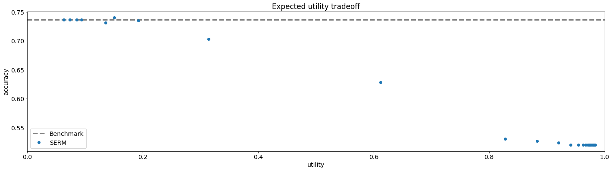

Utility¶
Imports and Definitions¶
[1]:
import os
import time
import torch
import numpy as np
import pandas as pd
import matplotlib
import matplotlib.pyplot as plt
from MSC.StrategicModels import StrategicModel
from MSC.SocialMeasures import Utility
from MSC.CommonFunctions import *
import DataGeneration as data
torch.set_default_dtype(torch.float64)
torch.manual_seed(0)
matplotlib.rc('font', size=14)
PATH = "./Results/utility"
if not os.path.exists(PATH):
os.makedirs(PATH)
Data Loading¶
[2]:
# credit dataset
X, Y = data.load_credit_default_data()
X, Y = X[:3000], Y[:3000]
X, Y, Xval, Yval, Xtest, Ytest = data.split_validation_test(X, Y)
Training¶
[3]:
x_dim = len(X[0])
scale = 1 # 1 / x_dim
epochs = 10
batch_size = 64
lambda_range = np.arange(0.05, 1.201, 0.05)
print(lambda_range)
[0.05 0.1 0.15 0.2 0.25 0.3 0.35 0.4 0.45 0.5 0.55 0.6 0.65 0.7
0.75 0.8 0.85 0.9 0.95 1. 1.05 1.1 1.15 1.2 ]
[4]:
init_time = time.time()
results = {
"lambdas": [],
"accuracies": [],
"utilities": []
}
print(f"---------- Training with lambda={0:.3f} ----------")
model_name = f"utility_{0:.3f}"
utility = Utility(0, quad_cost_torch, cost_const_kwargs={"scale": scale}) # Create utility from outside since reg=0.
benchmark_model = StrategicModel(x_dim, batch_size, cost_fn="quad", cost_const_kwargs={"scale": scale},
social_measure_dict={"utility": utility}, strategic=True)
benchmark_model.fit(X, Y, Xval, Yval, opt_class=torch.optim.Adam, opt_kwargs={"lr": 5e-2}, epochs=epochs,
verbose="batches", path=PATH, model_name=model_name)
results["lambdas"].append(0)
accuracy = benchmark_model.evaluate(Xtest, Ytest, strategic_data=True)
results["accuracies"].append(accuracy)
Xtest_opt, Ytest_pred = benchmark_model.forward(Xtest, requires_grad=False)
utility = benchmark_model.social_measure_dict["utility"].calc_utility(Xtest, Xtest_opt, Ytest_pred, requires_grad=False).item()
results["utilities"].append(utility)
pd.DataFrame(results).to_csv(f"{PATH}/results.csv")
for lamb in lambda_range:
print(f"---------- Training with lambda={lamb:.3f} ----------")
model_name = f"utility_{lamb:.3f}"
model = StrategicModel(x_dim, batch_size, cost_fn="quad", cost_const_kwargs={"scale": scale}, utility_reg=lamb, strategic=True)
model.fit(X, Y, Xval, Yval, opt_class=torch.optim.Adam, opt_kwargs={"lr": 5e-2}, epochs=epochs,
verbose="batches", path=PATH, model_name=model_name)
# Calculate and save results.
results["lambdas"].append(lamb)
accuracy = model.evaluate(Xtest, Ytest, strategic_data=True)
results["accuracies"].append(accuracy)
Xtest_opt, Ytest_pred = model.forward(Xtest, requires_grad=False)
utility = model.social_measure_dict["utility"].calc_utility(Xtest, Xtest_opt, Ytest_pred, requires_grad=False).item()
results["utilities"].append(utility)
pd.DataFrame(results).to_csv(f"{PATH}/results.csv")
final_time = time.time()
total_time = final_time - init_time
print(f"Test took {total_time / 60} minutes ({total_time} seconds).")
---------- Training with lambda=0 ----------
Starting epoch 001 / 010.
C:\Users\technion\.conda\envs\SCMP\lib\site-packages\cvxpy\reductions\solvers\solving_chain.py:163: UserWarning: You are solving a parameterized problem that is not DPP. Because the problem is not DPP, subsequent solves will not be faster than the first one. For more information, see the documentation on Discplined Parametrized Programming, at
https://www.cvxpy.org/tutorial/advanced/index.html#disciplined-parametrized-programming
warnings.warn(dpp_error_msg)
batch 001 / 029 | loss: 0.87442 | error: 0.40625 | utility: 0.93142
batch 002 / 029 | loss: 0.86309 | error: 0.40625 | utility: 0.92997
batch 003 / 029 | loss: 0.92107 | error: 0.44792 | utility: 0.94154
batch 004 / 029 | loss: 0.91831 | error: 0.45312 | utility: 0.94454
batch 005 / 029 | loss: 0.90621 | error: 0.45312 | utility: 0.94243
batch 006 / 029 | loss: 0.91022 | error: 0.45833 | utility: 0.93526
batch 007 / 029 | loss: 0.91913 | error: 0.46875 | utility: 0.91787
batch 008 / 029 | loss: 0.93124 | error: 0.48047 | utility: 0.89706
batch 009 / 029 | loss: 0.94589 | error: 0.49653 | utility: 0.88326
batch 010 / 029 | loss: 0.93917 | error: 0.49375 | utility: 0.85926
batch 011 / 029 | loss: 0.92464 | error: 0.48864 | utility: 0.87629
batch 012 / 029 | loss: 0.93360 | error: 0.49479 | utility: 0.80194
batch 013 / 029 | loss: 0.92422 | error: 0.48918 | utility: 0.75488
batch 014 / 029 | loss: 0.91955 | error: 0.48996 | utility: 0.73737
batch 015 / 029 | loss: 0.90868 | error: 0.48125 | utility: 0.60873
batch 016 / 029 | loss: 0.90651 | error: 0.47852 | utility: 0.68371
batch 017 / 029 | loss: 0.89672 | error: 0.47151 | utility: 0.51757
batch 018 / 029 | loss: 0.89530 | error: 0.47049 | utility: 0.55309
batch 019 / 029 | loss: 0.89226 | error: 0.46464 | utility: 0.48072
batch 020 / 029 | loss: 0.88711 | error: 0.46094 | utility: 0.52923
batch 021 / 029 | loss: 0.88016 | error: 0.45610 | utility: 0.57558
batch 022 / 029 | loss: 0.87057 | error: 0.44815 | utility: 0.46692
batch 023 / 029 | loss: 0.86403 | error: 0.44158 | utility: 0.23435
batch 024 / 029 | loss: 0.85888 | error: 0.43685 | utility: 0.40403
batch 025 / 029 | loss: 0.85666 | error: 0.43438 | utility: 0.44514
batch 026 / 029 | loss: 0.85552 | error: 0.43269 | utility: 0.44102
batch 027 / 029 | loss: 0.85487 | error: 0.42882 | utility: 0.38351
batch 028 / 029 | loss: 0.84960 | error: 0.42467 | utility: 0.43096
batch 029 / 029 | loss: 0.84157 | error: 0.42295 | utility: 0.48897
Finished training step, calculating validation loss and accuracy.
epoch 001 / 010 | time: 046 sec | loss: 0.75525 | error: 0.35000 | utility: 0.38608
Saving model to ./Results/utility/utility_0.000_model.pt.
Starting epoch 002 / 010.
batch 001 / 029 | loss: 0.77388 | error: 0.40625 | utility: 0.21699
batch 002 / 029 | loss: 0.76267 | error: 0.38281 | utility: 0.33654
batch 003 / 029 | loss: 0.78358 | error: 0.40104 | utility: 0.28967
batch 004 / 029 | loss: 0.77341 | error: 0.38281 | utility: 0.44270
batch 005 / 029 | loss: 0.75237 | error: 0.37500 | utility: 0.25105
batch 006 / 029 | loss: 0.73338 | error: 0.35938 | utility: 0.33745
batch 007 / 029 | loss: 0.72355 | error: 0.34821 | utility: 0.05448
batch 008 / 029 | loss: 0.70768 | error: 0.33789 | utility: 0.30691
batch 009 / 029 | loss: 0.69690 | error: 0.32812 | utility: 0.23845
batch 010 / 029 | loss: 0.69198 | error: 0.32188 | utility: 0.19064
batch 011 / 029 | loss: 0.69272 | error: 0.31960 | utility: 0.35372
batch 012 / 029 | loss: 0.68640 | error: 0.31641 | utility: 0.01272
batch 013 / 029 | loss: 0.68711 | error: 0.31851 | utility: 0.13424
batch 014 / 029 | loss: 0.70716 | error: 0.32924 | utility: 0.11035
batch 015 / 029 | loss: 0.70564 | error: 0.32812 | utility: 0.37405
batch 016 / 029 | loss: 0.69952 | error: 0.32227 | utility: 0.12256
batch 017 / 029 | loss: 0.69864 | error: 0.31985 | utility: 0.14833
batch 018 / 029 | loss: 0.69895 | error: 0.32292 | utility: 0.20704
batch 019 / 029 | loss: 0.69807 | error: 0.32401 | utility: 0.08040
batch 020 / 029 | loss: 0.69932 | error: 0.32344 | utility: 0.18468
batch 021 / 029 | loss: 0.71315 | error: 0.33110 | utility: 0.04908
batch 022 / 029 | loss: 0.70918 | error: 0.32670 | utility: 0.00142
batch 023 / 029 | loss: 0.70627 | error: 0.32473 | utility: 0.24961
batch 024 / 029 | loss: 0.71001 | error: 0.32617 | utility: 0.03394
batch 025 / 029 | loss: 0.70858 | error: 0.32625 | utility: -0.03334
batch 026 / 029 | loss: 0.70458 | error: 0.32332 | utility: 0.04883
batch 027 / 029 | loss: 0.70294 | error: 0.32176 | utility: 0.04518
batch 028 / 029 | loss: 0.70305 | error: 0.32031 | utility: 0.03812
batch 029 / 029 | loss: 0.69396 | error: 0.31358 | utility: 0.05244
Finished training step, calculating validation loss and accuracy.
epoch 002 / 010 | time: 050 sec | loss: 0.79538 | error: 0.32396 | utility: 0.04527
Validation accuracy improved.
Saving model to ./Results/utility/utility_0.000_model.pt.
Starting epoch 003 / 010.
batch 001 / 029 | loss: 0.79322 | error: 0.34375 | utility: -0.10893
batch 002 / 029 | loss: 0.73565 | error: 0.28906 | utility: -0.16710
batch 003 / 029 | loss: 0.67186 | error: 0.27083 | utility: 0.06593
batch 004 / 029 | loss: 0.69459 | error: 0.28906 | utility: 0.13026
batch 005 / 029 | loss: 0.67942 | error: 0.28125 | utility: 0.07581
batch 006 / 029 | loss: 0.68456 | error: 0.29167 | utility: 0.00006
batch 007 / 029 | loss: 0.66965 | error: 0.28571 | utility: 0.27598
batch 008 / 029 | loss: 0.68814 | error: 0.30078 | utility: 0.14202
batch 009 / 029 | loss: 0.66250 | error: 0.28819 | utility: -0.00895
batch 010 / 029 | loss: 0.66776 | error: 0.28906 | utility: 0.14428
batch 011 / 029 | loss: 0.67133 | error: 0.28977 | utility: 0.11204
batch 012 / 029 | loss: 0.67696 | error: 0.29297 | utility: -0.08629
batch 013 / 029 | loss: 0.67204 | error: 0.29567 | utility: -0.05129
batch 014 / 029 | loss: 0.66507 | error: 0.29464 | utility: 0.19696
batch 015 / 029 | loss: 0.67118 | error: 0.29583 | utility: 0.06833
batch 016 / 029 | loss: 0.67711 | error: 0.30371 | utility: -0.05885
batch 017 / 029 | loss: 0.68004 | error: 0.30423 | utility: 0.17555
batch 018 / 029 | loss: 0.68957 | error: 0.30729 | utility: -0.04543
batch 019 / 029 | loss: 0.69932 | error: 0.31086 | utility: 0.11026
batch 020 / 029 | loss: 0.70211 | error: 0.31250 | utility: 0.23232
batch 021 / 029 | loss: 0.69482 | error: 0.30655 | utility: 0.06390
batch 022 / 029 | loss: 0.69566 | error: 0.30611 | utility: 0.02646
batch 023 / 029 | loss: 0.69547 | error: 0.30571 | utility: 0.20155
batch 024 / 029 | loss: 0.69691 | error: 0.30599 | utility: 0.03025
batch 025 / 029 | loss: 0.69909 | error: 0.30812 | utility: 0.01661
batch 026 / 029 | loss: 0.69693 | error: 0.30829 | utility: 0.05408
batch 027 / 029 | loss: 0.69339 | error: 0.30671 | utility: 0.03589
batch 028 / 029 | loss: 0.68586 | error: 0.30469 | utility: -0.03816
batch 029 / 029 | loss: 0.67059 | error: 0.29418 | utility: 0.10355
Finished training step, calculating validation loss and accuracy.
epoch 003 / 010 | time: 055 sec | loss: 0.82557 | error: 0.33177 | utility: 0.08158
Starting epoch 004 / 010.
batch 001 / 029 | loss: 0.70875 | error: 0.32812 | utility: 0.06280
batch 002 / 029 | loss: 0.77493 | error: 0.36719 | utility: 0.02787
batch 003 / 029 | loss: 0.69201 | error: 0.30729 | utility: 0.03598
batch 004 / 029 | loss: 0.66935 | error: 0.30078 | utility: 0.27572
batch 005 / 029 | loss: 0.69152 | error: 0.30938 | utility: 0.10443
batch 006 / 029 | loss: 0.68063 | error: 0.30729 | utility: 0.02495
batch 007 / 029 | loss: 0.66817 | error: 0.29911 | utility: 0.10638
batch 008 / 029 | loss: 0.67408 | error: 0.30469 | utility: 0.08330
batch 009 / 029 | loss: 0.70520 | error: 0.31597 | utility: 0.00189
batch 010 / 029 | loss: 0.68172 | error: 0.30312 | utility: 0.03665
batch 011 / 029 | loss: 0.68912 | error: 0.30824 | utility: -0.27306
batch 012 / 029 | loss: 0.69495 | error: 0.30599 | utility: -0.07405
batch 013 / 029 | loss: 0.67495 | error: 0.29808 | utility: 0.10741
batch 014 / 029 | loss: 0.67176 | error: 0.29464 | utility: 0.06582
batch 015 / 029 | loss: 0.67118 | error: 0.29271 | utility: 0.08487
batch 016 / 029 | loss: 0.68352 | error: 0.29590 | utility: 0.10136
batch 017 / 029 | loss: 0.68387 | error: 0.29596 | utility: 0.03675
batch 018 / 029 | loss: 0.68331 | error: 0.29688 | utility: 0.08584
batch 019 / 029 | loss: 0.68384 | error: 0.29770 | utility: -0.01795
batch 020 / 029 | loss: 0.68880 | error: 0.29922 | utility: -0.00328
batch 021 / 029 | loss: 0.68582 | error: 0.29836 | utility: 0.10613
batch 022 / 029 | loss: 0.69142 | error: 0.30185 | utility: 0.01995
batch 023 / 029 | loss: 0.69331 | error: 0.30163 | utility: -0.07052
batch 024 / 029 | loss: 0.69321 | error: 0.30143 | utility: -0.11689
batch 025 / 029 | loss: 0.69086 | error: 0.30125 | utility: -0.04107
batch 026 / 029 | loss: 0.68637 | error: 0.29868 | utility: 0.09162
batch 027 / 029 | loss: 0.68545 | error: 0.29861 | utility: -0.15417
batch 028 / 029 | loss: 0.68353 | error: 0.29743 | utility: -0.17839
batch 029 / 029 | loss: 0.68576 | error: 0.30011 | utility: -0.40927
Finished training step, calculating validation loss and accuracy.
epoch 004 / 010 | time: 058 sec | loss: 0.84671 | error: 0.33542 | utility: 0.06974
Starting epoch 005 / 010.
batch 001 / 029 | loss: 0.75646 | error: 0.28125 | utility: -0.16640
batch 002 / 029 | loss: 0.75419 | error: 0.32031 | utility: -0.06721
batch 003 / 029 | loss: 0.71347 | error: 0.30208 | utility: -0.07034
batch 004 / 029 | loss: 0.71938 | error: 0.30078 | utility: -0.03223
batch 005 / 029 | loss: 0.70071 | error: 0.29063 | utility: -0.02582
batch 006 / 029 | loss: 0.66424 | error: 0.28125 | utility: -0.04685
batch 007 / 029 | loss: 0.66511 | error: 0.28348 | utility: -0.02890
batch 008 / 029 | loss: 0.65964 | error: 0.28320 | utility: -0.00722
batch 009 / 029 | loss: 0.67802 | error: 0.29167 | utility: 0.22090
batch 010 / 029 | loss: 0.67370 | error: 0.28594 | utility: -0.05450
batch 011 / 029 | loss: 0.68405 | error: 0.29119 | utility: 0.17883
batch 012 / 029 | loss: 0.67735 | error: 0.29036 | utility: -0.05713
batch 013 / 029 | loss: 0.67620 | error: 0.28966 | utility: 0.07706
batch 014 / 029 | loss: 0.68061 | error: 0.29129 | utility: -0.05944
batch 015 / 029 | loss: 0.68959 | error: 0.29688 | utility: 0.07760
batch 016 / 029 | loss: 0.69963 | error: 0.30273 | utility: 0.07067
batch 017 / 029 | loss: 0.70160 | error: 0.30515 | utility: 0.13023
batch 018 / 029 | loss: 0.69703 | error: 0.30295 | utility: 0.04744
batch 019 / 029 | loss: 0.69554 | error: 0.30263 | utility: -0.09665
batch 020 / 029 | loss: 0.68877 | error: 0.29922 | utility: -0.09707
batch 021 / 029 | loss: 0.68483 | error: 0.29836 | utility: -0.00378
batch 022 / 029 | loss: 0.68457 | error: 0.29972 | utility: 0.00741
batch 023 / 029 | loss: 0.67995 | error: 0.29755 | utility: -0.00880
batch 024 / 029 | loss: 0.68267 | error: 0.30013 | utility: -0.07267
batch 025 / 029 | loss: 0.68015 | error: 0.29750 | utility: -0.08067
batch 026 / 029 | loss: 0.68486 | error: 0.30048 | utility: 0.10149
batch 027 / 029 | loss: 0.68428 | error: 0.29977 | utility: 0.07859
batch 028 / 029 | loss: 0.68430 | error: 0.30078 | utility: -0.23145
batch 029 / 029 | loss: 0.67169 | error: 0.29472 | utility: -0.17906
Finished training step, calculating validation loss and accuracy.
epoch 005 / 010 | time: 064 sec | loss: 0.84915 | error: 0.32760 | utility: 0.05582
Starting epoch 006 / 010.
batch 001 / 029 | loss: 0.52186 | error: 0.23438 | utility: 0.07197
batch 002 / 029 | loss: 0.61143 | error: 0.28906 | utility: -0.31712
batch 003 / 029 | loss: 0.64468 | error: 0.30208 | utility: 0.01340
batch 004 / 029 | loss: 0.69491 | error: 0.31250 | utility: -0.25366
batch 005 / 029 | loss: 0.66158 | error: 0.28750 | utility: -0.04486
batch 006 / 029 | loss: 0.65592 | error: 0.29167 | utility: -0.20661
batch 007 / 029 | loss: 0.65549 | error: 0.29688 | utility: -0.10881
batch 008 / 029 | loss: 0.66479 | error: 0.30078 | utility: 0.04440
batch 009 / 029 | loss: 0.66347 | error: 0.29861 | utility: -0.01136
batch 010 / 029 | loss: 0.65958 | error: 0.29375 | utility: 0.12643
batch 011 / 029 | loss: 0.67970 | error: 0.30256 | utility: 0.06659
batch 012 / 029 | loss: 0.67471 | error: 0.29818 | utility: 0.00579
batch 013 / 029 | loss: 0.67828 | error: 0.30168 | utility: -0.00749
batch 014 / 029 | loss: 0.67672 | error: 0.29911 | utility: 0.02959
batch 015 / 029 | loss: 0.66506 | error: 0.29375 | utility: 0.11660
batch 016 / 029 | loss: 0.67758 | error: 0.29980 | utility: -0.23135
batch 017 / 029 | loss: 0.68046 | error: 0.30055 | utility: -0.14284
batch 018 / 029 | loss: 0.67206 | error: 0.29514 | utility: 0.04107
batch 019 / 029 | loss: 0.67707 | error: 0.29770 | utility: -0.21855
batch 020 / 029 | loss: 0.68311 | error: 0.30234 | utility: -0.08011
batch 021 / 029 | loss: 0.67605 | error: 0.29836 | utility: 0.15502
batch 022 / 029 | loss: 0.67515 | error: 0.29901 | utility: -0.02397
batch 023 / 029 | loss: 0.67403 | error: 0.30027 | utility: 0.07464
batch 024 / 029 | loss: 0.67211 | error: 0.30013 | utility: -0.08295
batch 025 / 029 | loss: 0.67603 | error: 0.30250 | utility: -0.06000
batch 026 / 029 | loss: 0.67437 | error: 0.30168 | utility: 0.16611
batch 027 / 029 | loss: 0.67527 | error: 0.30208 | utility: 0.05637
batch 028 / 029 | loss: 0.67795 | error: 0.30190 | utility: -0.05822
batch 029 / 029 | loss: 0.70686 | error: 0.31304 | utility: -0.52876
Finished training step, calculating validation loss and accuracy.
epoch 006 / 010 | time: 067 sec | loss: 0.83499 | error: 0.32917 | utility: 0.04668
Ending training due to 4 consecutive epochs without improvement in validation accuracy.
Total training time: 6 minutes (339.8663983345032 seconds).
Loading model from ./Results/utility/utility_0.000_model.pt.
---------- Training with lambda=0.05 ----------
Starting epoch 001 / 010.
batch 001 / 029 | loss: 0.85236 | error: 0.40625 | utility: 0.93142
batch 002 / 029 | loss: 0.84007 | error: 0.40625 | utility: 0.92997
batch 003 / 029 | loss: 0.89742 | error: 0.44792 | utility: 0.94116
batch 004 / 029 | loss: 0.89436 | error: 0.45312 | utility: 0.94500
batch 005 / 029 | loss: 0.88251 | error: 0.45312 | utility: 0.94388
batch 006 / 029 | loss: 0.88699 | error: 0.45833 | utility: 0.93778
batch 007 / 029 | loss: 0.89699 | error: 0.46875 | utility: 0.92333
batch 008 / 029 | loss: 0.91040 | error: 0.48047 | utility: 0.90574
batch 009 / 029 | loss: 0.92663 | error: 0.49653 | utility: 0.89514
batch 010 / 029 | loss: 0.92034 | error: 0.49375 | utility: 0.87461
batch 011 / 029 | loss: 0.90605 | error: 0.48864 | utility: 0.88938
batch 012 / 029 | loss: 0.91586 | error: 0.49479 | utility: 0.82367
batch 013 / 029 | loss: 0.90679 | error: 0.48918 | utility: 0.77916
batch 014 / 029 | loss: 0.90287 | error: 0.48996 | utility: 0.76661
batch 015 / 029 | loss: 0.89220 | error: 0.48125 | utility: 0.65425
batch 016 / 029 | loss: 0.89018 | error: 0.48047 | utility: 0.72170
batch 017 / 029 | loss: 0.88133 | error: 0.47335 | utility: 0.56678
batch 018 / 029 | loss: 0.88084 | error: 0.47309 | utility: 0.60096
batch 019 / 029 | loss: 0.87867 | error: 0.46875 | utility: 0.53243
batch 020 / 029 | loss: 0.87428 | error: 0.46719 | utility: 0.56666
batch 021 / 029 | loss: 0.86742 | error: 0.46131 | utility: 0.61406
batch 022 / 029 | loss: 0.85796 | error: 0.45241 | utility: 0.51705
batch 023 / 029 | loss: 0.85216 | error: 0.44633 | utility: 0.29308
batch 024 / 029 | loss: 0.84756 | error: 0.44206 | utility: 0.43894
batch 025 / 029 | loss: 0.84554 | error: 0.44000 | utility: 0.48497
batch 026 / 029 | loss: 0.84452 | error: 0.43810 | utility: 0.49711
batch 027 / 029 | loss: 0.84429 | error: 0.43461 | utility: 0.43289
batch 028 / 029 | loss: 0.83958 | error: 0.43080 | utility: 0.48436
batch 029 / 029 | loss: 0.83214 | error: 0.42888 | utility: 0.52523
Finished training step, calculating validation loss and accuracy.
epoch 001 / 010 | time: 043 sec | loss: 0.75726 | error: 0.36094 | utility: 0.45685
Saving model to ./Results/utility/utility_0.050_model.pt.
Starting epoch 002 / 010.
batch 001 / 029 | loss: 0.78716 | error: 0.42188 | utility: 0.28632
batch 002 / 029 | loss: 0.77401 | error: 0.38281 | utility: 0.39389
batch 003 / 029 | loss: 0.79323 | error: 0.40104 | utility: 0.35242
batch 004 / 029 | loss: 0.78142 | error: 0.38281 | utility: 0.47070
batch 005 / 029 | loss: 0.76243 | error: 0.37812 | utility: 0.30883
batch 006 / 029 | loss: 0.74294 | error: 0.36198 | utility: 0.38169
batch 007 / 029 | loss: 0.73690 | error: 0.35268 | utility: 0.08234
batch 008 / 029 | loss: 0.71962 | error: 0.34570 | utility: 0.35726
batch 009 / 029 | loss: 0.70755 | error: 0.33681 | utility: 0.26629
batch 010 / 029 | loss: 0.70176 | error: 0.32812 | utility: 0.22505
batch 011 / 029 | loss: 0.70181 | error: 0.32528 | utility: 0.37808
batch 012 / 029 | loss: 0.69638 | error: 0.32031 | utility: 0.04707
batch 013 / 029 | loss: 0.69576 | error: 0.32452 | utility: 0.15042
batch 014 / 029 | loss: 0.71409 | error: 0.33482 | utility: 0.14551
batch 015 / 029 | loss: 0.71098 | error: 0.33333 | utility: 0.39623
batch 016 / 029 | loss: 0.70517 | error: 0.32715 | utility: 0.16784
batch 017 / 029 | loss: 0.70407 | error: 0.32629 | utility: 0.19667
batch 018 / 029 | loss: 0.70494 | error: 0.32899 | utility: 0.26061
batch 019 / 029 | loss: 0.70430 | error: 0.33059 | utility: 0.12916
batch 020 / 029 | loss: 0.70444 | error: 0.32891 | utility: 0.22285
batch 021 / 029 | loss: 0.71864 | error: 0.33780 | utility: 0.11234
batch 022 / 029 | loss: 0.71508 | error: 0.33523 | utility: 0.06528
batch 023 / 029 | loss: 0.71210 | error: 0.33288 | utility: 0.29641
batch 024 / 029 | loss: 0.71579 | error: 0.33464 | utility: 0.09073
batch 025 / 029 | loss: 0.71439 | error: 0.33437 | utility: 0.02283
batch 026 / 029 | loss: 0.71036 | error: 0.33113 | utility: 0.07711
batch 027 / 029 | loss: 0.70882 | error: 0.32928 | utility: 0.09306
batch 028 / 029 | loss: 0.70906 | error: 0.32701 | utility: 0.09305
batch 029 / 029 | loss: 0.70141 | error: 0.32004 | utility: 0.11153
Finished training step, calculating validation loss and accuracy.
epoch 002 / 010 | time: 047 sec | loss: 0.78142 | error: 0.32240 | utility: 0.05789
Validation accuracy improved.
Saving model to ./Results/utility/utility_0.050_model.pt.
Starting epoch 003 / 010.
batch 001 / 029 | loss: 0.81948 | error: 0.34375 | utility: -0.04414
batch 002 / 029 | loss: 0.75621 | error: 0.28906 | utility: -0.12299
batch 003 / 029 | loss: 0.69080 | error: 0.26562 | utility: 0.10891
batch 004 / 029 | loss: 0.71149 | error: 0.28125 | utility: 0.16751
batch 005 / 029 | loss: 0.69215 | error: 0.28437 | utility: 0.11212
batch 006 / 029 | loss: 0.69934 | error: 0.28906 | utility: 0.03510
batch 007 / 029 | loss: 0.68041 | error: 0.28571 | utility: 0.30270
batch 008 / 029 | loss: 0.69871 | error: 0.30273 | utility: 0.18907
batch 009 / 029 | loss: 0.67250 | error: 0.29167 | utility: 0.02748
batch 010 / 029 | loss: 0.67708 | error: 0.29531 | utility: 0.17009
batch 011 / 029 | loss: 0.68065 | error: 0.29830 | utility: 0.13371
batch 012 / 029 | loss: 0.68672 | error: 0.30078 | utility: -0.07401
batch 013 / 029 | loss: 0.68149 | error: 0.30288 | utility: -0.04741
batch 014 / 029 | loss: 0.67415 | error: 0.30134 | utility: 0.20669
batch 015 / 029 | loss: 0.68013 | error: 0.30208 | utility: 0.07821
batch 016 / 029 | loss: 0.68600 | error: 0.30664 | utility: -0.04897
batch 017 / 029 | loss: 0.68836 | error: 0.30790 | utility: 0.18721
batch 018 / 029 | loss: 0.69674 | error: 0.31076 | utility: -0.03265
batch 019 / 029 | loss: 0.70686 | error: 0.31414 | utility: 0.12930
batch 020 / 029 | loss: 0.70910 | error: 0.31641 | utility: 0.26800
batch 021 / 029 | loss: 0.70218 | error: 0.31027 | utility: 0.07781
batch 022 / 029 | loss: 0.70252 | error: 0.31108 | utility: 0.05959
batch 023 / 029 | loss: 0.70150 | error: 0.31182 | utility: 0.24891
batch 024 / 029 | loss: 0.70344 | error: 0.31250 | utility: 0.09078
batch 025 / 029 | loss: 0.70472 | error: 0.31500 | utility: 0.06289
batch 026 / 029 | loss: 0.70305 | error: 0.31611 | utility: 0.11125
batch 027 / 029 | loss: 0.69923 | error: 0.31424 | utility: 0.06706
batch 028 / 029 | loss: 0.69165 | error: 0.31250 | utility: -0.00697
batch 029 / 029 | loss: 0.67688 | error: 0.30603 | utility: 0.10802
Finished training step, calculating validation loss and accuracy.
epoch 003 / 010 | time: 053 sec | loss: 0.81564 | error: 0.33021 | utility: 0.08873
Starting epoch 004 / 010.
batch 001 / 029 | loss: 0.70959 | error: 0.32812 | utility: 0.08174
batch 002 / 029 | loss: 0.77021 | error: 0.35938 | utility: 0.04923
batch 003 / 029 | loss: 0.68998 | error: 0.30208 | utility: 0.04552
batch 004 / 029 | loss: 0.66713 | error: 0.29688 | utility: 0.30153
batch 005 / 029 | loss: 0.68964 | error: 0.31250 | utility: 0.13938
batch 006 / 029 | loss: 0.67882 | error: 0.30990 | utility: 0.05559
batch 007 / 029 | loss: 0.66709 | error: 0.29911 | utility: 0.13759
batch 008 / 029 | loss: 0.67302 | error: 0.30664 | utility: 0.10420
batch 009 / 029 | loss: 0.70490 | error: 0.31944 | utility: 0.05368
batch 010 / 029 | loss: 0.68147 | error: 0.30625 | utility: 0.08082
batch 011 / 029 | loss: 0.69000 | error: 0.31108 | utility: -0.21922
batch 012 / 029 | loss: 0.69664 | error: 0.30859 | utility: -0.03161
batch 013 / 029 | loss: 0.67689 | error: 0.30048 | utility: 0.12702
batch 014 / 029 | loss: 0.67384 | error: 0.29799 | utility: 0.09070
batch 015 / 029 | loss: 0.67308 | error: 0.29583 | utility: 0.10754
batch 016 / 029 | loss: 0.68554 | error: 0.29883 | utility: 0.12481
batch 017 / 029 | loss: 0.68622 | error: 0.29871 | utility: 0.05877
batch 018 / 029 | loss: 0.68551 | error: 0.29948 | utility: 0.10437
batch 019 / 029 | loss: 0.68635 | error: 0.30099 | utility: 0.01097
batch 020 / 029 | loss: 0.69095 | error: 0.30234 | utility: 0.01979
batch 021 / 029 | loss: 0.68806 | error: 0.30134 | utility: 0.13560
batch 022 / 029 | loss: 0.69353 | error: 0.30398 | utility: 0.06935
batch 023 / 029 | loss: 0.69603 | error: 0.30367 | utility: -0.01662
batch 024 / 029 | loss: 0.69725 | error: 0.30273 | utility: -0.06171
batch 025 / 029 | loss: 0.69493 | error: 0.30312 | utility: 0.01398
batch 026 / 029 | loss: 0.69083 | error: 0.30048 | utility: 0.13827
batch 027 / 029 | loss: 0.68979 | error: 0.30035 | utility: -0.10758
batch 028 / 029 | loss: 0.68812 | error: 0.29911 | utility: -0.14023
batch 029 / 029 | loss: 0.68897 | error: 0.30172 | utility: -0.34093
Finished training step, calculating validation loss and accuracy.
epoch 004 / 010 | time: 054 sec | loss: 0.83686 | error: 0.33542 | utility: 0.07885
Starting epoch 005 / 010.
batch 001 / 029 | loss: 0.78515 | error: 0.29688 | utility: -0.12068
batch 002 / 029 | loss: 0.77085 | error: 0.32812 | utility: -0.02428
batch 003 / 029 | loss: 0.72894 | error: 0.31250 | utility: -0.02375
batch 004 / 029 | loss: 0.73103 | error: 0.30859 | utility: 0.01844
batch 005 / 029 | loss: 0.71251 | error: 0.29688 | utility: 0.00073
batch 006 / 029 | loss: 0.67653 | error: 0.28646 | utility: -0.01666
batch 007 / 029 | loss: 0.67677 | error: 0.28795 | utility: -0.00781
batch 008 / 029 | loss: 0.67113 | error: 0.28711 | utility: 0.01978
batch 009 / 029 | loss: 0.68674 | error: 0.29688 | utility: 0.24048
batch 010 / 029 | loss: 0.68273 | error: 0.29219 | utility: -0.01666
batch 011 / 029 | loss: 0.69197 | error: 0.29545 | utility: 0.21811
batch 012 / 029 | loss: 0.68585 | error: 0.29167 | utility: -0.00753
batch 013 / 029 | loss: 0.68377 | error: 0.29087 | utility: 0.12569
batch 014 / 029 | loss: 0.68922 | error: 0.29241 | utility: -0.03379
batch 015 / 029 | loss: 0.69627 | error: 0.29688 | utility: 0.11354
batch 016 / 029 | loss: 0.70432 | error: 0.30078 | utility: 0.10468
batch 017 / 029 | loss: 0.70554 | error: 0.30239 | utility: 0.16763
batch 018 / 029 | loss: 0.70132 | error: 0.29948 | utility: 0.08287
batch 019 / 029 | loss: 0.70026 | error: 0.29770 | utility: -0.04447
batch 020 / 029 | loss: 0.69366 | error: 0.29688 | utility: -0.03968
batch 021 / 029 | loss: 0.69006 | error: 0.29539 | utility: 0.02699
batch 022 / 029 | loss: 0.68939 | error: 0.29545 | utility: 0.04890
batch 023 / 029 | loss: 0.68474 | error: 0.29348 | utility: 0.02900
batch 024 / 029 | loss: 0.68786 | error: 0.29557 | utility: -0.01607
batch 025 / 029 | loss: 0.68534 | error: 0.29437 | utility: -0.04078
batch 026 / 029 | loss: 0.69011 | error: 0.29748 | utility: 0.13067
batch 027 / 029 | loss: 0.68957 | error: 0.29630 | utility: 0.11370
batch 028 / 029 | loss: 0.68937 | error: 0.29799 | utility: -0.17636
batch 029 / 029 | loss: 0.67898 | error: 0.29203 | utility: -0.17709
Finished training step, calculating validation loss and accuracy.
epoch 005 / 010 | time: 056 sec | loss: 0.83247 | error: 0.32917 | utility: 0.07129
Starting epoch 006 / 010.
batch 001 / 029 | loss: 0.54499 | error: 0.23438 | utility: 0.08955
batch 002 / 029 | loss: 0.63152 | error: 0.28906 | utility: -0.28513
batch 003 / 029 | loss: 0.65936 | error: 0.29688 | utility: 0.05824
batch 004 / 029 | loss: 0.71141 | error: 0.30859 | utility: -0.20148
batch 005 / 029 | loss: 0.67832 | error: 0.28437 | utility: -0.03032
batch 006 / 029 | loss: 0.67105 | error: 0.28646 | utility: -0.19087
batch 007 / 029 | loss: 0.66922 | error: 0.29241 | utility: -0.07433
batch 008 / 029 | loss: 0.67729 | error: 0.29688 | utility: 0.06985
batch 009 / 029 | loss: 0.67388 | error: 0.29514 | utility: 0.00880
batch 010 / 029 | loss: 0.66935 | error: 0.29063 | utility: 0.14586
batch 011 / 029 | loss: 0.68837 | error: 0.30256 | utility: 0.10508
batch 012 / 029 | loss: 0.68202 | error: 0.30078 | utility: 0.05377
batch 013 / 029 | loss: 0.68599 | error: 0.30649 | utility: 0.05214
batch 014 / 029 | loss: 0.68454 | error: 0.30246 | utility: 0.10930
batch 015 / 029 | loss: 0.67221 | error: 0.29688 | utility: 0.16123
batch 016 / 029 | loss: 0.68579 | error: 0.30371 | utility: -0.14646
batch 017 / 029 | loss: 0.68911 | error: 0.30331 | utility: -0.07435
batch 018 / 029 | loss: 0.68118 | error: 0.29774 | utility: 0.08586
batch 019 / 029 | loss: 0.68592 | error: 0.30016 | utility: -0.17815
batch 020 / 029 | loss: 0.69192 | error: 0.30469 | utility: -0.04710
batch 021 / 029 | loss: 0.68498 | error: 0.30060 | utility: 0.18397
batch 022 / 029 | loss: 0.68397 | error: 0.30114 | utility: 0.00988
batch 023 / 029 | loss: 0.68280 | error: 0.30231 | utility: 0.10974
batch 024 / 029 | loss: 0.68055 | error: 0.30143 | utility: -0.05860
batch 025 / 029 | loss: 0.68458 | error: 0.30312 | utility: -0.01413
batch 026 / 029 | loss: 0.68259 | error: 0.30228 | utility: 0.20842
batch 027 / 029 | loss: 0.68320 | error: 0.30324 | utility: 0.09294
batch 028 / 029 | loss: 0.68613 | error: 0.30413 | utility: -0.02458
batch 029 / 029 | loss: 0.71453 | error: 0.31519 | utility: -0.45441
Finished training step, calculating validation loss and accuracy.
epoch 006 / 010 | time: 060 sec | loss: 0.81956 | error: 0.32760 | utility: 0.05750
Ending training due to 4 consecutive epochs without improvement in validation accuracy.
Total training time: 5 minutes (312.8578419685364 seconds).
Loading model from ./Results/utility/utility_0.050_model.pt.
---------- Training with lambda=0.1 ----------
Starting epoch 001 / 010.
batch 001 / 029 | loss: 0.83030 | error: 0.40625 | utility: 0.93142
batch 002 / 029 | loss: 0.81705 | error: 0.40625 | utility: 0.92997
batch 003 / 029 | loss: 0.87416 | error: 0.44792 | utility: 0.94032
batch 004 / 029 | loss: 0.87064 | error: 0.45312 | utility: 0.94499
batch 005 / 029 | loss: 0.85900 | error: 0.45312 | utility: 0.94472
batch 006 / 029 | loss: 0.86397 | error: 0.45833 | utility: 0.93989
batch 007 / 029 | loss: 0.87518 | error: 0.46875 | utility: 0.92845
batch 008 / 029 | loss: 0.88982 | error: 0.48047 | utility: 0.91403
batch 009 / 029 | loss: 0.90765 | error: 0.49653 | utility: 0.90637
batch 010 / 029 | loss: 0.90177 | error: 0.49531 | utility: 0.89024
batch 011 / 029 | loss: 0.88767 | error: 0.49006 | utility: 0.90199
batch 012 / 029 | loss: 0.89846 | error: 0.49740 | utility: 0.84536
batch 013 / 029 | loss: 0.88949 | error: 0.49159 | utility: 0.80334
batch 014 / 029 | loss: 0.88638 | error: 0.49219 | utility: 0.79600
batch 015 / 029 | loss: 0.87571 | error: 0.48542 | utility: 0.70091
batch 016 / 029 | loss: 0.87369 | error: 0.48438 | utility: 0.76078
batch 017 / 029 | loss: 0.86554 | error: 0.48162 | utility: 0.61951
batch 018 / 029 | loss: 0.86596 | error: 0.48264 | utility: 0.65230
batch 019 / 029 | loss: 0.86456 | error: 0.48026 | utility: 0.59081
batch 020 / 029 | loss: 0.86091 | error: 0.47813 | utility: 0.60901
batch 021 / 029 | loss: 0.85393 | error: 0.47321 | utility: 0.65706
batch 022 / 029 | loss: 0.84441 | error: 0.46449 | utility: 0.57046
batch 023 / 029 | loss: 0.83924 | error: 0.45856 | utility: 0.35607
batch 024 / 029 | loss: 0.83508 | error: 0.45312 | utility: 0.47820
batch 025 / 029 | loss: 0.83321 | error: 0.45062 | utility: 0.52571
batch 026 / 029 | loss: 0.83224 | error: 0.44952 | utility: 0.54490
batch 027 / 029 | loss: 0.83229 | error: 0.44734 | utility: 0.47849
batch 028 / 029 | loss: 0.82811 | error: 0.44308 | utility: 0.53195
batch 029 / 029 | loss: 0.82088 | error: 0.44073 | utility: 0.55950
Finished training step, calculating validation loss and accuracy.
epoch 001 / 010 | time: 041 sec | loss: 0.75739 | error: 0.37031 | utility: 0.50365
Saving model to ./Results/utility/utility_0.100_model.pt.
Starting epoch 002 / 010.
batch 001 / 029 | loss: 0.79725 | error: 0.40625 | utility: 0.35341
batch 002 / 029 | loss: 0.78161 | error: 0.38281 | utility: 0.44492
batch 003 / 029 | loss: 0.79866 | error: 0.39583 | utility: 0.40756
batch 004 / 029 | loss: 0.78459 | error: 0.37891 | utility: 0.49810
batch 005 / 029 | loss: 0.76751 | error: 0.37500 | utility: 0.35665
batch 006 / 029 | loss: 0.74797 | error: 0.35938 | utility: 0.42192
batch 007 / 029 | loss: 0.74520 | error: 0.35045 | utility: 0.11578
batch 008 / 029 | loss: 0.72667 | error: 0.34375 | utility: 0.41028
batch 009 / 029 | loss: 0.71380 | error: 0.33507 | utility: 0.30429
batch 010 / 029 | loss: 0.70685 | error: 0.32656 | utility: 0.27473
batch 011 / 029 | loss: 0.70645 | error: 0.32670 | utility: 0.42161
batch 012 / 029 | loss: 0.70224 | error: 0.32161 | utility: 0.09676
batch 013 / 029 | loss: 0.70146 | error: 0.32572 | utility: 0.17959
batch 014 / 029 | loss: 0.71871 | error: 0.33817 | utility: 0.20256
batch 015 / 029 | loss: 0.71400 | error: 0.33646 | utility: 0.43595
batch 016 / 029 | loss: 0.70807 | error: 0.33203 | utility: 0.21808
batch 017 / 029 | loss: 0.70673 | error: 0.33272 | utility: 0.25132
batch 018 / 029 | loss: 0.70793 | error: 0.33507 | utility: 0.30796
batch 019 / 029 | loss: 0.70756 | error: 0.33635 | utility: 0.17422
batch 020 / 029 | loss: 0.70726 | error: 0.33437 | utility: 0.25193
batch 021 / 029 | loss: 0.72175 | error: 0.34449 | utility: 0.15327
batch 022 / 029 | loss: 0.71819 | error: 0.34233 | utility: 0.10442
batch 023 / 029 | loss: 0.71490 | error: 0.34171 | utility: 0.33118
batch 024 / 029 | loss: 0.71814 | error: 0.34245 | utility: 0.12208
batch 025 / 029 | loss: 0.71691 | error: 0.34187 | utility: 0.05867
batch 026 / 029 | loss: 0.71264 | error: 0.33834 | utility: 0.10107
batch 027 / 029 | loss: 0.71111 | error: 0.33681 | utility: 0.13185
batch 028 / 029 | loss: 0.71137 | error: 0.33538 | utility: 0.14679
batch 029 / 029 | loss: 0.70413 | error: 0.32812 | utility: 0.16106
Finished training step, calculating validation loss and accuracy.
epoch 002 / 010 | time: 047 sec | loss: 0.77097 | error: 0.32083 | utility: 0.06747
Validation accuracy improved.
Saving model to ./Results/utility/utility_0.100_model.pt.
Starting epoch 003 / 010.
batch 001 / 029 | loss: 0.82829 | error: 0.31250 | utility: 0.00845
batch 002 / 029 | loss: 0.75977 | error: 0.28906 | utility: -0.08618
batch 003 / 029 | loss: 0.69444 | error: 0.26562 | utility: 0.14238
batch 004 / 029 | loss: 0.71373 | error: 0.29297 | utility: 0.20704
batch 005 / 029 | loss: 0.69359 | error: 0.29688 | utility: 0.14407
batch 006 / 029 | loss: 0.70357 | error: 0.30208 | utility: 0.05929
batch 007 / 029 | loss: 0.68321 | error: 0.29464 | utility: 0.31207
batch 008 / 029 | loss: 0.70211 | error: 0.31055 | utility: 0.22436
batch 009 / 029 | loss: 0.67591 | error: 0.29688 | utility: 0.05360
batch 010 / 029 | loss: 0.68021 | error: 0.30000 | utility: 0.18210
batch 011 / 029 | loss: 0.68387 | error: 0.30256 | utility: 0.14698
batch 012 / 029 | loss: 0.69043 | error: 0.30469 | utility: -0.05978
batch 013 / 029 | loss: 0.68559 | error: 0.30649 | utility: -0.03914
batch 014 / 029 | loss: 0.67823 | error: 0.30469 | utility: 0.22111
batch 015 / 029 | loss: 0.68480 | error: 0.30521 | utility: 0.08991
batch 016 / 029 | loss: 0.69089 | error: 0.31250 | utility: -0.01049
batch 017 / 029 | loss: 0.69285 | error: 0.31250 | utility: 0.21430
batch 018 / 029 | loss: 0.70065 | error: 0.31424 | utility: -0.00957
batch 019 / 029 | loss: 0.71125 | error: 0.31743 | utility: 0.16082
batch 020 / 029 | loss: 0.71317 | error: 0.31875 | utility: 0.30866
batch 021 / 029 | loss: 0.70618 | error: 0.31250 | utility: 0.09811
batch 022 / 029 | loss: 0.70609 | error: 0.31250 | utility: 0.09551
batch 023 / 029 | loss: 0.70421 | error: 0.31386 | utility: 0.27673
batch 024 / 029 | loss: 0.70634 | error: 0.31641 | utility: 0.13033
batch 025 / 029 | loss: 0.70661 | error: 0.31750 | utility: 0.09351
batch 026 / 029 | loss: 0.70577 | error: 0.31671 | utility: 0.14405
batch 027 / 029 | loss: 0.70182 | error: 0.31481 | utility: 0.08541
batch 028 / 029 | loss: 0.69443 | error: 0.31362 | utility: 0.02141
batch 029 / 029 | loss: 0.68006 | error: 0.30711 | utility: 0.13435
Finished training step, calculating validation loss and accuracy.
epoch 003 / 010 | time: 052 sec | loss: 0.80360 | error: 0.32865 | utility: 0.09668
Starting epoch 004 / 010.
batch 001 / 029 | loss: 0.71843 | error: 0.32812 | utility: 0.09961
batch 002 / 029 | loss: 0.77304 | error: 0.36719 | utility: 0.07604
batch 003 / 029 | loss: 0.69181 | error: 0.30729 | utility: 0.08692
batch 004 / 029 | loss: 0.66706 | error: 0.29688 | utility: 0.32777
batch 005 / 029 | loss: 0.69016 | error: 0.30625 | utility: 0.17564
batch 006 / 029 | loss: 0.67989 | error: 0.30729 | utility: 0.08690
batch 007 / 029 | loss: 0.66920 | error: 0.29688 | utility: 0.16693
batch 008 / 029 | loss: 0.67459 | error: 0.30273 | utility: 0.12858
batch 009 / 029 | loss: 0.70574 | error: 0.31944 | utility: 0.08681
batch 010 / 029 | loss: 0.68265 | error: 0.30938 | utility: 0.11442
batch 011 / 029 | loss: 0.69174 | error: 0.31250 | utility: -0.17442
batch 012 / 029 | loss: 0.69883 | error: 0.30729 | utility: -0.00213
batch 013 / 029 | loss: 0.67897 | error: 0.30048 | utility: 0.14920
batch 014 / 029 | loss: 0.67598 | error: 0.29911 | utility: 0.12147
batch 015 / 029 | loss: 0.67461 | error: 0.29792 | utility: 0.14115
batch 016 / 029 | loss: 0.68680 | error: 0.29883 | utility: 0.16596
batch 017 / 029 | loss: 0.68831 | error: 0.30055 | utility: 0.09398
batch 018 / 029 | loss: 0.68778 | error: 0.30122 | utility: 0.14049
batch 019 / 029 | loss: 0.68869 | error: 0.30181 | utility: 0.06975
batch 020 / 029 | loss: 0.69280 | error: 0.30391 | utility: 0.05855
batch 021 / 029 | loss: 0.68991 | error: 0.30283 | utility: 0.16818
batch 022 / 029 | loss: 0.69528 | error: 0.30540 | utility: 0.10635
batch 023 / 029 | loss: 0.69818 | error: 0.30571 | utility: 0.03372
batch 024 / 029 | loss: 0.69977 | error: 0.30664 | utility: -0.00184
batch 025 / 029 | loss: 0.69755 | error: 0.30625 | utility: 0.07216
batch 026 / 029 | loss: 0.69351 | error: 0.30469 | utility: 0.18434
batch 027 / 029 | loss: 0.69243 | error: 0.30382 | utility: -0.06575
batch 028 / 029 | loss: 0.69089 | error: 0.30246 | utility: -0.10766
batch 029 / 029 | loss: 0.69148 | error: 0.30496 | utility: -0.28800
Finished training step, calculating validation loss and accuracy.
epoch 004 / 010 | time: 052 sec | loss: 0.82710 | error: 0.33698 | utility: 0.08660
Starting epoch 005 / 010.
batch 001 / 029 | loss: 0.79239 | error: 0.32812 | utility: -0.08132
batch 002 / 029 | loss: 0.77356 | error: 0.33594 | utility: 0.01146
batch 003 / 029 | loss: 0.73352 | error: 0.31771 | utility: 0.02706
batch 004 / 029 | loss: 0.73461 | error: 0.32031 | utility: 0.08148
batch 005 / 029 | loss: 0.71783 | error: 0.30938 | utility: 0.04747
batch 006 / 029 | loss: 0.68129 | error: 0.29688 | utility: 0.04670
batch 007 / 029 | loss: 0.68166 | error: 0.29911 | utility: 0.03859
batch 008 / 029 | loss: 0.67752 | error: 0.29492 | utility: 0.09470
batch 009 / 029 | loss: 0.69164 | error: 0.30208 | utility: 0.28085
batch 010 / 029 | loss: 0.68792 | error: 0.29688 | utility: 0.05791
batch 011 / 029 | loss: 0.69649 | error: 0.29972 | utility: 0.27457
batch 012 / 029 | loss: 0.69039 | error: 0.29688 | utility: 0.05267
batch 013 / 029 | loss: 0.68773 | error: 0.29567 | utility: 0.16874
batch 014 / 029 | loss: 0.69397 | error: 0.29911 | utility: -0.00391
batch 015 / 029 | loss: 0.69943 | error: 0.30208 | utility: 0.14645
batch 016 / 029 | loss: 0.70602 | error: 0.30566 | utility: 0.13467
batch 017 / 029 | loss: 0.70667 | error: 0.30607 | utility: 0.20592
batch 018 / 029 | loss: 0.70283 | error: 0.30382 | utility: 0.11658
batch 019 / 029 | loss: 0.70252 | error: 0.30181 | utility: 0.00630
batch 020 / 029 | loss: 0.69617 | error: 0.30078 | utility: 0.02148
batch 021 / 029 | loss: 0.69311 | error: 0.29911 | utility: 0.06735
batch 022 / 029 | loss: 0.69229 | error: 0.29830 | utility: 0.09222
batch 023 / 029 | loss: 0.68745 | error: 0.29552 | utility: 0.07404
batch 024 / 029 | loss: 0.69104 | error: 0.29688 | utility: 0.05842
batch 025 / 029 | loss: 0.68869 | error: 0.29500 | utility: 0.02696
batch 026 / 029 | loss: 0.69323 | error: 0.29928 | utility: 0.17526
batch 027 / 029 | loss: 0.69262 | error: 0.30035 | utility: 0.16711
batch 028 / 029 | loss: 0.69223 | error: 0.30190 | utility: -0.10437
batch 029 / 029 | loss: 0.68224 | error: 0.29580 | utility: -0.14688
Finished training step, calculating validation loss and accuracy.
epoch 005 / 010 | time: 052 sec | loss: 0.81682 | error: 0.32917 | utility: 0.08091
Starting epoch 006 / 010.
batch 001 / 029 | loss: 0.54959 | error: 0.23438 | utility: 0.12317
batch 002 / 029 | loss: 0.64056 | error: 0.27344 | utility: -0.22702
batch 003 / 029 | loss: 0.66697 | error: 0.29167 | utility: 0.12411
batch 004 / 029 | loss: 0.72209 | error: 0.30469 | utility: -0.11539
batch 005 / 029 | loss: 0.68775 | error: 0.28125 | utility: 0.00561
batch 006 / 029 | loss: 0.68032 | error: 0.28385 | utility: -0.15252
batch 007 / 029 | loss: 0.67847 | error: 0.29241 | utility: -0.00908
batch 008 / 029 | loss: 0.68452 | error: 0.29492 | utility: 0.12835
batch 009 / 029 | loss: 0.67968 | error: 0.29340 | utility: 0.08911
batch 010 / 029 | loss: 0.67501 | error: 0.29219 | utility: 0.23942
batch 011 / 029 | loss: 0.69417 | error: 0.29972 | utility: 0.20293
batch 012 / 029 | loss: 0.68730 | error: 0.29818 | utility: 0.11793
batch 013 / 029 | loss: 0.69053 | error: 0.30288 | utility: 0.09926
batch 014 / 029 | loss: 0.68950 | error: 0.30134 | utility: 0.16025
batch 015 / 029 | loss: 0.67671 | error: 0.29583 | utility: 0.17100
batch 016 / 029 | loss: 0.69017 | error: 0.30176 | utility: -0.12545
batch 017 / 029 | loss: 0.69355 | error: 0.30239 | utility: -0.05083
batch 018 / 029 | loss: 0.68601 | error: 0.29688 | utility: 0.11733
batch 019 / 029 | loss: 0.69082 | error: 0.29852 | utility: -0.13733
batch 020 / 029 | loss: 0.69684 | error: 0.30312 | utility: 0.00240
batch 021 / 029 | loss: 0.68990 | error: 0.29911 | utility: 0.23650
batch 022 / 029 | loss: 0.68823 | error: 0.29972 | utility: 0.07038
batch 023 / 029 | loss: 0.68681 | error: 0.29891 | utility: 0.18122
batch 024 / 029 | loss: 0.68453 | error: 0.29753 | utility: -0.02069
batch 025 / 029 | loss: 0.68812 | error: 0.29938 | utility: 0.05772
batch 026 / 029 | loss: 0.68638 | error: 0.29808 | utility: 0.25533
batch 027 / 029 | loss: 0.68798 | error: 0.29977 | utility: 0.12526
batch 028 / 029 | loss: 0.69148 | error: 0.30134 | utility: 0.02323
batch 029 / 029 | loss: 0.71572 | error: 0.31250 | utility: -0.36660
Finished training step, calculating validation loss and accuracy.
epoch 006 / 010 | time: 055 sec | loss: 0.80078 | error: 0.33177 | utility: 0.07203
Ending training due to 4 consecutive epochs without improvement in validation accuracy.
Total training time: 5 minutes (298.8351788520813 seconds).
Loading model from ./Results/utility/utility_0.100_model.pt.
---------- Training with lambda=0.15000000000000002 ----------
Starting epoch 001 / 010.
batch 001 / 029 | loss: 0.80824 | error: 0.40625 | utility: 0.93142
batch 002 / 029 | loss: 0.79403 | error: 0.40625 | utility: 0.92997
batch 003 / 029 | loss: 0.85141 | error: 0.44792 | utility: 0.93889
batch 004 / 029 | loss: 0.84716 | error: 0.45312 | utility: 0.94423
batch 005 / 029 | loss: 0.83558 | error: 0.45312 | utility: 0.94447
batch 006 / 029 | loss: 0.84083 | error: 0.45833 | utility: 0.94072
batch 007 / 029 | loss: 0.85282 | error: 0.46875 | utility: 0.93111
batch 008 / 029 | loss: 0.86803 | error: 0.48047 | utility: 0.91887
batch 009 / 029 | loss: 0.88694 | error: 0.49653 | utility: 0.91386
batch 010 / 029 | loss: 0.88111 | error: 0.49531 | utility: 0.90134
batch 011 / 029 | loss: 0.86707 | error: 0.49006 | utility: 0.91144
batch 012 / 029 | loss: 0.87860 | error: 0.49740 | utility: 0.86113
batch 013 / 029 | loss: 0.86982 | error: 0.49279 | utility: 0.82173
batch 014 / 029 | loss: 0.86717 | error: 0.49330 | utility: 0.81748
batch 015 / 029 | loss: 0.85663 | error: 0.48958 | utility: 0.73741
batch 016 / 029 | loss: 0.85469 | error: 0.48730 | utility: 0.79046
batch 017 / 029 | loss: 0.84729 | error: 0.48438 | utility: 0.66284
batch 018 / 029 | loss: 0.84859 | error: 0.48611 | utility: 0.69639
batch 019 / 029 | loss: 0.84796 | error: 0.48438 | utility: 0.64161
batch 020 / 029 | loss: 0.84498 | error: 0.48203 | utility: 0.64721
batch 021 / 029 | loss: 0.83795 | error: 0.47693 | utility: 0.69498
batch 022 / 029 | loss: 0.82844 | error: 0.46733 | utility: 0.62441
batch 023 / 029 | loss: 0.82389 | error: 0.46196 | utility: 0.42340
batch 024 / 029 | loss: 0.82024 | error: 0.45638 | utility: 0.51978
batch 025 / 029 | loss: 0.81850 | error: 0.45312 | utility: 0.57043
batch 026 / 029 | loss: 0.81767 | error: 0.45192 | utility: 0.59680
batch 027 / 029 | loss: 0.81795 | error: 0.45023 | utility: 0.52482
batch 028 / 029 | loss: 0.81425 | error: 0.44754 | utility: 0.58307
batch 029 / 029 | loss: 0.80743 | error: 0.44504 | utility: 0.60081
Finished training step, calculating validation loss and accuracy.
epoch 001 / 010 | time: 041 sec | loss: 0.76155 | error: 0.38698 | utility: 0.56432
Saving model to ./Results/utility/utility_0.150_model.pt.
Starting epoch 002 / 010.
batch 001 / 029 | loss: 0.80696 | error: 0.40625 | utility: 0.42751
batch 002 / 029 | loss: 0.78893 | error: 0.39844 | utility: 0.50703
batch 003 / 029 | loss: 0.80445 | error: 0.41146 | utility: 0.47797
batch 004 / 029 | loss: 0.78826 | error: 0.39062 | utility: 0.53505
batch 005 / 029 | loss: 0.77317 | error: 0.39062 | utility: 0.42247
batch 006 / 029 | loss: 0.75328 | error: 0.37500 | utility: 0.46884
batch 007 / 029 | loss: 0.75287 | error: 0.36384 | utility: 0.16456
batch 008 / 029 | loss: 0.73340 | error: 0.35742 | utility: 0.47174
batch 009 / 029 | loss: 0.71999 | error: 0.34722 | utility: 0.35233
batch 010 / 029 | loss: 0.71254 | error: 0.33750 | utility: 0.33141
batch 011 / 029 | loss: 0.71184 | error: 0.33665 | utility: 0.46761
batch 012 / 029 | loss: 0.70948 | error: 0.33203 | utility: 0.15318
batch 013 / 029 | loss: 0.70863 | error: 0.33413 | utility: 0.21254
batch 014 / 029 | loss: 0.72474 | error: 0.34710 | utility: 0.25659
batch 015 / 029 | loss: 0.71873 | error: 0.34479 | utility: 0.47231
batch 016 / 029 | loss: 0.71256 | error: 0.34082 | utility: 0.26960
batch 017 / 029 | loss: 0.71112 | error: 0.34191 | utility: 0.30954
batch 018 / 029 | loss: 0.71247 | error: 0.34375 | utility: 0.36309
batch 019 / 029 | loss: 0.71222 | error: 0.34539 | utility: 0.22115
batch 020 / 029 | loss: 0.71118 | error: 0.34297 | utility: 0.28729
batch 021 / 029 | loss: 0.72567 | error: 0.35268 | utility: 0.21397
batch 022 / 029 | loss: 0.72210 | error: 0.35085 | utility: 0.17343
batch 023 / 029 | loss: 0.71842 | error: 0.34918 | utility: 0.38635
batch 024 / 029 | loss: 0.72121 | error: 0.34896 | utility: 0.18288
batch 025 / 029 | loss: 0.72034 | error: 0.34687 | utility: 0.11419
batch 026 / 029 | loss: 0.71573 | error: 0.34315 | utility: 0.14235
batch 027 / 029 | loss: 0.71437 | error: 0.34086 | utility: 0.18287
batch 028 / 029 | loss: 0.71460 | error: 0.34096 | utility: 0.21792
batch 029 / 029 | loss: 0.70732 | error: 0.33351 | utility: 0.20242
Finished training step, calculating validation loss and accuracy.
epoch 002 / 010 | time: 046 sec | loss: 0.76003 | error: 0.32083 | utility: 0.07559
Validation accuracy improved.
Saving model to ./Results/utility/utility_0.150_model.pt.
Starting epoch 003 / 010.
batch 001 / 029 | loss: 0.83479 | error: 0.34375 | utility: 0.08079
batch 002 / 029 | loss: 0.75734 | error: 0.30469 | utility: -0.03736
batch 003 / 029 | loss: 0.69189 | error: 0.29167 | utility: 0.18916
batch 004 / 029 | loss: 0.71005 | error: 0.30859 | utility: 0.26096
batch 005 / 029 | loss: 0.69191 | error: 0.30938 | utility: 0.20383
batch 006 / 029 | loss: 0.70453 | error: 0.32031 | utility: 0.09566
batch 007 / 029 | loss: 0.68256 | error: 0.31027 | utility: 0.32570
batch 008 / 029 | loss: 0.70271 | error: 0.32422 | utility: 0.26179
batch 009 / 029 | loss: 0.67760 | error: 0.30903 | utility: 0.07390
batch 010 / 029 | loss: 0.68049 | error: 0.30938 | utility: 0.20179
batch 011 / 029 | loss: 0.68406 | error: 0.31108 | utility: 0.16599
batch 012 / 029 | loss: 0.69101 | error: 0.31250 | utility: -0.03552
batch 013 / 029 | loss: 0.68703 | error: 0.31130 | utility: -0.02062
batch 014 / 029 | loss: 0.67955 | error: 0.30804 | utility: 0.24602
batch 015 / 029 | loss: 0.68628 | error: 0.30938 | utility: 0.12113
batch 016 / 029 | loss: 0.69247 | error: 0.31836 | utility: 0.04587
batch 017 / 029 | loss: 0.69421 | error: 0.31801 | utility: 0.25854
batch 018 / 029 | loss: 0.70173 | error: 0.32031 | utility: 0.02096
batch 019 / 029 | loss: 0.71272 | error: 0.32484 | utility: 0.20598
batch 020 / 029 | loss: 0.71423 | error: 0.32656 | utility: 0.35744
batch 021 / 029 | loss: 0.70730 | error: 0.31994 | utility: 0.12430
batch 022 / 029 | loss: 0.70706 | error: 0.32031 | utility: 0.13513
batch 023 / 029 | loss: 0.70457 | error: 0.32133 | utility: 0.30602
batch 024 / 029 | loss: 0.70679 | error: 0.32422 | utility: 0.16671
batch 025 / 029 | loss: 0.70642 | error: 0.32500 | utility: 0.12796
batch 026 / 029 | loss: 0.70576 | error: 0.32512 | utility: 0.18392
batch 027 / 029 | loss: 0.70164 | error: 0.32292 | utility: 0.11132
batch 028 / 029 | loss: 0.69424 | error: 0.32031 | utility: 0.06401
batch 029 / 029 | loss: 0.68037 | error: 0.31358 | utility: 0.17169
Finished training step, calculating validation loss and accuracy.
epoch 003 / 010 | time: 050 sec | loss: 0.78924 | error: 0.32865 | utility: 0.10302
Starting epoch 004 / 010.
batch 001 / 029 | loss: 0.72892 | error: 0.32812 | utility: 0.13637
batch 002 / 029 | loss: 0.77232 | error: 0.36719 | utility: 0.11611
batch 003 / 029 | loss: 0.69100 | error: 0.30729 | utility: 0.12188
batch 004 / 029 | loss: 0.66428 | error: 0.29688 | utility: 0.34689
batch 005 / 029 | loss: 0.68727 | error: 0.30938 | utility: 0.20961
batch 006 / 029 | loss: 0.67730 | error: 0.30729 | utility: 0.11461
batch 007 / 029 | loss: 0.66826 | error: 0.30357 | utility: 0.20699
batch 008 / 029 | loss: 0.67261 | error: 0.30664 | utility: 0.16754
batch 009 / 029 | loss: 0.70342 | error: 0.32292 | utility: 0.14460
batch 010 / 029 | loss: 0.68030 | error: 0.30938 | utility: 0.18109
batch 011 / 029 | loss: 0.69071 | error: 0.31108 | utility: -0.07072
batch 012 / 029 | loss: 0.69891 | error: 0.31641 | utility: 0.09534
batch 013 / 029 | loss: 0.67890 | error: 0.30649 | utility: 0.19129
batch 014 / 029 | loss: 0.67585 | error: 0.30469 | utility: 0.19348
batch 015 / 029 | loss: 0.67429 | error: 0.30521 | utility: 0.22478
batch 016 / 029 | loss: 0.68682 | error: 0.30957 | utility: 0.25611
batch 017 / 029 | loss: 0.68934 | error: 0.31158 | utility: 0.17393
batch 018 / 029 | loss: 0.68800 | error: 0.31250 | utility: 0.19571
batch 019 / 029 | loss: 0.68983 | error: 0.31250 | utility: 0.14745
batch 020 / 029 | loss: 0.69371 | error: 0.31406 | utility: 0.11033
batch 021 / 029 | loss: 0.69087 | error: 0.31324 | utility: 0.22315
batch 022 / 029 | loss: 0.69566 | error: 0.31392 | utility: 0.19561
batch 023 / 029 | loss: 0.69879 | error: 0.31590 | utility: 0.11451
batch 024 / 029 | loss: 0.70113 | error: 0.31641 | utility: 0.07989
batch 025 / 029 | loss: 0.69887 | error: 0.31562 | utility: 0.16452
batch 026 / 029 | loss: 0.69557 | error: 0.31490 | utility: 0.24212
batch 027 / 029 | loss: 0.69439 | error: 0.31366 | utility: 0.01231
batch 028 / 029 | loss: 0.69291 | error: 0.31362 | utility: -0.01568
batch 029 / 029 | loss: 0.69254 | error: 0.31573 | utility: -0.15517
Finished training step, calculating validation loss and accuracy.
epoch 004 / 010 | time: 050 sec | loss: 0.79656 | error: 0.33698 | utility: 0.09733
Starting epoch 005 / 010.
batch 001 / 029 | loss: 0.79789 | error: 0.37500 | utility: -0.00147
batch 002 / 029 | loss: 0.77380 | error: 0.35156 | utility: 0.06760
batch 003 / 029 | loss: 0.73574 | error: 0.32812 | utility: 0.08579
batch 004 / 029 | loss: 0.73370 | error: 0.33984 | utility: 0.14333
batch 005 / 029 | loss: 0.71907 | error: 0.33437 | utility: 0.09702
batch 006 / 029 | loss: 0.68433 | error: 0.30729 | utility: 0.11548
batch 007 / 029 | loss: 0.68395 | error: 0.30134 | utility: 0.08845
batch 008 / 029 | loss: 0.67949 | error: 0.29688 | utility: 0.17202
batch 009 / 029 | loss: 0.69194 | error: 0.30556 | utility: 0.32660
batch 010 / 029 | loss: 0.68934 | error: 0.30625 | utility: 0.14502
batch 011 / 029 | loss: 0.69721 | error: 0.31250 | utility: 0.35265
batch 012 / 029 | loss: 0.69113 | error: 0.30859 | utility: 0.12953
batch 013 / 029 | loss: 0.68769 | error: 0.30649 | utility: 0.23229
batch 014 / 029 | loss: 0.69525 | error: 0.30915 | utility: 0.04284
batch 015 / 029 | loss: 0.69913 | error: 0.31146 | utility: 0.19539
batch 016 / 029 | loss: 0.70432 | error: 0.31543 | utility: 0.18333
batch 017 / 029 | loss: 0.70467 | error: 0.31526 | utility: 0.25823
batch 018 / 029 | loss: 0.70130 | error: 0.31250 | utility: 0.15428
batch 019 / 029 | loss: 0.70194 | error: 0.31086 | utility: 0.06168
batch 020 / 029 | loss: 0.69572 | error: 0.30859 | utility: 0.08225
batch 021 / 029 | loss: 0.69313 | error: 0.30580 | utility: 0.12168
batch 022 / 029 | loss: 0.69298 | error: 0.30398 | utility: 0.13521
batch 023 / 029 | loss: 0.68770 | error: 0.30163 | utility: 0.12388
batch 024 / 029 | loss: 0.69161 | error: 0.30273 | utility: 0.15030
batch 025 / 029 | loss: 0.68953 | error: 0.30125 | utility: 0.09862
batch 026 / 029 | loss: 0.69383 | error: 0.30469 | utility: 0.22889
batch 027 / 029 | loss: 0.69315 | error: 0.30613 | utility: 0.22423
batch 028 / 029 | loss: 0.69271 | error: 0.30748 | utility: 0.00117
batch 029 / 029 | loss: 0.68364 | error: 0.30119 | utility: -0.10271
Finished training step, calculating validation loss and accuracy.
epoch 005 / 010 | time: 050 sec | loss: 0.78717 | error: 0.32604 | utility: 0.09718
Starting epoch 006 / 010.
batch 001 / 029 | loss: 0.55350 | error: 0.23438 | utility: 0.17472
batch 002 / 029 | loss: 0.65071 | error: 0.26562 | utility: -0.13208
batch 003 / 029 | loss: 0.67224 | error: 0.29688 | utility: 0.21993
batch 004 / 029 | loss: 0.72893 | error: 0.31641 | utility: 0.01506
batch 005 / 029 | loss: 0.69360 | error: 0.30312 | utility: 0.05944
batch 006 / 029 | loss: 0.68509 | error: 0.29948 | utility: -0.09170
batch 007 / 029 | loss: 0.68131 | error: 0.29464 | utility: 0.08030
batch 008 / 029 | loss: 0.68549 | error: 0.29883 | utility: 0.19227
batch 009 / 029 | loss: 0.67855 | error: 0.29861 | utility: 0.17304
batch 010 / 029 | loss: 0.67468 | error: 0.30312 | utility: 0.32685
batch 011 / 029 | loss: 0.69258 | error: 0.31392 | utility: 0.28322
batch 012 / 029 | loss: 0.68429 | error: 0.30859 | utility: 0.15971
batch 013 / 029 | loss: 0.68715 | error: 0.31010 | utility: 0.13495
batch 014 / 029 | loss: 0.68713 | error: 0.31250 | utility: 0.22293
batch 015 / 029 | loss: 0.67459 | error: 0.30729 | utility: 0.19199
batch 016 / 029 | loss: 0.68870 | error: 0.31445 | utility: -0.06893
batch 017 / 029 | loss: 0.69263 | error: 0.31526 | utility: 0.02277
batch 018 / 029 | loss: 0.68596 | error: 0.31076 | utility: 0.17517
batch 019 / 029 | loss: 0.69076 | error: 0.31250 | utility: -0.06100
batch 020 / 029 | loss: 0.69673 | error: 0.31562 | utility: 0.08352
batch 021 / 029 | loss: 0.68972 | error: 0.31176 | utility: 0.31445
batch 022 / 029 | loss: 0.68722 | error: 0.30895 | utility: 0.16392
batch 023 / 029 | loss: 0.68578 | error: 0.30707 | utility: 0.28621
batch 024 / 029 | loss: 0.68362 | error: 0.30599 | utility: 0.05309
batch 025 / 029 | loss: 0.68728 | error: 0.30875 | utility: 0.15464
batch 026 / 029 | loss: 0.68631 | error: 0.30829 | utility: 0.30001
batch 027 / 029 | loss: 0.68843 | error: 0.30961 | utility: 0.18241
batch 028 / 029 | loss: 0.69232 | error: 0.31194 | utility: 0.08104
batch 029 / 029 | loss: 0.71525 | error: 0.32274 | utility: -0.22435
Finished training step, calculating validation loss and accuracy.
epoch 006 / 010 | time: 052 sec | loss: 0.76989 | error: 0.32552 | utility: 0.08960
Ending training due to 4 consecutive epochs without improvement in validation accuracy.
Total training time: 5 minutes (288.67712807655334 seconds).
Loading model from ./Results/utility/utility_0.150_model.pt.
---------- Training with lambda=0.2 ----------
Starting epoch 001 / 010.
batch 001 / 029 | loss: 0.78618 | error: 0.40625 | utility: 0.93142
batch 002 / 029 | loss: 0.77101 | error: 0.40625 | utility: 0.92997
batch 003 / 029 | loss: 0.82725 | error: 0.44792 | utility: 0.93897
batch 004 / 029 | loss: 0.82237 | error: 0.45312 | utility: 0.94458
batch 005 / 029 | loss: 0.81056 | error: 0.45312 | utility: 0.94532
batch 006 / 029 | loss: 0.81601 | error: 0.45833 | utility: 0.94215
batch 007 / 029 | loss: 0.82843 | error: 0.46875 | utility: 0.93404
batch 008 / 029 | loss: 0.84444 | error: 0.48047 | utility: 0.92363
batch 009 / 029 | loss: 0.86467 | error: 0.49653 | utility: 0.92031
batch 010 / 029 | loss: 0.85907 | error: 0.49531 | utility: 0.91097
batch 011 / 029 | loss: 0.84511 | error: 0.49006 | utility: 0.92004
batch 012 / 029 | loss: 0.85753 | error: 0.49740 | utility: 0.87563
batch 013 / 029 | loss: 0.84902 | error: 0.49279 | utility: 0.83869
batch 014 / 029 | loss: 0.84702 | error: 0.49442 | utility: 0.83914
batch 015 / 029 | loss: 0.83647 | error: 0.48854 | utility: 0.77722
batch 016 / 029 | loss: 0.83460 | error: 0.48633 | utility: 0.82219
batch 017 / 029 | loss: 0.82783 | error: 0.48438 | utility: 0.71103
batch 018 / 029 | loss: 0.83006 | error: 0.48785 | utility: 0.74467
batch 019 / 029 | loss: 0.83017 | error: 0.49013 | utility: 0.69880
batch 020 / 029 | loss: 0.82789 | error: 0.48750 | utility: 0.69082
batch 021 / 029 | loss: 0.82062 | error: 0.48140 | utility: 0.73843
batch 022 / 029 | loss: 0.81086 | error: 0.47159 | utility: 0.68355
batch 023 / 029 | loss: 0.80681 | error: 0.46739 | utility: 0.49789
batch 024 / 029 | loss: 0.80358 | error: 0.46224 | utility: 0.57043
batch 025 / 029 | loss: 0.80190 | error: 0.45875 | utility: 0.62029
batch 026 / 029 | loss: 0.80108 | error: 0.45853 | utility: 0.64829
batch 027 / 029 | loss: 0.80155 | error: 0.45718 | utility: 0.57693
batch 028 / 029 | loss: 0.79823 | error: 0.45424 | utility: 0.63001
batch 029 / 029 | loss: 0.79184 | error: 0.45151 | utility: 0.65016
Finished training step, calculating validation loss and accuracy.
epoch 001 / 010 | time: 041 sec | loss: 0.76328 | error: 0.39948 | utility: 0.61176
Saving model to ./Results/utility/utility_0.200_model.pt.
Starting epoch 002 / 010.
batch 001 / 029 | loss: 0.80843 | error: 0.40625 | utility: 0.49926
batch 002 / 029 | loss: 0.78820 | error: 0.40625 | utility: 0.56057
batch 003 / 029 | loss: 0.80224 | error: 0.41667 | utility: 0.54177
batch 004 / 029 | loss: 0.78496 | error: 0.40234 | utility: 0.57803
batch 005 / 029 | loss: 0.77123 | error: 0.39687 | utility: 0.48590
batch 006 / 029 | loss: 0.75171 | error: 0.38542 | utility: 0.51944
batch 007 / 029 | loss: 0.75351 | error: 0.37277 | utility: 0.22626
batch 008 / 029 | loss: 0.73292 | error: 0.36523 | utility: 0.54077
batch 009 / 029 | loss: 0.71957 | error: 0.35417 | utility: 0.41492
batch 010 / 029 | loss: 0.71124 | error: 0.34531 | utility: 0.40326
batch 011 / 029 | loss: 0.71024 | error: 0.34659 | utility: 0.52967
batch 012 / 029 | loss: 0.71036 | error: 0.34115 | utility: 0.24787
batch 013 / 029 | loss: 0.71016 | error: 0.34495 | utility: 0.26637
batch 014 / 029 | loss: 0.72579 | error: 0.35714 | utility: 0.34189
batch 015 / 029 | loss: 0.71834 | error: 0.35521 | utility: 0.52117
batch 016 / 029 | loss: 0.71210 | error: 0.35156 | utility: 0.34418
batch 017 / 029 | loss: 0.71064 | error: 0.35202 | utility: 0.38383
batch 018 / 029 | loss: 0.71245 | error: 0.35330 | utility: 0.43573
batch 019 / 029 | loss: 0.71392 | error: 0.35444 | utility: 0.27097
batch 020 / 029 | loss: 0.71217 | error: 0.35156 | utility: 0.33223
batch 021 / 029 | loss: 0.72676 | error: 0.36012 | utility: 0.27979
batch 022 / 029 | loss: 0.72334 | error: 0.35866 | utility: 0.23647
batch 023 / 029 | loss: 0.71975 | error: 0.35734 | utility: 0.43076
batch 024 / 029 | loss: 0.72194 | error: 0.35482 | utility: 0.23988
batch 025 / 029 | loss: 0.72221 | error: 0.35313 | utility: 0.16209
batch 026 / 029 | loss: 0.71739 | error: 0.34976 | utility: 0.18543
batch 027 / 029 | loss: 0.71613 | error: 0.34722 | utility: 0.23788
batch 028 / 029 | loss: 0.71632 | error: 0.34821 | utility: 0.28397
batch 029 / 029 | loss: 0.70871 | error: 0.34052 | utility: 0.22085
Finished training step, calculating validation loss and accuracy.
epoch 002 / 010 | time: 052 sec | loss: 0.74558 | error: 0.32292 | utility: 0.22563
Validation accuracy improved.
Saving model to ./Results/utility/utility_0.200_model.pt.
Starting epoch 003 / 010.
batch 001 / 029 | loss: 0.83284 | error: 0.35938 | utility: 0.14031
batch 002 / 029 | loss: 0.75115 | error: 0.32812 | utility: 0.00769
batch 003 / 029 | loss: 0.69009 | error: 0.30729 | utility: 0.23777
batch 004 / 029 | loss: 0.70534 | error: 0.31641 | utility: 0.29848
batch 005 / 029 | loss: 0.68967 | error: 0.31875 | utility: 0.24539
batch 006 / 029 | loss: 0.70291 | error: 0.32812 | utility: 0.13250
batch 007 / 029 | loss: 0.67997 | error: 0.31696 | utility: 0.34636
batch 008 / 029 | loss: 0.70163 | error: 0.33008 | utility: 0.30112
batch 009 / 029 | loss: 0.67749 | error: 0.31597 | utility: 0.10527
batch 010 / 029 | loss: 0.67932 | error: 0.31562 | utility: 0.23594
batch 011 / 029 | loss: 0.68378 | error: 0.31818 | utility: 0.21239
batch 012 / 029 | loss: 0.69120 | error: 0.31901 | utility: 0.00105
batch 013 / 029 | loss: 0.68826 | error: 0.31971 | utility: 0.01998
batch 014 / 029 | loss: 0.68034 | error: 0.31696 | utility: 0.29298
batch 015 / 029 | loss: 0.68658 | error: 0.31562 | utility: 0.15348
batch 016 / 029 | loss: 0.69319 | error: 0.32422 | utility: 0.10278
batch 017 / 029 | loss: 0.69482 | error: 0.32445 | utility: 0.29301
batch 018 / 029 | loss: 0.70225 | error: 0.32812 | utility: 0.03795
batch 019 / 029 | loss: 0.71298 | error: 0.33141 | utility: 0.23570
batch 020 / 029 | loss: 0.71415 | error: 0.33203 | utility: 0.38582
batch 021 / 029 | loss: 0.70750 | error: 0.32515 | utility: 0.14469
batch 022 / 029 | loss: 0.70699 | error: 0.32599 | utility: 0.16872
batch 023 / 029 | loss: 0.70416 | error: 0.32677 | utility: 0.33988
batch 024 / 029 | loss: 0.70652 | error: 0.32943 | utility: 0.20592
batch 025 / 029 | loss: 0.70559 | error: 0.32937 | utility: 0.17408
batch 026 / 029 | loss: 0.70533 | error: 0.32993 | utility: 0.24992
batch 027 / 029 | loss: 0.70122 | error: 0.32639 | utility: 0.15643
batch 028 / 029 | loss: 0.69368 | error: 0.32254 | utility: 0.14685
batch 029 / 029 | loss: 0.67988 | error: 0.31573 | utility: 0.21315
Finished training step, calculating validation loss and accuracy.
epoch 003 / 010 | time: 048 sec | loss: 0.77209 | error: 0.32865 | utility: 0.11014
Starting epoch 004 / 010.
batch 001 / 029 | loss: 0.73236 | error: 0.31250 | utility: 0.17538
batch 002 / 029 | loss: 0.76979 | error: 0.35156 | utility: 0.16179
batch 003 / 029 | loss: 0.68772 | error: 0.28646 | utility: 0.15436
batch 004 / 029 | loss: 0.65951 | error: 0.27734 | utility: 0.37178
batch 005 / 029 | loss: 0.68254 | error: 0.29063 | utility: 0.24721
batch 006 / 029 | loss: 0.67241 | error: 0.29167 | utility: 0.14768
batch 007 / 029 | loss: 0.66470 | error: 0.29018 | utility: 0.24517
batch 008 / 029 | loss: 0.66907 | error: 0.29297 | utility: 0.20980
batch 009 / 029 | loss: 0.70081 | error: 0.31250 | utility: 0.20378
batch 010 / 029 | loss: 0.67739 | error: 0.30000 | utility: 0.24339
batch 011 / 029 | loss: 0.68795 | error: 0.30540 | utility: 0.00838
batch 012 / 029 | loss: 0.69696 | error: 0.31510 | utility: 0.15679
batch 013 / 029 | loss: 0.67727 | error: 0.30529 | utility: 0.21719
batch 014 / 029 | loss: 0.67414 | error: 0.30469 | utility: 0.23167
batch 015 / 029 | loss: 0.67245 | error: 0.30833 | utility: 0.26346
batch 016 / 029 | loss: 0.68481 | error: 0.31543 | utility: 0.29885
batch 017 / 029 | loss: 0.68757 | error: 0.31710 | utility: 0.21602
batch 018 / 029 | loss: 0.68582 | error: 0.31858 | utility: 0.21995
batch 019 / 029 | loss: 0.68789 | error: 0.31826 | utility: 0.18733
batch 020 / 029 | loss: 0.69196 | error: 0.32188 | utility: 0.14257
batch 021 / 029 | loss: 0.68917 | error: 0.32292 | utility: 0.26266
batch 022 / 029 | loss: 0.69358 | error: 0.32386 | utility: 0.26024
batch 023 / 029 | loss: 0.69706 | error: 0.32677 | utility: 0.18187
batch 024 / 029 | loss: 0.69958 | error: 0.32682 | utility: 0.14250
batch 025 / 029 | loss: 0.69708 | error: 0.32625 | utility: 0.21581
batch 026 / 029 | loss: 0.69392 | error: 0.32632 | utility: 0.27377
batch 027 / 029 | loss: 0.69299 | error: 0.32581 | utility: 0.04811
batch 028 / 029 | loss: 0.69169 | error: 0.32589 | utility: 0.02692
batch 029 / 029 | loss: 0.69158 | error: 0.32759 | utility: -0.11311
Finished training step, calculating validation loss and accuracy.
epoch 004 / 010 | time: 049 sec | loss: 0.78993 | error: 0.33698 | utility: 0.09960
Starting epoch 005 / 010.
batch 001 / 029 | loss: 0.80222 | error: 0.39062 | utility: 0.04376
batch 002 / 029 | loss: 0.77556 | error: 0.35156 | utility: 0.10256
batch 003 / 029 | loss: 0.73779 | error: 0.32812 | utility: 0.12167
batch 004 / 029 | loss: 0.73501 | error: 0.33594 | utility: 0.17363
batch 005 / 029 | loss: 0.71942 | error: 0.33437 | utility: 0.12407
batch 006 / 029 | loss: 0.68450 | error: 0.30729 | utility: 0.15511
batch 007 / 029 | loss: 0.68387 | error: 0.30580 | utility: 0.12138
batch 008 / 029 | loss: 0.67903 | error: 0.30273 | utility: 0.22405
batch 009 / 029 | loss: 0.69031 | error: 0.31076 | utility: 0.35730
batch 010 / 029 | loss: 0.68852 | error: 0.31562 | utility: 0.19882
batch 011 / 029 | loss: 0.69570 | error: 0.32386 | utility: 0.39145
batch 012 / 029 | loss: 0.68978 | error: 0.32292 | utility: 0.17175
batch 013 / 029 | loss: 0.68604 | error: 0.32091 | utility: 0.27370
batch 014 / 029 | loss: 0.69431 | error: 0.32366 | utility: 0.07718
batch 015 / 029 | loss: 0.69703 | error: 0.32708 | utility: 0.23191
batch 016 / 029 | loss: 0.70108 | error: 0.33105 | utility: 0.22201
batch 017 / 029 | loss: 0.70102 | error: 0.32996 | utility: 0.30243
batch 018 / 029 | loss: 0.69824 | error: 0.32639 | utility: 0.18066
batch 019 / 029 | loss: 0.69917 | error: 0.32566 | utility: 0.11702
batch 020 / 029 | loss: 0.69295 | error: 0.32422 | utility: 0.13642
batch 021 / 029 | loss: 0.69176 | error: 0.32440 | utility: 0.18112
batch 022 / 029 | loss: 0.69190 | error: 0.32173 | utility: 0.18601
batch 023 / 029 | loss: 0.68621 | error: 0.31929 | utility: 0.16964
batch 024 / 029 | loss: 0.69034 | error: 0.32096 | utility: 0.24715
batch 025 / 029 | loss: 0.68883 | error: 0.32062 | utility: 0.15269
batch 026 / 029 | loss: 0.69292 | error: 0.32512 | utility: 0.28251
batch 027 / 029 | loss: 0.69215 | error: 0.32581 | utility: 0.25547
batch 028 / 029 | loss: 0.69136 | error: 0.32589 | utility: 0.09958
batch 029 / 029 | loss: 0.68289 | error: 0.31897 | utility: -0.06343
Finished training step, calculating validation loss and accuracy.
epoch 005 / 010 | time: 049 sec | loss: 0.76857 | error: 0.32604 | utility: 0.10533
Starting epoch 006 / 010.
batch 001 / 029 | loss: 0.55955 | error: 0.26562 | utility: 0.21864
batch 002 / 029 | loss: 0.65731 | error: 0.31250 | utility: -0.06692
batch 003 / 029 | loss: 0.67467 | error: 0.32812 | utility: 0.27850
batch 004 / 029 | loss: 0.73287 | error: 0.34766 | utility: 0.10073
batch 005 / 029 | loss: 0.69708 | error: 0.32812 | utility: 0.09208
batch 006 / 029 | loss: 0.68819 | error: 0.31250 | utility: -0.05731
batch 007 / 029 | loss: 0.68331 | error: 0.30134 | utility: 0.13584
batch 008 / 029 | loss: 0.68652 | error: 0.30664 | utility: 0.23432
batch 009 / 029 | loss: 0.67756 | error: 0.30556 | utility: 0.23133
batch 010 / 029 | loss: 0.67363 | error: 0.31250 | utility: 0.38084
batch 011 / 029 | loss: 0.69047 | error: 0.32244 | utility: 0.33615
batch 012 / 029 | loss: 0.68197 | error: 0.31641 | utility: 0.19837
batch 013 / 029 | loss: 0.68545 | error: 0.31611 | utility: 0.17678
batch 014 / 029 | loss: 0.68557 | error: 0.31696 | utility: 0.27851
batch 015 / 029 | loss: 0.67322 | error: 0.31250 | utility: 0.21123
batch 016 / 029 | loss: 0.68804 | error: 0.32031 | utility: -0.02396
batch 017 / 029 | loss: 0.69206 | error: 0.32261 | utility: 0.07173
batch 018 / 029 | loss: 0.68594 | error: 0.31944 | utility: 0.20971
batch 019 / 029 | loss: 0.69098 | error: 0.31990 | utility: -0.01913
batch 020 / 029 | loss: 0.69706 | error: 0.32344 | utility: 0.13200
batch 021 / 029 | loss: 0.68979 | error: 0.31994 | utility: 0.35578
batch 022 / 029 | loss: 0.68707 | error: 0.31747 | utility: 0.22141
batch 023 / 029 | loss: 0.68555 | error: 0.31658 | utility: 0.34587
batch 024 / 029 | loss: 0.68348 | error: 0.31315 | utility: 0.11144
batch 025 / 029 | loss: 0.68700 | error: 0.31625 | utility: 0.21506
batch 026 / 029 | loss: 0.68577 | error: 0.31550 | utility: 0.32750
batch 027 / 029 | loss: 0.68800 | error: 0.31655 | utility: 0.23254
batch 028 / 029 | loss: 0.69207 | error: 0.31864 | utility: 0.12471
batch 029 / 029 | loss: 0.71462 | error: 0.32489 | utility: -0.09317
Finished training step, calculating validation loss and accuracy.
epoch 006 / 010 | time: 054 sec | loss: 0.74433 | error: 0.31615 | utility: 0.14725
Validation accuracy improved.
Saving model to ./Results/utility/utility_0.200_model.pt.
Starting epoch 007 / 010.
batch 001 / 029 | loss: 0.85088 | error: 0.43750 | utility: 0.25702
batch 002 / 029 | loss: 0.83697 | error: 0.42969 | utility: 0.27691
batch 003 / 029 | loss: 0.84546 | error: 0.42188 | utility: 0.32000
batch 004 / 029 | loss: 0.78794 | error: 0.38281 | utility: 0.17601
batch 005 / 029 | loss: 0.73568 | error: 0.36250 | utility: 0.31056
batch 006 / 029 | loss: 0.71897 | error: 0.34115 | utility: 0.05562
batch 007 / 029 | loss: 0.71530 | error: 0.33482 | utility: 0.27818
batch 008 / 029 | loss: 0.70647 | error: 0.33203 | utility: 0.15844
batch 009 / 029 | loss: 0.70794 | error: 0.32465 | utility: 0.06695
batch 010 / 029 | loss: 0.70365 | error: 0.31719 | utility: 0.20686
batch 011 / 029 | loss: 0.71262 | error: 0.31960 | utility: 0.21207
batch 012 / 029 | loss: 0.70427 | error: 0.31641 | utility: 0.05597
batch 013 / 029 | loss: 0.69500 | error: 0.31130 | utility: 0.21994
batch 014 / 029 | loss: 0.69728 | error: 0.31473 | utility: 0.22889
batch 015 / 029 | loss: 0.69167 | error: 0.31354 | utility: 0.16814
batch 016 / 029 | loss: 0.68584 | error: 0.30762 | utility: 0.08352
batch 017 / 029 | loss: 0.68178 | error: 0.30790 | utility: 0.24090
batch 018 / 029 | loss: 0.68661 | error: 0.31076 | utility: 0.17879
batch 019 / 029 | loss: 0.69108 | error: 0.31497 | utility: 0.16639
batch 020 / 029 | loss: 0.69647 | error: 0.31797 | utility: 0.26459
batch 021 / 029 | loss: 0.69780 | error: 0.31994 | utility: 0.15529
batch 022 / 029 | loss: 0.69916 | error: 0.32173 | utility: 0.24139
batch 023 / 029 | loss: 0.70005 | error: 0.32133 | utility: 0.22341
batch 024 / 029 | loss: 0.70166 | error: 0.32096 | utility: 0.19498
batch 025 / 029 | loss: 0.70285 | error: 0.32125 | utility: 0.14319
batch 026 / 029 | loss: 0.69591 | error: 0.31911 | utility: 0.01695
batch 027 / 029 | loss: 0.69482 | error: 0.31829 | utility: 0.24494
batch 028 / 029 | loss: 0.69592 | error: 0.32087 | utility: 0.17411
batch 029 / 029 | loss: 0.70158 | error: 0.31843 | utility: -0.04147
Finished training step, calculating validation loss and accuracy.
epoch 007 / 010 | time: 048 sec | loss: 0.78575 | error: 0.33021 | utility: 0.08765
Starting epoch 008 / 010.
batch 001 / 029 | loss: 0.69644 | error: 0.39062 | utility: 0.23810
batch 002 / 029 | loss: 0.65582 | error: 0.37500 | utility: 0.30520
batch 003 / 029 | loss: 0.72208 | error: 0.36458 | utility: 0.18117
batch 004 / 029 | loss: 0.68714 | error: 0.34375 | utility: 0.43430
batch 005 / 029 | loss: 0.67860 | error: 0.33437 | utility: 0.13370
batch 006 / 029 | loss: 0.70147 | error: 0.34375 | utility: 0.09117
batch 007 / 029 | loss: 0.71854 | error: 0.34821 | utility: 0.06289
batch 008 / 029 | loss: 0.71606 | error: 0.34375 | utility: 0.07988
batch 009 / 029 | loss: 0.70912 | error: 0.34201 | utility: 0.07014
batch 010 / 029 | loss: 0.71133 | error: 0.33906 | utility: 0.05062
batch 011 / 029 | loss: 0.72090 | error: 0.34091 | utility: 0.06699
batch 012 / 029 | loss: 0.71861 | error: 0.33724 | utility: 0.12854
batch 013 / 029 | loss: 0.71636 | error: 0.33774 | utility: 0.01573
batch 014 / 029 | loss: 0.70745 | error: 0.33259 | utility: 0.17683
batch 015 / 029 | loss: 0.71270 | error: 0.33333 | utility: 0.10810
batch 016 / 029 | loss: 0.70758 | error: 0.33203 | utility: 0.21486
batch 017 / 029 | loss: 0.71395 | error: 0.33640 | utility: 0.19693
batch 018 / 029 | loss: 0.71574 | error: 0.33941 | utility: 0.22051
batch 019 / 029 | loss: 0.71045 | error: 0.33717 | utility: 0.32502
batch 020 / 029 | loss: 0.71288 | error: 0.33906 | utility: 0.26493
batch 021 / 029 | loss: 0.70787 | error: 0.33557 | utility: 0.30418
batch 022 / 029 | loss: 0.69626 | error: 0.32884 | utility: 0.20520
batch 023 / 029 | loss: 0.69477 | error: 0.32745 | utility: 0.22796
batch 024 / 029 | loss: 0.69019 | error: 0.32422 | utility: 0.25928
batch 025 / 029 | loss: 0.69006 | error: 0.32438 | utility: 0.16050
batch 026 / 029 | loss: 0.68783 | error: 0.32272 | utility: 0.36754
batch 027 / 029 | loss: 0.68957 | error: 0.32292 | utility: 0.04858
batch 028 / 029 | loss: 0.69193 | error: 0.32366 | utility: 0.19332
batch 029 / 029 | loss: 0.70139 | error: 0.32543 | utility: -0.22185
Finished training step, calculating validation loss and accuracy.
epoch 008 / 010 | time: 051 sec | loss: 0.75818 | error: 0.32344 | utility: 0.10019
Starting epoch 009 / 010.
batch 001 / 029 | loss: 0.60326 | error: 0.31250 | utility: 0.31183
batch 002 / 029 | loss: 0.62624 | error: 0.28906 | utility: 0.04276
batch 003 / 029 | loss: 0.66932 | error: 0.31250 | utility: 0.26705
batch 004 / 029 | loss: 0.66338 | error: 0.31250 | utility: 0.17557
batch 005 / 029 | loss: 0.68518 | error: 0.31875 | utility: 0.00280
batch 006 / 029 | loss: 0.66098 | error: 0.30469 | utility: 0.13139
batch 007 / 029 | loss: 0.66080 | error: 0.30134 | utility: 0.18751
batch 008 / 029 | loss: 0.66105 | error: 0.30078 | utility: 0.12791
batch 009 / 029 | loss: 0.64887 | error: 0.28993 | utility: 0.02858
batch 010 / 029 | loss: 0.67219 | error: 0.29844 | utility: 0.11536
batch 011 / 029 | loss: 0.68217 | error: 0.30682 | utility: 0.27240
batch 012 / 029 | loss: 0.68265 | error: 0.30729 | utility: 0.26371
batch 013 / 029 | loss: 0.69022 | error: 0.31130 | utility: 0.16143
batch 014 / 029 | loss: 0.68906 | error: 0.31027 | utility: 0.14914
batch 015 / 029 | loss: 0.68436 | error: 0.31146 | utility: 0.34462
batch 016 / 029 | loss: 0.68590 | error: 0.30957 | utility: 0.04121
batch 017 / 029 | loss: 0.68281 | error: 0.31250 | utility: 0.25547
batch 018 / 029 | loss: 0.68512 | error: 0.31250 | utility: 0.20970
batch 019 / 029 | loss: 0.68253 | error: 0.31086 | utility: 0.16592
batch 020 / 029 | loss: 0.67473 | error: 0.30938 | utility: 0.28328
batch 021 / 029 | loss: 0.67822 | error: 0.31176 | utility: 0.22571
batch 022 / 029 | loss: 0.68152 | error: 0.31250 | utility: 0.14310
batch 023 / 029 | loss: 0.68049 | error: 0.30910 | utility: 0.21223
batch 024 / 029 | loss: 0.68254 | error: 0.30859 | utility: 0.14691
batch 025 / 029 | loss: 0.68486 | error: 0.31125 | utility: 0.42245
batch 026 / 029 | loss: 0.68538 | error: 0.31070 | utility: 0.16688
batch 027 / 029 | loss: 0.69015 | error: 0.31481 | utility: 0.26251
batch 028 / 029 | loss: 0.69515 | error: 0.31808 | utility: 0.16811
batch 029 / 029 | loss: 0.68432 | error: 0.31573 | utility: 0.47524
Finished training step, calculating validation loss and accuracy.
epoch 009 / 010 | time: 050 sec | loss: 0.78034 | error: 0.32760 | utility: 0.08912
Starting epoch 010 / 010.
batch 001 / 029 | loss: 0.70308 | error: 0.31250 | utility: 0.20677
batch 002 / 029 | loss: 0.76638 | error: 0.34375 | utility: 0.09244
batch 003 / 029 | loss: 0.69496 | error: 0.31250 | utility: 0.41376
batch 004 / 029 | loss: 0.68609 | error: 0.30859 | utility: 0.13810
batch 005 / 029 | loss: 0.69580 | error: 0.31250 | utility: 0.17132
batch 006 / 029 | loss: 0.66065 | error: 0.29427 | utility: 0.17115
batch 007 / 029 | loss: 0.66064 | error: 0.29688 | utility: 0.18899
batch 008 / 029 | loss: 0.65513 | error: 0.30078 | utility: 0.27608
batch 009 / 029 | loss: 0.65111 | error: 0.30903 | utility: 0.41146
batch 010 / 029 | loss: 0.66055 | error: 0.31250 | utility: 0.09324
batch 011 / 029 | loss: 0.64891 | error: 0.30966 | utility: 0.34592
batch 012 / 029 | loss: 0.66894 | error: 0.32031 | utility: 0.07204
batch 013 / 029 | loss: 0.67725 | error: 0.32332 | utility: 0.01115
batch 014 / 029 | loss: 0.68010 | error: 0.32254 | utility: 0.09900
batch 015 / 029 | loss: 0.68727 | error: 0.32604 | utility: -0.00566
batch 016 / 029 | loss: 0.69574 | error: 0.32617 | utility: -0.01971
batch 017 / 029 | loss: 0.70095 | error: 0.32904 | utility: 0.11224
batch 018 / 029 | loss: 0.69538 | error: 0.32639 | utility: 0.29888
batch 019 / 029 | loss: 0.69114 | error: 0.32566 | utility: 0.35228
batch 020 / 029 | loss: 0.68688 | error: 0.32500 | utility: 0.34561
batch 021 / 029 | loss: 0.68302 | error: 0.32589 | utility: 0.22615
batch 022 / 029 | loss: 0.68777 | error: 0.32670 | utility: 0.03882
batch 023 / 029 | loss: 0.68308 | error: 0.32065 | utility: 0.05712
batch 024 / 029 | loss: 0.68306 | error: 0.32292 | utility: 0.37324
batch 025 / 029 | loss: 0.68257 | error: 0.32312 | utility: 0.23850
batch 026 / 029 | loss: 0.68460 | error: 0.32332 | utility: 0.10428
batch 027 / 029 | loss: 0.68526 | error: 0.32292 | utility: 0.16491
batch 028 / 029 | loss: 0.69320 | error: 0.32701 | utility: 0.22837
batch 029 / 029 | loss: 0.70563 | error: 0.33297 | utility: 0.31599
Finished training step, calculating validation loss and accuracy.
epoch 010 / 010 | time: 043 sec | loss: 0.77702 | error: 0.32760 | utility: 0.10549
Total training time: 8 minutes (483.9226384162903 seconds).
Loading model from ./Results/utility/utility_0.200_model.pt.
---------- Training with lambda=0.25 ----------
Starting epoch 001 / 010.
batch 001 / 029 | loss: 0.76411 | error: 0.40625 | utility: 0.93142
batch 002 / 029 | loss: 0.74885 | error: 0.40625 | utility: 0.93357
batch 003 / 029 | loss: 0.80054 | error: 0.44792 | utility: 0.94188
batch 004 / 029 | loss: 0.79590 | error: 0.45312 | utility: 0.94627
batch 005 / 029 | loss: 0.78391 | error: 0.45312 | utility: 0.94776
batch 006 / 029 | loss: 0.79009 | error: 0.45833 | utility: 0.94504
batch 007 / 029 | loss: 0.80308 | error: 0.46875 | utility: 0.93906
batch 008 / 029 | loss: 0.82074 | error: 0.48047 | utility: 0.93080
batch 009 / 029 | loss: 0.84355 | error: 0.49653 | utility: 0.92919
batch 010 / 029 | loss: 0.83857 | error: 0.49531 | utility: 0.92426
batch 011 / 029 | loss: 0.82483 | error: 0.49006 | utility: 0.93159
batch 012 / 029 | loss: 0.83855 | error: 0.49740 | utility: 0.89712
batch 013 / 029 | loss: 0.83019 | error: 0.49399 | utility: 0.86236
batch 014 / 029 | loss: 0.82951 | error: 0.49665 | utility: 0.87104
batch 015 / 029 | loss: 0.81879 | error: 0.49062 | utility: 0.83299
batch 016 / 029 | loss: 0.81681 | error: 0.48828 | utility: 0.86320
batch 017 / 029 | loss: 0.81057 | error: 0.48805 | utility: 0.77823
batch 018 / 029 | loss: 0.81376 | error: 0.49306 | utility: 0.80611
batch 019 / 029 | loss: 0.81484 | error: 0.49589 | utility: 0.77255
batch 020 / 029 | loss: 0.81325 | error: 0.49688 | utility: 0.75200
batch 021 / 029 | loss: 0.80572 | error: 0.49256 | utility: 0.79321
batch 022 / 029 | loss: 0.79586 | error: 0.48366 | utility: 0.75157
batch 023 / 029 | loss: 0.79215 | error: 0.48098 | utility: 0.58912
batch 024 / 029 | loss: 0.78934 | error: 0.47591 | utility: 0.64117
batch 025 / 029 | loss: 0.78755 | error: 0.47250 | utility: 0.68231
batch 026 / 029 | loss: 0.78668 | error: 0.46995 | utility: 0.71394
batch 027 / 029 | loss: 0.78715 | error: 0.46817 | utility: 0.64997
batch 028 / 029 | loss: 0.78407 | error: 0.46540 | utility: 0.69727
batch 029 / 029 | loss: 0.77850 | error: 0.46659 | utility: 0.73137
Finished training step, calculating validation loss and accuracy.
epoch 001 / 010 | time: 032 sec | loss: 0.79114 | error: 0.44948 | utility: 0.72164
Saving model to ./Results/utility/utility_0.250_model.pt.
Starting epoch 002 / 010.
batch 001 / 029 | loss: 0.80636 | error: 0.45312 | utility: 0.59021
batch 002 / 029 | loss: 0.78355 | error: 0.45312 | utility: 0.63291
batch 003 / 029 | loss: 0.79587 | error: 0.45312 | utility: 0.62553
batch 004 / 029 | loss: 0.77732 | error: 0.42969 | utility: 0.63966
batch 005 / 029 | loss: 0.76528 | error: 0.41875 | utility: 0.57028
batch 006 / 029 | loss: 0.74681 | error: 0.40625 | utility: 0.58103
batch 007 / 029 | loss: 0.75105 | error: 0.39509 | utility: 0.32032
batch 008 / 029 | loss: 0.72947 | error: 0.38281 | utility: 0.62330
batch 009 / 029 | loss: 0.71624 | error: 0.37326 | utility: 0.49421
batch 010 / 029 | loss: 0.70653 | error: 0.36719 | utility: 0.49954
batch 011 / 029 | loss: 0.70505 | error: 0.36790 | utility: 0.61841
batch 012 / 029 | loss: 0.70750 | error: 0.36458 | utility: 0.36882
batch 013 / 029 | loss: 0.70838 | error: 0.36538 | utility: 0.35069
batch 014 / 029 | loss: 0.72370 | error: 0.37723 | utility: 0.46121
batch 015 / 029 | loss: 0.71450 | error: 0.37604 | utility: 0.60064
batch 016 / 029 | loss: 0.70802 | error: 0.37012 | utility: 0.43784
batch 017 / 029 | loss: 0.70696 | error: 0.37132 | utility: 0.49145
batch 018 / 029 | loss: 0.70935 | error: 0.37240 | utility: 0.54103
batch 019 / 029 | loss: 0.71265 | error: 0.37500 | utility: 0.36508
batch 020 / 029 | loss: 0.71052 | error: 0.37188 | utility: 0.40819
batch 021 / 029 | loss: 0.72567 | error: 0.37872 | utility: 0.38887
batch 022 / 029 | loss: 0.72276 | error: 0.37713 | utility: 0.35291
batch 023 / 029 | loss: 0.71949 | error: 0.37636 | utility: 0.51224
batch 024 / 029 | loss: 0.72120 | error: 0.37500 | utility: 0.36255
batch 025 / 029 | loss: 0.72333 | error: 0.37250 | utility: 0.26071
batch 026 / 029 | loss: 0.71875 | error: 0.36899 | utility: 0.27858
batch 027 / 029 | loss: 0.71825 | error: 0.36863 | utility: 0.35621
batch 028 / 029 | loss: 0.71836 | error: 0.36942 | utility: 0.41849
batch 029 / 029 | loss: 0.71224 | error: 0.36530 | utility: 0.29463
Finished training step, calculating validation loss and accuracy.
epoch 002 / 010 | time: 034 sec | loss: 0.72668 | error: 0.33333 | utility: 0.36190
Validation accuracy improved.
Saving model to ./Results/utility/utility_0.250_model.pt.
Starting epoch 003 / 010.
batch 001 / 029 | loss: 0.83450 | error: 0.40625 | utility: 0.25472
batch 002 / 029 | loss: 0.74718 | error: 0.36719 | utility: 0.13005
batch 003 / 029 | loss: 0.69048 | error: 0.33854 | utility: 0.32375
batch 004 / 029 | loss: 0.69997 | error: 0.34375 | utility: 0.36835
batch 005 / 029 | loss: 0.69021 | error: 0.34063 | utility: 0.30577
batch 006 / 029 | loss: 0.70534 | error: 0.34635 | utility: 0.21513
batch 007 / 029 | loss: 0.68141 | error: 0.33259 | utility: 0.39195
batch 008 / 029 | loss: 0.70284 | error: 0.34766 | utility: 0.37147
batch 009 / 029 | loss: 0.68020 | error: 0.32986 | utility: 0.15930
batch 010 / 029 | loss: 0.68044 | error: 0.32969 | utility: 0.29473
batch 011 / 029 | loss: 0.68559 | error: 0.33523 | utility: 0.27971
batch 012 / 029 | loss: 0.69307 | error: 0.33464 | utility: 0.07103
batch 013 / 029 | loss: 0.69179 | error: 0.33293 | utility: 0.07427
batch 014 / 029 | loss: 0.68335 | error: 0.32924 | utility: 0.36473
batch 015 / 029 | loss: 0.68850 | error: 0.32917 | utility: 0.20768
batch 016 / 029 | loss: 0.69514 | error: 0.33496 | utility: 0.20096
batch 017 / 029 | loss: 0.69654 | error: 0.33456 | utility: 0.35631
batch 018 / 029 | loss: 0.70334 | error: 0.33767 | utility: 0.07518
batch 019 / 029 | loss: 0.71365 | error: 0.34046 | utility: 0.28287
batch 020 / 029 | loss: 0.71419 | error: 0.34063 | utility: 0.43366
batch 021 / 029 | loss: 0.70793 | error: 0.33482 | utility: 0.17095
batch 022 / 029 | loss: 0.70751 | error: 0.33523 | utility: 0.21715
batch 023 / 029 | loss: 0.70447 | error: 0.33628 | utility: 0.38178
batch 024 / 029 | loss: 0.70700 | error: 0.33854 | utility: 0.24398
batch 025 / 029 | loss: 0.70567 | error: 0.33750 | utility: 0.21766
batch 026 / 029 | loss: 0.70538 | error: 0.33774 | utility: 0.29842
batch 027 / 029 | loss: 0.70088 | error: 0.33391 | utility: 0.19381
batch 028 / 029 | loss: 0.69331 | error: 0.32980 | utility: 0.20002
batch 029 / 029 | loss: 0.67966 | error: 0.32274 | utility: 0.24275
Finished training step, calculating validation loss and accuracy.
epoch 003 / 010 | time: 036 sec | loss: 0.75430 | error: 0.32917 | utility: 0.14400
Validation accuracy improved.
Saving model to ./Results/utility/utility_0.250_model.pt.
Starting epoch 004 / 010.
batch 001 / 029 | loss: 0.72968 | error: 0.34375 | utility: 0.22465
batch 002 / 029 | loss: 0.76315 | error: 0.36719 | utility: 0.22767
batch 003 / 029 | loss: 0.68049 | error: 0.31771 | utility: 0.20298
batch 004 / 029 | loss: 0.65012 | error: 0.30078 | utility: 0.40514
batch 005 / 029 | loss: 0.67411 | error: 0.31562 | utility: 0.28924
batch 006 / 029 | loss: 0.66587 | error: 0.31250 | utility: 0.17977
batch 007 / 029 | loss: 0.65907 | error: 0.31027 | utility: 0.27802
batch 008 / 029 | loss: 0.66366 | error: 0.30664 | utility: 0.24860
batch 009 / 029 | loss: 0.69628 | error: 0.32986 | utility: 0.24395
batch 010 / 029 | loss: 0.67303 | error: 0.31562 | utility: 0.28527
batch 011 / 029 | loss: 0.68391 | error: 0.31676 | utility: 0.07579
batch 012 / 029 | loss: 0.69383 | error: 0.32812 | utility: 0.21642
batch 013 / 029 | loss: 0.67460 | error: 0.31731 | utility: 0.24345
batch 014 / 029 | loss: 0.67148 | error: 0.31696 | utility: 0.27539
batch 015 / 029 | loss: 0.66977 | error: 0.31979 | utility: 0.30876
batch 016 / 029 | loss: 0.68172 | error: 0.32715 | utility: 0.34189
batch 017 / 029 | loss: 0.68475 | error: 0.32904 | utility: 0.25663
batch 018 / 029 | loss: 0.68313 | error: 0.32899 | utility: 0.25120
batch 019 / 029 | loss: 0.68524 | error: 0.32895 | utility: 0.23692
batch 020 / 029 | loss: 0.68930 | error: 0.33047 | utility: 0.18277
batch 021 / 029 | loss: 0.68641 | error: 0.33185 | utility: 0.30451
batch 022 / 029 | loss: 0.69053 | error: 0.33381 | utility: 0.31142
batch 023 / 029 | loss: 0.69425 | error: 0.33696 | utility: 0.22322
batch 024 / 029 | loss: 0.69688 | error: 0.33659 | utility: 0.17864
batch 025 / 029 | loss: 0.69437 | error: 0.33500 | utility: 0.25943
batch 026 / 029 | loss: 0.69129 | error: 0.33534 | utility: 0.30836
batch 027 / 029 | loss: 0.69039 | error: 0.33391 | utility: 0.09575
batch 028 / 029 | loss: 0.68930 | error: 0.33259 | utility: 0.07437
batch 029 / 029 | loss: 0.68929 | error: 0.33405 | utility: -0.05459
Finished training step, calculating validation loss and accuracy.
epoch 004 / 010 | time: 037 sec | loss: 0.78366 | error: 0.33542 | utility: 0.10075
Starting epoch 005 / 010.
batch 001 / 029 | loss: 0.80765 | error: 0.40625 | utility: 0.09445
batch 002 / 029 | loss: 0.77822 | error: 0.35938 | utility: 0.14047
batch 003 / 029 | loss: 0.74036 | error: 0.33854 | utility: 0.16467
batch 004 / 029 | loss: 0.73648 | error: 0.34375 | utility: 0.21334
batch 005 / 029 | loss: 0.72115 | error: 0.34375 | utility: 0.15378
batch 006 / 029 | loss: 0.68568 | error: 0.31771 | utility: 0.19750
batch 007 / 029 | loss: 0.68545 | error: 0.31696 | utility: 0.14888
batch 008 / 029 | loss: 0.68021 | error: 0.31445 | utility: 0.26567
batch 009 / 029 | loss: 0.69032 | error: 0.32292 | utility: 0.38113
batch 010 / 029 | loss: 0.68879 | error: 0.32656 | utility: 0.24394
batch 011 / 029 | loss: 0.69520 | error: 0.33381 | utility: 0.42749
batch 012 / 029 | loss: 0.68931 | error: 0.33073 | utility: 0.21844
batch 013 / 029 | loss: 0.68491 | error: 0.32933 | utility: 0.31839
batch 014 / 029 | loss: 0.69388 | error: 0.33259 | utility: 0.10927
batch 015 / 029 | loss: 0.69580 | error: 0.33333 | utility: 0.27075
batch 016 / 029 | loss: 0.69907 | error: 0.33594 | utility: 0.25378
batch 017 / 029 | loss: 0.69842 | error: 0.33640 | utility: 0.34041
batch 018 / 029 | loss: 0.69591 | error: 0.33333 | utility: 0.20944
batch 019 / 029 | loss: 0.69707 | error: 0.33306 | utility: 0.16355
batch 020 / 029 | loss: 0.69119 | error: 0.33125 | utility: 0.18037
batch 021 / 029 | loss: 0.69011 | error: 0.33185 | utility: 0.22128
batch 022 / 029 | loss: 0.69012 | error: 0.33026 | utility: 0.21864
batch 023 / 029 | loss: 0.68434 | error: 0.32880 | utility: 0.19548
batch 024 / 029 | loss: 0.68843 | error: 0.33073 | utility: 0.29619
batch 025 / 029 | loss: 0.68705 | error: 0.33125 | utility: 0.19299
batch 026 / 029 | loss: 0.69106 | error: 0.33534 | utility: 0.30524
batch 027 / 029 | loss: 0.69022 | error: 0.33565 | utility: 0.28371
batch 028 / 029 | loss: 0.68963 | error: 0.33482 | utility: 0.14440
batch 029 / 029 | loss: 0.68205 | error: 0.33190 | utility: -0.04951
Finished training step, calculating validation loss and accuracy.
epoch 005 / 010 | time: 037 sec | loss: 0.76096 | error: 0.32604 | utility: 0.11752
Validation accuracy improved.
Saving model to ./Results/utility/utility_0.250_model.pt.
Starting epoch 006 / 010.
batch 001 / 029 | loss: 0.55990 | error: 0.28125 | utility: 0.23279
batch 002 / 029 | loss: 0.65963 | error: 0.32031 | utility: -0.03724
batch 003 / 029 | loss: 0.67500 | error: 0.33333 | utility: 0.30458
batch 004 / 029 | loss: 0.73321 | error: 0.35547 | utility: 0.12544
batch 005 / 029 | loss: 0.69766 | error: 0.33437 | utility: 0.10098
batch 006 / 029 | loss: 0.68904 | error: 0.32031 | utility: -0.04739
batch 007 / 029 | loss: 0.68261 | error: 0.30804 | utility: 0.15291
batch 008 / 029 | loss: 0.68467 | error: 0.31250 | utility: 0.25267
batch 009 / 029 | loss: 0.67520 | error: 0.31076 | utility: 0.25659
batch 010 / 029 | loss: 0.67111 | error: 0.31719 | utility: 0.41730
batch 011 / 029 | loss: 0.68798 | error: 0.33097 | utility: 0.37839
batch 012 / 029 | loss: 0.67951 | error: 0.32552 | utility: 0.23523
batch 013 / 029 | loss: 0.68340 | error: 0.32692 | utility: 0.21311
batch 014 / 029 | loss: 0.68408 | error: 0.32924 | utility: 0.33125
batch 015 / 029 | loss: 0.67214 | error: 0.32396 | utility: 0.23095
batch 016 / 029 | loss: 0.68724 | error: 0.33008 | utility: 0.02573
batch 017 / 029 | loss: 0.69132 | error: 0.33272 | utility: 0.11783
batch 018 / 029 | loss: 0.68553 | error: 0.32899 | utility: 0.23696
batch 019 / 029 | loss: 0.69081 | error: 0.32895 | utility: 0.00473
batch 020 / 029 | loss: 0.69698 | error: 0.33047 | utility: 0.15770
batch 021 / 029 | loss: 0.68954 | error: 0.32664 | utility: 0.37147
batch 022 / 029 | loss: 0.68674 | error: 0.32386 | utility: 0.24677
batch 023 / 029 | loss: 0.68499 | error: 0.32269 | utility: 0.37438
batch 024 / 029 | loss: 0.68311 | error: 0.31966 | utility: 0.15459
batch 025 / 029 | loss: 0.68617 | error: 0.32188 | utility: 0.25742
batch 026 / 029 | loss: 0.68441 | error: 0.32091 | utility: 0.35119
batch 027 / 029 | loss: 0.68656 | error: 0.32176 | utility: 0.27508
batch 028 / 029 | loss: 0.69077 | error: 0.32422 | utility: 0.16726
batch 029 / 029 | loss: 0.71252 | error: 0.33459 | utility: 0.02679
Finished training step, calculating validation loss and accuracy.
epoch 006 / 010 | time: 042 sec | loss: 0.72501 | error: 0.32083 | utility: 0.24409
Validation accuracy improved.
Saving model to ./Results/utility/utility_0.250_model.pt.
Starting epoch 007 / 010.
batch 001 / 029 | loss: 0.85340 | error: 0.45312 | utility: 0.29568
batch 002 / 029 | loss: 0.84490 | error: 0.44531 | utility: 0.32705
batch 003 / 029 | loss: 0.85343 | error: 0.43229 | utility: 0.37547
batch 004 / 029 | loss: 0.79496 | error: 0.39062 | utility: 0.23001
batch 005 / 029 | loss: 0.74063 | error: 0.36562 | utility: 0.36261
batch 006 / 029 | loss: 0.72329 | error: 0.34635 | utility: 0.12219
batch 007 / 029 | loss: 0.71661 | error: 0.34152 | utility: 0.34759
batch 008 / 029 | loss: 0.70870 | error: 0.33789 | utility: 0.21656
batch 009 / 029 | loss: 0.70980 | error: 0.33160 | utility: 0.13228
batch 010 / 029 | loss: 0.70491 | error: 0.32500 | utility: 0.26243
batch 011 / 029 | loss: 0.71335 | error: 0.32955 | utility: 0.27381
batch 012 / 029 | loss: 0.70471 | error: 0.32682 | utility: 0.09135
batch 013 / 029 | loss: 0.69467 | error: 0.32091 | utility: 0.24827
batch 014 / 029 | loss: 0.69610 | error: 0.32366 | utility: 0.27189
batch 015 / 029 | loss: 0.69076 | error: 0.32188 | utility: 0.20107
batch 016 / 029 | loss: 0.68531 | error: 0.31641 | utility: 0.11895
batch 017 / 029 | loss: 0.68105 | error: 0.31618 | utility: 0.28651
batch 018 / 029 | loss: 0.68564 | error: 0.31858 | utility: 0.24022
batch 019 / 029 | loss: 0.69060 | error: 0.32237 | utility: 0.21250
batch 020 / 029 | loss: 0.69613 | error: 0.32422 | utility: 0.31643
batch 021 / 029 | loss: 0.69815 | error: 0.32664 | utility: 0.22628
batch 022 / 029 | loss: 0.69943 | error: 0.32741 | utility: 0.30114
batch 023 / 029 | loss: 0.70046 | error: 0.32812 | utility: 0.27794
batch 024 / 029 | loss: 0.70218 | error: 0.32943 | utility: 0.30385
batch 025 / 029 | loss: 0.70300 | error: 0.33000 | utility: 0.20711
batch 026 / 029 | loss: 0.69577 | error: 0.32692 | utility: 0.09101
batch 027 / 029 | loss: 0.69437 | error: 0.32639 | utility: 0.32712
batch 028 / 029 | loss: 0.69559 | error: 0.32812 | utility: 0.22680
batch 029 / 029 | loss: 0.70164 | error: 0.32543 | utility: 0.00002
Finished training step, calculating validation loss and accuracy.
epoch 007 / 010 | time: 046 sec | loss: 0.76312 | error: 0.32240 | utility: 0.15426
Starting epoch 008 / 010.
batch 001 / 029 | loss: 0.69715 | error: 0.39062 | utility: 0.29133
batch 002 / 029 | loss: 0.65518 | error: 0.37500 | utility: 0.34824
batch 003 / 029 | loss: 0.71987 | error: 0.38021 | utility: 0.22822
batch 004 / 029 | loss: 0.68137 | error: 0.35547 | utility: 0.48118
batch 005 / 029 | loss: 0.67458 | error: 0.34375 | utility: 0.16334
batch 006 / 029 | loss: 0.69871 | error: 0.35677 | utility: 0.13638
batch 007 / 029 | loss: 0.71616 | error: 0.35938 | utility: 0.11834
batch 008 / 029 | loss: 0.71446 | error: 0.35352 | utility: 0.13217
batch 009 / 029 | loss: 0.70776 | error: 0.35069 | utility: 0.12007
batch 010 / 029 | loss: 0.70939 | error: 0.34844 | utility: 0.10145
batch 011 / 029 | loss: 0.71965 | error: 0.34943 | utility: 0.12063
batch 012 / 029 | loss: 0.71757 | error: 0.34635 | utility: 0.19197
batch 013 / 029 | loss: 0.71401 | error: 0.34255 | utility: 0.10124
batch 014 / 029 | loss: 0.70471 | error: 0.33594 | utility: 0.25572
batch 015 / 029 | loss: 0.70961 | error: 0.34063 | utility: 0.19497
batch 016 / 029 | loss: 0.70480 | error: 0.33789 | utility: 0.26240
batch 017 / 029 | loss: 0.71208 | error: 0.34375 | utility: 0.26318
batch 018 / 029 | loss: 0.71455 | error: 0.34635 | utility: 0.25255
batch 019 / 029 | loss: 0.70911 | error: 0.34293 | utility: 0.35084
batch 020 / 029 | loss: 0.71115 | error: 0.34531 | utility: 0.29964
batch 021 / 029 | loss: 0.70604 | error: 0.34152 | utility: 0.32730
batch 022 / 029 | loss: 0.69436 | error: 0.33523 | utility: 0.22690
batch 023 / 029 | loss: 0.69278 | error: 0.33288 | utility: 0.27101
batch 024 / 029 | loss: 0.68803 | error: 0.33073 | utility: 0.29222
batch 025 / 029 | loss: 0.68777 | error: 0.33125 | utility: 0.20438
batch 026 / 029 | loss: 0.68539 | error: 0.33053 | utility: 0.40426
batch 027 / 029 | loss: 0.68746 | error: 0.33044 | utility: 0.08783
batch 028 / 029 | loss: 0.69007 | error: 0.33147 | utility: 0.24920
batch 029 / 029 | loss: 0.69995 | error: 0.33297 | utility: -0.13730
Finished training step, calculating validation loss and accuracy.
epoch 008 / 010 | time: 042 sec | loss: 0.73716 | error: 0.31562 | utility: 0.19455
Validation accuracy improved.
Saving model to ./Results/utility/utility_0.250_model.pt.
Starting epoch 009 / 010.
batch 001 / 029 | loss: 0.60300 | error: 0.32812 | utility: 0.34037
batch 002 / 029 | loss: 0.63376 | error: 0.32812 | utility: 0.11025
batch 003 / 029 | loss: 0.67172 | error: 0.34896 | utility: 0.32256
batch 004 / 029 | loss: 0.66111 | error: 0.34375 | utility: 0.25018
batch 005 / 029 | loss: 0.68685 | error: 0.35000 | utility: 0.05858
batch 006 / 029 | loss: 0.66166 | error: 0.33333 | utility: 0.20040
batch 007 / 029 | loss: 0.66028 | error: 0.32366 | utility: 0.24800
batch 008 / 029 | loss: 0.66135 | error: 0.33008 | utility: 0.19760
batch 009 / 029 | loss: 0.64914 | error: 0.31944 | utility: 0.07349
batch 010 / 029 | loss: 0.67228 | error: 0.32656 | utility: 0.18325
batch 011 / 029 | loss: 0.68148 | error: 0.33239 | utility: 0.30838
batch 012 / 029 | loss: 0.68183 | error: 0.33464 | utility: 0.31808
batch 013 / 029 | loss: 0.68881 | error: 0.33654 | utility: 0.21376
batch 014 / 029 | loss: 0.68740 | error: 0.33371 | utility: 0.18480
batch 015 / 029 | loss: 0.68223 | error: 0.33333 | utility: 0.38574
batch 016 / 029 | loss: 0.68412 | error: 0.33203 | utility: 0.08657
batch 017 / 029 | loss: 0.68179 | error: 0.33456 | utility: 0.30852
batch 018 / 029 | loss: 0.68466 | error: 0.33594 | utility: 0.26893
batch 019 / 029 | loss: 0.68246 | error: 0.33388 | utility: 0.21822
batch 020 / 029 | loss: 0.67443 | error: 0.33047 | utility: 0.31734
batch 021 / 029 | loss: 0.67720 | error: 0.33185 | utility: 0.28018
batch 022 / 029 | loss: 0.68045 | error: 0.33239 | utility: 0.18091
batch 023 / 029 | loss: 0.67928 | error: 0.33084 | utility: 0.26577
batch 024 / 029 | loss: 0.68096 | error: 0.33008 | utility: 0.18929
batch 025 / 029 | loss: 0.68304 | error: 0.33250 | utility: 0.46163
batch 026 / 029 | loss: 0.68351 | error: 0.33173 | utility: 0.20678
batch 027 / 029 | loss: 0.68825 | error: 0.33623 | utility: 0.29761
batch 028 / 029 | loss: 0.69343 | error: 0.33929 | utility: 0.21416
batch 029 / 029 | loss: 0.68259 | error: 0.33621 | utility: 0.50375
Finished training step, calculating validation loss and accuracy.
epoch 009 / 010 | time: 041 sec | loss: 0.75431 | error: 0.31510 | utility: 0.15144
Validation accuracy improved.
Saving model to ./Results/utility/utility_0.250_model.pt.
Starting epoch 010 / 010.
batch 001 / 029 | loss: 0.69557 | error: 0.34375 | utility: 0.26289
batch 002 / 029 | loss: 0.76111 | error: 0.35156 | utility: 0.16682
batch 003 / 029 | loss: 0.68251 | error: 0.31771 | utility: 0.47324
batch 004 / 029 | loss: 0.67782 | error: 0.32031 | utility: 0.20844
batch 005 / 029 | loss: 0.69021 | error: 0.32500 | utility: 0.22845
batch 006 / 029 | loss: 0.65713 | error: 0.30729 | utility: 0.19916
batch 007 / 029 | loss: 0.65768 | error: 0.31027 | utility: 0.22796
batch 008 / 029 | loss: 0.65195 | error: 0.31445 | utility: 0.30993
batch 009 / 029 | loss: 0.64809 | error: 0.32118 | utility: 0.44699
batch 010 / 029 | loss: 0.65783 | error: 0.32500 | utility: 0.13822
batch 011 / 029 | loss: 0.64532 | error: 0.31818 | utility: 0.38376
batch 012 / 029 | loss: 0.66591 | error: 0.32682 | utility: 0.12165
batch 013 / 029 | loss: 0.67450 | error: 0.33053 | utility: 0.05896
batch 014 / 029 | loss: 0.67729 | error: 0.32812 | utility: 0.16761
batch 015 / 029 | loss: 0.68425 | error: 0.33229 | utility: 0.04709
batch 016 / 029 | loss: 0.69355 | error: 0.33496 | utility: 0.07476
batch 017 / 029 | loss: 0.69981 | error: 0.33640 | utility: 0.17520
batch 018 / 029 | loss: 0.69446 | error: 0.33420 | utility: 0.34769
batch 019 / 029 | loss: 0.68995 | error: 0.33306 | utility: 0.39484
batch 020 / 029 | loss: 0.68552 | error: 0.33281 | utility: 0.39351
batch 021 / 029 | loss: 0.68214 | error: 0.33333 | utility: 0.28600
batch 022 / 029 | loss: 0.68703 | error: 0.33452 | utility: 0.09100
batch 023 / 029 | loss: 0.68243 | error: 0.32880 | utility: 0.10955
batch 024 / 029 | loss: 0.68206 | error: 0.33073 | utility: 0.40176
batch 025 / 029 | loss: 0.68138 | error: 0.33000 | utility: 0.28214
batch 026 / 029 | loss: 0.68305 | error: 0.32993 | utility: 0.16071
batch 027 / 029 | loss: 0.68363 | error: 0.32986 | utility: 0.18771
batch 028 / 029 | loss: 0.69131 | error: 0.33482 | utility: 0.28202
batch 029 / 029 | loss: 0.70456 | error: 0.34052 | utility: 0.34365
Finished training step, calculating validation loss and accuracy.
epoch 010 / 010 | time: 039 sec | loss: 0.75498 | error: 0.32135 | utility: 0.12944
Total training time: 6 minutes (384.14601826667786 seconds).
Loading model from ./Results/utility/utility_0.250_model.pt.
---------- Training with lambda=0.3 ----------
Starting epoch 001 / 010.
batch 001 / 029 | loss: 0.74205 | error: 0.40625 | utility: 0.93142
batch 002 / 029 | loss: 0.72589 | error: 0.40625 | utility: 0.93357
batch 003 / 029 | loss: 0.77662 | error: 0.44792 | utility: 0.94174
batch 004 / 029 | loss: 0.77123 | error: 0.45312 | utility: 0.94621
batch 005 / 029 | loss: 0.75877 | error: 0.45312 | utility: 0.94799
batch 006 / 029 | loss: 0.76478 | error: 0.45833 | utility: 0.94559
batch 007 / 029 | loss: 0.77807 | error: 0.46875 | utility: 0.94039
batch 008 / 029 | loss: 0.79612 | error: 0.48047 | utility: 0.93308
batch 009 / 029 | loss: 0.81963 | error: 0.49653 | utility: 0.93237
batch 010 / 029 | loss: 0.81468 | error: 0.49531 | utility: 0.92919
batch 011 / 029 | loss: 0.80096 | error: 0.49006 | utility: 0.93585
batch 012 / 029 | loss: 0.81520 | error: 0.49870 | utility: 0.90664
batch 013 / 029 | loss: 0.80694 | error: 0.49519 | utility: 0.87316
batch 014 / 029 | loss: 0.80687 | error: 0.49777 | utility: 0.88566
batch 015 / 029 | loss: 0.79627 | error: 0.49167 | utility: 0.85608
batch 016 / 029 | loss: 0.79431 | error: 0.48926 | utility: 0.88154
batch 017 / 029 | loss: 0.78858 | error: 0.48989 | utility: 0.80997
batch 018 / 029 | loss: 0.79240 | error: 0.49479 | utility: 0.83538
batch 019 / 029 | loss: 0.79413 | error: 0.49753 | utility: 0.80972
batch 020 / 029 | loss: 0.79305 | error: 0.49844 | utility: 0.78765
batch 021 / 029 | loss: 0.78534 | error: 0.49405 | utility: 0.82586
batch 022 / 029 | loss: 0.77530 | error: 0.48722 | utility: 0.79397
batch 023 / 029 | loss: 0.77188 | error: 0.48505 | utility: 0.65021
batch 024 / 029 | loss: 0.76936 | error: 0.48047 | utility: 0.69369
batch 025 / 029 | loss: 0.76754 | error: 0.47750 | utility: 0.72801
batch 026 / 029 | loss: 0.76665 | error: 0.47476 | utility: 0.75496
batch 027 / 029 | loss: 0.76720 | error: 0.47222 | utility: 0.70094
batch 028 / 029 | loss: 0.76434 | error: 0.47042 | utility: 0.74137
batch 029 / 029 | loss: 0.75920 | error: 0.47144 | utility: 0.78010
Finished training step, calculating validation loss and accuracy.
epoch 001 / 010 | time: 030 sec | loss: 0.79461 | error: 0.47813 | utility: 0.78469
Saving model to ./Results/utility/utility_0.300_model.pt.
Starting epoch 002 / 010.
batch 001 / 029 | loss: 0.79515 | error: 0.45312 | utility: 0.65159
batch 002 / 029 | loss: 0.77128 | error: 0.45312 | utility: 0.68263
batch 003 / 029 | loss: 0.78326 | error: 0.45833 | utility: 0.67950
batch 004 / 029 | loss: 0.76350 | error: 0.43750 | utility: 0.69021
batch 005 / 029 | loss: 0.75293 | error: 0.42812 | utility: 0.63737
batch 006 / 029 | loss: 0.73511 | error: 0.41667 | utility: 0.63654
batch 007 / 029 | loss: 0.74148 | error: 0.41071 | utility: 0.42442
batch 008 / 029 | loss: 0.71880 | error: 0.39844 | utility: 0.68624
batch 009 / 029 | loss: 0.70456 | error: 0.39062 | utility: 0.56927
batch 010 / 029 | loss: 0.69352 | error: 0.38125 | utility: 0.58466
batch 011 / 029 | loss: 0.69166 | error: 0.38210 | utility: 0.69423
batch 012 / 029 | loss: 0.69612 | error: 0.38411 | utility: 0.48081
batch 013 / 029 | loss: 0.69815 | error: 0.38341 | utility: 0.43010
batch 014 / 029 | loss: 0.71322 | error: 0.39174 | utility: 0.55984
batch 015 / 029 | loss: 0.70313 | error: 0.38958 | utility: 0.66366
batch 016 / 029 | loss: 0.69699 | error: 0.38379 | utility: 0.50909
batch 017 / 029 | loss: 0.69602 | error: 0.38603 | utility: 0.56793
batch 018 / 029 | loss: 0.69828 | error: 0.38802 | utility: 0.61088
batch 019 / 029 | loss: 0.70213 | error: 0.38898 | utility: 0.43281
batch 020 / 029 | loss: 0.69958 | error: 0.38438 | utility: 0.46094
batch 021 / 029 | loss: 0.71479 | error: 0.39211 | utility: 0.46104
batch 022 / 029 | loss: 0.71284 | error: 0.39134 | utility: 0.43145
batch 023 / 029 | loss: 0.71002 | error: 0.38995 | utility: 0.57135
batch 024 / 029 | loss: 0.71186 | error: 0.38932 | utility: 0.45874
batch 025 / 029 | loss: 0.71483 | error: 0.38688 | utility: 0.35044
batch 026 / 029 | loss: 0.71074 | error: 0.38401 | utility: 0.37457
batch 027 / 029 | loss: 0.71063 | error: 0.38310 | utility: 0.46978
batch 028 / 029 | loss: 0.71080 | error: 0.38449 | utility: 0.55147
batch 029 / 029 | loss: 0.70573 | error: 0.37985 | utility: 0.41573
Finished training step, calculating validation loss and accuracy.
epoch 002 / 010 | time: 033 sec | loss: 0.71510 | error: 0.35573 | utility: 0.50201
Validation accuracy improved.
Saving model to ./Results/utility/utility_0.300_model.pt.
Starting epoch 003 / 010.
batch 001 / 029 | loss: 0.85308 | error: 0.50000 | utility: 0.38889
batch 002 / 029 | loss: 0.75413 | error: 0.45312 | utility: 0.31437
batch 003 / 029 | loss: 0.69680 | error: 0.40104 | utility: 0.43365
batch 004 / 029 | loss: 0.70005 | error: 0.39844 | utility: 0.47338
batch 005 / 029 | loss: 0.69354 | error: 0.38438 | utility: 0.39773
batch 006 / 029 | loss: 0.71199 | error: 0.38542 | utility: 0.34362
batch 007 / 029 | loss: 0.68577 | error: 0.36830 | utility: 0.46138
batch 008 / 029 | loss: 0.70705 | error: 0.38086 | utility: 0.46877
batch 009 / 029 | loss: 0.68644 | error: 0.36632 | utility: 0.24337
batch 010 / 029 | loss: 0.68573 | error: 0.36562 | utility: 0.38332
batch 011 / 029 | loss: 0.69127 | error: 0.36790 | utility: 0.36405
batch 012 / 029 | loss: 0.69783 | error: 0.36458 | utility: 0.17193
batch 013 / 029 | loss: 0.69922 | error: 0.36058 | utility: 0.14203
batch 014 / 029 | loss: 0.69007 | error: 0.35603 | utility: 0.42215
batch 015 / 029 | loss: 0.69393 | error: 0.35417 | utility: 0.27263
batch 016 / 029 | loss: 0.70053 | error: 0.35840 | utility: 0.31081
batch 017 / 029 | loss: 0.70095 | error: 0.35754 | utility: 0.43695
batch 018 / 029 | loss: 0.70631 | error: 0.36111 | utility: 0.14649
batch 019 / 029 | loss: 0.71629 | error: 0.36513 | utility: 0.36004
batch 020 / 029 | loss: 0.71592 | error: 0.36328 | utility: 0.51961
batch 021 / 029 | loss: 0.71035 | error: 0.35640 | utility: 0.23942
batch 022 / 029 | loss: 0.71038 | error: 0.35653 | utility: 0.30949
batch 023 / 029 | loss: 0.70694 | error: 0.35598 | utility: 0.45275
batch 024 / 029 | loss: 0.70937 | error: 0.35872 | utility: 0.32140
batch 025 / 029 | loss: 0.70759 | error: 0.35687 | utility: 0.29148
batch 026 / 029 | loss: 0.70772 | error: 0.35637 | utility: 0.37346
batch 027 / 029 | loss: 0.70314 | error: 0.35243 | utility: 0.24725
batch 028 / 029 | loss: 0.69588 | error: 0.34766 | utility: 0.25436
batch 029 / 029 | loss: 0.68250 | error: 0.33998 | utility: 0.31194
Finished training step, calculating validation loss and accuracy.
epoch 003 / 010 | time: 037 sec | loss: 0.71515 | error: 0.32656 | utility: 0.31180
Validation accuracy improved.
Saving model to ./Results/utility/utility_0.300_model.pt.
Starting epoch 004 / 010.
batch 001 / 029 | loss: 0.74277 | error: 0.34375 | utility: 0.27920
batch 002 / 029 | loss: 0.76681 | error: 0.35938 | utility: 0.30566
batch 003 / 029 | loss: 0.68450 | error: 0.32292 | utility: 0.27969
batch 004 / 029 | loss: 0.65025 | error: 0.30469 | utility: 0.45143
batch 005 / 029 | loss: 0.67123 | error: 0.31875 | utility: 0.33934
batch 006 / 029 | loss: 0.66355 | error: 0.31510 | utility: 0.23008
batch 007 / 029 | loss: 0.65697 | error: 0.31473 | utility: 0.31840
batch 008 / 029 | loss: 0.66094 | error: 0.31250 | utility: 0.28114
batch 009 / 029 | loss: 0.69288 | error: 0.33507 | utility: 0.27530
batch 010 / 029 | loss: 0.67023 | error: 0.32188 | utility: 0.30799
batch 011 / 029 | loss: 0.68063 | error: 0.32244 | utility: 0.10679
batch 012 / 029 | loss: 0.69046 | error: 0.33333 | utility: 0.24037
batch 013 / 029 | loss: 0.67258 | error: 0.32212 | utility: 0.26095
batch 014 / 029 | loss: 0.66979 | error: 0.32254 | utility: 0.30038
batch 015 / 029 | loss: 0.66769 | error: 0.32500 | utility: 0.34056
batch 016 / 029 | loss: 0.67890 | error: 0.33301 | utility: 0.37058
batch 017 / 029 | loss: 0.68268 | error: 0.33548 | utility: 0.29219
batch 018 / 029 | loss: 0.68173 | error: 0.33420 | utility: 0.29042
batch 019 / 029 | loss: 0.68372 | error: 0.33470 | utility: 0.29813
batch 020 / 029 | loss: 0.68704 | error: 0.33672 | utility: 0.23891
batch 021 / 029 | loss: 0.68431 | error: 0.33854 | utility: 0.35197
batch 022 / 029 | loss: 0.68832 | error: 0.34091 | utility: 0.35783
batch 023 / 029 | loss: 0.69243 | error: 0.34579 | utility: 0.27388
batch 024 / 029 | loss: 0.69498 | error: 0.34505 | utility: 0.23189
batch 025 / 029 | loss: 0.69235 | error: 0.34375 | utility: 0.32045
batch 026 / 029 | loss: 0.68912 | error: 0.34435 | utility: 0.33274
batch 027 / 029 | loss: 0.68879 | error: 0.34259 | utility: 0.11111
batch 028 / 029 | loss: 0.68797 | error: 0.34152 | utility: 0.08297
batch 029 / 029 | loss: 0.68830 | error: 0.34267 | utility: -0.03979
Finished training step, calculating validation loss and accuracy.
epoch 004 / 010 | time: 040 sec | loss: 0.77476 | error: 0.33385 | utility: 0.14415
Starting epoch 005 / 010.
batch 001 / 029 | loss: 0.80708 | error: 0.39062 | utility: 0.11591
batch 002 / 029 | loss: 0.77770 | error: 0.35156 | utility: 0.17238
batch 003 / 029 | loss: 0.74084 | error: 0.33854 | utility: 0.21546
batch 004 / 029 | loss: 0.73645 | error: 0.34375 | utility: 0.27654
batch 005 / 029 | loss: 0.72515 | error: 0.34687 | utility: 0.20409
batch 006 / 029 | loss: 0.68776 | error: 0.32552 | utility: 0.26643
batch 007 / 029 | loss: 0.68809 | error: 0.32812 | utility: 0.19041
batch 008 / 029 | loss: 0.68294 | error: 0.32617 | utility: 0.30222
batch 009 / 029 | loss: 0.69170 | error: 0.33333 | utility: 0.39111
batch 010 / 029 | loss: 0.68973 | error: 0.33594 | utility: 0.25883
batch 011 / 029 | loss: 0.69519 | error: 0.34233 | utility: 0.43723
batch 012 / 029 | loss: 0.68944 | error: 0.33854 | utility: 0.23327
batch 013 / 029 | loss: 0.68452 | error: 0.33774 | utility: 0.33790
batch 014 / 029 | loss: 0.69347 | error: 0.34152 | utility: 0.13111
batch 015 / 029 | loss: 0.69460 | error: 0.34063 | utility: 0.29809
batch 016 / 029 | loss: 0.69695 | error: 0.34375 | utility: 0.28439
batch 017 / 029 | loss: 0.69573 | error: 0.34559 | utility: 0.38131
batch 018 / 029 | loss: 0.69358 | error: 0.34288 | utility: 0.24231
batch 019 / 029 | loss: 0.69516 | error: 0.34293 | utility: 0.21907
batch 020 / 029 | loss: 0.68992 | error: 0.34063 | utility: 0.22664
batch 021 / 029 | loss: 0.68881 | error: 0.34077 | utility: 0.25833
batch 022 / 029 | loss: 0.68875 | error: 0.33878 | utility: 0.24949
batch 023 / 029 | loss: 0.68297 | error: 0.33696 | utility: 0.21979
batch 024 / 029 | loss: 0.68685 | error: 0.33854 | utility: 0.33343
batch 025 / 029 | loss: 0.68547 | error: 0.33937 | utility: 0.22259
batch 026 / 029 | loss: 0.68945 | error: 0.34255 | utility: 0.32577
batch 027 / 029 | loss: 0.68841 | error: 0.34317 | utility: 0.30611
batch 028 / 029 | loss: 0.68803 | error: 0.34152 | utility: 0.17517
batch 029 / 029 | loss: 0.68097 | error: 0.33836 | utility: -0.04147
Finished training step, calculating validation loss and accuracy.
epoch 005 / 010 | time: 040 sec | loss: 0.74235 | error: 0.31667 | utility: 0.19428
Validation accuracy improved.
Saving model to ./Results/utility/utility_0.300_model.pt.
Starting epoch 006 / 010.
batch 001 / 029 | loss: 0.56154 | error: 0.28125 | utility: 0.25292
batch 002 / 029 | loss: 0.66339 | error: 0.30469 | utility: 0.00780
batch 003 / 029 | loss: 0.67528 | error: 0.32292 | utility: 0.34726
batch 004 / 029 | loss: 0.73478 | error: 0.35547 | utility: 0.19162
batch 005 / 029 | loss: 0.69888 | error: 0.33750 | utility: 0.13199
batch 006 / 029 | loss: 0.68991 | error: 0.32031 | utility: -0.01043
batch 007 / 029 | loss: 0.68249 | error: 0.31027 | utility: 0.20703
batch 008 / 029 | loss: 0.68365 | error: 0.32031 | utility: 0.28982
batch 009 / 029 | loss: 0.67323 | error: 0.31944 | utility: 0.29437
batch 010 / 029 | loss: 0.66925 | error: 0.32500 | utility: 0.45605
batch 011 / 029 | loss: 0.68602 | error: 0.33807 | utility: 0.42202
batch 012 / 029 | loss: 0.67709 | error: 0.33203 | utility: 0.27678
batch 013 / 029 | loss: 0.68131 | error: 0.33413 | utility: 0.25185
batch 014 / 029 | loss: 0.68240 | error: 0.33705 | utility: 0.37177
batch 015 / 029 | loss: 0.67076 | error: 0.33125 | utility: 0.25251
batch 016 / 029 | loss: 0.68611 | error: 0.33594 | utility: 0.08036
batch 017 / 029 | loss: 0.68997 | error: 0.33824 | utility: 0.17832
batch 018 / 029 | loss: 0.68446 | error: 0.33507 | utility: 0.27742
batch 019 / 029 | loss: 0.68992 | error: 0.33470 | utility: 0.04534
batch 020 / 029 | loss: 0.69621 | error: 0.33672 | utility: 0.20287
batch 021 / 029 | loss: 0.68840 | error: 0.33333 | utility: 0.40178
batch 022 / 029 | loss: 0.68528 | error: 0.33097 | utility: 0.29454
batch 023 / 029 | loss: 0.68334 | error: 0.33016 | utility: 0.42168
batch 024 / 029 | loss: 0.68152 | error: 0.32747 | utility: 0.21139
batch 025 / 029 | loss: 0.68435 | error: 0.32937 | utility: 0.30517
batch 026 / 029 | loss: 0.68227 | error: 0.32812 | utility: 0.37673
batch 027 / 029 | loss: 0.68460 | error: 0.32986 | utility: 0.31809
batch 028 / 029 | loss: 0.68913 | error: 0.33259 | utility: 0.19892
batch 029 / 029 | loss: 0.71024 | error: 0.34267 | utility: 0.12282
Finished training step, calculating validation loss and accuracy.
epoch 006 / 010 | time: 042 sec | loss: 0.71151 | error: 0.32396 | utility: 0.27963
Starting epoch 007 / 010.
batch 001 / 029 | loss: 0.84554 | error: 0.43750 | utility: 0.32090
batch 002 / 029 | loss: 0.83945 | error: 0.43750 | utility: 0.35022
batch 003 / 029 | loss: 0.84650 | error: 0.42708 | utility: 0.39671
batch 004 / 029 | loss: 0.78894 | error: 0.39062 | utility: 0.24806
batch 005 / 029 | loss: 0.73440 | error: 0.36562 | utility: 0.38199
batch 006 / 029 | loss: 0.71749 | error: 0.34896 | utility: 0.15099
batch 007 / 029 | loss: 0.71029 | error: 0.34375 | utility: 0.38406
batch 008 / 029 | loss: 0.70344 | error: 0.34180 | utility: 0.25172
batch 009 / 029 | loss: 0.70438 | error: 0.33333 | utility: 0.17824
batch 010 / 029 | loss: 0.69931 | error: 0.32656 | utility: 0.31398
batch 011 / 029 | loss: 0.70773 | error: 0.33097 | utility: 0.33993
batch 012 / 029 | loss: 0.69930 | error: 0.32812 | utility: 0.13526
batch 013 / 029 | loss: 0.68905 | error: 0.32332 | utility: 0.28185
batch 014 / 029 | loss: 0.69074 | error: 0.32589 | utility: 0.31398
batch 015 / 029 | loss: 0.68598 | error: 0.32292 | utility: 0.24939
batch 016 / 029 | loss: 0.68118 | error: 0.31836 | utility: 0.15218
batch 017 / 029 | loss: 0.67732 | error: 0.31801 | utility: 0.32815
batch 018 / 029 | loss: 0.68224 | error: 0.32118 | utility: 0.27950
batch 019 / 029 | loss: 0.68770 | error: 0.32484 | utility: 0.24744
batch 020 / 029 | loss: 0.69331 | error: 0.32656 | utility: 0.35833
batch 021 / 029 | loss: 0.69596 | error: 0.32961 | utility: 0.27084
batch 022 / 029 | loss: 0.69709 | error: 0.33097 | utility: 0.34742
batch 023 / 029 | loss: 0.69816 | error: 0.33220 | utility: 0.31615
batch 024 / 029 | loss: 0.70006 | error: 0.33464 | utility: 0.37412
batch 025 / 029 | loss: 0.70087 | error: 0.33625 | utility: 0.24734
batch 026 / 029 | loss: 0.69384 | error: 0.33293 | utility: 0.13485
batch 027 / 029 | loss: 0.69215 | error: 0.33160 | utility: 0.37626
batch 028 / 029 | loss: 0.69363 | error: 0.33203 | utility: 0.26039
batch 029 / 029 | loss: 0.69984 | error: 0.32920 | utility: 0.04249
Finished training step, calculating validation loss and accuracy.
epoch 007 / 010 | time: 042 sec | loss: 0.75044 | error: 0.32292 | utility: 0.24890
Starting epoch 008 / 010.
batch 001 / 029 | loss: 0.69689 | error: 0.39062 | utility: 0.32776
batch 002 / 029 | loss: 0.65205 | error: 0.35938 | utility: 0.37519
batch 003 / 029 | loss: 0.71504 | error: 0.36979 | utility: 0.26543
batch 004 / 029 | loss: 0.67330 | error: 0.34766 | utility: 0.51452
batch 005 / 029 | loss: 0.67069 | error: 0.34063 | utility: 0.19278
batch 006 / 029 | loss: 0.69638 | error: 0.35417 | utility: 0.18604
batch 007 / 029 | loss: 0.71449 | error: 0.36161 | utility: 0.17651
batch 008 / 029 | loss: 0.71485 | error: 0.35547 | utility: 0.17897
batch 009 / 029 | loss: 0.70885 | error: 0.34896 | utility: 0.16456
batch 010 / 029 | loss: 0.70967 | error: 0.34844 | utility: 0.13291
batch 011 / 029 | loss: 0.72011 | error: 0.34943 | utility: 0.15014
batch 012 / 029 | loss: 0.71772 | error: 0.34766 | utility: 0.22407
batch 013 / 029 | loss: 0.71401 | error: 0.34375 | utility: 0.12609
batch 014 / 029 | loss: 0.70496 | error: 0.33817 | utility: 0.28400
batch 015 / 029 | loss: 0.70948 | error: 0.34271 | utility: 0.22949
batch 016 / 029 | loss: 0.70430 | error: 0.33984 | utility: 0.27033
batch 017 / 029 | loss: 0.71090 | error: 0.34651 | utility: 0.28606
batch 018 / 029 | loss: 0.71384 | error: 0.34896 | utility: 0.26944
batch 019 / 029 | loss: 0.70804 | error: 0.34704 | utility: 0.37443
batch 020 / 029 | loss: 0.70995 | error: 0.34922 | utility: 0.35326
batch 021 / 029 | loss: 0.70462 | error: 0.34598 | utility: 0.37905
batch 022 / 029 | loss: 0.69232 | error: 0.34020 | utility: 0.26070
batch 023 / 029 | loss: 0.69089 | error: 0.33899 | utility: 0.32731
batch 024 / 029 | loss: 0.68606 | error: 0.33724 | utility: 0.32412
batch 025 / 029 | loss: 0.68571 | error: 0.33750 | utility: 0.23575
batch 026 / 029 | loss: 0.68310 | error: 0.33654 | utility: 0.41853
batch 027 / 029 | loss: 0.68501 | error: 0.33681 | utility: 0.10130
batch 028 / 029 | loss: 0.68752 | error: 0.33761 | utility: 0.26097
batch 029 / 029 | loss: 0.69738 | error: 0.33890 | utility: -0.11758
Finished training step, calculating validation loss and accuracy.
epoch 008 / 010 | time: 042 sec | loss: 0.73531 | error: 0.31562 | utility: 0.20899
Validation accuracy improved.
Saving model to ./Results/utility/utility_0.300_model.pt.
Starting epoch 009 / 010.
batch 001 / 029 | loss: 0.59813 | error: 0.32812 | utility: 0.34536
batch 002 / 029 | loss: 0.62962 | error: 0.32812 | utility: 0.12765
batch 003 / 029 | loss: 0.66650 | error: 0.34896 | utility: 0.34066
batch 004 / 029 | loss: 0.65468 | error: 0.33984 | utility: 0.27518
batch 005 / 029 | loss: 0.68182 | error: 0.35000 | utility: 0.09251
batch 006 / 029 | loss: 0.65742 | error: 0.32812 | utility: 0.23132
batch 007 / 029 | loss: 0.65598 | error: 0.32143 | utility: 0.27533
batch 008 / 029 | loss: 0.65759 | error: 0.33008 | utility: 0.23566
batch 009 / 029 | loss: 0.64562 | error: 0.31771 | utility: 0.11591
batch 010 / 029 | loss: 0.66895 | error: 0.32656 | utility: 0.24769
batch 011 / 029 | loss: 0.67692 | error: 0.33381 | utility: 0.34496
batch 012 / 029 | loss: 0.67708 | error: 0.33464 | utility: 0.37868
batch 013 / 029 | loss: 0.68401 | error: 0.33894 | utility: 0.27086
batch 014 / 029 | loss: 0.68312 | error: 0.33594 | utility: 0.21863
batch 015 / 029 | loss: 0.67768 | error: 0.33437 | utility: 0.41576
batch 016 / 029 | loss: 0.68042 | error: 0.33301 | utility: 0.11442
batch 017 / 029 | loss: 0.67821 | error: 0.33548 | utility: 0.33322
batch 018 / 029 | loss: 0.68101 | error: 0.33681 | utility: 0.29317
batch 019 / 029 | loss: 0.67915 | error: 0.33470 | utility: 0.23476
batch 020 / 029 | loss: 0.67105 | error: 0.33125 | utility: 0.33327
batch 021 / 029 | loss: 0.67354 | error: 0.33259 | utility: 0.30427
batch 022 / 029 | loss: 0.67698 | error: 0.33452 | utility: 0.20704
batch 023 / 029 | loss: 0.67578 | error: 0.33356 | utility: 0.30885
batch 024 / 029 | loss: 0.67726 | error: 0.33333 | utility: 0.23777
batch 025 / 029 | loss: 0.67927 | error: 0.33563 | utility: 0.50522
batch 026 / 029 | loss: 0.67998 | error: 0.33594 | utility: 0.26086
batch 027 / 029 | loss: 0.68481 | error: 0.34028 | utility: 0.34656
batch 028 / 029 | loss: 0.69060 | error: 0.34263 | utility: 0.26153
batch 029 / 029 | loss: 0.67995 | error: 0.33944 | utility: 0.52921
Finished training step, calculating validation loss and accuracy.
epoch 009 / 010 | time: 052 sec | loss: 0.74575 | error: 0.32292 | utility: 0.24025
Starting epoch 010 / 010.
batch 001 / 029 | loss: 0.69040 | error: 0.34375 | utility: 0.31585
batch 002 / 029 | loss: 0.75884 | error: 0.35938 | utility: 0.21722
batch 003 / 029 | loss: 0.67546 | error: 0.31771 | utility: 0.50249
batch 004 / 029 | loss: 0.67386 | error: 0.32031 | utility: 0.22709
batch 005 / 029 | loss: 0.68528 | error: 0.32500 | utility: 0.23478
batch 006 / 029 | loss: 0.65285 | error: 0.30729 | utility: 0.20603
batch 007 / 029 | loss: 0.65326 | error: 0.31027 | utility: 0.22912
batch 008 / 029 | loss: 0.64607 | error: 0.31445 | utility: 0.31412
batch 009 / 029 | loss: 0.64188 | error: 0.32118 | utility: 0.45457
batch 010 / 029 | loss: 0.65224 | error: 0.32500 | utility: 0.15845
batch 011 / 029 | loss: 0.63879 | error: 0.31818 | utility: 0.40562
batch 012 / 029 | loss: 0.66042 | error: 0.32682 | utility: 0.15881
batch 013 / 029 | loss: 0.66933 | error: 0.33053 | utility: 0.10043
batch 014 / 029 | loss: 0.67188 | error: 0.32812 | utility: 0.22283
batch 015 / 029 | loss: 0.67908 | error: 0.33229 | utility: 0.08803
batch 016 / 029 | loss: 0.68885 | error: 0.33594 | utility: 0.13644
batch 017 / 029 | loss: 0.69524 | error: 0.33732 | utility: 0.18790
batch 018 / 029 | loss: 0.68964 | error: 0.33507 | utility: 0.36395
batch 019 / 029 | loss: 0.68504 | error: 0.33470 | utility: 0.39919
batch 020 / 029 | loss: 0.68049 | error: 0.33437 | utility: 0.41140
batch 021 / 029 | loss: 0.67724 | error: 0.33482 | utility: 0.31263
batch 022 / 029 | loss: 0.68234 | error: 0.33736 | utility: 0.12340
batch 023 / 029 | loss: 0.67789 | error: 0.33084 | utility: 0.14109
batch 024 / 029 | loss: 0.67723 | error: 0.33268 | utility: 0.42720
batch 025 / 029 | loss: 0.67655 | error: 0.33313 | utility: 0.32659
batch 026 / 029 | loss: 0.67796 | error: 0.33233 | utility: 0.20820
batch 027 / 029 | loss: 0.67885 | error: 0.33160 | utility: 0.21163
batch 028 / 029 | loss: 0.68652 | error: 0.33594 | utility: 0.31404
batch 029 / 029 | loss: 0.70018 | error: 0.34159 | utility: 0.36181
Finished training step, calculating validation loss and accuracy.
epoch 010 / 010 | time: 051 sec | loss: 0.74698 | error: 0.32135 | utility: 0.20977
Total training time: 7 minutes (409.7312786579132 seconds).
Loading model from ./Results/utility/utility_0.300_model.pt.
---------- Training with lambda=0.35000000000000003 ----------
Starting epoch 001 / 010.
batch 001 / 029 | loss: 0.71999 | error: 0.40625 | utility: 0.93142
batch 002 / 029 | loss: 0.70294 | error: 0.40625 | utility: 0.93357
batch 003 / 029 | loss: 0.75270 | error: 0.44792 | utility: 0.94161
batch 004 / 029 | loss: 0.74653 | error: 0.45312 | utility: 0.94612
batch 005 / 029 | loss: 0.73360 | error: 0.45312 | utility: 0.94810
batch 006 / 029 | loss: 0.73941 | error: 0.45833 | utility: 0.94597
batch 007 / 029 | loss: 0.75276 | error: 0.46875 | utility: 0.94149
batch 008 / 029 | loss: 0.77108 | error: 0.48047 | utility: 0.93490
batch 009 / 029 | loss: 0.79535 | error: 0.49653 | utility: 0.93504
batch 010 / 029 | loss: 0.79049 | error: 0.49531 | utility: 0.93336
batch 011 / 029 | loss: 0.77680 | error: 0.49006 | utility: 0.93955
batch 012 / 029 | loss: 0.79176 | error: 0.49870 | utility: 0.91468
batch 013 / 029 | loss: 0.78360 | error: 0.49519 | utility: 0.88253
batch 014 / 029 | loss: 0.78418 | error: 0.49888 | utility: 0.89827
batch 015 / 029 | loss: 0.77362 | error: 0.49375 | utility: 0.87601
batch 016 / 029 | loss: 0.77175 | error: 0.49121 | utility: 0.89665
batch 017 / 029 | loss: 0.76638 | error: 0.49265 | utility: 0.83724
batch 018 / 029 | loss: 0.77083 | error: 0.49740 | utility: 0.86025
batch 019 / 029 | loss: 0.77316 | error: 0.50082 | utility: 0.84099
batch 020 / 029 | loss: 0.77250 | error: 0.50234 | utility: 0.82106
batch 021 / 029 | loss: 0.76463 | error: 0.49702 | utility: 0.85505
batch 022 / 029 | loss: 0.75452 | error: 0.49006 | utility: 0.83096
batch 023 / 029 | loss: 0.75142 | error: 0.48777 | utility: 0.70718
batch 024 / 029 | loss: 0.74924 | error: 0.48633 | utility: 0.74631
batch 025 / 029 | loss: 0.74743 | error: 0.48438 | utility: 0.77128
batch 026 / 029 | loss: 0.74652 | error: 0.48197 | utility: 0.79346
batch 027 / 029 | loss: 0.74714 | error: 0.48148 | utility: 0.75226
batch 028 / 029 | loss: 0.74444 | error: 0.47991 | utility: 0.78790
batch 029 / 029 | loss: 0.74000 | error: 0.48060 | utility: 0.83566
Finished training step, calculating validation loss and accuracy.
epoch 001 / 010 | time: 034 sec | loss: 0.77495 | error: 0.49375 | utility: 0.83157
Saving model to ./Results/utility/utility_0.350_model.pt.
Starting epoch 002 / 010.
batch 001 / 029 | loss: 0.78616 | error: 0.46875 | utility: 0.72068
batch 002 / 029 | loss: 0.76137 | error: 0.47656 | utility: 0.74029
batch 003 / 029 | loss: 0.77314 | error: 0.48438 | utility: 0.74304
batch 004 / 029 | loss: 0.75235 | error: 0.46875 | utility: 0.75236
batch 005 / 029 | loss: 0.74305 | error: 0.45937 | utility: 0.72234
batch 006 / 029 | loss: 0.72523 | error: 0.44792 | utility: 0.70066
batch 007 / 029 | loss: 0.73310 | error: 0.44866 | utility: 0.55711
batch 008 / 029 | loss: 0.70835 | error: 0.43164 | utility: 0.75017
batch 009 / 029 | loss: 0.69305 | error: 0.42014 | utility: 0.65164
batch 010 / 029 | loss: 0.68096 | error: 0.40781 | utility: 0.66613
batch 011 / 029 | loss: 0.67860 | error: 0.40767 | utility: 0.76347
batch 012 / 029 | loss: 0.68394 | error: 0.40755 | utility: 0.58019
batch 013 / 029 | loss: 0.68607 | error: 0.40385 | utility: 0.51370
batch 014 / 029 | loss: 0.70025 | error: 0.41071 | utility: 0.65242
batch 015 / 029 | loss: 0.68904 | error: 0.40729 | utility: 0.72890
batch 016 / 029 | loss: 0.68294 | error: 0.40234 | utility: 0.58575
batch 017 / 029 | loss: 0.68189 | error: 0.40349 | utility: 0.65764
batch 018 / 029 | loss: 0.68412 | error: 0.40538 | utility: 0.70152
batch 019 / 029 | loss: 0.68872 | error: 0.40543 | utility: 0.54237
batch 020 / 029 | loss: 0.68562 | error: 0.40000 | utility: 0.54542
batch 021 / 029 | loss: 0.70117 | error: 0.40848 | utility: 0.58080
batch 022 / 029 | loss: 0.69987 | error: 0.40909 | utility: 0.55728
batch 023 / 029 | loss: 0.69724 | error: 0.40829 | utility: 0.66705
batch 024 / 029 | loss: 0.69871 | error: 0.40951 | utility: 0.59783
batch 025 / 029 | loss: 0.70249 | error: 0.40687 | utility: 0.49453
batch 026 / 029 | loss: 0.69865 | error: 0.40445 | utility: 0.52243
batch 027 / 029 | loss: 0.69878 | error: 0.40394 | utility: 0.60558
batch 028 / 029 | loss: 0.69884 | error: 0.40513 | utility: 0.68942
batch 029 / 029 | loss: 0.69449 | error: 0.40409 | utility: 0.59998
Finished training step, calculating validation loss and accuracy.
epoch 002 / 010 | time: 040 sec | loss: 0.76130 | error: 0.43281 | utility: 0.66935
Validation accuracy improved.
Saving model to ./Results/utility/utility_0.350_model.pt.
Starting epoch 003 / 010.
batch 001 / 029 | loss: 0.86891 | error: 0.51562 | utility: 0.53884
batch 002 / 029 | loss: 0.76352 | error: 0.47656 | utility: 0.50124
batch 003 / 029 | loss: 0.70561 | error: 0.43229 | utility: 0.55322
batch 004 / 029 | loss: 0.70140 | error: 0.42969 | utility: 0.60288
batch 005 / 029 | loss: 0.69319 | error: 0.40937 | utility: 0.52747
batch 006 / 029 | loss: 0.71177 | error: 0.41146 | utility: 0.49651
batch 007 / 029 | loss: 0.68543 | error: 0.38616 | utility: 0.55099
batch 008 / 029 | loss: 0.70549 | error: 0.39648 | utility: 0.57211
batch 009 / 029 | loss: 0.68700 | error: 0.38194 | utility: 0.36726
batch 010 / 029 | loss: 0.68541 | error: 0.38438 | utility: 0.50626
batch 011 / 029 | loss: 0.69057 | error: 0.38778 | utility: 0.49421
batch 012 / 029 | loss: 0.69755 | error: 0.38802 | utility: 0.36972
batch 013 / 029 | loss: 0.70094 | error: 0.38462 | utility: 0.31046
batch 014 / 029 | loss: 0.69092 | error: 0.37835 | utility: 0.56166
batch 015 / 029 | loss: 0.69339 | error: 0.37604 | utility: 0.42863
batch 016 / 029 | loss: 0.69957 | error: 0.37793 | utility: 0.50484
batch 017 / 029 | loss: 0.69940 | error: 0.38051 | utility: 0.58285
batch 018 / 029 | loss: 0.70434 | error: 0.38194 | utility: 0.30990
batch 019 / 029 | loss: 0.71473 | error: 0.38898 | utility: 0.52590
batch 020 / 029 | loss: 0.71330 | error: 0.38906 | utility: 0.65990
batch 021 / 029 | loss: 0.70767 | error: 0.38616 | utility: 0.40189
batch 022 / 029 | loss: 0.70767 | error: 0.38423 | utility: 0.48131
batch 023 / 029 | loss: 0.70387 | error: 0.38247 | utility: 0.58510
batch 024 / 029 | loss: 0.70689 | error: 0.38411 | utility: 0.46305
batch 025 / 029 | loss: 0.70425 | error: 0.38000 | utility: 0.45800
batch 026 / 029 | loss: 0.70476 | error: 0.38101 | utility: 0.52462
batch 027 / 029 | loss: 0.70089 | error: 0.37731 | utility: 0.39501
batch 028 / 029 | loss: 0.69488 | error: 0.37165 | utility: 0.38757
batch 029 / 029 | loss: 0.68194 | error: 0.36746 | utility: 0.53836
Finished training step, calculating validation loss and accuracy.
epoch 003 / 010 | time: 040 sec | loss: 0.70046 | error: 0.35885 | utility: 0.53040
Validation accuracy improved.
Saving model to ./Results/utility/utility_0.350_model.pt.
Starting epoch 004 / 010.
batch 001 / 029 | loss: 0.74392 | error: 0.37500 | utility: 0.40835
batch 002 / 029 | loss: 0.75266 | error: 0.39062 | utility: 0.43523
batch 003 / 029 | loss: 0.67692 | error: 0.34896 | utility: 0.39478
batch 004 / 029 | loss: 0.64213 | error: 0.32422 | utility: 0.52980
batch 005 / 029 | loss: 0.65906 | error: 0.34063 | utility: 0.42844
batch 006 / 029 | loss: 0.65555 | error: 0.33333 | utility: 0.33986
batch 007 / 029 | loss: 0.65152 | error: 0.33259 | utility: 0.45382
batch 008 / 029 | loss: 0.65415 | error: 0.33398 | utility: 0.42210
batch 009 / 029 | loss: 0.68325 | error: 0.35590 | utility: 0.41953
batch 010 / 029 | loss: 0.66236 | error: 0.34531 | utility: 0.44297
batch 011 / 029 | loss: 0.67277 | error: 0.34659 | utility: 0.34268
batch 012 / 029 | loss: 0.68358 | error: 0.35807 | utility: 0.39169
batch 013 / 029 | loss: 0.66876 | error: 0.34615 | utility: 0.38723
batch 014 / 029 | loss: 0.66610 | error: 0.34598 | utility: 0.41787
batch 015 / 029 | loss: 0.66517 | error: 0.35000 | utility: 0.47172
batch 016 / 029 | loss: 0.67541 | error: 0.35840 | utility: 0.48074
batch 017 / 029 | loss: 0.68104 | error: 0.36029 | utility: 0.40896
batch 018 / 029 | loss: 0.68102 | error: 0.35851 | utility: 0.35022
batch 019 / 029 | loss: 0.68334 | error: 0.35691 | utility: 0.39962
batch 020 / 029 | loss: 0.68636 | error: 0.35781 | utility: 0.32157
batch 021 / 029 | loss: 0.68362 | error: 0.35938 | utility: 0.44008
batch 022 / 029 | loss: 0.68711 | error: 0.36080 | utility: 0.42520
batch 023 / 029 | loss: 0.69143 | error: 0.36481 | utility: 0.36682
batch 024 / 029 | loss: 0.69456 | error: 0.36458 | utility: 0.34686
batch 025 / 029 | loss: 0.69189 | error: 0.36375 | utility: 0.43124
batch 026 / 029 | loss: 0.68970 | error: 0.36358 | utility: 0.40428
batch 027 / 029 | loss: 0.68968 | error: 0.36169 | utility: 0.21377
batch 028 / 029 | loss: 0.68912 | error: 0.35993 | utility: 0.18379
batch 029 / 029 | loss: 0.68872 | error: 0.36045 | utility: 0.06007
Finished training step, calculating validation loss and accuracy.
epoch 004 / 010 | time: 045 sec | loss: 0.72777 | error: 0.33073 | utility: 0.35786
Validation accuracy improved.
Saving model to ./Results/utility/utility_0.350_model.pt.
Starting epoch 005 / 010.
batch 001 / 029 | loss: 0.80547 | error: 0.40625 | utility: 0.21376
batch 002 / 029 | loss: 0.77353 | error: 0.36719 | utility: 0.26151
batch 003 / 029 | loss: 0.74072 | error: 0.34896 | utility: 0.30803
batch 004 / 029 | loss: 0.73256 | error: 0.35938 | utility: 0.34633
batch 005 / 029 | loss: 0.72523 | error: 0.35938 | utility: 0.26051
batch 006 / 029 | loss: 0.68807 | error: 0.33854 | utility: 0.34178
batch 007 / 029 | loss: 0.68769 | error: 0.33705 | utility: 0.25593
batch 008 / 029 | loss: 0.68236 | error: 0.33594 | utility: 0.39196
batch 009 / 029 | loss: 0.69099 | error: 0.34375 | utility: 0.44343
batch 010 / 029 | loss: 0.68886 | error: 0.34687 | utility: 0.34897
batch 011 / 029 | loss: 0.69459 | error: 0.35227 | utility: 0.49885
batch 012 / 029 | loss: 0.68884 | error: 0.34766 | utility: 0.32477
batch 013 / 029 | loss: 0.68273 | error: 0.34736 | utility: 0.41798
batch 014 / 029 | loss: 0.69297 | error: 0.35268 | utility: 0.19456
batch 015 / 029 | loss: 0.69216 | error: 0.35313 | utility: 0.35789
batch 016 / 029 | loss: 0.69415 | error: 0.35352 | utility: 0.33225
batch 017 / 029 | loss: 0.69271 | error: 0.35570 | utility: 0.43444
batch 018 / 029 | loss: 0.69126 | error: 0.35417 | utility: 0.28609
batch 019 / 029 | loss: 0.69353 | error: 0.35280 | utility: 0.27042
batch 020 / 029 | loss: 0.68867 | error: 0.35000 | utility: 0.27250
batch 021 / 029 | loss: 0.68755 | error: 0.34970 | utility: 0.31146
batch 022 / 029 | loss: 0.68710 | error: 0.34801 | utility: 0.29743
batch 023 / 029 | loss: 0.68150 | error: 0.34579 | utility: 0.24984
batch 024 / 029 | loss: 0.68515 | error: 0.34766 | utility: 0.39409
batch 025 / 029 | loss: 0.68391 | error: 0.34750 | utility: 0.27246
batch 026 / 029 | loss: 0.68804 | error: 0.35096 | utility: 0.36495
batch 027 / 029 | loss: 0.68683 | error: 0.35069 | utility: 0.35156
batch 028 / 029 | loss: 0.68663 | error: 0.34933 | utility: 0.24544
batch 029 / 029 | loss: 0.68104 | error: 0.34591 | utility: -0.01359
Finished training step, calculating validation loss and accuracy.
epoch 005 / 010 | time: 039 sec | loss: 0.72162 | error: 0.31875 | utility: 0.30032
Validation accuracy improved.
Saving model to ./Results/utility/utility_0.350_model.pt.
Starting epoch 006 / 010.
batch 001 / 029 | loss: 0.56218 | error: 0.28125 | utility: 0.28040
batch 002 / 029 | loss: 0.66611 | error: 0.31250 | utility: 0.06488
batch 003 / 029 | loss: 0.67556 | error: 0.32812 | utility: 0.39261
batch 004 / 029 | loss: 0.73489 | error: 0.35547 | utility: 0.24497
batch 005 / 029 | loss: 0.69907 | error: 0.33750 | utility: 0.15712
batch 006 / 029 | loss: 0.68884 | error: 0.32031 | utility: 0.01693
batch 007 / 029 | loss: 0.67983 | error: 0.31027 | utility: 0.23819
batch 008 / 029 | loss: 0.68043 | error: 0.32031 | utility: 0.31245
batch 009 / 029 | loss: 0.66921 | error: 0.31771 | utility: 0.31477
batch 010 / 029 | loss: 0.66532 | error: 0.32344 | utility: 0.48093
batch 011 / 029 | loss: 0.68193 | error: 0.33665 | utility: 0.45700
batch 012 / 029 | loss: 0.67249 | error: 0.32943 | utility: 0.32228
batch 013 / 029 | loss: 0.67702 | error: 0.33173 | utility: 0.28610
batch 014 / 029 | loss: 0.67861 | error: 0.33594 | utility: 0.41210
batch 015 / 029 | loss: 0.66765 | error: 0.32917 | utility: 0.28050
batch 016 / 029 | loss: 0.68352 | error: 0.33789 | utility: 0.14583
batch 017 / 029 | loss: 0.68736 | error: 0.34191 | utility: 0.25597
batch 018 / 029 | loss: 0.68213 | error: 0.34201 | utility: 0.33032
batch 019 / 029 | loss: 0.68777 | error: 0.34293 | utility: 0.09659
batch 020 / 029 | loss: 0.69423 | error: 0.34531 | utility: 0.25340
batch 021 / 029 | loss: 0.68592 | error: 0.34301 | utility: 0.43220
batch 022 / 029 | loss: 0.68242 | error: 0.34020 | utility: 0.33948
batch 023 / 029 | loss: 0.68031 | error: 0.33967 | utility: 0.45985
batch 024 / 029 | loss: 0.67841 | error: 0.33724 | utility: 0.26028
batch 025 / 029 | loss: 0.68120 | error: 0.33875 | utility: 0.34234
batch 026 / 029 | loss: 0.67872 | error: 0.33714 | utility: 0.39440
batch 027 / 029 | loss: 0.68115 | error: 0.33912 | utility: 0.34384
batch 028 / 029 | loss: 0.68607 | error: 0.34208 | utility: 0.22477
batch 029 / 029 | loss: 0.70656 | error: 0.34752 | utility: 0.19261
Finished training step, calculating validation loss and accuracy.
epoch 006 / 010 | time: 040 sec | loss: 0.69162 | error: 0.31823 | utility: 0.31871
Validation accuracy improved.
Saving model to ./Results/utility/utility_0.350_model.pt.
Starting epoch 007 / 010.
batch 001 / 029 | loss: 0.84334 | error: 0.43750 | utility: 0.34809
batch 002 / 029 | loss: 0.83801 | error: 0.44531 | utility: 0.37636
batch 003 / 029 | loss: 0.84372 | error: 0.44271 | utility: 0.43168
batch 004 / 029 | loss: 0.78809 | error: 0.40234 | utility: 0.28518
batch 005 / 029 | loss: 0.73248 | error: 0.37188 | utility: 0.41849
batch 006 / 029 | loss: 0.71616 | error: 0.35938 | utility: 0.19840
batch 007 / 029 | loss: 0.70649 | error: 0.35491 | utility: 0.43953
batch 008 / 029 | loss: 0.70109 | error: 0.35742 | utility: 0.30085
batch 009 / 029 | loss: 0.70156 | error: 0.35243 | utility: 0.25811
batch 010 / 029 | loss: 0.69637 | error: 0.34531 | utility: 0.38081
batch 011 / 029 | loss: 0.70360 | error: 0.35085 | utility: 0.40830
batch 012 / 029 | loss: 0.69520 | error: 0.34896 | utility: 0.19835
batch 013 / 029 | loss: 0.68472 | error: 0.34255 | utility: 0.32575
batch 014 / 029 | loss: 0.68597 | error: 0.34487 | utility: 0.37688
batch 015 / 029 | loss: 0.68199 | error: 0.34375 | utility: 0.31257
batch 016 / 029 | loss: 0.67809 | error: 0.34180 | utility: 0.20574
batch 017 / 029 | loss: 0.67423 | error: 0.34007 | utility: 0.37976
batch 018 / 029 | loss: 0.67949 | error: 0.34115 | utility: 0.33828
batch 019 / 029 | loss: 0.68558 | error: 0.34375 | utility: 0.29299
batch 020 / 029 | loss: 0.69076 | error: 0.34609 | utility: 0.40694
batch 021 / 029 | loss: 0.69374 | error: 0.34821 | utility: 0.32054
batch 022 / 029 | loss: 0.69450 | error: 0.34801 | utility: 0.39106
batch 023 / 029 | loss: 0.69559 | error: 0.34851 | utility: 0.35922
batch 024 / 029 | loss: 0.69741 | error: 0.35156 | utility: 0.44141
batch 025 / 029 | loss: 0.69813 | error: 0.35250 | utility: 0.29037
batch 026 / 029 | loss: 0.69157 | error: 0.34736 | utility: 0.18535
batch 027 / 029 | loss: 0.68950 | error: 0.34664 | utility: 0.43212
batch 028 / 029 | loss: 0.69137 | error: 0.34710 | utility: 0.30319
batch 029 / 029 | loss: 0.69798 | error: 0.34375 | utility: 0.12657
Finished training step, calculating validation loss and accuracy.
epoch 007 / 010 | time: 047 sec | loss: 0.72589 | error: 0.31979 | utility: 0.34001
Starting epoch 008 / 010.
batch 001 / 029 | loss: 0.70249 | error: 0.40625 | utility: 0.38862
batch 002 / 029 | loss: 0.64905 | error: 0.36719 | utility: 0.43005
batch 003 / 029 | loss: 0.70835 | error: 0.37500 | utility: 0.32979
batch 004 / 029 | loss: 0.66248 | error: 0.35156 | utility: 0.56249
batch 005 / 029 | loss: 0.66406 | error: 0.34375 | utility: 0.22527
batch 006 / 029 | loss: 0.69087 | error: 0.35938 | utility: 0.24074
batch 007 / 029 | loss: 0.71025 | error: 0.36830 | utility: 0.23610
batch 008 / 029 | loss: 0.71235 | error: 0.36328 | utility: 0.23027
batch 009 / 029 | loss: 0.70794 | error: 0.35938 | utility: 0.22155
batch 010 / 029 | loss: 0.70849 | error: 0.35781 | utility: 0.18181
batch 011 / 029 | loss: 0.71976 | error: 0.36222 | utility: 0.21340
batch 012 / 029 | loss: 0.71726 | error: 0.36328 | utility: 0.27962
batch 013 / 029 | loss: 0.71195 | error: 0.35938 | utility: 0.20106
batch 014 / 029 | loss: 0.70293 | error: 0.35268 | utility: 0.35405
batch 015 / 029 | loss: 0.70684 | error: 0.35729 | utility: 0.30040
batch 016 / 029 | loss: 0.70217 | error: 0.35352 | utility: 0.31441
batch 017 / 029 | loss: 0.70879 | error: 0.35938 | utility: 0.32981
batch 018 / 029 | loss: 0.71194 | error: 0.36024 | utility: 0.30656
batch 019 / 029 | loss: 0.70599 | error: 0.35773 | utility: 0.40049
batch 020 / 029 | loss: 0.70781 | error: 0.36016 | utility: 0.40099
batch 021 / 029 | loss: 0.70226 | error: 0.35640 | utility: 0.42634
batch 022 / 029 | loss: 0.68958 | error: 0.35014 | utility: 0.29473
batch 023 / 029 | loss: 0.68799 | error: 0.34986 | utility: 0.38026
batch 024 / 029 | loss: 0.68271 | error: 0.34766 | utility: 0.36937
batch 025 / 029 | loss: 0.68214 | error: 0.34687 | utility: 0.28533
batch 026 / 029 | loss: 0.67952 | error: 0.34615 | utility: 0.46723
batch 027 / 029 | loss: 0.68271 | error: 0.34549 | utility: 0.15035
batch 028 / 029 | loss: 0.68547 | error: 0.34654 | utility: 0.31368
batch 029 / 029 | loss: 0.69556 | error: 0.34752 | utility: -0.05380
Finished training step, calculating validation loss and accuracy.
epoch 008 / 010 | time: 039 sec | loss: 0.71353 | error: 0.32135 | utility: 0.30179
Starting epoch 009 / 010.
batch 001 / 029 | loss: 0.59740 | error: 0.32812 | utility: 0.37339
batch 002 / 029 | loss: 0.63630 | error: 0.33594 | utility: 0.19166
batch 003 / 029 | loss: 0.66677 | error: 0.35417 | utility: 0.39192
batch 004 / 029 | loss: 0.65051 | error: 0.33984 | utility: 0.33132
batch 005 / 029 | loss: 0.68195 | error: 0.35313 | utility: 0.14837
batch 006 / 029 | loss: 0.65695 | error: 0.33854 | utility: 0.29375
batch 007 / 029 | loss: 0.65401 | error: 0.33036 | utility: 0.32255
batch 008 / 029 | loss: 0.65677 | error: 0.33789 | utility: 0.27825
batch 009 / 029 | loss: 0.64584 | error: 0.33160 | utility: 0.16494
batch 010 / 029 | loss: 0.66907 | error: 0.34219 | utility: 0.30333
batch 011 / 029 | loss: 0.67525 | error: 0.34801 | utility: 0.38094
batch 012 / 029 | loss: 0.67497 | error: 0.34896 | utility: 0.43218
batch 013 / 029 | loss: 0.68117 | error: 0.35337 | utility: 0.32497
batch 014 / 029 | loss: 0.68035 | error: 0.34933 | utility: 0.26068
batch 015 / 029 | loss: 0.67466 | error: 0.34687 | utility: 0.45333
batch 016 / 029 | loss: 0.67820 | error: 0.34473 | utility: 0.15308
batch 017 / 029 | loss: 0.67622 | error: 0.34651 | utility: 0.37238
batch 018 / 029 | loss: 0.67928 | error: 0.34722 | utility: 0.33255
batch 019 / 029 | loss: 0.67774 | error: 0.34457 | utility: 0.27051
batch 020 / 029 | loss: 0.66964 | error: 0.34141 | utility: 0.36026
batch 021 / 029 | loss: 0.67168 | error: 0.34301 | utility: 0.34094
batch 022 / 029 | loss: 0.67499 | error: 0.34517 | utility: 0.23504
batch 023 / 029 | loss: 0.67351 | error: 0.34375 | utility: 0.34176
batch 024 / 029 | loss: 0.67468 | error: 0.34375 | utility: 0.26868
batch 025 / 029 | loss: 0.67641 | error: 0.34563 | utility: 0.53344
batch 026 / 029 | loss: 0.67710 | error: 0.34615 | utility: 0.29585
batch 027 / 029 | loss: 0.68185 | error: 0.34954 | utility: 0.37488
batch 028 / 029 | loss: 0.68805 | error: 0.35156 | utility: 0.29244
batch 029 / 029 | loss: 0.67757 | error: 0.34806 | utility: 0.54500
Finished training step, calculating validation loss and accuracy.
epoch 009 / 010 | time: 040 sec | loss: 0.72985 | error: 0.32448 | utility: 0.28882
Starting epoch 010 / 010.
batch 001 / 029 | loss: 0.68488 | error: 0.32812 | utility: 0.35760
batch 002 / 029 | loss: 0.75355 | error: 0.35938 | utility: 0.27847
batch 003 / 029 | loss: 0.66266 | error: 0.31771 | utility: 0.55079
batch 004 / 029 | loss: 0.66516 | error: 0.32422 | utility: 0.28508
batch 005 / 029 | loss: 0.67832 | error: 0.32812 | utility: 0.28540
batch 006 / 029 | loss: 0.64891 | error: 0.31771 | utility: 0.24065
batch 007 / 029 | loss: 0.64941 | error: 0.32143 | utility: 0.26651
batch 008 / 029 | loss: 0.64251 | error: 0.32422 | utility: 0.34088
batch 009 / 029 | loss: 0.63827 | error: 0.32986 | utility: 0.48382
batch 010 / 029 | loss: 0.64922 | error: 0.33437 | utility: 0.19130
batch 011 / 029 | loss: 0.63540 | error: 0.32670 | utility: 0.42800
batch 012 / 029 | loss: 0.65726 | error: 0.33464 | utility: 0.18051
batch 013 / 029 | loss: 0.66620 | error: 0.33774 | utility: 0.12165
batch 014 / 029 | loss: 0.66885 | error: 0.33482 | utility: 0.24616
batch 015 / 029 | loss: 0.67616 | error: 0.33750 | utility: 0.10800
batch 016 / 029 | loss: 0.68652 | error: 0.34082 | utility: 0.16901
batch 017 / 029 | loss: 0.69351 | error: 0.34191 | utility: 0.22136
batch 018 / 029 | loss: 0.68783 | error: 0.34028 | utility: 0.38872
batch 019 / 029 | loss: 0.68273 | error: 0.33882 | utility: 0.42582
batch 020 / 029 | loss: 0.67788 | error: 0.33828 | utility: 0.44036
batch 021 / 029 | loss: 0.67471 | error: 0.33854 | utility: 0.35045
batch 022 / 029 | loss: 0.67946 | error: 0.34091 | utility: 0.15675
batch 023 / 029 | loss: 0.67514 | error: 0.33696 | utility: 0.18738
batch 024 / 029 | loss: 0.67423 | error: 0.33789 | utility: 0.45235
batch 025 / 029 | loss: 0.67352 | error: 0.33875 | utility: 0.37001
batch 026 / 029 | loss: 0.67438 | error: 0.33774 | utility: 0.24866
batch 027 / 029 | loss: 0.67552 | error: 0.33796 | utility: 0.24205
batch 028 / 029 | loss: 0.68305 | error: 0.34208 | utility: 0.36130
batch 029 / 029 | loss: 0.69731 | error: 0.34752 | utility: 0.39258
Finished training step, calculating validation loss and accuracy.
epoch 010 / 010 | time: 041 sec | loss: 0.73269 | error: 0.32708 | utility: 0.28589
Total training time: 7 minutes (405.5067141056061 seconds).
Loading model from ./Results/utility/utility_0.350_model.pt.
---------- Training with lambda=0.4 ----------
Starting epoch 001 / 010.
batch 001 / 029 | loss: 0.69793 | error: 0.40625 | utility: 0.93142
batch 002 / 029 | loss: 0.67998 | error: 0.40625 | utility: 0.93357
batch 003 / 029 | loss: 0.72879 | error: 0.44792 | utility: 0.94148
batch 004 / 029 | loss: 0.72181 | error: 0.45312 | utility: 0.94602
batch 005 / 029 | loss: 0.70831 | error: 0.45312 | utility: 0.94816
batch 006 / 029 | loss: 0.71386 | error: 0.45833 | utility: 0.94626
batch 007 / 029 | loss: 0.72729 | error: 0.46875 | utility: 0.94238
batch 008 / 029 | loss: 0.74578 | error: 0.48047 | utility: 0.93644
batch 009 / 029 | loss: 0.77064 | error: 0.49653 | utility: 0.93732
batch 010 / 029 | loss: 0.76579 | error: 0.49531 | utility: 0.93678
batch 011 / 029 | loss: 0.75207 | error: 0.49006 | utility: 0.94271
batch 012 / 029 | loss: 0.76746 | error: 0.49870 | utility: 0.92200
batch 013 / 029 | loss: 0.75932 | error: 0.49519 | utility: 0.89077
batch 014 / 029 | loss: 0.76043 | error: 0.49888 | utility: 0.91006
batch 015 / 029 | loss: 0.74992 | error: 0.49375 | utility: 0.89267
batch 016 / 029 | loss: 0.74815 | error: 0.49219 | utility: 0.90885
batch 017 / 029 | loss: 0.74314 | error: 0.49265 | utility: 0.86007
batch 018 / 029 | loss: 0.74825 | error: 0.49826 | utility: 0.88073
batch 019 / 029 | loss: 0.75117 | error: 0.50247 | utility: 0.86697
batch 020 / 029 | loss: 0.75103 | error: 0.50391 | utility: 0.85163
batch 021 / 029 | loss: 0.74277 | error: 0.49926 | utility: 0.88210
batch 022 / 029 | loss: 0.73223 | error: 0.49290 | utility: 0.86469
batch 023 / 029 | loss: 0.72922 | error: 0.49117 | utility: 0.76372
batch 024 / 029 | loss: 0.72725 | error: 0.48958 | utility: 0.80003
batch 025 / 029 | loss: 0.72532 | error: 0.48688 | utility: 0.81792
batch 026 / 029 | loss: 0.72428 | error: 0.48438 | utility: 0.82751
batch 027 / 029 | loss: 0.72484 | error: 0.48438 | utility: 0.79945
batch 028 / 029 | loss: 0.72228 | error: 0.48382 | utility: 0.82958
batch 029 / 029 | loss: 0.71817 | error: 0.48438 | utility: 0.86944
Finished training step, calculating validation loss and accuracy.
epoch 001 / 010 | time: 028 sec | loss: 0.74532 | error: 0.49531 | utility: 0.86035
Saving model to ./Results/utility/utility_0.400_model.pt.
Starting epoch 002 / 010.
batch 001 / 029 | loss: 0.76778 | error: 0.46875 | utility: 0.77864
batch 002 / 029 | loss: 0.74253 | error: 0.49219 | utility: 0.78891
batch 003 / 029 | loss: 0.75438 | error: 0.49479 | utility: 0.78603
batch 004 / 029 | loss: 0.73250 | error: 0.47656 | utility: 0.80302
batch 005 / 029 | loss: 0.72432 | error: 0.48125 | utility: 0.78642
batch 006 / 029 | loss: 0.70749 | error: 0.47135 | utility: 0.75411
batch 007 / 029 | loss: 0.71689 | error: 0.49107 | utility: 0.66770
batch 008 / 029 | loss: 0.69098 | error: 0.47266 | utility: 0.80374
batch 009 / 029 | loss: 0.67514 | error: 0.46181 | utility: 0.72887
batch 010 / 029 | loss: 0.66168 | error: 0.44844 | utility: 0.74319
batch 011 / 029 | loss: 0.65897 | error: 0.44886 | utility: 0.82591
batch 012 / 029 | loss: 0.66570 | error: 0.45182 | utility: 0.67876
batch 013 / 029 | loss: 0.66866 | error: 0.44952 | utility: 0.59989
batch 014 / 029 | loss: 0.68252 | error: 0.45424 | utility: 0.73674
batch 015 / 029 | loss: 0.67048 | error: 0.44896 | utility: 0.78697
batch 016 / 029 | loss: 0.66430 | error: 0.44238 | utility: 0.64751
batch 017 / 029 | loss: 0.66329 | error: 0.44210 | utility: 0.73157
batch 018 / 029 | loss: 0.66561 | error: 0.44358 | utility: 0.77579
batch 019 / 029 | loss: 0.67071 | error: 0.44408 | utility: 0.63408
batch 020 / 029 | loss: 0.66718 | error: 0.43906 | utility: 0.62066
batch 021 / 029 | loss: 0.68307 | error: 0.44494 | utility: 0.68039
batch 022 / 029 | loss: 0.68222 | error: 0.44389 | utility: 0.65930
batch 023 / 029 | loss: 0.67960 | error: 0.44293 | utility: 0.74771
batch 024 / 029 | loss: 0.68074 | error: 0.44206 | utility: 0.70512
batch 025 / 029 | loss: 0.68500 | error: 0.44188 | utility: 0.62667
batch 026 / 029 | loss: 0.68128 | error: 0.43810 | utility: 0.63833
batch 027 / 029 | loss: 0.68167 | error: 0.43808 | utility: 0.70790
batch 028 / 029 | loss: 0.68170 | error: 0.43806 | utility: 0.77513
batch 029 / 029 | loss: 0.67793 | error: 0.43588 | utility: 0.71570
Finished training step, calculating validation loss and accuracy.
epoch 002 / 010 | time: 031 sec | loss: 0.75027 | error: 0.46667 | utility: 0.76922
Validation accuracy improved.
Saving model to ./Results/utility/utility_0.400_model.pt.
Starting epoch 003 / 010.
batch 001 / 029 | loss: 0.86872 | error: 0.51562 | utility: 0.64618
batch 002 / 029 | loss: 0.75828 | error: 0.45312 | utility: 0.62977
batch 003 / 029 | loss: 0.69987 | error: 0.42708 | utility: 0.65225
batch 004 / 029 | loss: 0.69144 | error: 0.42188 | utility: 0.70074
batch 005 / 029 | loss: 0.68277 | error: 0.41250 | utility: 0.63915
batch 006 / 029 | loss: 0.70216 | error: 0.41927 | utility: 0.62377
batch 007 / 029 | loss: 0.67447 | error: 0.39732 | utility: 0.63035
batch 008 / 029 | loss: 0.69429 | error: 0.41211 | utility: 0.65945
batch 009 / 029 | loss: 0.67687 | error: 0.39583 | utility: 0.49126
batch 010 / 029 | loss: 0.67487 | error: 0.39531 | utility: 0.61393
batch 011 / 029 | loss: 0.68039 | error: 0.40341 | utility: 0.60683
batch 012 / 029 | loss: 0.68718 | error: 0.40365 | utility: 0.53470
batch 013 / 029 | loss: 0.69185 | error: 0.40264 | utility: 0.47176
batch 014 / 029 | loss: 0.68094 | error: 0.39732 | utility: 0.66960
batch 015 / 029 | loss: 0.68216 | error: 0.39896 | utility: 0.56477
batch 016 / 029 | loss: 0.68814 | error: 0.40137 | utility: 0.63197
batch 017 / 029 | loss: 0.68733 | error: 0.40257 | utility: 0.67887
batch 018 / 029 | loss: 0.69193 | error: 0.40365 | utility: 0.45143
batch 019 / 029 | loss: 0.70259 | error: 0.40954 | utility: 0.65528
batch 020 / 029 | loss: 0.70031 | error: 0.40859 | utility: 0.75378
batch 021 / 029 | loss: 0.69483 | error: 0.40551 | utility: 0.54513
batch 022 / 029 | loss: 0.69457 | error: 0.40483 | utility: 0.62886
batch 023 / 029 | loss: 0.69005 | error: 0.40217 | utility: 0.70266
batch 024 / 029 | loss: 0.69323 | error: 0.40430 | utility: 0.59631
batch 025 / 029 | loss: 0.68955 | error: 0.39937 | utility: 0.61402
batch 026 / 029 | loss: 0.69013 | error: 0.40024 | utility: 0.66020
batch 027 / 029 | loss: 0.68696 | error: 0.39641 | utility: 0.56058
batch 028 / 029 | loss: 0.68127 | error: 0.39174 | utility: 0.57127
batch 029 / 029 | loss: 0.66888 | error: 0.39116 | utility: 0.72731
Finished training step, calculating validation loss and accuracy.
epoch 003 / 010 | time: 033 sec | loss: 0.75995 | error: 0.45208 | utility: 0.73705
Validation accuracy improved.
Saving model to ./Results/utility/utility_0.400_model.pt.
Starting epoch 004 / 010.
batch 001 / 029 | loss: 0.73669 | error: 0.42188 | utility: 0.60678
batch 002 / 029 | loss: 0.73504 | error: 0.41406 | utility: 0.62002
batch 003 / 029 | loss: 0.66145 | error: 0.38021 | utility: 0.57724
batch 004 / 029 | loss: 0.62635 | error: 0.35938 | utility: 0.65892
batch 005 / 029 | loss: 0.64117 | error: 0.37500 | utility: 0.58308
batch 006 / 029 | loss: 0.64311 | error: 0.36458 | utility: 0.51873
batch 007 / 029 | loss: 0.64187 | error: 0.37277 | utility: 0.63188
batch 008 / 029 | loss: 0.64207 | error: 0.37500 | utility: 0.60159
batch 009 / 029 | loss: 0.66898 | error: 0.39410 | utility: 0.60858
batch 010 / 029 | loss: 0.64875 | error: 0.38594 | utility: 0.63431
batch 011 / 029 | loss: 0.65895 | error: 0.38920 | utility: 0.59846
batch 012 / 029 | loss: 0.67185 | error: 0.39974 | utility: 0.57440
batch 013 / 029 | loss: 0.65865 | error: 0.39303 | utility: 0.61434
batch 014 / 029 | loss: 0.65658 | error: 0.39062 | utility: 0.59455
batch 015 / 029 | loss: 0.65592 | error: 0.38958 | utility: 0.66885
batch 016 / 029 | loss: 0.66607 | error: 0.39648 | utility: 0.67080
batch 017 / 029 | loss: 0.67363 | error: 0.40165 | utility: 0.64091
batch 018 / 029 | loss: 0.67384 | error: 0.39844 | utility: 0.53424
batch 019 / 029 | loss: 0.67615 | error: 0.39803 | utility: 0.62443
batch 020 / 029 | loss: 0.67774 | error: 0.39687 | utility: 0.55630
batch 021 / 029 | loss: 0.67462 | error: 0.39732 | utility: 0.66860
batch 022 / 029 | loss: 0.67730 | error: 0.39773 | utility: 0.62406
batch 023 / 029 | loss: 0.68161 | error: 0.39946 | utility: 0.62241
batch 024 / 029 | loss: 0.68491 | error: 0.40104 | utility: 0.63358
batch 025 / 029 | loss: 0.68181 | error: 0.39937 | utility: 0.68474
batch 026 / 029 | loss: 0.68164 | error: 0.39904 | utility: 0.60276
batch 027 / 029 | loss: 0.68197 | error: 0.39815 | utility: 0.53298
batch 028 / 029 | loss: 0.68142 | error: 0.39676 | utility: 0.49826
batch 029 / 029 | loss: 0.67861 | error: 0.39170 | utility: 0.31592
Finished training step, calculating validation loss and accuracy.
epoch 004 / 010 | time: 034 sec | loss: 0.76083 | error: 0.44010 | utility: 0.70535
Validation accuracy improved.
Saving model to ./Results/utility/utility_0.400_model.pt.
Starting epoch 005 / 010.
batch 001 / 029 | loss: 0.79297 | error: 0.48438 | utility: 0.57748
batch 002 / 029 | loss: 0.75502 | error: 0.45312 | utility: 0.58701
batch 003 / 029 | loss: 0.73060 | error: 0.43229 | utility: 0.60365
batch 004 / 029 | loss: 0.71968 | error: 0.42969 | utility: 0.54884
batch 005 / 029 | loss: 0.72556 | error: 0.43125 | utility: 0.51179
batch 006 / 029 | loss: 0.68629 | error: 0.40104 | utility: 0.60759
batch 007 / 029 | loss: 0.68659 | error: 0.40179 | utility: 0.54409
batch 008 / 029 | loss: 0.68258 | error: 0.40234 | utility: 0.64732
batch 009 / 029 | loss: 0.69063 | error: 0.40625 | utility: 0.66056
batch 010 / 029 | loss: 0.68905 | error: 0.40781 | utility: 0.62252
batch 011 / 029 | loss: 0.69253 | error: 0.41051 | utility: 0.70186
batch 012 / 029 | loss: 0.68701 | error: 0.40495 | utility: 0.60564
batch 013 / 029 | loss: 0.67739 | error: 0.40264 | utility: 0.67613
batch 014 / 029 | loss: 0.69088 | error: 0.41071 | utility: 0.51174
batch 015 / 029 | loss: 0.68613 | error: 0.40625 | utility: 0.59623
batch 016 / 029 | loss: 0.68574 | error: 0.40234 | utility: 0.56371
batch 017 / 029 | loss: 0.68345 | error: 0.40074 | utility: 0.63711
batch 018 / 029 | loss: 0.68336 | error: 0.40017 | utility: 0.54194
batch 019 / 029 | loss: 0.68661 | error: 0.40132 | utility: 0.54839
batch 020 / 029 | loss: 0.68235 | error: 0.39766 | utility: 0.54299
batch 021 / 029 | loss: 0.68204 | error: 0.39881 | utility: 0.60305
batch 022 / 029 | loss: 0.68088 | error: 0.39915 | utility: 0.59684
batch 023 / 029 | loss: 0.67569 | error: 0.39538 | utility: 0.47590
batch 024 / 029 | loss: 0.67886 | error: 0.39779 | utility: 0.67154
batch 025 / 029 | loss: 0.67889 | error: 0.39563 | utility: 0.52593
batch 026 / 029 | loss: 0.68277 | error: 0.39784 | utility: 0.63209
batch 027 / 029 | loss: 0.68145 | error: 0.39815 | utility: 0.58615
batch 028 / 029 | loss: 0.67978 | error: 0.39565 | utility: 0.62525
batch 029 / 029 | loss: 0.67900 | error: 0.39062 | utility: 0.29056
Finished training step, calculating validation loss and accuracy.
epoch 005 / 010 | time: 032 sec | loss: 0.74788 | error: 0.42760 | utility: 0.68764
Validation accuracy improved.
Saving model to ./Results/utility/utility_0.400_model.pt.
Starting epoch 006 / 010.
batch 001 / 029 | loss: 0.61524 | error: 0.34375 | utility: 0.56641
batch 002 / 029 | loss: 0.71788 | error: 0.37500 | utility: 0.43782
batch 003 / 029 | loss: 0.70339 | error: 0.38542 | utility: 0.65186
batch 004 / 029 | loss: 0.74970 | error: 0.42188 | utility: 0.56663
batch 005 / 029 | loss: 0.71437 | error: 0.40625 | utility: 0.44163
batch 006 / 029 | loss: 0.70183 | error: 0.38542 | utility: 0.32895
batch 007 / 029 | loss: 0.69104 | error: 0.37277 | utility: 0.51153
batch 008 / 029 | loss: 0.69093 | error: 0.37500 | utility: 0.51676
batch 009 / 029 | loss: 0.67685 | error: 0.36806 | utility: 0.54587
batch 010 / 029 | loss: 0.67142 | error: 0.36875 | utility: 0.68775
batch 011 / 029 | loss: 0.68472 | error: 0.37926 | utility: 0.70689
batch 012 / 029 | loss: 0.67124 | error: 0.37240 | utility: 0.58761
batch 013 / 029 | loss: 0.67533 | error: 0.37380 | utility: 0.49753
batch 014 / 029 | loss: 0.67745 | error: 0.37723 | utility: 0.63580
batch 015 / 029 | loss: 0.66896 | error: 0.37396 | utility: 0.53711
batch 016 / 029 | loss: 0.68287 | error: 0.38184 | utility: 0.44828
batch 017 / 029 | loss: 0.68684 | error: 0.38511 | utility: 0.56503
batch 018 / 029 | loss: 0.68282 | error: 0.38455 | utility: 0.58835
batch 019 / 029 | loss: 0.68754 | error: 0.38487 | utility: 0.39798
batch 020 / 029 | loss: 0.69377 | error: 0.38672 | utility: 0.51866
batch 021 / 029 | loss: 0.68591 | error: 0.38393 | utility: 0.60015
batch 022 / 029 | loss: 0.68039 | error: 0.38068 | utility: 0.55794
batch 023 / 029 | loss: 0.67746 | error: 0.37908 | utility: 0.65229
batch 024 / 029 | loss: 0.67493 | error: 0.37760 | utility: 0.53067
batch 025 / 029 | loss: 0.67646 | error: 0.37875 | utility: 0.57767
batch 026 / 029 | loss: 0.67326 | error: 0.37800 | utility: 0.56991
batch 027 / 029 | loss: 0.67588 | error: 0.37905 | utility: 0.56108
batch 028 / 029 | loss: 0.68181 | error: 0.38170 | utility: 0.42160
batch 029 / 029 | loss: 0.69406 | error: 0.38578 | utility: 0.45290
Finished training step, calculating validation loss and accuracy.
epoch 006 / 010 | time: 034 sec | loss: 0.68714 | error: 0.38698 | utility: 0.60047
Validation accuracy improved.
Saving model to ./Results/utility/utility_0.400_model.pt.
Starting epoch 007 / 010.
batch 001 / 029 | loss: 0.80351 | error: 0.43750 | utility: 0.54755
batch 002 / 029 | loss: 0.82321 | error: 0.46094 | utility: 0.57169
batch 003 / 029 | loss: 0.83440 | error: 0.46875 | utility: 0.62427
batch 004 / 029 | loss: 0.78007 | error: 0.43750 | utility: 0.51260
batch 005 / 029 | loss: 0.72426 | error: 0.40625 | utility: 0.62543
batch 006 / 029 | loss: 0.71085 | error: 0.39844 | utility: 0.47573
batch 007 / 029 | loss: 0.69498 | error: 0.39286 | utility: 0.66187
batch 008 / 029 | loss: 0.69478 | error: 0.39648 | utility: 0.53437
batch 009 / 029 | loss: 0.69228 | error: 0.39583 | utility: 0.54675
batch 010 / 029 | loss: 0.68694 | error: 0.39375 | utility: 0.63902
batch 011 / 029 | loss: 0.68999 | error: 0.39631 | utility: 0.64262
batch 012 / 029 | loss: 0.68240 | error: 0.39062 | utility: 0.47089
batch 013 / 029 | loss: 0.67335 | error: 0.38582 | utility: 0.54543
batch 014 / 029 | loss: 0.67347 | error: 0.38504 | utility: 0.61895
batch 015 / 029 | loss: 0.66982 | error: 0.38333 | utility: 0.59293
batch 016 / 029 | loss: 0.67034 | error: 0.38281 | utility: 0.50589
batch 017 / 029 | loss: 0.66588 | error: 0.38143 | utility: 0.61265
batch 018 / 029 | loss: 0.66992 | error: 0.38281 | utility: 0.61868
batch 019 / 029 | loss: 0.67783 | error: 0.38651 | utility: 0.52643
batch 020 / 029 | loss: 0.68218 | error: 0.39219 | utility: 0.64470
batch 021 / 029 | loss: 0.68597 | error: 0.39509 | utility: 0.58884
batch 022 / 029 | loss: 0.68645 | error: 0.39489 | utility: 0.58088
batch 023 / 029 | loss: 0.68782 | error: 0.39402 | utility: 0.61479
batch 024 / 029 | loss: 0.68949 | error: 0.39714 | utility: 0.70993
batch 025 / 029 | loss: 0.68949 | error: 0.39687 | utility: 0.52624
batch 026 / 029 | loss: 0.68374 | error: 0.39002 | utility: 0.47429
batch 027 / 029 | loss: 0.68106 | error: 0.39062 | utility: 0.70138
batch 028 / 029 | loss: 0.68314 | error: 0.39007 | utility: 0.55319
batch 029 / 029 | loss: 0.69050 | error: 0.39817 | utility: 0.64690
Finished training step, calculating validation loss and accuracy.
epoch 007 / 010 | time: 034 sec | loss: 0.75948 | error: 0.44219 | utility: 0.70942
Starting epoch 008 / 010.
batch 001 / 029 | loss: 0.72375 | error: 0.40625 | utility: 0.63942
batch 002 / 029 | loss: 0.64823 | error: 0.38281 | utility: 0.67180
batch 003 / 029 | loss: 0.69409 | error: 0.42188 | utility: 0.64690
batch 004 / 029 | loss: 0.63372 | error: 0.38672 | utility: 0.76103
batch 005 / 029 | loss: 0.64574 | error: 0.38125 | utility: 0.46321
batch 006 / 029 | loss: 0.67727 | error: 0.40365 | utility: 0.52607
batch 007 / 029 | loss: 0.69889 | error: 0.41964 | utility: 0.54584
batch 008 / 029 | loss: 0.70236 | error: 0.41797 | utility: 0.55115
batch 009 / 029 | loss: 0.70221 | error: 0.41319 | utility: 0.53143
batch 010 / 029 | loss: 0.70100 | error: 0.41250 | utility: 0.47429
batch 011 / 029 | loss: 0.71477 | error: 0.41619 | utility: 0.52863
batch 012 / 029 | loss: 0.71437 | error: 0.41667 | utility: 0.53753
batch 013 / 029 | loss: 0.70528 | error: 0.40385 | utility: 0.53096
batch 014 / 029 | loss: 0.69638 | error: 0.39955 | utility: 0.66693
batch 015 / 029 | loss: 0.69841 | error: 0.40208 | utility: 0.63145
batch 016 / 029 | loss: 0.69629 | error: 0.40137 | utility: 0.60201
batch 017 / 029 | loss: 0.70456 | error: 0.40625 | utility: 0.60921
batch 018 / 029 | loss: 0.71006 | error: 0.41059 | utility: 0.57882
batch 019 / 029 | loss: 0.70452 | error: 0.40789 | utility: 0.59572
batch 020 / 029 | loss: 0.70488 | error: 0.40781 | utility: 0.65252
batch 021 / 029 | loss: 0.69870 | error: 0.40476 | utility: 0.69043
batch 022 / 029 | loss: 0.68545 | error: 0.39773 | utility: 0.53879
batch 023 / 029 | loss: 0.68343 | error: 0.39674 | utility: 0.61389
batch 024 / 029 | loss: 0.67741 | error: 0.39453 | utility: 0.59183
batch 025 / 029 | loss: 0.67667 | error: 0.39250 | utility: 0.53992
batch 026 / 029 | loss: 0.67418 | error: 0.39183 | utility: 0.66560
batch 027 / 029 | loss: 0.67843 | error: 0.39178 | utility: 0.45149
batch 028 / 029 | loss: 0.68090 | error: 0.39230 | utility: 0.55161
batch 029 / 029 | loss: 0.68714 | error: 0.39601 | utility: 0.30493
Finished training step, calculating validation loss and accuracy.
epoch 008 / 010 | time: 032 sec | loss: 0.72687 | error: 0.41823 | utility: 0.65868
Starting epoch 009 / 010.
batch 001 / 029 | loss: 0.60472 | error: 0.37500 | utility: 0.54423
batch 002 / 029 | loss: 0.65143 | error: 0.41406 | utility: 0.53937
batch 003 / 029 | loss: 0.65870 | error: 0.40625 | utility: 0.62716
batch 004 / 029 | loss: 0.63682 | error: 0.37109 | utility: 0.58883
batch 005 / 029 | loss: 0.67925 | error: 0.39687 | utility: 0.48266
batch 006 / 029 | loss: 0.65606 | error: 0.38542 | utility: 0.59162
batch 007 / 029 | loss: 0.64888 | error: 0.37946 | utility: 0.56757
batch 008 / 029 | loss: 0.65415 | error: 0.38281 | utility: 0.52740
batch 009 / 029 | loss: 0.64674 | error: 0.37500 | utility: 0.50897
batch 010 / 029 | loss: 0.66676 | error: 0.38594 | utility: 0.61331
batch 011 / 029 | loss: 0.66566 | error: 0.38636 | utility: 0.63379
batch 012 / 029 | loss: 0.66345 | error: 0.38542 | utility: 0.68557
batch 013 / 029 | loss: 0.66675 | error: 0.38822 | utility: 0.61890
batch 014 / 029 | loss: 0.66631 | error: 0.38504 | utility: 0.56247
batch 015 / 029 | loss: 0.65944 | error: 0.38125 | utility: 0.70049
batch 016 / 029 | loss: 0.66755 | error: 0.38281 | utility: 0.45211
batch 017 / 029 | loss: 0.66670 | error: 0.38327 | utility: 0.59186
batch 018 / 029 | loss: 0.66986 | error: 0.38628 | utility: 0.62472
batch 019 / 029 | loss: 0.67046 | error: 0.38569 | utility: 0.56765
batch 020 / 029 | loss: 0.66345 | error: 0.38281 | utility: 0.62539
batch 021 / 029 | loss: 0.66426 | error: 0.38021 | utility: 0.61373
batch 022 / 029 | loss: 0.66684 | error: 0.38210 | utility: 0.52051
batch 023 / 029 | loss: 0.66567 | error: 0.38247 | utility: 0.66548
batch 024 / 029 | loss: 0.66462 | error: 0.38411 | utility: 0.61955
batch 025 / 029 | loss: 0.66637 | error: 0.38688 | utility: 0.76772
batch 026 / 029 | loss: 0.66909 | error: 0.38822 | utility: 0.61732
batch 027 / 029 | loss: 0.67424 | error: 0.39120 | utility: 0.65567
batch 028 / 029 | loss: 0.68235 | error: 0.39565 | utility: 0.60991
batch 029 / 029 | loss: 0.67284 | error: 0.39062 | utility: 0.75308
Finished training step, calculating validation loss and accuracy.
epoch 009 / 010 | time: 033 sec | loss: 0.75963 | error: 0.44740 | utility: 0.71219
Starting epoch 010 / 010.
batch 001 / 029 | loss: 0.68988 | error: 0.40625 | utility: 0.61047
batch 002 / 029 | loss: 0.72591 | error: 0.42188 | utility: 0.63573
batch 003 / 029 | loss: 0.62896 | error: 0.36458 | utility: 0.76086
batch 004 / 029 | loss: 0.64299 | error: 0.37891 | utility: 0.64444
batch 005 / 029 | loss: 0.66075 | error: 0.39375 | utility: 0.60443
batch 006 / 029 | loss: 0.64117 | error: 0.38281 | utility: 0.59376
batch 007 / 029 | loss: 0.64179 | error: 0.38170 | utility: 0.55571
batch 008 / 029 | loss: 0.63753 | error: 0.38086 | utility: 0.61451
batch 009 / 029 | loss: 0.63765 | error: 0.38368 | utility: 0.69114
batch 010 / 029 | loss: 0.65354 | error: 0.38750 | utility: 0.53189
batch 011 / 029 | loss: 0.63758 | error: 0.37784 | utility: 0.69342
batch 012 / 029 | loss: 0.66193 | error: 0.38411 | utility: 0.50197
batch 013 / 029 | loss: 0.67035 | error: 0.38822 | utility: 0.49538
batch 014 / 029 | loss: 0.67229 | error: 0.38616 | utility: 0.55806
batch 015 / 029 | loss: 0.67785 | error: 0.38542 | utility: 0.45370
batch 016 / 029 | loss: 0.68777 | error: 0.39160 | utility: 0.52812
batch 017 / 029 | loss: 0.69854 | error: 0.39798 | utility: 0.55040
batch 018 / 029 | loss: 0.69187 | error: 0.39670 | utility: 0.62656
batch 019 / 029 | loss: 0.68567 | error: 0.39391 | utility: 0.69047
batch 020 / 029 | loss: 0.68011 | error: 0.39219 | utility: 0.66705
batch 021 / 029 | loss: 0.67875 | error: 0.39286 | utility: 0.62680
batch 022 / 029 | loss: 0.68242 | error: 0.39489 | utility: 0.52785
batch 023 / 029 | loss: 0.67724 | error: 0.39402 | utility: 0.56848
batch 024 / 029 | loss: 0.67582 | error: 0.39388 | utility: 0.69166
batch 025 / 029 | loss: 0.67396 | error: 0.39313 | utility: 0.64980
batch 026 / 029 | loss: 0.67320 | error: 0.39062 | utility: 0.52998
batch 027 / 029 | loss: 0.67513 | error: 0.39062 | utility: 0.48508
batch 028 / 029 | loss: 0.68127 | error: 0.39509 | utility: 0.57841
batch 029 / 029 | loss: 0.69633 | error: 0.40302 | utility: 0.65876
Finished training step, calculating validation loss and accuracy.
epoch 010 / 010 | time: 033 sec | loss: 0.74357 | error: 0.42396 | utility: 0.67326
Total training time: 5 minutes (323.201256275177 seconds).
Loading model from ./Results/utility/utility_0.400_model.pt.
---------- Training with lambda=0.45 ----------
Starting epoch 001 / 010.
batch 001 / 029 | loss: 0.67587 | error: 0.40625 | utility: 0.93142
batch 002 / 029 | loss: 0.65702 | error: 0.40625 | utility: 0.93357
batch 003 / 029 | loss: 0.70488 | error: 0.44792 | utility: 0.94137
batch 004 / 029 | loss: 0.69705 | error: 0.45312 | utility: 0.94590
batch 005 / 029 | loss: 0.68295 | error: 0.45312 | utility: 0.94817
batch 006 / 029 | loss: 0.68818 | error: 0.45833 | utility: 0.94646
batch 007 / 029 | loss: 0.70162 | error: 0.46875 | utility: 0.94304
batch 008 / 029 | loss: 0.72023 | error: 0.48047 | utility: 0.93765
batch 009 / 029 | loss: 0.74562 | error: 0.49653 | utility: 0.93913
batch 010 / 029 | loss: 0.74078 | error: 0.49531 | utility: 0.93952
batch 011 / 029 | loss: 0.72702 | error: 0.49006 | utility: 0.94534
batch 012 / 029 | loss: 0.74287 | error: 0.49870 | utility: 0.92815
batch 013 / 029 | loss: 0.73475 | error: 0.49519 | utility: 0.89802
batch 014 / 029 | loss: 0.73637 | error: 0.49888 | utility: 0.91982
batch 015 / 029 | loss: 0.72582 | error: 0.49375 | utility: 0.90620
batch 016 / 029 | loss: 0.72408 | error: 0.49219 | utility: 0.91930
batch 017 / 029 | loss: 0.71938 | error: 0.49265 | utility: 0.87948
batch 018 / 029 | loss: 0.72510 | error: 0.49826 | utility: 0.89794
batch 019 / 029 | loss: 0.72851 | error: 0.50247 | utility: 0.88801
batch 020 / 029 | loss: 0.72886 | error: 0.50469 | utility: 0.87808
batch 021 / 029 | loss: 0.72025 | error: 0.50000 | utility: 0.90394
batch 022 / 029 | loss: 0.70926 | error: 0.49361 | utility: 0.89181
batch 023 / 029 | loss: 0.70618 | error: 0.49253 | utility: 0.81233
batch 024 / 029 | loss: 0.70437 | error: 0.49219 | utility: 0.84750
batch 025 / 029 | loss: 0.70224 | error: 0.49062 | utility: 0.85835
batch 026 / 029 | loss: 0.70098 | error: 0.48858 | utility: 0.86069
batch 027 / 029 | loss: 0.70130 | error: 0.48900 | utility: 0.84398
batch 028 / 029 | loss: 0.69880 | error: 0.48884 | utility: 0.86774
batch 029 / 029 | loss: 0.69525 | error: 0.48922 | utility: 0.89020
Finished training step, calculating validation loss and accuracy.
epoch 001 / 010 | time: 026 sec | loss: 0.71150 | error: 0.49688 | utility: 0.88901
Saving model to ./Results/utility/utility_0.450_model.pt.
Starting epoch 002 / 010.
batch 001 / 029 | loss: 0.74732 | error: 0.51562 | utility: 0.83339
batch 002 / 029 | loss: 0.72215 | error: 0.51562 | utility: 0.83787
batch 003 / 029 | loss: 0.73270 | error: 0.51042 | utility: 0.83031
batch 004 / 029 | loss: 0.71061 | error: 0.49609 | utility: 0.85615
batch 005 / 029 | loss: 0.70371 | error: 0.50000 | utility: 0.84682
batch 006 / 029 | loss: 0.68806 | error: 0.48958 | utility: 0.80508
batch 007 / 029 | loss: 0.69878 | error: 0.50446 | utility: 0.77353
batch 008 / 029 | loss: 0.67208 | error: 0.48828 | utility: 0.85514
batch 009 / 029 | loss: 0.65573 | error: 0.48090 | utility: 0.80186
batch 010 / 029 | loss: 0.64099 | error: 0.46875 | utility: 0.81455
batch 011 / 029 | loss: 0.63807 | error: 0.46733 | utility: 0.87809
batch 012 / 029 | loss: 0.64599 | error: 0.47135 | utility: 0.77667
batch 013 / 029 | loss: 0.64986 | error: 0.46995 | utility: 0.69555
batch 014 / 029 | loss: 0.66305 | error: 0.47433 | utility: 0.82170
batch 015 / 029 | loss: 0.65008 | error: 0.46667 | utility: 0.84865
batch 016 / 029 | loss: 0.64384 | error: 0.45996 | utility: 0.71938
batch 017 / 029 | loss: 0.64289 | error: 0.45956 | utility: 0.81826
batch 018 / 029 | loss: 0.64530 | error: 0.46181 | utility: 0.85090
batch 019 / 029 | loss: 0.65102 | error: 0.46628 | utility: 0.74189
batch 020 / 029 | loss: 0.64707 | error: 0.46250 | utility: 0.71498
batch 021 / 029 | loss: 0.66331 | error: 0.46949 | utility: 0.78507
batch 022 / 029 | loss: 0.66291 | error: 0.46946 | utility: 0.76081
batch 023 / 029 | loss: 0.66037 | error: 0.46875 | utility: 0.82867
batch 024 / 029 | loss: 0.66101 | error: 0.46745 | utility: 0.80408
batch 025 / 029 | loss: 0.66573 | error: 0.47063 | utility: 0.75275
batch 026 / 029 | loss: 0.66223 | error: 0.46815 | utility: 0.75111
batch 027 / 029 | loss: 0.66268 | error: 0.46817 | utility: 0.79542
batch 028 / 029 | loss: 0.66263 | error: 0.46763 | utility: 0.83986
batch 029 / 029 | loss: 0.65953 | error: 0.46875 | utility: 0.81820
Finished training step, calculating validation loss and accuracy.
epoch 002 / 010 | time: 030 sec | loss: 0.71955 | error: 0.48854 | utility: 0.84569
Validation accuracy improved.
Saving model to ./Results/utility/utility_0.450_model.pt.
Starting epoch 003 / 010.
batch 001 / 029 | loss: 0.85726 | error: 0.54688 | utility: 0.75139
batch 002 / 029 | loss: 0.74308 | error: 0.48438 | utility: 0.74564
batch 003 / 029 | loss: 0.68585 | error: 0.45833 | utility: 0.75579
batch 004 / 029 | loss: 0.67376 | error: 0.45312 | utility: 0.80090
batch 005 / 029 | loss: 0.66697 | error: 0.45625 | utility: 0.74898
batch 006 / 029 | loss: 0.68766 | error: 0.47135 | utility: 0.75326
batch 007 / 029 | loss: 0.65888 | error: 0.45312 | utility: 0.73422
batch 008 / 029 | loss: 0.67939 | error: 0.46289 | utility: 0.75576
batch 009 / 029 | loss: 0.66229 | error: 0.45139 | utility: 0.65841
batch 010 / 029 | loss: 0.65954 | error: 0.44688 | utility: 0.72953
batch 011 / 029 | loss: 0.66609 | error: 0.45455 | utility: 0.72623
batch 012 / 029 | loss: 0.67245 | error: 0.45573 | utility: 0.69253
batch 013 / 029 | loss: 0.67851 | error: 0.46154 | utility: 0.63616
batch 014 / 029 | loss: 0.66743 | error: 0.45424 | utility: 0.76852
batch 015 / 029 | loss: 0.66760 | error: 0.45312 | utility: 0.70150
batch 016 / 029 | loss: 0.67325 | error: 0.45508 | utility: 0.74118
batch 017 / 029 | loss: 0.67167 | error: 0.45404 | utility: 0.76267
batch 018 / 029 | loss: 0.67563 | error: 0.45312 | utility: 0.61383
batch 019 / 029 | loss: 0.68653 | error: 0.45888 | utility: 0.77117
batch 020 / 029 | loss: 0.68332 | error: 0.45625 | utility: 0.83312
batch 021 / 029 | loss: 0.67777 | error: 0.45610 | utility: 0.69042
batch 022 / 029 | loss: 0.67726 | error: 0.45526 | utility: 0.75345
batch 023 / 029 | loss: 0.67220 | error: 0.45245 | utility: 0.81032
batch 024 / 029 | loss: 0.67565 | error: 0.45508 | utility: 0.73942
batch 025 / 029 | loss: 0.67072 | error: 0.45250 | utility: 0.76984
batch 026 / 029 | loss: 0.67155 | error: 0.45433 | utility: 0.77155
batch 027 / 029 | loss: 0.66841 | error: 0.45139 | utility: 0.72401
batch 028 / 029 | loss: 0.66275 | error: 0.44810 | utility: 0.73308
batch 029 / 029 | loss: 0.65072 | error: 0.44558 | utility: 0.82647
Finished training step, calculating validation loss and accuracy.
epoch 003 / 010 | time: 030 sec | loss: 0.72549 | error: 0.47969 | utility: 0.83994
Validation accuracy improved.
Saving model to ./Results/utility/utility_0.450_model.pt.
Starting epoch 004 / 010.
batch 001 / 029 | loss: 0.71458 | error: 0.50000 | utility: 0.74175
batch 002 / 029 | loss: 0.70469 | error: 0.46875 | utility: 0.75189
batch 003 / 029 | loss: 0.63460 | error: 0.43229 | utility: 0.72836
batch 004 / 029 | loss: 0.59770 | error: 0.41406 | utility: 0.77344
batch 005 / 029 | loss: 0.61244 | error: 0.42188 | utility: 0.73055
batch 006 / 029 | loss: 0.61765 | error: 0.41927 | utility: 0.69403
batch 007 / 029 | loss: 0.61928 | error: 0.42411 | utility: 0.76927
batch 008 / 029 | loss: 0.61880 | error: 0.42188 | utility: 0.74807
batch 009 / 029 | loss: 0.64506 | error: 0.43576 | utility: 0.75424
batch 010 / 029 | loss: 0.62517 | error: 0.42969 | utility: 0.78533
batch 011 / 029 | loss: 0.63502 | error: 0.43466 | utility: 0.75978
batch 012 / 029 | loss: 0.64940 | error: 0.44531 | utility: 0.73629
batch 013 / 029 | loss: 0.63748 | error: 0.43990 | utility: 0.77908
batch 014 / 029 | loss: 0.63630 | error: 0.43638 | utility: 0.73035
batch 015 / 029 | loss: 0.63592 | error: 0.43958 | utility: 0.82345
batch 016 / 029 | loss: 0.64592 | error: 0.44531 | utility: 0.79723
batch 017 / 029 | loss: 0.65458 | error: 0.45037 | utility: 0.79388
batch 018 / 029 | loss: 0.65486 | error: 0.45139 | utility: 0.72231
batch 019 / 029 | loss: 0.65727 | error: 0.45395 | utility: 0.78631
batch 020 / 029 | loss: 0.65811 | error: 0.45469 | utility: 0.74670
batch 021 / 029 | loss: 0.65494 | error: 0.45387 | utility: 0.81963
batch 022 / 029 | loss: 0.65686 | error: 0.45312 | utility: 0.77182
batch 023 / 029 | loss: 0.66110 | error: 0.45720 | utility: 0.79370
batch 024 / 029 | loss: 0.66444 | error: 0.46029 | utility: 0.80812
batch 025 / 029 | loss: 0.66108 | error: 0.45875 | utility: 0.83091
batch 026 / 029 | loss: 0.66196 | error: 0.46094 | utility: 0.78186
batch 027 / 029 | loss: 0.66231 | error: 0.46181 | utility: 0.75254
batch 028 / 029 | loss: 0.66163 | error: 0.46205 | utility: 0.71808
batch 029 / 029 | loss: 0.65961 | error: 0.45474 | utility: 0.42027
Finished training step, calculating validation loss and accuracy.
epoch 004 / 010 | time: 029 sec | loss: 0.72555 | error: 0.48490 | utility: 0.83850
Starting epoch 005 / 010.
batch 001 / 029 | loss: 0.76959 | error: 0.54688 | utility: 0.77684
batch 002 / 029 | loss: 0.73007 | error: 0.50781 | utility: 0.77199
batch 003 / 029 | loss: 0.70884 | error: 0.49479 | utility: 0.78646
batch 004 / 029 | loss: 0.69972 | error: 0.48047 | utility: 0.69967
batch 005 / 029 | loss: 0.71290 | error: 0.48750 | utility: 0.71174
batch 006 / 029 | loss: 0.67083 | error: 0.46875 | utility: 0.76398
batch 007 / 029 | loss: 0.67142 | error: 0.46875 | utility: 0.74136
batch 008 / 029 | loss: 0.66780 | error: 0.46680 | utility: 0.77523
batch 009 / 029 | loss: 0.67516 | error: 0.46875 | utility: 0.80225
batch 010 / 029 | loss: 0.67365 | error: 0.46563 | utility: 0.76090
batch 011 / 029 | loss: 0.67602 | error: 0.47017 | utility: 0.80905
batch 012 / 029 | loss: 0.67029 | error: 0.46615 | utility: 0.75036
batch 013 / 029 | loss: 0.65902 | error: 0.45913 | utility: 0.79464
batch 014 / 029 | loss: 0.67417 | error: 0.46763 | utility: 0.70100
batch 015 / 029 | loss: 0.66723 | error: 0.45937 | utility: 0.73894
batch 016 / 029 | loss: 0.66531 | error: 0.45508 | utility: 0.73887
batch 017 / 029 | loss: 0.66279 | error: 0.45129 | utility: 0.76599
batch 018 / 029 | loss: 0.66349 | error: 0.45312 | utility: 0.71818
batch 019 / 029 | loss: 0.66710 | error: 0.45477 | utility: 0.71300
batch 020 / 029 | loss: 0.66315 | error: 0.45391 | utility: 0.71394
batch 021 / 029 | loss: 0.66332 | error: 0.45536 | utility: 0.76960
batch 022 / 029 | loss: 0.66172 | error: 0.45455 | utility: 0.76175
batch 023 / 029 | loss: 0.65659 | error: 0.45177 | utility: 0.65419
batch 024 / 029 | loss: 0.65971 | error: 0.45312 | utility: 0.77727
batch 025 / 029 | loss: 0.66024 | error: 0.45437 | utility: 0.69845
batch 026 / 029 | loss: 0.66404 | error: 0.45673 | utility: 0.79798
batch 027 / 029 | loss: 0.66276 | error: 0.45602 | utility: 0.74935
batch 028 / 029 | loss: 0.66027 | error: 0.45424 | utility: 0.78613
batch 029 / 029 | loss: 0.66145 | error: 0.45582 | utility: 0.54491
Finished training step, calculating validation loss and accuracy.
epoch 005 / 010 | time: 030 sec | loss: 0.72512 | error: 0.47552 | utility: 0.83389
Validation accuracy improved.
Saving model to ./Results/utility/utility_0.450_model.pt.
Starting epoch 006 / 010.
batch 001 / 029 | loss: 0.61585 | error: 0.45312 | utility: 0.75863
batch 002 / 029 | loss: 0.71572 | error: 0.48438 | utility: 0.66578
batch 003 / 029 | loss: 0.69321 | error: 0.46875 | utility: 0.78882
batch 004 / 029 | loss: 0.73770 | error: 0.49219 | utility: 0.71640
batch 005 / 029 | loss: 0.70223 | error: 0.46875 | utility: 0.67702
batch 006 / 029 | loss: 0.68803 | error: 0.46094 | utility: 0.59197
batch 007 / 029 | loss: 0.67657 | error: 0.45312 | utility: 0.69316
batch 008 / 029 | loss: 0.67634 | error: 0.44727 | utility: 0.69325
batch 009 / 029 | loss: 0.66015 | error: 0.43750 | utility: 0.71259
batch 010 / 029 | loss: 0.65475 | error: 0.43906 | utility: 0.80768
batch 011 / 029 | loss: 0.66673 | error: 0.44460 | utility: 0.82864
batch 012 / 029 | loss: 0.65145 | error: 0.43880 | utility: 0.75239
batch 013 / 029 | loss: 0.65643 | error: 0.43750 | utility: 0.66875
batch 014 / 029 | loss: 0.65890 | error: 0.44085 | utility: 0.77704
batch 015 / 029 | loss: 0.65147 | error: 0.43854 | utility: 0.73860
batch 016 / 029 | loss: 0.66476 | error: 0.44434 | utility: 0.67334
batch 017 / 029 | loss: 0.66901 | error: 0.44485 | utility: 0.73993
batch 018 / 029 | loss: 0.66585 | error: 0.44358 | utility: 0.75339
batch 019 / 029 | loss: 0.67032 | error: 0.44243 | utility: 0.61936
batch 020 / 029 | loss: 0.67632 | error: 0.44375 | utility: 0.70898
batch 021 / 029 | loss: 0.66833 | error: 0.43973 | utility: 0.75301
batch 022 / 029 | loss: 0.66200 | error: 0.43537 | utility: 0.71874
batch 023 / 029 | loss: 0.65874 | error: 0.43410 | utility: 0.77941
batch 024 / 029 | loss: 0.65630 | error: 0.43294 | utility: 0.74136
batch 025 / 029 | loss: 0.65681 | error: 0.43312 | utility: 0.77154
batch 026 / 029 | loss: 0.65304 | error: 0.43269 | utility: 0.75538
batch 027 / 029 | loss: 0.65534 | error: 0.43461 | utility: 0.75326
batch 028 / 029 | loss: 0.66122 | error: 0.43694 | utility: 0.62804
batch 029 / 029 | loss: 0.66946 | error: 0.43912 | utility: 0.62455
Finished training step, calculating validation loss and accuracy.
epoch 006 / 010 | time: 030 sec | loss: 0.74197 | error: 0.49740 | utility: 0.82434
Starting epoch 007 / 010.
batch 001 / 029 | loss: 0.75747 | error: 0.53125 | utility: 0.74439
batch 002 / 029 | loss: 0.78824 | error: 0.55469 | utility: 0.75858
batch 003 / 029 | loss: 0.79930 | error: 0.54688 | utility: 0.78876
batch 004 / 029 | loss: 0.74931 | error: 0.51953 | utility: 0.74020
batch 005 / 029 | loss: 0.69787 | error: 0.49062 | utility: 0.80058
batch 006 / 029 | loss: 0.68753 | error: 0.48177 | utility: 0.75175
batch 007 / 029 | loss: 0.66740 | error: 0.46429 | utility: 0.82631
batch 008 / 029 | loss: 0.67216 | error: 0.47070 | utility: 0.78585
batch 009 / 029 | loss: 0.66784 | error: 0.46701 | utility: 0.79529
batch 010 / 029 | loss: 0.66184 | error: 0.46563 | utility: 0.86300
batch 011 / 029 | loss: 0.66228 | error: 0.46307 | utility: 0.84583
batch 012 / 029 | loss: 0.65533 | error: 0.45833 | utility: 0.76383
batch 013 / 029 | loss: 0.64766 | error: 0.45433 | utility: 0.78202
batch 014 / 029 | loss: 0.64711 | error: 0.45312 | utility: 0.83784
batch 015 / 029 | loss: 0.64401 | error: 0.45312 | utility: 0.84900
batch 016 / 029 | loss: 0.64702 | error: 0.45801 | utility: 0.81022
batch 017 / 029 | loss: 0.64249 | error: 0.45588 | utility: 0.82029
batch 018 / 029 | loss: 0.64556 | error: 0.45833 | utility: 0.83743
batch 019 / 029 | loss: 0.65529 | error: 0.46299 | utility: 0.77461
batch 020 / 029 | loss: 0.65927 | error: 0.46563 | utility: 0.85107
batch 021 / 029 | loss: 0.66426 | error: 0.46875 | utility: 0.81916
batch 022 / 029 | loss: 0.66514 | error: 0.46733 | utility: 0.78862
batch 023 / 029 | loss: 0.66678 | error: 0.46943 | utility: 0.85757
batch 024 / 029 | loss: 0.66876 | error: 0.47070 | utility: 0.87835
batch 025 / 029 | loss: 0.66814 | error: 0.46937 | utility: 0.77105
batch 026 / 029 | loss: 0.66253 | error: 0.46635 | utility: 0.76061
batch 027 / 029 | loss: 0.65941 | error: 0.46528 | utility: 0.89007
batch 028 / 029 | loss: 0.66152 | error: 0.46708 | utility: 0.81203
batch 029 / 029 | loss: 0.66953 | error: 0.47252 | utility: 0.87733
Finished training step, calculating validation loss and accuracy.
epoch 007 / 010 | time: 029 sec | loss: 0.69595 | error: 0.48125 | utility: 0.87891
Starting epoch 008 / 010.
batch 001 / 029 | loss: 0.71702 | error: 0.53125 | utility: 0.84999
batch 002 / 029 | loss: 0.63094 | error: 0.46875 | utility: 0.84311
batch 003 / 029 | loss: 0.66785 | error: 0.48438 | utility: 0.84885
batch 004 / 029 | loss: 0.59936 | error: 0.43750 | utility: 0.89254
batch 005 / 029 | loss: 0.61868 | error: 0.45312 | utility: 0.71708
batch 006 / 029 | loss: 0.65518 | error: 0.47135 | utility: 0.76677
batch 007 / 029 | loss: 0.67981 | error: 0.48214 | utility: 0.79104
batch 008 / 029 | loss: 0.68311 | error: 0.48633 | utility: 0.83051
batch 009 / 029 | loss: 0.68441 | error: 0.48958 | utility: 0.80768
batch 010 / 029 | loss: 0.68108 | error: 0.48594 | utility: 0.77702
batch 011 / 029 | loss: 0.69615 | error: 0.49148 | utility: 0.78821
batch 012 / 029 | loss: 0.69674 | error: 0.49089 | utility: 0.77584
batch 013 / 029 | loss: 0.68460 | error: 0.47837 | utility: 0.78028
batch 014 / 029 | loss: 0.67541 | error: 0.47433 | utility: 0.84680
batch 015 / 029 | loss: 0.67637 | error: 0.47500 | utility: 0.84236
batch 016 / 029 | loss: 0.67516 | error: 0.47656 | utility: 0.81121
batch 017 / 029 | loss: 0.68445 | error: 0.48254 | utility: 0.82279
batch 018 / 029 | loss: 0.69070 | error: 0.48872 | utility: 0.79659
batch 019 / 029 | loss: 0.68571 | error: 0.48602 | utility: 0.78579
batch 020 / 029 | loss: 0.68494 | error: 0.48594 | utility: 0.82833
batch 021 / 029 | loss: 0.67859 | error: 0.48214 | utility: 0.84637
batch 022 / 029 | loss: 0.66509 | error: 0.47301 | utility: 0.75279
batch 023 / 029 | loss: 0.66268 | error: 0.47215 | utility: 0.79790
batch 024 / 029 | loss: 0.65652 | error: 0.46875 | utility: 0.80892
batch 025 / 029 | loss: 0.65570 | error: 0.46687 | utility: 0.76905
batch 026 / 029 | loss: 0.65346 | error: 0.46635 | utility: 0.81947
batch 027 / 029 | loss: 0.65803 | error: 0.46991 | utility: 0.73747
batch 028 / 029 | loss: 0.66061 | error: 0.47154 | utility: 0.73348
batch 029 / 029 | loss: 0.66520 | error: 0.47252 | utility: 0.68126
Finished training step, calculating validation loss and accuracy.
epoch 008 / 010 | time: 030 sec | loss: 0.71556 | error: 0.49010 | utility: 0.84680
Starting epoch 009 / 010.
batch 001 / 029 | loss: 0.60881 | error: 0.42188 | utility: 0.72797
batch 002 / 029 | loss: 0.65970 | error: 0.46875 | utility: 0.75406
batch 003 / 029 | loss: 0.64892 | error: 0.45833 | utility: 0.78538
batch 004 / 029 | loss: 0.61844 | error: 0.42969 | utility: 0.76836
batch 005 / 029 | loss: 0.66850 | error: 0.45937 | utility: 0.73649
batch 006 / 029 | loss: 0.64575 | error: 0.44531 | utility: 0.77843
batch 007 / 029 | loss: 0.63492 | error: 0.44420 | utility: 0.75754
batch 008 / 029 | loss: 0.64293 | error: 0.44922 | utility: 0.74109
batch 009 / 029 | loss: 0.63615 | error: 0.45139 | utility: 0.77924
batch 010 / 029 | loss: 0.65429 | error: 0.46250 | utility: 0.81800
batch 011 / 029 | loss: 0.64930 | error: 0.45597 | utility: 0.82039
batch 012 / 029 | loss: 0.64570 | error: 0.45312 | utility: 0.81855
batch 013 / 029 | loss: 0.64711 | error: 0.45192 | utility: 0.79305
batch 014 / 029 | loss: 0.64642 | error: 0.45312 | utility: 0.77280
batch 015 / 029 | loss: 0.63875 | error: 0.44896 | utility: 0.85339
batch 016 / 029 | loss: 0.64891 | error: 0.45605 | utility: 0.73696
batch 017 / 029 | loss: 0.64917 | error: 0.45680 | utility: 0.77850
batch 018 / 029 | loss: 0.65239 | error: 0.46094 | utility: 0.82298
batch 019 / 029 | loss: 0.65375 | error: 0.46299 | utility: 0.78573
batch 020 / 029 | loss: 0.64708 | error: 0.46094 | utility: 0.83493
batch 021 / 029 | loss: 0.64642 | error: 0.45833 | utility: 0.80990
batch 022 / 029 | loss: 0.64875 | error: 0.45881 | utility: 0.73186
batch 023 / 029 | loss: 0.64733 | error: 0.45788 | utility: 0.83029
batch 024 / 029 | loss: 0.64530 | error: 0.45638 | utility: 0.78812
batch 025 / 029 | loss: 0.64699 | error: 0.45750 | utility: 0.87263
batch 026 / 029 | loss: 0.65028 | error: 0.46034 | utility: 0.81497
batch 027 / 029 | loss: 0.65556 | error: 0.46296 | utility: 0.81690
batch 028 / 029 | loss: 0.66455 | error: 0.46819 | utility: 0.80792
batch 029 / 029 | loss: 0.65533 | error: 0.46498 | utility: 0.88285
Finished training step, calculating validation loss and accuracy.
epoch 009 / 010 | time: 030 sec | loss: 0.71481 | error: 0.48385 | utility: 0.85073
Ending training due to 4 consecutive epochs without improvement in validation accuracy.
Total training time: 4 minutes (262.90909123420715 seconds).
Loading model from ./Results/utility/utility_0.450_model.pt.
---------- Training with lambda=0.5 ----------
Starting epoch 001 / 010.
batch 001 / 029 | loss: 0.65381 | error: 0.40625 | utility: 0.93142
batch 002 / 029 | loss: 0.63406 | error: 0.40625 | utility: 0.93357
batch 003 / 029 | loss: 0.68097 | error: 0.44792 | utility: 0.94127
batch 004 / 029 | loss: 0.67227 | error: 0.45312 | utility: 0.94579
batch 005 / 029 | loss: 0.65752 | error: 0.45312 | utility: 0.94815
batch 006 / 029 | loss: 0.66239 | error: 0.45833 | utility: 0.94657
batch 007 / 029 | loss: 0.67576 | error: 0.46875 | utility: 0.94357
batch 008 / 029 | loss: 0.69443 | error: 0.48047 | utility: 0.93866
batch 009 / 029 | loss: 0.72028 | error: 0.49653 | utility: 0.94071
batch 010 / 029 | loss: 0.71539 | error: 0.49531 | utility: 0.94186
batch 011 / 029 | loss: 0.70157 | error: 0.49006 | utility: 0.94757
batch 012 / 029 | loss: 0.71783 | error: 0.49870 | utility: 0.93307
batch 013 / 029 | loss: 0.70969 | error: 0.49519 | utility: 0.90433
batch 014 / 029 | loss: 0.71174 | error: 0.49888 | utility: 0.92769
batch 015 / 029 | loss: 0.70108 | error: 0.49375 | utility: 0.91664
batch 016 / 029 | loss: 0.69937 | error: 0.49219 | utility: 0.92724
batch 017 / 029 | loss: 0.69496 | error: 0.49265 | utility: 0.89484
batch 018 / 029 | loss: 0.70133 | error: 0.49826 | utility: 0.91089
batch 019 / 029 | loss: 0.70518 | error: 0.50247 | utility: 0.90370
batch 020 / 029 | loss: 0.70592 | error: 0.50547 | utility: 0.89978
batch 021 / 029 | loss: 0.69696 | error: 0.50074 | utility: 0.92000
batch 022 / 029 | loss: 0.68549 | error: 0.49432 | utility: 0.91108
batch 023 / 029 | loss: 0.68226 | error: 0.49389 | utility: 0.84935
batch 024 / 029 | loss: 0.68055 | error: 0.49414 | utility: 0.88193
batch 025 / 029 | loss: 0.67821 | error: 0.49250 | utility: 0.88920
batch 026 / 029 | loss: 0.67673 | error: 0.49038 | utility: 0.88677
batch 027 / 029 | loss: 0.67690 | error: 0.49074 | utility: 0.88007
batch 028 / 029 | loss: 0.67448 | error: 0.49051 | utility: 0.89862
batch 029 / 029 | loss: 0.67129 | error: 0.49084 | utility: 0.91280
Finished training step, calculating validation loss and accuracy.
epoch 001 / 010 | time: 026 sec | loss: 0.67793 | error: 0.49688 | utility: 0.91091
Saving model to ./Results/utility/utility_0.500_model.pt.
Starting epoch 002 / 010.
batch 001 / 029 | loss: 0.72305 | error: 0.53125 | utility: 0.87550
batch 002 / 029 | loss: 0.69855 | error: 0.53125 | utility: 0.87781
batch 003 / 029 | loss: 0.70916 | error: 0.52604 | utility: 0.86348
batch 004 / 029 | loss: 0.68606 | error: 0.51172 | utility: 0.89387
batch 005 / 029 | loss: 0.68013 | error: 0.51250 | utility: 0.88905
batch 006 / 029 | loss: 0.66537 | error: 0.50260 | utility: 0.84990
batch 007 / 029 | loss: 0.67753 | error: 0.51339 | utility: 0.84785
batch 008 / 029 | loss: 0.64982 | error: 0.49609 | utility: 0.89369
batch 009 / 029 | loss: 0.63284 | error: 0.48785 | utility: 0.85722
batch 010 / 029 | loss: 0.61710 | error: 0.47500 | utility: 0.86579
batch 011 / 029 | loss: 0.61410 | error: 0.47301 | utility: 0.90929
batch 012 / 029 | loss: 0.62289 | error: 0.48047 | utility: 0.84412
batch 013 / 029 | loss: 0.62715 | error: 0.48077 | utility: 0.76578
batch 014 / 029 | loss: 0.63937 | error: 0.48438 | utility: 0.87491
batch 015 / 029 | loss: 0.62561 | error: 0.47500 | utility: 0.88787
batch 016 / 029 | loss: 0.61984 | error: 0.46777 | utility: 0.77383
batch 017 / 029 | loss: 0.61878 | error: 0.46783 | utility: 0.87136
batch 018 / 029 | loss: 0.62120 | error: 0.46962 | utility: 0.89310
batch 019 / 029 | loss: 0.62759 | error: 0.47451 | utility: 0.82203
batch 020 / 029 | loss: 0.62327 | error: 0.47031 | utility: 0.79155
batch 021 / 029 | loss: 0.63985 | error: 0.47917 | utility: 0.86056
batch 022 / 029 | loss: 0.63942 | error: 0.47940 | utility: 0.83875
batch 023 / 029 | loss: 0.63675 | error: 0.47894 | utility: 0.88918
batch 024 / 029 | loss: 0.63705 | error: 0.47852 | utility: 0.87618
batch 025 / 029 | loss: 0.64222 | error: 0.48187 | utility: 0.84030
batch 026 / 029 | loss: 0.63887 | error: 0.48017 | utility: 0.85110
batch 027 / 029 | loss: 0.63970 | error: 0.48090 | utility: 0.86039
batch 028 / 029 | loss: 0.63951 | error: 0.48103 | utility: 0.89402
batch 029 / 029 | loss: 0.63689 | error: 0.48168 | utility: 0.88415
Finished training step, calculating validation loss and accuracy.
epoch 002 / 010 | time: 026 sec | loss: 0.67726 | error: 0.49167 | utility: 0.89190
Validation accuracy improved.
Saving model to ./Results/utility/utility_0.500_model.pt.
Starting epoch 003 / 010.
batch 001 / 029 | loss: 0.84296 | error: 0.56250 | utility: 0.83493
batch 002 / 029 | loss: 0.72565 | error: 0.50781 | utility: 0.83190
batch 003 / 029 | loss: 0.66884 | error: 0.48438 | utility: 0.83696
batch 004 / 029 | loss: 0.65354 | error: 0.47656 | utility: 0.87291
batch 005 / 029 | loss: 0.64749 | error: 0.47500 | utility: 0.82089
batch 006 / 029 | loss: 0.66903 | error: 0.48958 | utility: 0.83755
batch 007 / 029 | loss: 0.63979 | error: 0.47098 | utility: 0.81857
batch 008 / 029 | loss: 0.66039 | error: 0.48438 | utility: 0.83994
batch 009 / 029 | loss: 0.64396 | error: 0.47917 | utility: 0.78529
batch 010 / 029 | loss: 0.64111 | error: 0.47656 | utility: 0.81097
batch 011 / 029 | loss: 0.64852 | error: 0.48153 | utility: 0.80848
batch 012 / 029 | loss: 0.65420 | error: 0.48307 | utility: 0.81221
batch 013 / 029 | loss: 0.66111 | error: 0.48798 | utility: 0.75679
batch 014 / 029 | loss: 0.64888 | error: 0.48103 | utility: 0.84531
batch 015 / 029 | loss: 0.64786 | error: 0.48021 | utility: 0.80271
batch 016 / 029 | loss: 0.65337 | error: 0.48145 | utility: 0.81953
batch 017 / 029 | loss: 0.65133 | error: 0.47978 | utility: 0.82642
batch 018 / 029 | loss: 0.65484 | error: 0.48090 | utility: 0.75001
batch 019 / 029 | loss: 0.66559 | error: 0.48602 | utility: 0.85123
batch 020 / 029 | loss: 0.66171 | error: 0.48359 | utility: 0.88472
batch 021 / 029 | loss: 0.65628 | error: 0.48140 | utility: 0.79319
batch 022 / 029 | loss: 0.65545 | error: 0.47940 | utility: 0.83684
batch 023 / 029 | loss: 0.64982 | error: 0.47690 | utility: 0.88051
batch 024 / 029 | loss: 0.65338 | error: 0.47982 | utility: 0.84061
batch 025 / 029 | loss: 0.64763 | error: 0.47563 | utility: 0.86273
batch 026 / 029 | loss: 0.64869 | error: 0.47716 | utility: 0.84598
batch 027 / 029 | loss: 0.64579 | error: 0.47627 | utility: 0.84443
batch 028 / 029 | loss: 0.64018 | error: 0.47433 | utility: 0.84795
batch 029 / 029 | loss: 0.62877 | error: 0.47091 | utility: 0.89138
Finished training step, calculating validation loss and accuracy.
epoch 003 / 010 | time: 027 sec | loss: 0.67322 | error: 0.48125 | utility: 0.89337
Validation accuracy improved.
Saving model to ./Results/utility/utility_0.500_model.pt.
Starting epoch 004 / 010.
batch 001 / 029 | loss: 0.69823 | error: 0.51562 | utility: 0.83913
batch 002 / 029 | loss: 0.67878 | error: 0.47656 | utility: 0.84596
batch 003 / 029 | loss: 0.60949 | error: 0.45312 | utility: 0.83895
batch 004 / 029 | loss: 0.57121 | error: 0.42969 | utility: 0.84288
batch 005 / 029 | loss: 0.58566 | error: 0.43750 | utility: 0.83613
batch 006 / 029 | loss: 0.59233 | error: 0.44531 | utility: 0.81304
batch 007 / 029 | loss: 0.59563 | error: 0.45089 | utility: 0.85085
batch 008 / 029 | loss: 0.59493 | error: 0.44727 | utility: 0.82489
batch 009 / 029 | loss: 0.62099 | error: 0.45660 | utility: 0.83338
batch 010 / 029 | loss: 0.60129 | error: 0.44844 | utility: 0.87056
batch 011 / 029 | loss: 0.61058 | error: 0.45312 | utility: 0.85416
batch 012 / 029 | loss: 0.62660 | error: 0.46094 | utility: 0.84330
batch 013 / 029 | loss: 0.61559 | error: 0.45913 | utility: 0.87083
batch 014 / 029 | loss: 0.61455 | error: 0.45871 | utility: 0.82558
batch 015 / 029 | loss: 0.61439 | error: 0.46042 | utility: 0.89793
batch 016 / 029 | loss: 0.62447 | error: 0.46582 | utility: 0.86147
batch 017 / 029 | loss: 0.63406 | error: 0.47151 | utility: 0.87120
batch 018 / 029 | loss: 0.63455 | error: 0.47222 | utility: 0.82778
batch 019 / 029 | loss: 0.63682 | error: 0.47368 | utility: 0.85858
batch 020 / 029 | loss: 0.63698 | error: 0.47266 | utility: 0.83635
batch 021 / 029 | loss: 0.63381 | error: 0.47173 | utility: 0.88699
batch 022 / 029 | loss: 0.63540 | error: 0.47159 | utility: 0.84769
batch 023 / 029 | loss: 0.63972 | error: 0.47486 | utility: 0.86389
batch 024 / 029 | loss: 0.64301 | error: 0.47721 | utility: 0.88345
batch 025 / 029 | loss: 0.63932 | error: 0.47563 | utility: 0.89497
batch 026 / 029 | loss: 0.64072 | error: 0.47837 | utility: 0.87171
batch 027 / 029 | loss: 0.64104 | error: 0.47801 | utility: 0.84867
batch 028 / 029 | loss: 0.64048 | error: 0.47768 | utility: 0.82328
batch 029 / 029 | loss: 0.63890 | error: 0.46983 | utility: 0.52055
Finished training step, calculating validation loss and accuracy.
epoch 004 / 010 | time: 027 sec | loss: 0.67811 | error: 0.48906 | utility: 0.88941
Starting epoch 005 / 010.
batch 001 / 029 | loss: 0.74449 | error: 0.54688 | utility: 0.85506
batch 002 / 029 | loss: 0.70278 | error: 0.51562 | utility: 0.85833
batch 003 / 029 | loss: 0.68410 | error: 0.51042 | utility: 0.87205
batch 004 / 029 | loss: 0.67631 | error: 0.50000 | utility: 0.79540
batch 005 / 029 | loss: 0.69361 | error: 0.51562 | utility: 0.83088
batch 006 / 029 | loss: 0.65157 | error: 0.49219 | utility: 0.84850
batch 007 / 029 | loss: 0.65236 | error: 0.49107 | utility: 0.84890
batch 008 / 029 | loss: 0.64936 | error: 0.49219 | utility: 0.86019
batch 009 / 029 | loss: 0.65588 | error: 0.49479 | utility: 0.88403
batch 010 / 029 | loss: 0.65441 | error: 0.49531 | utility: 0.85242
batch 011 / 029 | loss: 0.65608 | error: 0.49574 | utility: 0.88260
batch 012 / 029 | loss: 0.65031 | error: 0.48958 | utility: 0.84047
batch 013 / 029 | loss: 0.63810 | error: 0.48197 | utility: 0.85771
batch 014 / 029 | loss: 0.65463 | error: 0.49107 | utility: 0.80401
batch 015 / 029 | loss: 0.64643 | error: 0.48333 | utility: 0.82777
batch 016 / 029 | loss: 0.64372 | error: 0.47949 | utility: 0.83246
batch 017 / 029 | loss: 0.64089 | error: 0.47702 | utility: 0.84791
batch 018 / 029 | loss: 0.64190 | error: 0.47830 | utility: 0.82183
batch 019 / 029 | loss: 0.64577 | error: 0.48191 | utility: 0.81752
batch 020 / 029 | loss: 0.64212 | error: 0.47969 | utility: 0.81698
batch 021 / 029 | loss: 0.64248 | error: 0.48065 | utility: 0.85468
batch 022 / 029 | loss: 0.64042 | error: 0.47940 | utility: 0.85677
batch 023 / 029 | loss: 0.63546 | error: 0.47622 | utility: 0.77032
batch 024 / 029 | loss: 0.63862 | error: 0.47721 | utility: 0.83550
batch 025 / 029 | loss: 0.63932 | error: 0.47750 | utility: 0.81929
batch 026 / 029 | loss: 0.64320 | error: 0.47957 | utility: 0.88062
batch 027 / 029 | loss: 0.64184 | error: 0.47917 | utility: 0.85319
batch 028 / 029 | loss: 0.63894 | error: 0.47712 | utility: 0.86890
batch 029 / 029 | loss: 0.64168 | error: 0.48222 | utility: 0.74020
Finished training step, calculating validation loss and accuracy.
epoch 005 / 010 | time: 028 sec | loss: 0.66849 | error: 0.47865 | utility: 0.88834
Validation accuracy improved.
Saving model to ./Results/utility/utility_0.500_model.pt.
Starting epoch 006 / 010.
batch 001 / 029 | loss: 0.60546 | error: 0.50000 | utility: 0.85825
batch 002 / 029 | loss: 0.70347 | error: 0.53125 | utility: 0.78847
batch 003 / 029 | loss: 0.67600 | error: 0.51042 | utility: 0.86763
batch 004 / 029 | loss: 0.71987 | error: 0.52734 | utility: 0.79796
batch 005 / 029 | loss: 0.68487 | error: 0.50938 | utility: 0.80880
batch 006 / 029 | loss: 0.66919 | error: 0.50000 | utility: 0.75287
batch 007 / 029 | loss: 0.65746 | error: 0.48884 | utility: 0.79066
batch 008 / 029 | loss: 0.65710 | error: 0.48438 | utility: 0.80238
batch 009 / 029 | loss: 0.64046 | error: 0.47396 | utility: 0.80279
batch 010 / 029 | loss: 0.63504 | error: 0.47187 | utility: 0.87228
batch 011 / 029 | loss: 0.64642 | error: 0.47727 | utility: 0.88669
batch 012 / 029 | loss: 0.63013 | error: 0.46745 | utility: 0.83450
batch 013 / 029 | loss: 0.63574 | error: 0.46995 | utility: 0.78300
batch 014 / 029 | loss: 0.63839 | error: 0.47321 | utility: 0.84594
batch 015 / 029 | loss: 0.63157 | error: 0.47187 | utility: 0.84236
batch 016 / 029 | loss: 0.64442 | error: 0.47852 | utility: 0.79817
batch 017 / 029 | loss: 0.64867 | error: 0.48070 | utility: 0.82788
batch 018 / 029 | loss: 0.64615 | error: 0.48003 | utility: 0.83212
batch 019 / 029 | loss: 0.65052 | error: 0.48026 | utility: 0.74003
batch 020 / 029 | loss: 0.65659 | error: 0.48281 | utility: 0.79863
batch 021 / 029 | loss: 0.64889 | error: 0.47917 | utility: 0.84275
batch 022 / 029 | loss: 0.64192 | error: 0.47301 | utility: 0.81410
batch 023 / 029 | loss: 0.63829 | error: 0.47079 | utility: 0.84436
batch 024 / 029 | loss: 0.63567 | error: 0.46875 | utility: 0.82861
batch 025 / 029 | loss: 0.63562 | error: 0.46813 | utility: 0.86267
batch 026 / 029 | loss: 0.63162 | error: 0.46635 | utility: 0.85533
batch 027 / 029 | loss: 0.63395 | error: 0.46817 | utility: 0.85316
batch 028 / 029 | loss: 0.64018 | error: 0.47266 | utility: 0.76290
batch 029 / 029 | loss: 0.64571 | error: 0.46929 | utility: 0.75851
Finished training step, calculating validation loss and accuracy.
epoch 006 / 010 | time: 029 sec | loss: 0.68659 | error: 0.50208 | utility: 0.88850
Starting epoch 007 / 010.
batch 001 / 029 | loss: 0.72944 | error: 0.51562 | utility: 0.85762
batch 002 / 029 | loss: 0.76984 | error: 0.55469 | utility: 0.86481
batch 003 / 029 | loss: 0.78126 | error: 0.56250 | utility: 0.87937
batch 004 / 029 | loss: 0.73163 | error: 0.53125 | utility: 0.84556
batch 005 / 029 | loss: 0.67885 | error: 0.50313 | utility: 0.87933
batch 006 / 029 | loss: 0.66812 | error: 0.49740 | utility: 0.87159
batch 007 / 029 | loss: 0.64454 | error: 0.47991 | utility: 0.88774
batch 008 / 029 | loss: 0.65185 | error: 0.48828 | utility: 0.89257
batch 009 / 029 | loss: 0.64655 | error: 0.48438 | utility: 0.87463
batch 010 / 029 | loss: 0.63985 | error: 0.48125 | utility: 0.92402
batch 011 / 029 | loss: 0.63858 | error: 0.47869 | utility: 0.91149
batch 012 / 029 | loss: 0.63199 | error: 0.47526 | utility: 0.86757
batch 013 / 029 | loss: 0.62472 | error: 0.47115 | utility: 0.86011
batch 014 / 029 | loss: 0.62351 | error: 0.46987 | utility: 0.91316
batch 015 / 029 | loss: 0.62049 | error: 0.46875 | utility: 0.91798
batch 016 / 029 | loss: 0.62471 | error: 0.47363 | utility: 0.90215
batch 017 / 029 | loss: 0.62005 | error: 0.47059 | utility: 0.89036
batch 018 / 029 | loss: 0.62260 | error: 0.47222 | utility: 0.90406
batch 019 / 029 | loss: 0.63336 | error: 0.47862 | utility: 0.87672
batch 020 / 029 | loss: 0.63722 | error: 0.48047 | utility: 0.91891
batch 021 / 029 | loss: 0.64290 | error: 0.48438 | utility: 0.90110
batch 022 / 029 | loss: 0.64371 | error: 0.48509 | utility: 0.88979
batch 023 / 029 | loss: 0.64538 | error: 0.48641 | utility: 0.92230
batch 024 / 029 | loss: 0.64737 | error: 0.48763 | utility: 0.92749
batch 025 / 029 | loss: 0.64656 | error: 0.48625 | utility: 0.86243
batch 026 / 029 | loss: 0.64112 | error: 0.48317 | utility: 0.84626
batch 027 / 029 | loss: 0.63778 | error: 0.48148 | utility: 0.93254
batch 028 / 029 | loss: 0.63982 | error: 0.48326 | utility: 0.88509
batch 029 / 029 | loss: 0.64790 | error: 0.48815 | utility: 0.91954
Finished training step, calculating validation loss and accuracy.
epoch 007 / 010 | time: 027 sec | loss: 0.65061 | error: 0.47865 | utility: 0.92278
Starting epoch 008 / 010.
batch 001 / 029 | loss: 0.69739 | error: 0.53125 | utility: 0.91285
batch 002 / 029 | loss: 0.60779 | error: 0.46875 | utility: 0.90245
batch 003 / 029 | loss: 0.64194 | error: 0.47917 | utility: 0.90618
batch 004 / 029 | loss: 0.56896 | error: 0.43359 | utility: 0.92969
batch 005 / 029 | loss: 0.59330 | error: 0.45000 | utility: 0.81904
batch 006 / 029 | loss: 0.63311 | error: 0.47135 | utility: 0.85072
batch 007 / 029 | loss: 0.65915 | error: 0.48661 | utility: 0.86217
batch 008 / 029 | loss: 0.66237 | error: 0.49023 | utility: 0.89656
batch 009 / 029 | loss: 0.66435 | error: 0.49479 | utility: 0.88412
batch 010 / 029 | loss: 0.66036 | error: 0.49062 | utility: 0.86334
batch 011 / 029 | loss: 0.67580 | error: 0.50000 | utility: 0.86849
batch 012 / 029 | loss: 0.67676 | error: 0.50260 | utility: 0.86428
batch 013 / 029 | loss: 0.66374 | error: 0.49279 | utility: 0.86283
batch 014 / 029 | loss: 0.65459 | error: 0.48884 | utility: 0.89806
batch 015 / 029 | loss: 0.65496 | error: 0.48854 | utility: 0.89631
batch 016 / 029 | loss: 0.65424 | error: 0.48926 | utility: 0.87888
batch 017 / 029 | loss: 0.66395 | error: 0.49449 | utility: 0.88337
batch 018 / 029 | loss: 0.67101 | error: 0.50000 | utility: 0.87194
batch 019 / 029 | loss: 0.66622 | error: 0.49753 | utility: 0.85910
batch 020 / 029 | loss: 0.66490 | error: 0.49609 | utility: 0.88942
batch 021 / 029 | loss: 0.65812 | error: 0.49256 | utility: 0.90097
batch 022 / 029 | loss: 0.64445 | error: 0.48509 | utility: 0.83274
batch 023 / 029 | loss: 0.64211 | error: 0.48370 | utility: 0.86247
batch 024 / 029 | loss: 0.63570 | error: 0.48047 | utility: 0.87873
batch 025 / 029 | loss: 0.63470 | error: 0.47937 | utility: 0.84280
batch 026 / 029 | loss: 0.63236 | error: 0.47837 | utility: 0.87124
batch 027 / 029 | loss: 0.63677 | error: 0.48148 | utility: 0.83367
batch 028 / 029 | loss: 0.63920 | error: 0.48270 | utility: 0.79495
batch 029 / 029 | loss: 0.64319 | error: 0.48330 | utility: 0.80919
Finished training step, calculating validation loss and accuracy.
epoch 008 / 010 | time: 027 sec | loss: 0.67236 | error: 0.49167 | utility: 0.89228
Starting epoch 009 / 010.
batch 001 / 029 | loss: 0.58973 | error: 0.45312 | utility: 0.81620
batch 002 / 029 | loss: 0.64593 | error: 0.49219 | utility: 0.82272
batch 003 / 029 | loss: 0.62868 | error: 0.47396 | utility: 0.84574
batch 004 / 029 | loss: 0.59471 | error: 0.44922 | utility: 0.84554
batch 005 / 029 | loss: 0.64773 | error: 0.48438 | utility: 0.84464
batch 006 / 029 | loss: 0.62497 | error: 0.47396 | utility: 0.86000
batch 007 / 029 | loss: 0.61221 | error: 0.46429 | utility: 0.85031
batch 008 / 029 | loss: 0.62141 | error: 0.46875 | utility: 0.82714
batch 009 / 029 | loss: 0.61491 | error: 0.46875 | utility: 0.87395
batch 010 / 029 | loss: 0.63249 | error: 0.47656 | utility: 0.89151
batch 011 / 029 | loss: 0.62526 | error: 0.46875 | utility: 0.89259
batch 012 / 029 | loss: 0.62141 | error: 0.46615 | utility: 0.87215
batch 013 / 029 | loss: 0.62188 | error: 0.46635 | utility: 0.86991
batch 014 / 029 | loss: 0.62106 | error: 0.46763 | utility: 0.85458
batch 015 / 029 | loss: 0.61298 | error: 0.46354 | utility: 0.90893
batch 016 / 029 | loss: 0.62419 | error: 0.47168 | utility: 0.85754
batch 017 / 029 | loss: 0.62539 | error: 0.47243 | utility: 0.85666
batch 018 / 029 | loss: 0.62871 | error: 0.47483 | utility: 0.89835
batch 019 / 029 | loss: 0.63077 | error: 0.47697 | utility: 0.86850
batch 020 / 029 | loss: 0.62392 | error: 0.47422 | utility: 0.90898
batch 021 / 029 | loss: 0.62250 | error: 0.47247 | utility: 0.89420
batch 022 / 029 | loss: 0.62508 | error: 0.47301 | utility: 0.82317
batch 023 / 029 | loss: 0.62370 | error: 0.47283 | utility: 0.89840
batch 024 / 029 | loss: 0.62155 | error: 0.47005 | utility: 0.85663
batch 025 / 029 | loss: 0.62322 | error: 0.47125 | utility: 0.91838
batch 026 / 029 | loss: 0.62678 | error: 0.47416 | utility: 0.89244
batch 027 / 029 | loss: 0.63208 | error: 0.47685 | utility: 0.89118
batch 028 / 029 | loss: 0.64149 | error: 0.48270 | utility: 0.88876
batch 029 / 029 | loss: 0.63235 | error: 0.47899 | utility: 0.92619
Finished training step, calculating validation loss and accuracy.
epoch 009 / 010 | time: 026 sec | loss: 0.66039 | error: 0.48385 | utility: 0.90150
Ending training due to 4 consecutive epochs without improvement in validation accuracy.
Total training time: 4 minutes (244.0323097705841 seconds).
Loading model from ./Results/utility/utility_0.500_model.pt.
---------- Training with lambda=0.55 ----------
Starting epoch 001 / 010.
batch 001 / 029 | loss: 0.63175 | error: 0.40625 | utility: 0.93142
batch 002 / 029 | loss: 0.61110 | error: 0.40625 | utility: 0.93357
batch 003 / 029 | loss: 0.65707 | error: 0.44792 | utility: 0.94117
batch 004 / 029 | loss: 0.64747 | error: 0.45312 | utility: 0.94568
batch 005 / 029 | loss: 0.63204 | error: 0.45312 | utility: 0.94809
batch 006 / 029 | loss: 0.63650 | error: 0.45833 | utility: 0.94661
batch 007 / 029 | loss: 0.64974 | error: 0.46875 | utility: 0.94395
batch 008 / 029 | loss: 0.66838 | error: 0.48047 | utility: 0.93943
batch 009 / 029 | loss: 0.69450 | error: 0.49653 | utility: 0.94194
batch 010 / 029 | loss: 0.68941 | error: 0.49531 | utility: 0.94365
batch 011 / 029 | loss: 0.67543 | error: 0.49006 | utility: 0.94925
batch 012 / 029 | loss: 0.69197 | error: 0.49870 | utility: 0.93652
batch 013 / 029 | loss: 0.68381 | error: 0.49519 | utility: 0.90948
batch 014 / 029 | loss: 0.68613 | error: 0.49888 | utility: 0.93294
batch 015 / 029 | loss: 0.67531 | error: 0.49375 | utility: 0.92378
batch 016 / 029 | loss: 0.67358 | error: 0.49219 | utility: 0.93357
batch 017 / 029 | loss: 0.66939 | error: 0.49265 | utility: 0.90674
batch 018 / 029 | loss: 0.67631 | error: 0.49826 | utility: 0.92083
batch 019 / 029 | loss: 0.68054 | error: 0.50247 | utility: 0.91579
batch 020 / 029 | loss: 0.68171 | error: 0.50547 | utility: 0.91474
batch 021 / 029 | loss: 0.67237 | error: 0.50074 | utility: 0.93161
batch 022 / 029 | loss: 0.66031 | error: 0.49432 | utility: 0.92471
batch 023 / 029 | loss: 0.65692 | error: 0.49389 | utility: 0.87727
batch 024 / 029 | loss: 0.65525 | error: 0.49414 | utility: 0.90663
batch 025 / 029 | loss: 0.65272 | error: 0.49250 | utility: 0.91231
batch 026 / 029 | loss: 0.65096 | error: 0.49038 | utility: 0.90747
batch 027 / 029 | loss: 0.65101 | error: 0.49016 | utility: 0.90665
batch 028 / 029 | loss: 0.64866 | error: 0.48996 | utility: 0.92080
batch 029 / 029 | loss: 0.64587 | error: 0.49030 | utility: 0.93000
Finished training step, calculating validation loss and accuracy.
epoch 001 / 010 | time: 026 sec | loss: 0.64399 | error: 0.49688 | utility: 0.93150
Saving model to ./Results/utility/utility_0.550_model.pt.
Starting epoch 002 / 010.
batch 001 / 029 | loss: 0.69982 | error: 0.53125 | utility: 0.90731
batch 002 / 029 | loss: 0.67527 | error: 0.52344 | utility: 0.90863
batch 003 / 029 | loss: 0.68529 | error: 0.52083 | utility: 0.88932
batch 004 / 029 | loss: 0.66141 | error: 0.50781 | utility: 0.92076
batch 005 / 029 | loss: 0.65630 | error: 0.50938 | utility: 0.91710
batch 006 / 029 | loss: 0.64218 | error: 0.50260 | utility: 0.88470
batch 007 / 029 | loss: 0.65546 | error: 0.51339 | utility: 0.89436
batch 008 / 029 | loss: 0.62694 | error: 0.49805 | utility: 0.92130
batch 009 / 029 | loss: 0.60959 | error: 0.48958 | utility: 0.89539
batch 010 / 029 | loss: 0.59280 | error: 0.47813 | utility: 0.90241
batch 011 / 029 | loss: 0.58955 | error: 0.47585 | utility: 0.93020
batch 012 / 029 | loss: 0.59907 | error: 0.48307 | utility: 0.89148
batch 013 / 029 | loss: 0.60386 | error: 0.48317 | utility: 0.82396
batch 014 / 029 | loss: 0.61555 | error: 0.48661 | utility: 0.90928
batch 015 / 029 | loss: 0.60092 | error: 0.47708 | utility: 0.91975
batch 016 / 029 | loss: 0.59511 | error: 0.47266 | utility: 0.82329
batch 017 / 029 | loss: 0.59402 | error: 0.47243 | utility: 0.90969
batch 018 / 029 | loss: 0.59654 | error: 0.47396 | utility: 0.92343
batch 019 / 029 | loss: 0.60350 | error: 0.47862 | utility: 0.86991
batch 020 / 029 | loss: 0.59866 | error: 0.47422 | utility: 0.85022
batch 021 / 029 | loss: 0.61545 | error: 0.48289 | utility: 0.90722
batch 022 / 029 | loss: 0.61547 | error: 0.48366 | utility: 0.89219
batch 023 / 029 | loss: 0.61296 | error: 0.48302 | utility: 0.92467
batch 024 / 029 | loss: 0.61283 | error: 0.48242 | utility: 0.91773
batch 025 / 029 | loss: 0.61825 | error: 0.48562 | utility: 0.88915
batch 026 / 029 | loss: 0.61502 | error: 0.48438 | utility: 0.90525
batch 027 / 029 | loss: 0.61606 | error: 0.48495 | utility: 0.89646
batch 028 / 029 | loss: 0.61584 | error: 0.48493 | utility: 0.92684
batch 029 / 029 | loss: 0.61378 | error: 0.48545 | utility: 0.92284
Finished training step, calculating validation loss and accuracy.
epoch 002 / 010 | time: 026 sec | loss: 0.63048 | error: 0.49167 | utility: 0.92716
Validation accuracy improved.
Saving model to ./Results/utility/utility_0.550_model.pt.
Starting epoch 003 / 010.
batch 001 / 029 | loss: 0.82511 | error: 0.60938 | utility: 0.89685
batch 002 / 029 | loss: 0.70312 | error: 0.53906 | utility: 0.89174
batch 003 / 029 | loss: 0.64745 | error: 0.51562 | utility: 0.89861
batch 004 / 029 | loss: 0.62927 | error: 0.50000 | utility: 0.91710
batch 005 / 029 | loss: 0.62441 | error: 0.49375 | utility: 0.86956
batch 006 / 029 | loss: 0.64690 | error: 0.50521 | utility: 0.89118
batch 007 / 029 | loss: 0.61691 | error: 0.48884 | utility: 0.87480
batch 008 / 029 | loss: 0.63816 | error: 0.50000 | utility: 0.89358
batch 009 / 029 | loss: 0.62255 | error: 0.49306 | utility: 0.86016
batch 010 / 029 | loss: 0.61938 | error: 0.48906 | utility: 0.86495
batch 011 / 029 | loss: 0.62780 | error: 0.49290 | utility: 0.85990
batch 012 / 029 | loss: 0.63307 | error: 0.49479 | utility: 0.88418
batch 013 / 029 | loss: 0.64133 | error: 0.50000 | utility: 0.83007
batch 014 / 029 | loss: 0.62850 | error: 0.49219 | utility: 0.89693
batch 015 / 029 | loss: 0.62640 | error: 0.49062 | utility: 0.86525
batch 016 / 029 | loss: 0.63174 | error: 0.49219 | utility: 0.87425
batch 017 / 029 | loss: 0.62937 | error: 0.49173 | utility: 0.88326
batch 018 / 029 | loss: 0.63242 | error: 0.49219 | utility: 0.84844
batch 019 / 029 | loss: 0.64310 | error: 0.49753 | utility: 0.90126
batch 020 / 029 | loss: 0.63864 | error: 0.49453 | utility: 0.92203
batch 021 / 029 | loss: 0.63325 | error: 0.49330 | utility: 0.86792
batch 022 / 029 | loss: 0.63236 | error: 0.49290 | utility: 0.89724
batch 023 / 029 | loss: 0.62641 | error: 0.48981 | utility: 0.92195
batch 024 / 029 | loss: 0.63006 | error: 0.49219 | utility: 0.90070
batch 025 / 029 | loss: 0.62357 | error: 0.48750 | utility: 0.91339
batch 026 / 029 | loss: 0.62500 | error: 0.48858 | utility: 0.89013
batch 027 / 029 | loss: 0.62201 | error: 0.48727 | utility: 0.90946
batch 028 / 029 | loss: 0.61638 | error: 0.48493 | utility: 0.90822
batch 029 / 029 | loss: 0.60549 | error: 0.48114 | utility: 0.92476
Finished training step, calculating validation loss and accuracy.
epoch 003 / 010 | time: 026 sec | loss: 0.62346 | error: 0.48125 | utility: 0.93168
Validation accuracy improved.
Saving model to ./Results/utility/utility_0.550_model.pt.
Starting epoch 004 / 010.
batch 001 / 029 | loss: 0.68027 | error: 0.51562 | utility: 0.89114
batch 002 / 029 | loss: 0.65221 | error: 0.49219 | utility: 0.90621
batch 003 / 029 | loss: 0.58273 | error: 0.46354 | utility: 0.90482
batch 004 / 029 | loss: 0.54389 | error: 0.43750 | utility: 0.88763
batch 005 / 029 | loss: 0.55729 | error: 0.44375 | utility: 0.90736
batch 006 / 029 | loss: 0.56548 | error: 0.45312 | utility: 0.89445
batch 007 / 029 | loss: 0.57073 | error: 0.45982 | utility: 0.90989
batch 008 / 029 | loss: 0.56967 | error: 0.45508 | utility: 0.87398
batch 009 / 029 | loss: 0.59547 | error: 0.46528 | utility: 0.88409
batch 010 / 029 | loss: 0.57596 | error: 0.45781 | utility: 0.92121
batch 011 / 029 | loss: 0.58451 | error: 0.46307 | utility: 0.91175
batch 012 / 029 | loss: 0.60114 | error: 0.47266 | utility: 0.90956
batch 013 / 029 | loss: 0.59084 | error: 0.46995 | utility: 0.92285
batch 014 / 029 | loss: 0.59008 | error: 0.46987 | utility: 0.88994
batch 015 / 029 | loss: 0.58992 | error: 0.47083 | utility: 0.93285
batch 016 / 029 | loss: 0.60019 | error: 0.47559 | utility: 0.89880
batch 017 / 029 | loss: 0.61068 | error: 0.48162 | utility: 0.91839
batch 018 / 029 | loss: 0.61124 | error: 0.48264 | utility: 0.89411
batch 019 / 029 | loss: 0.61357 | error: 0.48355 | utility: 0.90603
batch 020 / 029 | loss: 0.61315 | error: 0.48203 | utility: 0.89041
batch 021 / 029 | loss: 0.60999 | error: 0.48065 | utility: 0.92690
batch 022 / 029 | loss: 0.61132 | error: 0.48011 | utility: 0.89192
batch 023 / 029 | loss: 0.61563 | error: 0.48302 | utility: 0.90290
batch 024 / 029 | loss: 0.61889 | error: 0.48503 | utility: 0.92317
batch 025 / 029 | loss: 0.61498 | error: 0.48313 | utility: 0.92990
batch 026 / 029 | loss: 0.61688 | error: 0.48558 | utility: 0.92172
batch 027 / 029 | loss: 0.61722 | error: 0.48553 | utility: 0.90589
batch 028 / 029 | loss: 0.61682 | error: 0.48493 | utility: 0.88328
batch 029 / 029 | loss: 0.61561 | error: 0.48114 | utility: 0.65368
Finished training step, calculating validation loss and accuracy.
epoch 004 / 010 | time: 026 sec | loss: 0.63380 | error: 0.48646 | utility: 0.92709
Starting epoch 005 / 010.
batch 001 / 029 | loss: 0.71714 | error: 0.54688 | utility: 0.90253
batch 002 / 029 | loss: 0.67347 | error: 0.51562 | utility: 0.91167
batch 003 / 029 | loss: 0.65674 | error: 0.51042 | utility: 0.91755
batch 004 / 029 | loss: 0.65007 | error: 0.50000 | utility: 0.86717
batch 005 / 029 | loss: 0.67128 | error: 0.51875 | utility: 0.89997
batch 006 / 029 | loss: 0.62894 | error: 0.49479 | utility: 0.89497
batch 007 / 029 | loss: 0.63003 | error: 0.49554 | utility: 0.90901
batch 008 / 029 | loss: 0.62775 | error: 0.49609 | utility: 0.91480
batch 009 / 029 | loss: 0.63388 | error: 0.49826 | utility: 0.92691
batch 010 / 029 | loss: 0.63239 | error: 0.49844 | utility: 0.90990
batch 011 / 029 | loss: 0.63352 | error: 0.49858 | utility: 0.92455
batch 012 / 029 | loss: 0.62780 | error: 0.49609 | utility: 0.89968
batch 013 / 029 | loss: 0.61523 | error: 0.48798 | utility: 0.89387
batch 014 / 029 | loss: 0.63261 | error: 0.49777 | utility: 0.86487
batch 015 / 029 | loss: 0.62337 | error: 0.48958 | utility: 0.88067
batch 016 / 029 | loss: 0.61986 | error: 0.48535 | utility: 0.88403
batch 017 / 029 | loss: 0.61660 | error: 0.48346 | utility: 0.90422
batch 018 / 029 | loss: 0.61788 | error: 0.48524 | utility: 0.88872
batch 019 / 029 | loss: 0.62189 | error: 0.48849 | utility: 0.88520
batch 020 / 029 | loss: 0.61835 | error: 0.48672 | utility: 0.87652
batch 021 / 029 | loss: 0.61909 | error: 0.48810 | utility: 0.90765
batch 022 / 029 | loss: 0.61661 | error: 0.48651 | utility: 0.91244
batch 023 / 029 | loss: 0.61189 | error: 0.48370 | utility: 0.83952
batch 024 / 029 | loss: 0.61510 | error: 0.48438 | utility: 0.87887
batch 025 / 029 | loss: 0.61589 | error: 0.48562 | utility: 0.89308
batch 026 / 029 | loss: 0.61967 | error: 0.48738 | utility: 0.92084
batch 027 / 029 | loss: 0.61819 | error: 0.48669 | utility: 0.90966
batch 028 / 029 | loss: 0.61523 | error: 0.48438 | utility: 0.91541
batch 029 / 029 | loss: 0.61922 | error: 0.48922 | utility: 0.85384
Finished training step, calculating validation loss and accuracy.
epoch 005 / 010 | time: 027 sec | loss: 0.62015 | error: 0.47708 | utility: 0.92414
Validation accuracy improved.
Saving model to ./Results/utility/utility_0.550_model.pt.
Starting epoch 006 / 010.
batch 001 / 029 | loss: 0.59154 | error: 0.50000 | utility: 0.91223
batch 002 / 029 | loss: 0.68923 | error: 0.53906 | utility: 0.86014
batch 003 / 029 | loss: 0.65664 | error: 0.51562 | utility: 0.91532
batch 004 / 029 | loss: 0.69983 | error: 0.53516 | utility: 0.85884
batch 005 / 029 | loss: 0.66437 | error: 0.51875 | utility: 0.88700
batch 006 / 029 | loss: 0.64729 | error: 0.50781 | utility: 0.85836
batch 007 / 029 | loss: 0.63611 | error: 0.49777 | utility: 0.85745
batch 008 / 029 | loss: 0.63538 | error: 0.49805 | utility: 0.87980
batch 009 / 029 | loss: 0.61863 | error: 0.48611 | utility: 0.85415
batch 010 / 029 | loss: 0.61291 | error: 0.48438 | utility: 0.91476
batch 011 / 029 | loss: 0.62349 | error: 0.48864 | utility: 0.92163
batch 012 / 029 | loss: 0.60639 | error: 0.47786 | utility: 0.88322
batch 013 / 029 | loss: 0.61220 | error: 0.48077 | utility: 0.86135
batch 014 / 029 | loss: 0.61523 | error: 0.48326 | utility: 0.88671
batch 015 / 029 | loss: 0.60887 | error: 0.48229 | utility: 0.90212
batch 016 / 029 | loss: 0.62103 | error: 0.48730 | utility: 0.88007
batch 017 / 029 | loss: 0.62523 | error: 0.48989 | utility: 0.89312
batch 018 / 029 | loss: 0.62309 | error: 0.48958 | utility: 0.88604
batch 019 / 029 | loss: 0.62732 | error: 0.49095 | utility: 0.83892
batch 020 / 029 | loss: 0.63335 | error: 0.49375 | utility: 0.86481
batch 021 / 029 | loss: 0.62528 | error: 0.49033 | utility: 0.90378
batch 022 / 029 | loss: 0.61774 | error: 0.48580 | utility: 0.88628
batch 023 / 029 | loss: 0.61416 | error: 0.48370 | utility: 0.88750
batch 024 / 029 | loss: 0.61150 | error: 0.48177 | utility: 0.88764
batch 025 / 029 | loss: 0.61100 | error: 0.48063 | utility: 0.91062
batch 026 / 029 | loss: 0.60680 | error: 0.47837 | utility: 0.90853
batch 027 / 029 | loss: 0.60907 | error: 0.47975 | utility: 0.90519
batch 028 / 029 | loss: 0.61552 | error: 0.48382 | utility: 0.84030
batch 029 / 029 | loss: 0.61886 | error: 0.48006 | utility: 0.85197
Finished training step, calculating validation loss and accuracy.
epoch 006 / 010 | time: 027 sec | loss: 0.64823 | error: 0.50208 | utility: 0.92491
Starting epoch 007 / 010.
batch 001 / 029 | loss: 0.69386 | error: 0.51562 | utility: 0.91174
batch 002 / 029 | loss: 0.74069 | error: 0.55469 | utility: 0.91757
batch 003 / 029 | loss: 0.75344 | error: 0.56250 | utility: 0.92860
batch 004 / 029 | loss: 0.70692 | error: 0.53516 | utility: 0.89876
batch 005 / 029 | loss: 0.65462 | error: 0.50625 | utility: 0.92156
batch 006 / 029 | loss: 0.64418 | error: 0.50260 | utility: 0.92907
batch 007 / 029 | loss: 0.61795 | error: 0.48438 | utility: 0.91948
batch 008 / 029 | loss: 0.62763 | error: 0.49219 | utility: 0.94001
batch 009 / 029 | loss: 0.62166 | error: 0.48785 | utility: 0.92058
batch 010 / 029 | loss: 0.61465 | error: 0.48438 | utility: 0.95082
batch 011 / 029 | loss: 0.61210 | error: 0.48153 | utility: 0.94684
batch 012 / 029 | loss: 0.60560 | error: 0.47917 | utility: 0.92711
batch 013 / 029 | loss: 0.59885 | error: 0.47476 | utility: 0.91585
batch 014 / 029 | loss: 0.59730 | error: 0.47321 | utility: 0.94698
batch 015 / 029 | loss: 0.59445 | error: 0.47187 | utility: 0.94750
batch 016 / 029 | loss: 0.59976 | error: 0.47656 | utility: 0.94174
batch 017 / 029 | loss: 0.59517 | error: 0.47335 | utility: 0.92969
batch 018 / 029 | loss: 0.59732 | error: 0.47396 | utility: 0.94024
batch 019 / 029 | loss: 0.60892 | error: 0.48109 | utility: 0.93091
batch 020 / 029 | loss: 0.61270 | error: 0.48281 | utility: 0.94796
batch 021 / 029 | loss: 0.61879 | error: 0.48661 | utility: 0.94025
batch 022 / 029 | loss: 0.61956 | error: 0.48722 | utility: 0.93628
batch 023 / 029 | loss: 0.62132 | error: 0.48845 | utility: 0.94647
batch 024 / 029 | loss: 0.62332 | error: 0.48958 | utility: 0.94878
batch 025 / 029 | loss: 0.62237 | error: 0.48812 | utility: 0.91017
batch 026 / 029 | loss: 0.61716 | error: 0.48498 | utility: 0.89624
batch 027 / 029 | loss: 0.61370 | error: 0.48322 | utility: 0.94922
batch 028 / 029 | loss: 0.61573 | error: 0.48438 | utility: 0.92291
batch 029 / 029 | loss: 0.62407 | error: 0.48922 | utility: 0.93933
Finished training step, calculating validation loss and accuracy.
epoch 007 / 010 | time: 025 sec | loss: 0.61144 | error: 0.47865 | utility: 0.94394
Starting epoch 008 / 010.
batch 001 / 029 | loss: 0.67808 | error: 0.53125 | utility: 0.93751
batch 002 / 029 | loss: 0.58479 | error: 0.47656 | utility: 0.93037
batch 003 / 029 | loss: 0.61719 | error: 0.48438 | utility: 0.93076
batch 004 / 029 | loss: 0.54150 | error: 0.43750 | utility: 0.94373
batch 005 / 029 | loss: 0.56823 | error: 0.45312 | utility: 0.86891
batch 006 / 029 | loss: 0.60932 | error: 0.47656 | utility: 0.89037
batch 007 / 029 | loss: 0.63616 | error: 0.49107 | utility: 0.89605
batch 008 / 029 | loss: 0.63927 | error: 0.49414 | utility: 0.92086
batch 009 / 029 | loss: 0.64173 | error: 0.49826 | utility: 0.91340
batch 010 / 029 | loss: 0.63743 | error: 0.49531 | utility: 0.90070
batch 011 / 029 | loss: 0.65324 | error: 0.50426 | utility: 0.90414
batch 012 / 029 | loss: 0.65444 | error: 0.50651 | utility: 0.90236
batch 013 / 029 | loss: 0.64053 | error: 0.49639 | utility: 0.89961
batch 014 / 029 | loss: 0.63127 | error: 0.49219 | utility: 0.92112
batch 015 / 029 | loss: 0.63133 | error: 0.49167 | utility: 0.92012
batch 016 / 029 | loss: 0.63093 | error: 0.49316 | utility: 0.90952
batch 017 / 029 | loss: 0.64069 | error: 0.49908 | utility: 0.91065
batch 018 / 029 | loss: 0.64808 | error: 0.50434 | utility: 0.90570
batch 019 / 029 | loss: 0.64328 | error: 0.50164 | utility: 0.89549
batch 020 / 029 | loss: 0.64160 | error: 0.50000 | utility: 0.91772
batch 021 / 029 | loss: 0.63456 | error: 0.49628 | utility: 0.92514
batch 022 / 029 | loss: 0.62084 | error: 0.48864 | utility: 0.87449
batch 023 / 029 | loss: 0.61851 | error: 0.48709 | utility: 0.89134
batch 024 / 029 | loss: 0.61194 | error: 0.48372 | utility: 0.91415
batch 025 / 029 | loss: 0.61083 | error: 0.48250 | utility: 0.88125
batch 026 / 029 | loss: 0.60853 | error: 0.48137 | utility: 0.89692
batch 027 / 029 | loss: 0.61302 | error: 0.48380 | utility: 0.88493
batch 028 / 029 | loss: 0.61561 | error: 0.48493 | utility: 0.83149
batch 029 / 029 | loss: 0.61906 | error: 0.48545 | utility: 0.87316
Finished training step, calculating validation loss and accuracy.
epoch 008 / 010 | time: 027 sec | loss: 0.63263 | error: 0.49167 | utility: 0.92338
Starting epoch 009 / 010.
batch 001 / 029 | loss: 0.57227 | error: 0.46875 | utility: 0.87658
batch 002 / 029 | loss: 0.63160 | error: 0.50000 | utility: 0.86544
batch 003 / 029 | loss: 0.60771 | error: 0.47396 | utility: 0.88478
batch 004 / 029 | loss: 0.57004 | error: 0.44922 | utility: 0.88734
batch 005 / 029 | loss: 0.62580 | error: 0.48438 | utility: 0.89835
batch 006 / 029 | loss: 0.60326 | error: 0.47656 | utility: 0.90686
batch 007 / 029 | loss: 0.58926 | error: 0.46875 | utility: 0.90295
batch 008 / 029 | loss: 0.59954 | error: 0.47266 | utility: 0.87232
batch 009 / 029 | loss: 0.59325 | error: 0.47222 | utility: 0.91652
batch 010 / 029 | loss: 0.60991 | error: 0.47969 | utility: 0.92403
batch 011 / 029 | loss: 0.60084 | error: 0.47159 | utility: 0.92674
batch 012 / 029 | loss: 0.59666 | error: 0.46875 | utility: 0.90342
batch 013 / 029 | loss: 0.59628 | error: 0.46755 | utility: 0.91467
batch 014 / 029 | loss: 0.59543 | error: 0.46875 | utility: 0.90337
batch 015 / 029 | loss: 0.58707 | error: 0.46458 | utility: 0.93876
batch 016 / 029 | loss: 0.59913 | error: 0.47266 | utility: 0.91546
batch 017 / 029 | loss: 0.60101 | error: 0.47426 | utility: 0.90147
batch 018 / 029 | loss: 0.60443 | error: 0.47656 | utility: 0.93551
batch 019 / 029 | loss: 0.60697 | error: 0.47862 | utility: 0.91263
batch 020 / 029 | loss: 0.60025 | error: 0.47578 | utility: 0.94098
batch 021 / 029 | loss: 0.59818 | error: 0.47396 | utility: 0.93443
batch 022 / 029 | loss: 0.60089 | error: 0.47443 | utility: 0.87993
batch 023 / 029 | loss: 0.59940 | error: 0.47418 | utility: 0.93494
batch 024 / 029 | loss: 0.59687 | error: 0.47201 | utility: 0.90065
batch 025 / 029 | loss: 0.59850 | error: 0.47313 | utility: 0.94474
batch 026 / 029 | loss: 0.60235 | error: 0.47596 | utility: 0.93211
batch 027 / 029 | loss: 0.60763 | error: 0.47859 | utility: 0.93095
batch 028 / 029 | loss: 0.61746 | error: 0.48438 | utility: 0.93001
batch 029 / 029 | loss: 0.60851 | error: 0.48060 | utility: 0.94746
Finished training step, calculating validation loss and accuracy.
epoch 009 / 010 | time: 026 sec | loss: 0.62203 | error: 0.48646 | utility: 0.93599
Ending training due to 4 consecutive epochs without improvement in validation accuracy.
Total training time: 4 minutes (235.5605273246765 seconds).
Loading model from ./Results/utility/utility_0.550_model.pt.
---------- Training with lambda=0.6000000000000001 ----------
Starting epoch 001 / 010.
batch 001 / 029 | loss: 0.60968 | error: 0.40625 | utility: 0.93142
batch 002 / 029 | loss: 0.58814 | error: 0.40625 | utility: 0.93357
batch 003 / 029 | loss: 0.63317 | error: 0.44792 | utility: 0.94109
batch 004 / 029 | loss: 0.62266 | error: 0.45312 | utility: 0.94557
batch 005 / 029 | loss: 0.60651 | error: 0.45312 | utility: 0.94801
batch 006 / 029 | loss: 0.61052 | error: 0.45833 | utility: 0.94660
batch 007 / 029 | loss: 0.62360 | error: 0.46875 | utility: 0.94421
batch 008 / 029 | loss: 0.64218 | error: 0.48047 | utility: 0.94001
batch 009 / 029 | loss: 0.66856 | error: 0.49653 | utility: 0.94294
batch 010 / 029 | loss: 0.66327 | error: 0.49531 | utility: 0.94513
batch 011 / 029 | loss: 0.64910 | error: 0.49006 | utility: 0.95077
batch 012 / 029 | loss: 0.66587 | error: 0.49870 | utility: 0.93986
batch 013 / 029 | loss: 0.65763 | error: 0.49519 | utility: 0.91462
batch 014 / 029 | loss: 0.66025 | error: 0.49888 | utility: 0.93799
batch 015 / 029 | loss: 0.64925 | error: 0.49375 | utility: 0.93026
batch 016 / 029 | loss: 0.64748 | error: 0.49219 | utility: 0.93954
batch 017 / 029 | loss: 0.64353 | error: 0.49265 | utility: 0.91701
batch 018 / 029 | loss: 0.65090 | error: 0.49826 | utility: 0.92957
batch 019 / 029 | loss: 0.65550 | error: 0.50247 | utility: 0.92631
batch 020 / 029 | loss: 0.65704 | error: 0.50547 | utility: 0.92836
batch 021 / 029 | loss: 0.64738 | error: 0.50074 | utility: 0.94121
batch 022 / 029 | loss: 0.63481 | error: 0.49432 | utility: 0.93571
batch 023 / 029 | loss: 0.63123 | error: 0.49389 | utility: 0.90089
batch 024 / 029 | loss: 0.62961 | error: 0.49414 | utility: 0.92693
batch 025 / 029 | loss: 0.62683 | error: 0.49250 | utility: 0.93017
batch 026 / 029 | loss: 0.62480 | error: 0.49099 | utility: 0.92694
batch 027 / 029 | loss: 0.62458 | error: 0.49074 | utility: 0.92786
batch 028 / 029 | loss: 0.62220 | error: 0.49051 | utility: 0.93765
batch 029 / 029 | loss: 0.61997 | error: 0.49084 | utility: 0.94158
Finished training step, calculating validation loss and accuracy.
epoch 001 / 010 | time: 026 sec | loss: 0.60995 | error: 0.49688 | utility: 0.94745
Saving model to ./Results/utility/utility_0.600_model.pt.
Starting epoch 002 / 010.
batch 001 / 029 | loss: 0.67360 | error: 0.53125 | utility: 0.93035
batch 002 / 029 | loss: 0.65024 | error: 0.52344 | utility: 0.93242
batch 003 / 029 | loss: 0.65964 | error: 0.52083 | utility: 0.91204
batch 004 / 029 | loss: 0.63621 | error: 0.50781 | utility: 0.94080
batch 005 / 029 | loss: 0.63243 | error: 0.50938 | utility: 0.93627
batch 006 / 029 | loss: 0.61936 | error: 0.50260 | utility: 0.91378
batch 007 / 029 | loss: 0.63440 | error: 0.51339 | utility: 0.92493
batch 008 / 029 | loss: 0.60498 | error: 0.49805 | utility: 0.93989
batch 009 / 029 | loss: 0.58634 | error: 0.48785 | utility: 0.92470
batch 010 / 029 | loss: 0.56809 | error: 0.47656 | utility: 0.93033
batch 011 / 029 | loss: 0.56432 | error: 0.47443 | utility: 0.94589
batch 012 / 029 | loss: 0.57447 | error: 0.48177 | utility: 0.92315
batch 013 / 029 | loss: 0.57932 | error: 0.48317 | utility: 0.87807
batch 014 / 029 | loss: 0.59010 | error: 0.48661 | utility: 0.93124
batch 015 / 029 | loss: 0.57480 | error: 0.47708 | utility: 0.94105
batch 016 / 029 | loss: 0.56928 | error: 0.47266 | utility: 0.86836
batch 017 / 029 | loss: 0.56807 | error: 0.47243 | utility: 0.93449
batch 018 / 029 | loss: 0.57058 | error: 0.47396 | utility: 0.94208
batch 019 / 029 | loss: 0.57822 | error: 0.47862 | utility: 0.90370
batch 020 / 029 | loss: 0.57275 | error: 0.47422 | utility: 0.89816
batch 021 / 029 | loss: 0.59007 | error: 0.48289 | utility: 0.93536
batch 022 / 029 | loss: 0.59000 | error: 0.48366 | utility: 0.92748
batch 023 / 029 | loss: 0.58751 | error: 0.48302 | utility: 0.94668
batch 024 / 029 | loss: 0.58707 | error: 0.48242 | utility: 0.94262
batch 025 / 029 | loss: 0.59279 | error: 0.48562 | utility: 0.92180
batch 026 / 029 | loss: 0.58967 | error: 0.48438 | utility: 0.93760
batch 027 / 029 | loss: 0.59088 | error: 0.48495 | utility: 0.92257
batch 028 / 029 | loss: 0.59069 | error: 0.48493 | utility: 0.94790
batch 029 / 029 | loss: 0.58932 | error: 0.48545 | utility: 0.94405
Finished training step, calculating validation loss and accuracy.
epoch 002 / 010 | time: 026 sec | loss: 0.59745 | error: 0.49167 | utility: 0.94866
Validation accuracy improved.
Saving model to ./Results/utility/utility_0.600_model.pt.
Starting epoch 003 / 010.
batch 001 / 029 | loss: 0.80055 | error: 0.60938 | utility: 0.93300
batch 002 / 029 | loss: 0.67618 | error: 0.53906 | utility: 0.92838
batch 003 / 029 | loss: 0.62253 | error: 0.51562 | utility: 0.93227
batch 004 / 029 | loss: 0.60276 | error: 0.50000 | utility: 0.94090
batch 005 / 029 | loss: 0.59878 | error: 0.49375 | utility: 0.90602
batch 006 / 029 | loss: 0.62235 | error: 0.50781 | utility: 0.92403
batch 007 / 029 | loss: 0.59197 | error: 0.49107 | utility: 0.90982
batch 008 / 029 | loss: 0.61426 | error: 0.50195 | utility: 0.92673
batch 009 / 029 | loss: 0.59893 | error: 0.49479 | utility: 0.89620
batch 010 / 029 | loss: 0.59576 | error: 0.49219 | utility: 0.89513
batch 011 / 029 | loss: 0.60535 | error: 0.49574 | utility: 0.89266
batch 012 / 029 | loss: 0.61010 | error: 0.49740 | utility: 0.91823
batch 013 / 029 | loss: 0.61930 | error: 0.50240 | utility: 0.86970
batch 014 / 029 | loss: 0.60552 | error: 0.49554 | utility: 0.92419
batch 015 / 029 | loss: 0.60256 | error: 0.49375 | utility: 0.89789
batch 016 / 029 | loss: 0.60777 | error: 0.49512 | utility: 0.90732
batch 017 / 029 | loss: 0.60514 | error: 0.49357 | utility: 0.91787
batch 018 / 029 | loss: 0.60779 | error: 0.49392 | utility: 0.89663
batch 019 / 029 | loss: 0.61824 | error: 0.49918 | utility: 0.92724
batch 020 / 029 | loss: 0.61331 | error: 0.49609 | utility: 0.94065
batch 021 / 029 | loss: 0.60823 | error: 0.49405 | utility: 0.90925
batch 022 / 029 | loss: 0.60743 | error: 0.49361 | utility: 0.92766
batch 023 / 029 | loss: 0.60128 | error: 0.49049 | utility: 0.94205
batch 024 / 029 | loss: 0.60507 | error: 0.49284 | utility: 0.93040
batch 025 / 029 | loss: 0.59786 | error: 0.48812 | utility: 0.93712
batch 026 / 029 | loss: 0.59967 | error: 0.48918 | utility: 0.91405
batch 027 / 029 | loss: 0.59659 | error: 0.48785 | utility: 0.93566
batch 028 / 029 | loss: 0.59087 | error: 0.48549 | utility: 0.93557
batch 029 / 029 | loss: 0.58036 | error: 0.48168 | utility: 0.94358
Finished training step, calculating validation loss and accuracy.
epoch 003 / 010 | time: 025 sec | loss: 0.57673 | error: 0.48125 | utility: 0.95300
Validation accuracy improved.
Saving model to ./Results/utility/utility_0.600_model.pt.
Starting epoch 004 / 010.
batch 001 / 029 | loss: 0.66228 | error: 0.51562 | utility: 0.91882
batch 002 / 029 | loss: 0.62740 | error: 0.49219 | utility: 0.93510
batch 003 / 029 | loss: 0.55630 | error: 0.46354 | utility: 0.93481
batch 004 / 029 | loss: 0.51640 | error: 0.44141 | utility: 0.91384
batch 005 / 029 | loss: 0.52988 | error: 0.44688 | utility: 0.93730
batch 006 / 029 | loss: 0.53918 | error: 0.45573 | utility: 0.93006
batch 007 / 029 | loss: 0.54596 | error: 0.46205 | utility: 0.93762
batch 008 / 029 | loss: 0.54422 | error: 0.45703 | utility: 0.90457
batch 009 / 029 | loss: 0.56950 | error: 0.46701 | utility: 0.91444
batch 010 / 029 | loss: 0.55031 | error: 0.45937 | utility: 0.94459
batch 011 / 029 | loss: 0.55879 | error: 0.46449 | utility: 0.93998
batch 012 / 029 | loss: 0.57578 | error: 0.47396 | utility: 0.93854
batch 013 / 029 | loss: 0.56624 | error: 0.47115 | utility: 0.94538
batch 014 / 029 | loss: 0.56562 | error: 0.47210 | utility: 0.92710
batch 015 / 029 | loss: 0.56548 | error: 0.47292 | utility: 0.94889
batch 016 / 029 | loss: 0.57563 | error: 0.47754 | utility: 0.91918
batch 017 / 029 | loss: 0.58650 | error: 0.48346 | utility: 0.94115
batch 018 / 029 | loss: 0.58690 | error: 0.48351 | utility: 0.92846
batch 019 / 029 | loss: 0.58927 | error: 0.48520 | utility: 0.93233
batch 020 / 029 | loss: 0.58849 | error: 0.48359 | utility: 0.91858
batch 021 / 029 | loss: 0.58534 | error: 0.48214 | utility: 0.94472
batch 022 / 029 | loss: 0.58638 | error: 0.48153 | utility: 0.91244
batch 023 / 029 | loss: 0.59075 | error: 0.48438 | utility: 0.92489
batch 024 / 029 | loss: 0.59402 | error: 0.48633 | utility: 0.94129
batch 025 / 029 | loss: 0.58995 | error: 0.48438 | utility: 0.94538
batch 026 / 029 | loss: 0.59220 | error: 0.48678 | utility: 0.94182
batch 027 / 029 | loss: 0.59227 | error: 0.48669 | utility: 0.93175
batch 028 / 029 | loss: 0.59191 | error: 0.48605 | utility: 0.91099
batch 029 / 029 | loss: 0.59126 | error: 0.48222 | utility: 0.77071
Finished training step, calculating validation loss and accuracy.
epoch 004 / 010 | time: 026 sec | loss: 0.59925 | error: 0.48646 | utility: 0.94528
Starting epoch 005 / 010.
batch 001 / 029 | loss: 0.68988 | error: 0.53125 | utility: 0.92735
batch 002 / 029 | loss: 0.64452 | error: 0.50781 | utility: 0.93536
batch 003 / 029 | loss: 0.62918 | error: 0.50521 | utility: 0.93818
batch 004 / 029 | loss: 0.62301 | error: 0.50000 | utility: 0.91026
batch 005 / 029 | loss: 0.64696 | error: 0.51875 | utility: 0.92904
batch 006 / 029 | loss: 0.60464 | error: 0.49479 | utility: 0.91958
batch 007 / 029 | loss: 0.60602 | error: 0.49554 | utility: 0.93390
batch 008 / 029 | loss: 0.60433 | error: 0.49609 | utility: 0.93815
batch 009 / 029 | loss: 0.61052 | error: 0.49826 | utility: 0.94519
batch 010 / 029 | loss: 0.60897 | error: 0.49844 | utility: 0.93506
batch 011 / 029 | loss: 0.60978 | error: 0.49858 | utility: 0.94380
batch 012 / 029 | loss: 0.60370 | error: 0.49609 | utility: 0.92921
batch 013 / 029 | loss: 0.59065 | error: 0.48798 | utility: 0.91218
batch 014 / 029 | loss: 0.60872 | error: 0.49777 | utility: 0.90049
batch 015 / 029 | loss: 0.59879 | error: 0.48958 | utility: 0.91263
batch 016 / 029 | loss: 0.59472 | error: 0.48535 | utility: 0.91341
batch 017 / 029 | loss: 0.59108 | error: 0.48346 | utility: 0.93054
batch 018 / 029 | loss: 0.59248 | error: 0.48524 | utility: 0.92045
batch 019 / 029 | loss: 0.59662 | error: 0.48766 | utility: 0.91760
batch 020 / 029 | loss: 0.59326 | error: 0.48594 | utility: 0.90643
batch 021 / 029 | loss: 0.59416 | error: 0.48735 | utility: 0.93221
batch 022 / 029 | loss: 0.59145 | error: 0.48580 | utility: 0.93611
batch 023 / 029 | loss: 0.58687 | error: 0.48302 | utility: 0.87144
batch 024 / 029 | loss: 0.59014 | error: 0.48438 | utility: 0.90805
batch 025 / 029 | loss: 0.59111 | error: 0.48562 | utility: 0.92569
batch 026 / 029 | loss: 0.59490 | error: 0.48738 | utility: 0.93992
batch 027 / 029 | loss: 0.59333 | error: 0.48669 | utility: 0.93420
batch 028 / 029 | loss: 0.58997 | error: 0.48438 | utility: 0.93593
batch 029 / 029 | loss: 0.59474 | error: 0.48922 | utility: 0.90347
Finished training step, calculating validation loss and accuracy.
epoch 005 / 010 | time: 025 sec | loss: 0.58263 | error: 0.47865 | utility: 0.94398
Validation accuracy improved.
Saving model to ./Results/utility/utility_0.600_model.pt.
Starting epoch 006 / 010.
batch 001 / 029 | loss: 0.57105 | error: 0.50000 | utility: 0.93485
batch 002 / 029 | loss: 0.66953 | error: 0.53906 | utility: 0.89271
batch 003 / 029 | loss: 0.63395 | error: 0.51562 | utility: 0.93592
batch 004 / 029 | loss: 0.67630 | error: 0.53906 | utility: 0.89582
batch 005 / 029 | loss: 0.64136 | error: 0.52187 | utility: 0.91813
batch 006 / 029 | loss: 0.62365 | error: 0.51042 | utility: 0.90190
batch 007 / 029 | loss: 0.61211 | error: 0.50223 | utility: 0.89299
batch 008 / 029 | loss: 0.61141 | error: 0.50195 | utility: 0.91468
batch 009 / 029 | loss: 0.59435 | error: 0.48958 | utility: 0.87981
batch 010 / 029 | loss: 0.58863 | error: 0.48750 | utility: 0.93493
batch 011 / 029 | loss: 0.59897 | error: 0.49148 | utility: 0.93864
batch 012 / 029 | loss: 0.58115 | error: 0.48047 | utility: 0.90768
batch 013 / 029 | loss: 0.58719 | error: 0.48317 | utility: 0.89557
batch 014 / 029 | loss: 0.59068 | error: 0.48549 | utility: 0.90774
batch 015 / 029 | loss: 0.58468 | error: 0.48438 | utility: 0.92744
batch 016 / 029 | loss: 0.59687 | error: 0.48926 | utility: 0.91298
batch 017 / 029 | loss: 0.60124 | error: 0.49173 | utility: 0.91981
batch 018 / 029 | loss: 0.59943 | error: 0.49132 | utility: 0.91450
batch 019 / 029 | loss: 0.60365 | error: 0.49342 | utility: 0.89123
batch 020 / 029 | loss: 0.60981 | error: 0.49609 | utility: 0.89620
batch 021 / 029 | loss: 0.60205 | error: 0.49256 | utility: 0.92853
batch 022 / 029 | loss: 0.59395 | error: 0.48793 | utility: 0.91692
batch 023 / 029 | loss: 0.59006 | error: 0.48573 | utility: 0.90855
batch 024 / 029 | loss: 0.58710 | error: 0.48438 | utility: 0.91633
batch 025 / 029 | loss: 0.58622 | error: 0.48313 | utility: 0.93281
batch 026 / 029 | loss: 0.58186 | error: 0.48077 | utility: 0.93287
batch 027 / 029 | loss: 0.58413 | error: 0.48206 | utility: 0.93112
batch 028 / 029 | loss: 0.59093 | error: 0.48549 | utility: 0.88166
batch 029 / 029 | loss: 0.59233 | error: 0.48168 | utility: 0.90269
Finished training step, calculating validation loss and accuracy.
epoch 006 / 010 | time: 025 sec | loss: 0.60972 | error: 0.50208 | utility: 0.94822
Starting epoch 007 / 010.
batch 001 / 029 | loss: 0.66385 | error: 0.51562 | utility: 0.93821
batch 002 / 029 | loss: 0.71899 | error: 0.55469 | utility: 0.94273
batch 003 / 029 | loss: 0.73299 | error: 0.56250 | utility: 0.95003
batch 004 / 029 | loss: 0.68491 | error: 0.53516 | utility: 0.92698
batch 005 / 029 | loss: 0.63063 | error: 0.50938 | utility: 0.94691
batch 006 / 029 | loss: 0.62011 | error: 0.50521 | utility: 0.95169
batch 007 / 029 | loss: 0.59223 | error: 0.48661 | utility: 0.93973
batch 008 / 029 | loss: 0.60313 | error: 0.49414 | utility: 0.95757
batch 009 / 029 | loss: 0.59684 | error: 0.49132 | utility: 0.94866
batch 010 / 029 | loss: 0.58933 | error: 0.48750 | utility: 0.96299
batch 011 / 029 | loss: 0.58567 | error: 0.48438 | utility: 0.96152
batch 012 / 029 | loss: 0.57918 | error: 0.48177 | utility: 0.95319
batch 013 / 029 | loss: 0.57262 | error: 0.47957 | utility: 0.94900
batch 014 / 029 | loss: 0.57044 | error: 0.47768 | utility: 0.96108
batch 015 / 029 | loss: 0.56745 | error: 0.47604 | utility: 0.96082
batch 016 / 029 | loss: 0.57353 | error: 0.48047 | utility: 0.95769
batch 017 / 029 | loss: 0.56876 | error: 0.47794 | utility: 0.95206
batch 018 / 029 | loss: 0.57059 | error: 0.47830 | utility: 0.95683
batch 019 / 029 | loss: 0.58273 | error: 0.48520 | utility: 0.95177
batch 020 / 029 | loss: 0.58641 | error: 0.48672 | utility: 0.95921
batch 021 / 029 | loss: 0.59271 | error: 0.49033 | utility: 0.95425
batch 022 / 029 | loss: 0.59345 | error: 0.49077 | utility: 0.95206
batch 023 / 029 | loss: 0.59522 | error: 0.49185 | utility: 0.95616
batch 024 / 029 | loss: 0.59725 | error: 0.49284 | utility: 0.95714
batch 025 / 029 | loss: 0.59629 | error: 0.49125 | utility: 0.93216
batch 026 / 029 | loss: 0.59130 | error: 0.48858 | utility: 0.92299
batch 027 / 029 | loss: 0.58770 | error: 0.48669 | utility: 0.95694
batch 028 / 029 | loss: 0.58976 | error: 0.48772 | utility: 0.93958
batch 029 / 029 | loss: 0.59821 | error: 0.49246 | utility: 0.94843
Finished training step, calculating validation loss and accuracy.
epoch 007 / 010 | time: 025 sec | loss: 0.57556 | error: 0.47865 | utility: 0.95414
Starting epoch 008 / 010.
batch 001 / 029 | loss: 0.65282 | error: 0.53125 | utility: 0.94765
batch 002 / 029 | loss: 0.55836 | error: 0.47656 | utility: 0.94432
batch 003 / 029 | loss: 0.58969 | error: 0.48438 | utility: 0.94355
batch 004 / 029 | loss: 0.51087 | error: 0.43750 | utility: 0.95197
batch 005 / 029 | loss: 0.53998 | error: 0.45312 | utility: 0.89957
batch 006 / 029 | loss: 0.58228 | error: 0.47656 | utility: 0.91627
batch 007 / 029 | loss: 0.61004 | error: 0.49107 | utility: 0.91842
batch 008 / 029 | loss: 0.61340 | error: 0.49414 | utility: 0.93655
batch 009 / 029 | loss: 0.61631 | error: 0.49826 | utility: 0.93351
batch 010 / 029 | loss: 0.61167 | error: 0.49531 | utility: 0.92493
batch 011 / 029 | loss: 0.62774 | error: 0.50426 | utility: 0.92827
batch 012 / 029 | loss: 0.62939 | error: 0.50651 | utility: 0.92759
batch 013 / 029 | loss: 0.61429 | error: 0.49639 | utility: 0.92633
batch 014 / 029 | loss: 0.60476 | error: 0.49219 | utility: 0.93910
batch 015 / 029 | loss: 0.60462 | error: 0.49167 | utility: 0.93770
batch 016 / 029 | loss: 0.60460 | error: 0.49316 | utility: 0.93234
batch 017 / 029 | loss: 0.61447 | error: 0.49908 | utility: 0.93284
batch 018 / 029 | loss: 0.62226 | error: 0.50434 | utility: 0.93030
batch 019 / 029 | loss: 0.61731 | error: 0.50164 | utility: 0.91971
batch 020 / 029 | loss: 0.61561 | error: 0.50000 | utility: 0.93595
batch 021 / 029 | loss: 0.60850 | error: 0.49628 | utility: 0.94102
batch 022 / 029 | loss: 0.59470 | error: 0.48864 | utility: 0.90112
batch 023 / 029 | loss: 0.59234 | error: 0.48709 | utility: 0.90964
batch 024 / 029 | loss: 0.58565 | error: 0.48372 | utility: 0.93476
batch 025 / 029 | loss: 0.58443 | error: 0.48250 | utility: 0.90548
batch 026 / 029 | loss: 0.58224 | error: 0.48137 | utility: 0.91449
batch 027 / 029 | loss: 0.58691 | error: 0.48380 | utility: 0.91505
batch 028 / 029 | loss: 0.58966 | error: 0.48493 | utility: 0.85853
batch 029 / 029 | loss: 0.59245 | error: 0.48545 | utility: 0.90853
Finished training step, calculating validation loss and accuracy.
epoch 008 / 010 | time: 026 sec | loss: 0.59614 | error: 0.49167 | utility: 0.94347
Starting epoch 009 / 010.
batch 001 / 029 | loss: 0.55624 | error: 0.48438 | utility: 0.91418
batch 002 / 029 | loss: 0.61784 | error: 0.50781 | utility: 0.89729
batch 003 / 029 | loss: 0.58764 | error: 0.47917 | utility: 0.91263
batch 004 / 029 | loss: 0.54544 | error: 0.45312 | utility: 0.91174
batch 005 / 029 | loss: 0.60387 | error: 0.48750 | utility: 0.92490
batch 006 / 029 | loss: 0.58159 | error: 0.47917 | utility: 0.93192
batch 007 / 029 | loss: 0.56661 | error: 0.47098 | utility: 0.93151
batch 008 / 029 | loss: 0.57796 | error: 0.47656 | utility: 0.90322
batch 009 / 029 | loss: 0.57191 | error: 0.47569 | utility: 0.93789
batch 010 / 029 | loss: 0.58720 | error: 0.48281 | utility: 0.94056
batch 011 / 029 | loss: 0.57661 | error: 0.47443 | utility: 0.94450
batch 012 / 029 | loss: 0.57206 | error: 0.47135 | utility: 0.92255
batch 013 / 029 | loss: 0.57078 | error: 0.46995 | utility: 0.93952
batch 014 / 029 | loss: 0.57001 | error: 0.46987 | utility: 0.93318
batch 015 / 029 | loss: 0.56137 | error: 0.46563 | utility: 0.95469
batch 016 / 029 | loss: 0.57407 | error: 0.47363 | utility: 0.94222
batch 017 / 029 | loss: 0.57641 | error: 0.47518 | utility: 0.92801
batch 018 / 029 | loss: 0.57987 | error: 0.47743 | utility: 0.95283
batch 019 / 029 | loss: 0.58280 | error: 0.48026 | utility: 0.93890
batch 020 / 029 | loss: 0.57602 | error: 0.47734 | utility: 0.95579
batch 021 / 029 | loss: 0.57340 | error: 0.47545 | utility: 0.95246
batch 022 / 029 | loss: 0.57619 | error: 0.47656 | utility: 0.91716
batch 023 / 029 | loss: 0.57477 | error: 0.47622 | utility: 0.95187
batch 024 / 029 | loss: 0.57219 | error: 0.47396 | utility: 0.92731
batch 025 / 029 | loss: 0.57375 | error: 0.47500 | utility: 0.95689
batch 026 / 029 | loss: 0.57762 | error: 0.47776 | utility: 0.94954
batch 027 / 029 | loss: 0.58275 | error: 0.48032 | utility: 0.94880
batch 028 / 029 | loss: 0.59269 | error: 0.48605 | utility: 0.94774
batch 029 / 029 | loss: 0.58373 | error: 0.48222 | utility: 0.95820
Finished training step, calculating validation loss and accuracy.
epoch 009 / 010 | time: 026 sec | loss: 0.58524 | error: 0.48646 | utility: 0.95220
Ending training due to 4 consecutive epochs without improvement in validation accuracy.
Total training time: 4 minutes (229.72568154335022 seconds).
Loading model from ./Results/utility/utility_0.600_model.pt.
---------- Training with lambda=0.6500000000000001 ----------
Starting epoch 001 / 010.
batch 001 / 029 | loss: 0.58762 | error: 0.40625 | utility: 0.93142
batch 002 / 029 | loss: 0.56518 | error: 0.40625 | utility: 0.93357
batch 003 / 029 | loss: 0.60927 | error: 0.44792 | utility: 0.94100
batch 004 / 029 | loss: 0.59783 | error: 0.45312 | utility: 0.94547
batch 005 / 029 | loss: 0.58093 | error: 0.45312 | utility: 0.94792
batch 006 / 029 | loss: 0.58447 | error: 0.45833 | utility: 0.94655
batch 007 / 029 | loss: 0.59734 | error: 0.46875 | utility: 0.94439
batch 008 / 029 | loss: 0.61581 | error: 0.48047 | utility: 0.94044
batch 009 / 029 | loss: 0.64234 | error: 0.49653 | utility: 0.94375
batch 010 / 029 | loss: 0.63679 | error: 0.49531 | utility: 0.94628
batch 011 / 029 | loss: 0.62240 | error: 0.49006 | utility: 0.95199
batch 012 / 029 | loss: 0.63930 | error: 0.49870 | utility: 0.94251
batch 013 / 029 | loss: 0.63098 | error: 0.49519 | utility: 0.91918
batch 014 / 029 | loss: 0.63379 | error: 0.49888 | utility: 0.94179
batch 015 / 029 | loss: 0.62256 | error: 0.49375 | utility: 0.93522
batch 016 / 029 | loss: 0.62072 | error: 0.49219 | utility: 0.94422
batch 017 / 029 | loss: 0.61692 | error: 0.49265 | utility: 0.92506
batch 018 / 029 | loss: 0.62455 | error: 0.49826 | utility: 0.93601
batch 019 / 029 | loss: 0.62937 | error: 0.50247 | utility: 0.93412
batch 020 / 029 | loss: 0.63113 | error: 0.50547 | utility: 0.93734
batch 021 / 029 | loss: 0.62122 | error: 0.50074 | utility: 0.94754
batch 022 / 029 | loss: 0.60828 | error: 0.49432 | utility: 0.94335
batch 023 / 029 | loss: 0.60467 | error: 0.49321 | utility: 0.91749
batch 024 / 029 | loss: 0.60310 | error: 0.49349 | utility: 0.93855
batch 025 / 029 | loss: 0.60015 | error: 0.49188 | utility: 0.94131
batch 026 / 029 | loss: 0.59794 | error: 0.49038 | utility: 0.94054
batch 027 / 029 | loss: 0.59761 | error: 0.49016 | utility: 0.94112
batch 028 / 029 | loss: 0.59530 | error: 0.48996 | utility: 0.94843
batch 029 / 029 | loss: 0.59385 | error: 0.49030 | utility: 0.95036
Finished training step, calculating validation loss and accuracy.
epoch 001 / 010 | time: 025 sec | loss: 0.58207 | error: 0.49688 | utility: 0.95752
Saving model to ./Results/utility/utility_0.650_model.pt.
Starting epoch 002 / 010.
batch 001 / 029 | loss: 0.64658 | error: 0.53125 | utility: 0.94367
batch 002 / 029 | loss: 0.62301 | error: 0.52344 | utility: 0.94623
batch 003 / 029 | loss: 0.63192 | error: 0.52604 | utility: 0.93237
batch 004 / 029 | loss: 0.60806 | error: 0.51172 | utility: 0.95237
batch 005 / 029 | loss: 0.60527 | error: 0.51250 | utility: 0.94846
batch 006 / 029 | loss: 0.59284 | error: 0.50781 | utility: 0.93567
batch 007 / 029 | loss: 0.60900 | error: 0.51786 | utility: 0.94079
batch 008 / 029 | loss: 0.57887 | error: 0.50195 | utility: 0.95213
batch 009 / 029 | loss: 0.55992 | error: 0.49132 | utility: 0.94205
batch 010 / 029 | loss: 0.54031 | error: 0.47969 | utility: 0.94545
batch 011 / 029 | loss: 0.53659 | error: 0.47727 | utility: 0.95551
batch 012 / 029 | loss: 0.54748 | error: 0.48438 | utility: 0.94021
batch 013 / 029 | loss: 0.55300 | error: 0.48678 | utility: 0.90892
batch 014 / 029 | loss: 0.56362 | error: 0.48996 | utility: 0.94509
batch 015 / 029 | loss: 0.54733 | error: 0.48021 | utility: 0.95314
batch 016 / 029 | loss: 0.54146 | error: 0.47559 | utility: 0.89912
batch 017 / 029 | loss: 0.54022 | error: 0.47518 | utility: 0.94824
batch 018 / 029 | loss: 0.54283 | error: 0.47656 | utility: 0.95342
batch 019 / 029 | loss: 0.55080 | error: 0.48109 | utility: 0.92492
batch 020 / 029 | loss: 0.54483 | error: 0.47734 | utility: 0.92981
batch 021 / 029 | loss: 0.56218 | error: 0.48586 | utility: 0.94949
batch 022 / 029 | loss: 0.56262 | error: 0.48651 | utility: 0.94656
batch 023 / 029 | loss: 0.56025 | error: 0.48573 | utility: 0.95760
batch 024 / 029 | loss: 0.55945 | error: 0.48503 | utility: 0.95483
batch 025 / 029 | loss: 0.56535 | error: 0.48875 | utility: 0.94444
batch 026 / 029 | loss: 0.56223 | error: 0.48738 | utility: 0.95258
batch 027 / 029 | loss: 0.56356 | error: 0.48785 | utility: 0.94164
batch 028 / 029 | loss: 0.56328 | error: 0.48772 | utility: 0.95908
batch 029 / 029 | loss: 0.56229 | error: 0.48815 | utility: 0.95611
Finished training step, calculating validation loss and accuracy.
epoch 002 / 010 | time: 026 sec | loss: 0.56228 | error: 0.49167 | utility: 0.96176
Validation accuracy improved.
Saving model to ./Results/utility/utility_0.650_model.pt.
Starting epoch 003 / 010.
batch 001 / 029 | loss: 0.78056 | error: 0.60938 | utility: 0.95027
batch 002 / 029 | loss: 0.65189 | error: 0.53906 | utility: 0.94676
batch 003 / 029 | loss: 0.59839 | error: 0.51562 | utility: 0.94928
batch 004 / 029 | loss: 0.57677 | error: 0.50000 | utility: 0.95344
batch 005 / 029 | loss: 0.57314 | error: 0.50000 | utility: 0.93245
batch 006 / 029 | loss: 0.59694 | error: 0.51302 | utility: 0.94272
batch 007 / 029 | loss: 0.56616 | error: 0.49777 | utility: 0.93355
batch 008 / 029 | loss: 0.58804 | error: 0.50781 | utility: 0.94445
batch 009 / 029 | loss: 0.57320 | error: 0.50000 | utility: 0.91898
batch 010 / 029 | loss: 0.56988 | error: 0.49688 | utility: 0.91720
batch 011 / 029 | loss: 0.57958 | error: 0.50142 | utility: 0.91758
batch 012 / 029 | loss: 0.58405 | error: 0.50260 | utility: 0.93512
batch 013 / 029 | loss: 0.59385 | error: 0.50841 | utility: 0.89295
batch 014 / 029 | loss: 0.57972 | error: 0.50112 | utility: 0.93950
batch 015 / 029 | loss: 0.57634 | error: 0.49896 | utility: 0.91785
batch 016 / 029 | loss: 0.58146 | error: 0.50098 | utility: 0.92588
batch 017 / 029 | loss: 0.57857 | error: 0.49908 | utility: 0.93555
batch 018 / 029 | loss: 0.58093 | error: 0.49913 | utility: 0.92025
batch 019 / 029 | loss: 0.59163 | error: 0.50411 | utility: 0.94125
batch 020 / 029 | loss: 0.58628 | error: 0.50078 | utility: 0.95046
batch 021 / 029 | loss: 0.58113 | error: 0.49851 | utility: 0.93151
batch 022 / 029 | loss: 0.58036 | error: 0.49787 | utility: 0.94224
batch 023 / 029 | loss: 0.57406 | error: 0.49457 | utility: 0.95212
batch 024 / 029 | loss: 0.57796 | error: 0.49674 | utility: 0.94399
batch 025 / 029 | loss: 0.57032 | error: 0.49188 | utility: 0.94877
batch 026 / 029 | loss: 0.57240 | error: 0.49279 | utility: 0.93070
batch 027 / 029 | loss: 0.56913 | error: 0.49132 | utility: 0.94895
batch 028 / 029 | loss: 0.56345 | error: 0.48884 | utility: 0.94878
batch 029 / 029 | loss: 0.55338 | error: 0.48491 | utility: 0.95226
Finished training step, calculating validation loss and accuracy.
epoch 003 / 010 | time: 025 sec | loss: 0.54658 | error: 0.48125 | utility: 0.96308
Validation accuracy improved.
Saving model to ./Results/utility/utility_0.650_model.pt.
Starting epoch 004 / 010.
batch 001 / 029 | loss: 0.63380 | error: 0.53125 | utility: 0.93841
batch 002 / 029 | loss: 0.59380 | error: 0.50000 | utility: 0.95010
batch 003 / 029 | loss: 0.52472 | error: 0.46875 | utility: 0.94896
batch 004 / 029 | loss: 0.48469 | error: 0.44531 | utility: 0.93631
batch 005 / 029 | loss: 0.49769 | error: 0.45000 | utility: 0.95138
batch 006 / 029 | loss: 0.50779 | error: 0.45833 | utility: 0.94754
batch 007 / 029 | loss: 0.51574 | error: 0.46429 | utility: 0.95267
batch 008 / 029 | loss: 0.51396 | error: 0.46289 | utility: 0.93123
batch 009 / 029 | loss: 0.53964 | error: 0.47222 | utility: 0.93497
batch 010 / 029 | loss: 0.52052 | error: 0.46406 | utility: 0.95559
batch 011 / 029 | loss: 0.52869 | error: 0.46875 | utility: 0.95221
batch 012 / 029 | loss: 0.54647 | error: 0.47786 | utility: 0.95191
batch 013 / 029 | loss: 0.53742 | error: 0.47476 | utility: 0.95606
batch 014 / 029 | loss: 0.53714 | error: 0.47545 | utility: 0.94573
batch 015 / 029 | loss: 0.53711 | error: 0.47604 | utility: 0.95762
batch 016 / 029 | loss: 0.54747 | error: 0.48047 | utility: 0.93398
batch 017 / 029 | loss: 0.55886 | error: 0.48621 | utility: 0.95163
batch 018 / 029 | loss: 0.55928 | error: 0.48611 | utility: 0.94482
batch 019 / 029 | loss: 0.56162 | error: 0.48766 | utility: 0.94646
batch 020 / 029 | loss: 0.56064 | error: 0.48672 | utility: 0.93612
batch 021 / 029 | loss: 0.55743 | error: 0.48512 | utility: 0.95356
batch 022 / 029 | loss: 0.55835 | error: 0.48438 | utility: 0.92735
batch 023 / 029 | loss: 0.56271 | error: 0.48641 | utility: 0.94024
batch 024 / 029 | loss: 0.56605 | error: 0.48828 | utility: 0.95035
batch 025 / 029 | loss: 0.56189 | error: 0.48625 | utility: 0.95363
batch 026 / 029 | loss: 0.56451 | error: 0.48858 | utility: 0.95167
batch 027 / 029 | loss: 0.56467 | error: 0.48843 | utility: 0.94453
batch 028 / 029 | loss: 0.56437 | error: 0.48828 | utility: 0.93052
batch 029 / 029 | loss: 0.56379 | error: 0.48869 | utility: 0.84765
Finished training step, calculating validation loss and accuracy.
epoch 004 / 010 | time: 026 sec | loss: 0.57031 | error: 0.48646 | utility: 0.95532
Starting epoch 005 / 010.
batch 001 / 029 | loss: 0.66278 | error: 0.53125 | utility: 0.94235
batch 002 / 029 | loss: 0.61655 | error: 0.50781 | utility: 0.94680
batch 003 / 029 | loss: 0.60206 | error: 0.50521 | utility: 0.94770
batch 004 / 029 | loss: 0.59634 | error: 0.50391 | utility: 0.93457
batch 005 / 029 | loss: 0.62204 | error: 0.52187 | utility: 0.94419
batch 006 / 029 | loss: 0.57864 | error: 0.50000 | utility: 0.93562
batch 007 / 029 | loss: 0.57974 | error: 0.50000 | utility: 0.94683
batch 008 / 029 | loss: 0.57826 | error: 0.50000 | utility: 0.95001
batch 009 / 029 | loss: 0.58429 | error: 0.50174 | utility: 0.95418
batch 010 / 029 | loss: 0.58286 | error: 0.50156 | utility: 0.94773
batch 011 / 029 | loss: 0.58345 | error: 0.50142 | utility: 0.95312
batch 012 / 029 | loss: 0.57730 | error: 0.49870 | utility: 0.94436
batch 013 / 029 | loss: 0.56381 | error: 0.49038 | utility: 0.92486
batch 014 / 029 | loss: 0.58257 | error: 0.50000 | utility: 0.92231
batch 015 / 029 | loss: 0.57181 | error: 0.49271 | utility: 0.93257
batch 016 / 029 | loss: 0.56726 | error: 0.48926 | utility: 0.93204
batch 017 / 029 | loss: 0.56344 | error: 0.48713 | utility: 0.94550
batch 018 / 029 | loss: 0.56506 | error: 0.48872 | utility: 0.93985
batch 019 / 029 | loss: 0.56919 | error: 0.49095 | utility: 0.93807
batch 020 / 029 | loss: 0.56589 | error: 0.48906 | utility: 0.92645
batch 021 / 029 | loss: 0.56699 | error: 0.49033 | utility: 0.94756
batch 022 / 029 | loss: 0.56412 | error: 0.48864 | utility: 0.94906
batch 023 / 029 | loss: 0.55969 | error: 0.48573 | utility: 0.89458
batch 024 / 029 | loss: 0.56294 | error: 0.48763 | utility: 0.93124
batch 025 / 029 | loss: 0.56404 | error: 0.48875 | utility: 0.94321
batch 026 / 029 | loss: 0.56776 | error: 0.49038 | utility: 0.95137
batch 027 / 029 | loss: 0.56612 | error: 0.48958 | utility: 0.94849
batch 028 / 029 | loss: 0.56254 | error: 0.48717 | utility: 0.94886
batch 029 / 029 | loss: 0.56809 | error: 0.49192 | utility: 0.92914
Finished training step, calculating validation loss and accuracy.
epoch 005 / 010 | time: 025 sec | loss: 0.54839 | error: 0.47865 | utility: 0.95628
Validation accuracy improved.
Saving model to ./Results/utility/utility_0.650_model.pt.
Starting epoch 006 / 010.
batch 001 / 029 | loss: 0.54995 | error: 0.50000 | utility: 0.94870
batch 002 / 029 | loss: 0.64818 | error: 0.53906 | utility: 0.91445
batch 003 / 029 | loss: 0.61039 | error: 0.51562 | utility: 0.94813
batch 004 / 029 | loss: 0.65201 | error: 0.53516 | utility: 0.92032
batch 005 / 029 | loss: 0.61695 | error: 0.51875 | utility: 0.93600
batch 006 / 029 | loss: 0.59839 | error: 0.50781 | utility: 0.92568
batch 007 / 029 | loss: 0.58658 | error: 0.50000 | utility: 0.91938
batch 008 / 029 | loss: 0.58585 | error: 0.50000 | utility: 0.93524
batch 009 / 029 | loss: 0.56876 | error: 0.48785 | utility: 0.90428
batch 010 / 029 | loss: 0.56289 | error: 0.48594 | utility: 0.94722
batch 011 / 029 | loss: 0.57292 | error: 0.49006 | utility: 0.94907
batch 012 / 029 | loss: 0.55457 | error: 0.47917 | utility: 0.92747
batch 013 / 029 | loss: 0.56075 | error: 0.48197 | utility: 0.92134
batch 014 / 029 | loss: 0.56449 | error: 0.48438 | utility: 0.92082
batch 015 / 029 | loss: 0.55878 | error: 0.48333 | utility: 0.94377
batch 016 / 029 | loss: 0.57058 | error: 0.48828 | utility: 0.93509
batch 017 / 029 | loss: 0.57475 | error: 0.49081 | utility: 0.94021
batch 018 / 029 | loss: 0.57312 | error: 0.49132 | utility: 0.93584
batch 019 / 029 | loss: 0.57727 | error: 0.49342 | utility: 0.92398
batch 020 / 029 | loss: 0.58346 | error: 0.49609 | utility: 0.92072
batch 021 / 029 | loss: 0.57555 | error: 0.49256 | utility: 0.94578
batch 022 / 029 | loss: 0.56716 | error: 0.48793 | utility: 0.93928
batch 023 / 029 | loss: 0.56319 | error: 0.48573 | utility: 0.92476
batch 024 / 029 | loss: 0.56021 | error: 0.48438 | utility: 0.93810
batch 025 / 029 | loss: 0.55901 | error: 0.48313 | utility: 0.94713
batch 026 / 029 | loss: 0.55459 | error: 0.48077 | utility: 0.94795
batch 027 / 029 | loss: 0.55695 | error: 0.48206 | utility: 0.94679
batch 028 / 029 | loss: 0.56408 | error: 0.48549 | utility: 0.90980
batch 029 / 029 | loss: 0.56381 | error: 0.48168 | utility: 0.93172
Finished training step, calculating validation loss and accuracy.
epoch 006 / 010 | time: 025 sec | loss: 0.57859 | error: 0.50208 | utility: 0.96224
Starting epoch 007 / 010.
batch 001 / 029 | loss: 0.63425 | error: 0.51562 | utility: 0.95319
batch 002 / 029 | loss: 0.69562 | error: 0.55469 | utility: 0.95690
batch 003 / 029 | loss: 0.71041 | error: 0.56250 | utility: 0.96205
batch 004 / 029 | loss: 0.66137 | error: 0.53906 | utility: 0.95046
batch 005 / 029 | loss: 0.60645 | error: 0.51250 | utility: 0.96302
batch 006 / 029 | loss: 0.59595 | error: 0.50781 | utility: 0.96407
batch 007 / 029 | loss: 0.56625 | error: 0.49107 | utility: 0.96009
batch 008 / 029 | loss: 0.57815 | error: 0.49805 | utility: 0.96732
batch 009 / 029 | loss: 0.57164 | error: 0.49479 | utility: 0.96471
batch 010 / 029 | loss: 0.56364 | error: 0.49062 | utility: 0.97045
batch 011 / 029 | loss: 0.55909 | error: 0.48722 | utility: 0.96975
batch 012 / 029 | loss: 0.55253 | error: 0.48438 | utility: 0.96493
batch 013 / 029 | loss: 0.54621 | error: 0.48197 | utility: 0.96543
batch 014 / 029 | loss: 0.54378 | error: 0.47991 | utility: 0.96866
batch 015 / 029 | loss: 0.54065 | error: 0.47813 | utility: 0.96791
batch 016 / 029 | loss: 0.54721 | error: 0.48242 | utility: 0.96577
batch 017 / 029 | loss: 0.54231 | error: 0.47978 | utility: 0.96419
batch 018 / 029 | loss: 0.54389 | error: 0.48003 | utility: 0.96429
batch 019 / 029 | loss: 0.55645 | error: 0.48684 | utility: 0.96067
batch 020 / 029 | loss: 0.56011 | error: 0.48828 | utility: 0.96493
batch 021 / 029 | loss: 0.56659 | error: 0.49182 | utility: 0.96093
batch 022 / 029 | loss: 0.56726 | error: 0.49219 | utility: 0.95914
batch 023 / 029 | loss: 0.56897 | error: 0.49321 | utility: 0.96124
batch 024 / 029 | loss: 0.57091 | error: 0.49414 | utility: 0.96154
batch 025 / 029 | loss: 0.56985 | error: 0.49312 | utility: 0.94316
batch 026 / 029 | loss: 0.56500 | error: 0.49099 | utility: 0.93769
batch 027 / 029 | loss: 0.56129 | error: 0.48900 | utility: 0.96072
batch 028 / 029 | loss: 0.56333 | error: 0.48996 | utility: 0.94798
batch 029 / 029 | loss: 0.57175 | error: 0.49461 | utility: 0.95305
Finished training step, calculating validation loss and accuracy.
epoch 007 / 010 | time: 025 sec | loss: 0.54947 | error: 0.47865 | utility: 0.95876
Starting epoch 008 / 010.
batch 001 / 029 | loss: 0.62474 | error: 0.53125 | utility: 0.95257
batch 002 / 029 | loss: 0.53039 | error: 0.47656 | utility: 0.95064
batch 003 / 029 | loss: 0.56076 | error: 0.48438 | utility: 0.94938
batch 004 / 029 | loss: 0.48090 | error: 0.43750 | utility: 0.95598
batch 005 / 029 | loss: 0.51153 | error: 0.45937 | utility: 0.91516
batch 006 / 029 | loss: 0.55523 | error: 0.48438 | utility: 0.92864
batch 007 / 029 | loss: 0.58374 | error: 0.50000 | utility: 0.93010
batch 008 / 029 | loss: 0.58701 | error: 0.50195 | utility: 0.94461
batch 009 / 029 | loss: 0.59030 | error: 0.50521 | utility: 0.94272
batch 010 / 029 | loss: 0.58539 | error: 0.50156 | utility: 0.93722
batch 011 / 029 | loss: 0.60158 | error: 0.50994 | utility: 0.94010
batch 012 / 029 | loss: 0.60349 | error: 0.51172 | utility: 0.94008
batch 013 / 029 | loss: 0.58774 | error: 0.50120 | utility: 0.93980
batch 014 / 029 | loss: 0.57820 | error: 0.49665 | utility: 0.94881
batch 015 / 029 | loss: 0.57779 | error: 0.49583 | utility: 0.94817
batch 016 / 029 | loss: 0.57812 | error: 0.49707 | utility: 0.94564
batch 017 / 029 | loss: 0.58837 | error: 0.50276 | utility: 0.94589
batch 018 / 029 | loss: 0.59676 | error: 0.50781 | utility: 0.94447
batch 019 / 029 | loss: 0.59190 | error: 0.50576 | utility: 0.93740
batch 020 / 029 | loss: 0.58995 | error: 0.50391 | utility: 0.94791
batch 021 / 029 | loss: 0.58258 | error: 0.50000 | utility: 0.95176
batch 022 / 029 | loss: 0.56856 | error: 0.49219 | utility: 0.91882
batch 023 / 029 | loss: 0.56619 | error: 0.49049 | utility: 0.92435
batch 024 / 029 | loss: 0.55926 | error: 0.48698 | utility: 0.94738
batch 025 / 029 | loss: 0.55774 | error: 0.48562 | utility: 0.92478
batch 026 / 029 | loss: 0.55545 | error: 0.48438 | utility: 0.92780
batch 027 / 029 | loss: 0.56023 | error: 0.48669 | utility: 0.93419
batch 028 / 029 | loss: 0.56300 | error: 0.48717 | utility: 0.88181
batch 029 / 029 | loss: 0.56512 | error: 0.48761 | utility: 0.92982
Finished training step, calculating validation loss and accuracy.
epoch 008 / 010 | time: 025 sec | loss: 0.56460 | error: 0.49167 | utility: 0.95693
Starting epoch 009 / 010.
batch 001 / 029 | loss: 0.53563 | error: 0.48438 | utility: 0.93694
batch 002 / 029 | loss: 0.59973 | error: 0.52344 | utility: 0.92446
batch 003 / 029 | loss: 0.56474 | error: 0.49479 | utility: 0.93520
batch 004 / 029 | loss: 0.51886 | error: 0.46484 | utility: 0.93075
batch 005 / 029 | loss: 0.58005 | error: 0.49688 | utility: 0.94205
batch 006 / 029 | loss: 0.55724 | error: 0.48698 | utility: 0.94820
batch 007 / 029 | loss: 0.54084 | error: 0.47768 | utility: 0.94807
batch 008 / 029 | loss: 0.55265 | error: 0.48438 | utility: 0.93063
batch 009 / 029 | loss: 0.54664 | error: 0.48264 | utility: 0.95141
batch 010 / 029 | loss: 0.56152 | error: 0.48906 | utility: 0.95315
batch 011 / 029 | loss: 0.54960 | error: 0.48011 | utility: 0.95561
batch 012 / 029 | loss: 0.54478 | error: 0.47656 | utility: 0.94242
batch 013 / 029 | loss: 0.54297 | error: 0.47476 | utility: 0.95493
batch 014 / 029 | loss: 0.54204 | error: 0.47433 | utility: 0.95268
batch 015 / 029 | loss: 0.53318 | error: 0.46979 | utility: 0.96375
batch 016 / 029 | loss: 0.54651 | error: 0.47754 | utility: 0.95731
batch 017 / 029 | loss: 0.54930 | error: 0.47978 | utility: 0.95157
batch 018 / 029 | loss: 0.55284 | error: 0.48177 | utility: 0.96324
batch 019 / 029 | loss: 0.55620 | error: 0.48438 | utility: 0.95743
batch 020 / 029 | loss: 0.54940 | error: 0.48125 | utility: 0.96438
batch 021 / 029 | loss: 0.54640 | error: 0.47917 | utility: 0.96203
batch 022 / 029 | loss: 0.54926 | error: 0.48082 | utility: 0.94407
batch 023 / 029 | loss: 0.54772 | error: 0.48030 | utility: 0.96044
batch 024 / 029 | loss: 0.54498 | error: 0.47852 | utility: 0.94488
batch 025 / 029 | loss: 0.54654 | error: 0.47937 | utility: 0.96301
batch 026 / 029 | loss: 0.55055 | error: 0.48197 | utility: 0.95693
batch 027 / 029 | loss: 0.55585 | error: 0.48438 | utility: 0.95681
batch 028 / 029 | loss: 0.56610 | error: 0.48996 | utility: 0.95583
batch 029 / 029 | loss: 0.55728 | error: 0.48599 | utility: 0.96261
Finished training step, calculating validation loss and accuracy.
epoch 009 / 010 | time: 026 sec | loss: 0.55802 | error: 0.48646 | utility: 0.96068
Ending training due to 4 consecutive epochs without improvement in validation accuracy.
Total training time: 4 minutes (228.56119084358215 seconds).
Loading model from ./Results/utility/utility_0.650_model.pt.
---------- Training with lambda=0.7000000000000001 ----------
Starting epoch 001 / 010.
batch 001 / 029 | loss: 0.56556 | error: 0.40625 | utility: 0.93142
batch 002 / 029 | loss: 0.54222 | error: 0.40625 | utility: 0.93357
batch 003 / 029 | loss: 0.58537 | error: 0.44792 | utility: 0.94093
batch 004 / 029 | loss: 0.57298 | error: 0.45312 | utility: 0.94538
batch 005 / 029 | loss: 0.55533 | error: 0.45312 | utility: 0.94783
batch 006 / 029 | loss: 0.55837 | error: 0.45833 | utility: 0.94647
batch 007 / 029 | loss: 0.57097 | error: 0.46875 | utility: 0.94443
batch 008 / 029 | loss: 0.58927 | error: 0.48047 | utility: 0.94063
batch 009 / 029 | loss: 0.61586 | error: 0.49653 | utility: 0.94419
batch 010 / 029 | loss: 0.61002 | error: 0.49531 | utility: 0.94694
batch 011 / 029 | loss: 0.59536 | error: 0.49006 | utility: 0.95280
batch 012 / 029 | loss: 0.61232 | error: 0.49870 | utility: 0.94442
batch 013 / 029 | loss: 0.60389 | error: 0.49519 | utility: 0.92266
batch 014 / 029 | loss: 0.60681 | error: 0.49888 | utility: 0.94458
batch 015 / 029 | loss: 0.59538 | error: 0.49375 | utility: 0.93873
batch 016 / 029 | loss: 0.59346 | error: 0.49219 | utility: 0.94746
batch 017 / 029 | loss: 0.58976 | error: 0.49265 | utility: 0.93044
batch 018 / 029 | loss: 0.59765 | error: 0.49826 | utility: 0.94047
batch 019 / 029 | loss: 0.60270 | error: 0.50247 | utility: 0.93942
batch 020 / 029 | loss: 0.60470 | error: 0.50547 | utility: 0.94373
batch 021 / 029 | loss: 0.59459 | error: 0.50074 | utility: 0.95215
batch 022 / 029 | loss: 0.58130 | error: 0.49432 | utility: 0.94878
batch 023 / 029 | loss: 0.57765 | error: 0.49321 | utility: 0.92907
batch 024 / 029 | loss: 0.57613 | error: 0.49349 | utility: 0.94631
batch 025 / 029 | loss: 0.57299 | error: 0.49188 | utility: 0.94907
batch 026 / 029 | loss: 0.57050 | error: 0.49038 | utility: 0.94950
batch 027 / 029 | loss: 0.57004 | error: 0.49016 | utility: 0.95001
batch 028 / 029 | loss: 0.56778 | error: 0.48996 | utility: 0.95596
batch 029 / 029 | loss: 0.56654 | error: 0.49030 | utility: 0.95733
Finished training step, calculating validation loss and accuracy.
epoch 001 / 010 | time: 025 sec | loss: 0.55397 | error: 0.49688 | utility: 0.96437
Saving model to ./Results/utility/utility_0.700_model.pt.
Starting epoch 002 / 010.
batch 001 / 029 | loss: 0.62014 | error: 0.53125 | utility: 0.95304
batch 002 / 029 | loss: 0.59637 | error: 0.52344 | utility: 0.95570
batch 003 / 029 | loss: 0.60460 | error: 0.52604 | utility: 0.94939
batch 004 / 029 | loss: 0.57969 | error: 0.51172 | utility: 0.96006
batch 005 / 029 | loss: 0.57752 | error: 0.51250 | utility: 0.95698
batch 006 / 029 | loss: 0.56539 | error: 0.50781 | utility: 0.95206
batch 007 / 029 | loss: 0.58191 | error: 0.51786 | utility: 0.95187
batch 008 / 029 | loss: 0.55163 | error: 0.50195 | utility: 0.96019
batch 009 / 029 | loss: 0.53241 | error: 0.49132 | utility: 0.95425
batch 010 / 029 | loss: 0.51212 | error: 0.47969 | utility: 0.95544
batch 011 / 029 | loss: 0.50817 | error: 0.47727 | utility: 0.96195
batch 012 / 029 | loss: 0.51956 | error: 0.48438 | utility: 0.95075
batch 013 / 029 | loss: 0.52548 | error: 0.48798 | utility: 0.93231
batch 014 / 029 | loss: 0.53591 | error: 0.49107 | utility: 0.95401
batch 015 / 029 | loss: 0.51889 | error: 0.48125 | utility: 0.96051
batch 016 / 029 | loss: 0.51280 | error: 0.47754 | utility: 0.92080
batch 017 / 029 | loss: 0.51156 | error: 0.47702 | utility: 0.95660
batch 018 / 029 | loss: 0.51432 | error: 0.47830 | utility: 0.96044
batch 019 / 029 | loss: 0.52277 | error: 0.48273 | utility: 0.93926
batch 020 / 029 | loss: 0.51637 | error: 0.47891 | utility: 0.94633
batch 021 / 029 | loss: 0.53415 | error: 0.48735 | utility: 0.95743
batch 022 / 029 | loss: 0.53490 | error: 0.48793 | utility: 0.95571
batch 023 / 029 | loss: 0.53276 | error: 0.48709 | utility: 0.96349
batch 024 / 029 | loss: 0.53171 | error: 0.48633 | utility: 0.96129
batch 025 / 029 | loss: 0.53776 | error: 0.49000 | utility: 0.95705
batch 026 / 029 | loss: 0.53465 | error: 0.48858 | utility: 0.95951
batch 027 / 029 | loss: 0.53606 | error: 0.48958 | utility: 0.95442
batch 028 / 029 | loss: 0.53579 | error: 0.48940 | utility: 0.96447
batch 029 / 029 | loss: 0.53510 | error: 0.48976 | utility: 0.96192
Finished training step, calculating validation loss and accuracy.
epoch 002 / 010 | time: 025 sec | loss: 0.53419 | error: 0.49167 | utility: 0.96770
Validation accuracy improved.
Saving model to ./Results/utility/utility_0.700_model.pt.
Starting epoch 003 / 010.
batch 001 / 029 | loss: 0.75491 | error: 0.60938 | utility: 0.95846
batch 002 / 029 | loss: 0.62412 | error: 0.53906 | utility: 0.95573
batch 003 / 029 | loss: 0.57195 | error: 0.51562 | utility: 0.95749
batch 004 / 029 | loss: 0.54877 | error: 0.50000 | utility: 0.95969
batch 005 / 029 | loss: 0.54572 | error: 0.50000 | utility: 0.94699
batch 006 / 029 | loss: 0.56996 | error: 0.51302 | utility: 0.95296
batch 007 / 029 | loss: 0.53939 | error: 0.49777 | utility: 0.94633
batch 008 / 029 | loss: 0.56167 | error: 0.50781 | utility: 0.95311
batch 009 / 029 | loss: 0.54689 | error: 0.50000 | utility: 0.93331
batch 010 / 029 | loss: 0.54352 | error: 0.49688 | utility: 0.93115
batch 011 / 029 | loss: 0.55375 | error: 0.50284 | utility: 0.93290
batch 012 / 029 | loss: 0.55796 | error: 0.50391 | utility: 0.94462
batch 013 / 029 | loss: 0.56829 | error: 0.50962 | utility: 0.90862
batch 014 / 029 | loss: 0.55374 | error: 0.50223 | utility: 0.94870
batch 015 / 029 | loss: 0.54982 | error: 0.49896 | utility: 0.93101
batch 016 / 029 | loss: 0.55486 | error: 0.50098 | utility: 0.93968
batch 017 / 029 | loss: 0.55183 | error: 0.49908 | utility: 0.94646
batch 018 / 029 | loss: 0.55401 | error: 0.49913 | utility: 0.93342
batch 019 / 029 | loss: 0.56471 | error: 0.50411 | utility: 0.94925
batch 020 / 029 | loss: 0.55901 | error: 0.50078 | utility: 0.95732
batch 021 / 029 | loss: 0.55396 | error: 0.49851 | utility: 0.94344
batch 022 / 029 | loss: 0.55328 | error: 0.49787 | utility: 0.95190
batch 023 / 029 | loss: 0.54687 | error: 0.49457 | utility: 0.95896
batch 024 / 029 | loss: 0.55091 | error: 0.49674 | utility: 0.95369
batch 025 / 029 | loss: 0.54272 | error: 0.49188 | utility: 0.95703
batch 026 / 029 | loss: 0.54506 | error: 0.49279 | utility: 0.94344
batch 027 / 029 | loss: 0.54155 | error: 0.49132 | utility: 0.95776
batch 028 / 029 | loss: 0.53583 | error: 0.48884 | utility: 0.95799
batch 029 / 029 | loss: 0.52604 | error: 0.48491 | utility: 0.95975
Finished training step, calculating validation loss and accuracy.
epoch 003 / 010 | time: 025 sec | loss: 0.51560 | error: 0.48125 | utility: 0.97029
Validation accuracy improved.
Saving model to ./Results/utility/utility_0.700_model.pt.
Starting epoch 004 / 010.
batch 001 / 029 | loss: 0.60757 | error: 0.53125 | utility: 0.95210
batch 002 / 029 | loss: 0.56248 | error: 0.50000 | utility: 0.95947
batch 003 / 029 | loss: 0.49372 | error: 0.46875 | utility: 0.95836
batch 004 / 029 | loss: 0.45292 | error: 0.44922 | utility: 0.95083
batch 005 / 029 | loss: 0.46618 | error: 0.45312 | utility: 0.96026
batch 006 / 029 | loss: 0.47738 | error: 0.46094 | utility: 0.95772
batch 007 / 029 | loss: 0.48668 | error: 0.46652 | utility: 0.96151
batch 008 / 029 | loss: 0.48490 | error: 0.46484 | utility: 0.94804
batch 009 / 029 | loss: 0.51113 | error: 0.47569 | utility: 0.94877
batch 010 / 029 | loss: 0.49186 | error: 0.46719 | utility: 0.96322
batch 011 / 029 | loss: 0.50013 | error: 0.47159 | utility: 0.96058
batch 012 / 029 | loss: 0.51846 | error: 0.48047 | utility: 0.96055
batch 013 / 029 | loss: 0.50962 | error: 0.47716 | utility: 0.96323
batch 014 / 029 | loss: 0.50947 | error: 0.47768 | utility: 0.95742
batch 015 / 029 | loss: 0.50947 | error: 0.47813 | utility: 0.96352
batch 016 / 029 | loss: 0.51980 | error: 0.48340 | utility: 0.94853
batch 017 / 029 | loss: 0.53118 | error: 0.48897 | utility: 0.95867
batch 018 / 029 | loss: 0.53154 | error: 0.48872 | utility: 0.95420
batch 019 / 029 | loss: 0.53379 | error: 0.49013 | utility: 0.95508
batch 020 / 029 | loss: 0.53272 | error: 0.48906 | utility: 0.94838
batch 021 / 029 | loss: 0.52934 | error: 0.48735 | utility: 0.95883
batch 022 / 029 | loss: 0.53018 | error: 0.48651 | utility: 0.94043
batch 023 / 029 | loss: 0.53455 | error: 0.48845 | utility: 0.94974
batch 024 / 029 | loss: 0.53801 | error: 0.49023 | utility: 0.95589
batch 025 / 029 | loss: 0.53380 | error: 0.48812 | utility: 0.95833
batch 026 / 029 | loss: 0.53676 | error: 0.49038 | utility: 0.95745
batch 027 / 029 | loss: 0.53689 | error: 0.49016 | utility: 0.95165
batch 028 / 029 | loss: 0.53659 | error: 0.48996 | utility: 0.94174
batch 029 / 029 | loss: 0.53616 | error: 0.49030 | utility: 0.88845
Finished training step, calculating validation loss and accuracy.
epoch 004 / 010 | time: 025 sec | loss: 0.53305 | error: 0.48646 | utility: 0.96254
Starting epoch 005 / 010.
batch 001 / 029 | loss: 0.63729 | error: 0.53125 | utility: 0.95066
batch 002 / 029 | loss: 0.58970 | error: 0.50781 | utility: 0.95429
batch 003 / 029 | loss: 0.57504 | error: 0.50521 | utility: 0.95498
batch 004 / 029 | loss: 0.56914 | error: 0.50391 | utility: 0.94827
batch 005 / 029 | loss: 0.59617 | error: 0.52187 | utility: 0.95337
batch 006 / 029 | loss: 0.55241 | error: 0.50000 | utility: 0.94850
batch 007 / 029 | loss: 0.55327 | error: 0.50000 | utility: 0.95506
batch 008 / 029 | loss: 0.55168 | error: 0.50000 | utility: 0.95773
batch 009 / 029 | loss: 0.55737 | error: 0.50174 | utility: 0.96068
batch 010 / 029 | loss: 0.55588 | error: 0.50156 | utility: 0.95635
batch 011 / 029 | loss: 0.55616 | error: 0.50142 | utility: 0.96025
batch 012 / 029 | loss: 0.54984 | error: 0.49870 | utility: 0.95443
batch 013 / 029 | loss: 0.53601 | error: 0.49038 | utility: 0.93637
batch 014 / 029 | loss: 0.55551 | error: 0.50112 | utility: 0.94021
batch 015 / 029 | loss: 0.54397 | error: 0.49375 | utility: 0.94751
batch 016 / 029 | loss: 0.53888 | error: 0.49023 | utility: 0.94721
batch 017 / 029 | loss: 0.53494 | error: 0.48805 | utility: 0.95463
batch 018 / 029 | loss: 0.53696 | error: 0.48958 | utility: 0.95113
batch 019 / 029 | loss: 0.54134 | error: 0.49178 | utility: 0.95020
batch 020 / 029 | loss: 0.53820 | error: 0.49062 | utility: 0.94282
batch 021 / 029 | loss: 0.53940 | error: 0.49182 | utility: 0.95670
batch 022 / 029 | loss: 0.53638 | error: 0.49006 | utility: 0.95748
batch 023 / 029 | loss: 0.53207 | error: 0.48709 | utility: 0.91577
batch 024 / 029 | loss: 0.53532 | error: 0.48893 | utility: 0.94704
batch 025 / 029 | loss: 0.53657 | error: 0.49000 | utility: 0.95318
batch 026 / 029 | loss: 0.54023 | error: 0.49159 | utility: 0.95901
batch 027 / 029 | loss: 0.53857 | error: 0.49074 | utility: 0.95670
batch 028 / 029 | loss: 0.53461 | error: 0.48828 | utility: 0.95638
batch 029 / 029 | loss: 0.54059 | error: 0.49300 | utility: 0.94382
Finished training step, calculating validation loss and accuracy.
epoch 005 / 010 | time: 025 sec | loss: 0.51493 | error: 0.47865 | utility: 0.96383
Validation accuracy improved.
Saving model to ./Results/utility/utility_0.700_model.pt.
Starting epoch 006 / 010.
batch 001 / 029 | loss: 0.52510 | error: 0.50000 | utility: 0.95628
batch 002 / 029 | loss: 0.62478 | error: 0.54688 | utility: 0.93288
batch 003 / 029 | loss: 0.58419 | error: 0.52083 | utility: 0.95555
batch 004 / 029 | loss: 0.62573 | error: 0.53906 | utility: 0.93795
batch 005 / 029 | loss: 0.59053 | error: 0.52187 | utility: 0.94603
batch 006 / 029 | loss: 0.57153 | error: 0.51042 | utility: 0.93865
batch 007 / 029 | loss: 0.55981 | error: 0.50446 | utility: 0.93656
batch 008 / 029 | loss: 0.55873 | error: 0.50391 | utility: 0.94676
batch 009 / 029 | loss: 0.54145 | error: 0.49306 | utility: 0.92534
batch 010 / 029 | loss: 0.53559 | error: 0.49062 | utility: 0.95505
batch 011 / 029 | loss: 0.54512 | error: 0.49432 | utility: 0.95652
batch 012 / 029 | loss: 0.52640 | error: 0.48438 | utility: 0.94220
batch 013 / 029 | loss: 0.53264 | error: 0.48798 | utility: 0.93853
batch 014 / 029 | loss: 0.53663 | error: 0.48996 | utility: 0.93166
batch 015 / 029 | loss: 0.53117 | error: 0.48854 | utility: 0.95329
batch 016 / 029 | loss: 0.54291 | error: 0.49316 | utility: 0.94703
batch 017 / 029 | loss: 0.54714 | error: 0.49540 | utility: 0.95131
batch 018 / 029 | loss: 0.54569 | error: 0.49566 | utility: 0.94848
batch 019 / 029 | loss: 0.54970 | error: 0.49753 | utility: 0.94108
batch 020 / 029 | loss: 0.55591 | error: 0.50078 | utility: 0.93715
batch 021 / 029 | loss: 0.54789 | error: 0.49702 | utility: 0.95544
batch 022 / 029 | loss: 0.53905 | error: 0.49219 | utility: 0.95149
batch 023 / 029 | loss: 0.53506 | error: 0.48981 | utility: 0.93811
batch 024 / 029 | loss: 0.53198 | error: 0.48828 | utility: 0.95035
batch 025 / 029 | loss: 0.53055 | error: 0.48688 | utility: 0.95611
batch 026 / 029 | loss: 0.52599 | error: 0.48438 | utility: 0.95705
batch 027 / 029 | loss: 0.52830 | error: 0.48553 | utility: 0.95648
batch 028 / 029 | loss: 0.53552 | error: 0.48884 | utility: 0.92991
batch 029 / 029 | loss: 0.53404 | error: 0.48491 | utility: 0.94699
Finished training step, calculating validation loss and accuracy.
epoch 006 / 010 | time: 025 sec | loss: 0.55013 | error: 0.50208 | utility: 0.96955
Starting epoch 007 / 010.
batch 001 / 029 | loss: 0.59933 | error: 0.51562 | utility: 0.96211
batch 002 / 029 | loss: 0.66456 | error: 0.55469 | utility: 0.96520
batch 003 / 029 | loss: 0.67968 | error: 0.56250 | utility: 0.96879
batch 004 / 029 | loss: 0.63215 | error: 0.53906 | utility: 0.96488
batch 005 / 029 | loss: 0.57821 | error: 0.51250 | utility: 0.97041
batch 006 / 029 | loss: 0.56786 | error: 0.50781 | utility: 0.97079
batch 007 / 029 | loss: 0.53684 | error: 0.49107 | utility: 0.97106
batch 008 / 029 | loss: 0.54970 | error: 0.49805 | utility: 0.97312
batch 009 / 029 | loss: 0.54318 | error: 0.49479 | utility: 0.97185
batch 010 / 029 | loss: 0.53513 | error: 0.49062 | utility: 0.97475
batch 011 / 029 | loss: 0.53006 | error: 0.48722 | utility: 0.97413
batch 012 / 029 | loss: 0.52368 | error: 0.48438 | utility: 0.97087
batch 013 / 029 | loss: 0.51766 | error: 0.48197 | utility: 0.97145
batch 014 / 029 | loss: 0.51493 | error: 0.47991 | utility: 0.97266
batch 015 / 029 | loss: 0.51163 | error: 0.47813 | utility: 0.97178
batch 016 / 029 | loss: 0.51831 | error: 0.48242 | utility: 0.96980
batch 017 / 029 | loss: 0.51330 | error: 0.47978 | utility: 0.96904
batch 018 / 029 | loss: 0.51474 | error: 0.48003 | utility: 0.96773
batch 019 / 029 | loss: 0.52730 | error: 0.48684 | utility: 0.96460
batch 020 / 029 | loss: 0.53081 | error: 0.48828 | utility: 0.96772
batch 021 / 029 | loss: 0.53733 | error: 0.49182 | utility: 0.96392
batch 022 / 029 | loss: 0.53797 | error: 0.49219 | utility: 0.96221
batch 023 / 029 | loss: 0.53974 | error: 0.49321 | utility: 0.96341
batch 024 / 029 | loss: 0.54168 | error: 0.49414 | utility: 0.96328
batch 025 / 029 | loss: 0.54064 | error: 0.49312 | utility: 0.94849
batch 026 / 029 | loss: 0.53589 | error: 0.49099 | utility: 0.94387
batch 027 / 029 | loss: 0.53217 | error: 0.48900 | utility: 0.96258
batch 028 / 029 | loss: 0.53429 | error: 0.48996 | utility: 0.95214
batch 029 / 029 | loss: 0.54289 | error: 0.49461 | utility: 0.95595
Finished training step, calculating validation loss and accuracy.
epoch 007 / 010 | time: 025 sec | loss: 0.51850 | error: 0.47865 | utility: 0.96236
Starting epoch 008 / 010.
batch 001 / 029 | loss: 0.59886 | error: 0.53125 | utility: 0.95597
batch 002 / 029 | loss: 0.50304 | error: 0.47656 | utility: 0.95488
batch 003 / 029 | loss: 0.53290 | error: 0.48438 | utility: 0.95376
batch 004 / 029 | loss: 0.45091 | error: 0.43750 | utility: 0.95948
batch 005 / 029 | loss: 0.48298 | error: 0.45937 | utility: 0.92710
batch 006 / 029 | loss: 0.52784 | error: 0.48438 | utility: 0.93847
batch 007 / 029 | loss: 0.55712 | error: 0.50000 | utility: 0.94025
batch 008 / 029 | loss: 0.56010 | error: 0.50195 | utility: 0.95130
batch 009 / 029 | loss: 0.56378 | error: 0.50521 | utility: 0.95033
batch 010 / 029 | loss: 0.55831 | error: 0.50156 | utility: 0.94796
batch 011 / 029 | loss: 0.57454 | error: 0.50994 | utility: 0.94979
batch 012 / 029 | loss: 0.57663 | error: 0.51172 | utility: 0.95006
batch 013 / 029 | loss: 0.56022 | error: 0.50120 | utility: 0.95061
batch 014 / 029 | loss: 0.55066 | error: 0.49665 | utility: 0.95715
batch 015 / 029 | loss: 0.54995 | error: 0.49583 | utility: 0.95711
batch 016 / 029 | loss: 0.55067 | error: 0.49707 | utility: 0.95629
batch 017 / 029 | loss: 0.56121 | error: 0.50276 | utility: 0.95636
batch 018 / 029 | loss: 0.57028 | error: 0.50781 | utility: 0.95551
batch 019 / 029 | loss: 0.56545 | error: 0.50576 | utility: 0.95133
batch 020 / 029 | loss: 0.56318 | error: 0.50391 | utility: 0.95764
batch 021 / 029 | loss: 0.55547 | error: 0.50000 | utility: 0.96034
batch 022 / 029 | loss: 0.54105 | error: 0.49219 | utility: 0.93490
batch 023 / 029 | loss: 0.53870 | error: 0.49049 | utility: 0.93896
batch 024 / 029 | loss: 0.53152 | error: 0.48698 | utility: 0.95732
batch 025 / 029 | loss: 0.52980 | error: 0.48625 | utility: 0.94331
batch 026 / 029 | loss: 0.52743 | error: 0.48498 | utility: 0.94044
batch 027 / 029 | loss: 0.53225 | error: 0.48727 | utility: 0.94757
batch 028 / 029 | loss: 0.53498 | error: 0.48828 | utility: 0.90816
batch 029 / 029 | loss: 0.53676 | error: 0.48869 | utility: 0.94414
Finished training step, calculating validation loss and accuracy.
epoch 008 / 010 | time: 026 sec | loss: 0.53484 | error: 0.49167 | utility: 0.96499
Starting epoch 009 / 010.
batch 001 / 029 | loss: 0.50789 | error: 0.48438 | utility: 0.95066
batch 002 / 029 | loss: 0.57341 | error: 0.52344 | utility: 0.94453
batch 003 / 029 | loss: 0.53545 | error: 0.49479 | utility: 0.95029
batch 004 / 029 | loss: 0.48902 | error: 0.46875 | utility: 0.94630
batch 005 / 029 | loss: 0.54985 | error: 0.50000 | utility: 0.95211
batch 006 / 029 | loss: 0.52717 | error: 0.48958 | utility: 0.95683
batch 007 / 029 | loss: 0.51036 | error: 0.47991 | utility: 0.95636
batch 008 / 029 | loss: 0.52202 | error: 0.48633 | utility: 0.94706
batch 009 / 029 | loss: 0.51613 | error: 0.48438 | utility: 0.95814
batch 010 / 029 | loss: 0.53133 | error: 0.49062 | utility: 0.95967
batch 011 / 029 | loss: 0.51876 | error: 0.48153 | utility: 0.96130
batch 012 / 029 | loss: 0.51403 | error: 0.47917 | utility: 0.95640
batch 013 / 029 | loss: 0.51222 | error: 0.47716 | utility: 0.96144
batch 014 / 029 | loss: 0.51132 | error: 0.47656 | utility: 0.96085
batch 015 / 029 | loss: 0.50242 | error: 0.47187 | utility: 0.96825
batch 016 / 029 | loss: 0.51614 | error: 0.47949 | utility: 0.96359
batch 017 / 029 | loss: 0.51919 | error: 0.48162 | utility: 0.96256
batch 018 / 029 | loss: 0.52277 | error: 0.48351 | utility: 0.96821
batch 019 / 029 | loss: 0.52649 | error: 0.48602 | utility: 0.96540
batch 020 / 029 | loss: 0.51956 | error: 0.48281 | utility: 0.96913
batch 021 / 029 | loss: 0.51631 | error: 0.48065 | utility: 0.96686
batch 022 / 029 | loss: 0.51926 | error: 0.48224 | utility: 0.95523
batch 023 / 029 | loss: 0.51781 | error: 0.48166 | utility: 0.96520
batch 024 / 029 | loss: 0.51496 | error: 0.47982 | utility: 0.95578
batch 025 / 029 | loss: 0.51670 | error: 0.48063 | utility: 0.96731
batch 026 / 029 | loss: 0.52087 | error: 0.48317 | utility: 0.96242
batch 027 / 029 | loss: 0.52631 | error: 0.48553 | utility: 0.96307
batch 028 / 029 | loss: 0.53686 | error: 0.49107 | utility: 0.96157
batch 029 / 029 | loss: 0.52823 | error: 0.48707 | utility: 0.96636
Finished training step, calculating validation loss and accuracy.
epoch 009 / 010 | time: 026 sec | loss: 0.52609 | error: 0.48646 | utility: 0.96625
Ending training due to 4 consecutive epochs without improvement in validation accuracy.
Total training time: 4 minutes (226.56023168563843 seconds).
Loading model from ./Results/utility/utility_0.700_model.pt.
---------- Training with lambda=0.7500000000000001 ----------
Starting epoch 001 / 010.
batch 001 / 029 | loss: 0.54350 | error: 0.40625 | utility: 0.93142
batch 002 / 029 | loss: 0.51926 | error: 0.40625 | utility: 0.93357
batch 003 / 029 | loss: 0.56148 | error: 0.44792 | utility: 0.94086
batch 004 / 029 | loss: 0.54813 | error: 0.45312 | utility: 0.94529
batch 005 / 029 | loss: 0.52969 | error: 0.45312 | utility: 0.94772
batch 006 / 029 | loss: 0.53222 | error: 0.45833 | utility: 0.94637
batch 007 / 029 | loss: 0.54454 | error: 0.46875 | utility: 0.94449
batch 008 / 029 | loss: 0.56265 | error: 0.48047 | utility: 0.94086
batch 009 / 029 | loss: 0.58927 | error: 0.49653 | utility: 0.94471
batch 010 / 029 | loss: 0.58309 | error: 0.49531 | utility: 0.94761
batch 011 / 029 | loss: 0.56815 | error: 0.49006 | utility: 0.95352
batch 012 / 029 | loss: 0.58512 | error: 0.49870 | utility: 0.94603
batch 013 / 029 | loss: 0.57658 | error: 0.49519 | utility: 0.92604
batch 014 / 029 | loss: 0.57964 | error: 0.49888 | utility: 0.94697
batch 015 / 029 | loss: 0.56806 | error: 0.49375 | utility: 0.94159
batch 016 / 029 | loss: 0.56605 | error: 0.49219 | utility: 0.95021
batch 017 / 029 | loss: 0.56247 | error: 0.49265 | utility: 0.93489
batch 018 / 029 | loss: 0.57065 | error: 0.49826 | utility: 0.94442
batch 019 / 029 | loss: 0.57598 | error: 0.50247 | utility: 0.94394
batch 020 / 029 | loss: 0.57828 | error: 0.50547 | utility: 0.94921
batch 021 / 029 | loss: 0.56795 | error: 0.50074 | utility: 0.95636
batch 022 / 029 | loss: 0.55426 | error: 0.49432 | utility: 0.95360
batch 023 / 029 | loss: 0.55048 | error: 0.49321 | utility: 0.93823
batch 024 / 029 | loss: 0.54905 | error: 0.49349 | utility: 0.95306
batch 025 / 029 | loss: 0.54576 | error: 0.49188 | utility: 0.95562
batch 026 / 029 | loss: 0.54297 | error: 0.49038 | utility: 0.95647
batch 027 / 029 | loss: 0.54229 | error: 0.49016 | utility: 0.95713
batch 028 / 029 | loss: 0.54000 | error: 0.48996 | utility: 0.96222
batch 029 / 029 | loss: 0.53851 | error: 0.49030 | utility: 0.96314
Finished training step, calculating validation loss and accuracy.
epoch 001 / 010 | time: 026 sec | loss: 0.52239 | error: 0.49688 | utility: 0.96988
Saving model to ./Results/utility/utility_0.750_model.pt.
Starting epoch 002 / 010.
batch 001 / 029 | loss: 0.59177 | error: 0.53125 | utility: 0.96015
batch 002 / 029 | loss: 0.56816 | error: 0.52344 | utility: 0.96288
batch 003 / 029 | loss: 0.57573 | error: 0.52604 | utility: 0.96050
batch 004 / 029 | loss: 0.55002 | error: 0.51172 | utility: 0.96622
batch 005 / 029 | loss: 0.54901 | error: 0.51250 | utility: 0.96431
batch 006 / 029 | loss: 0.53716 | error: 0.50781 | utility: 0.96303
batch 007 / 029 | loss: 0.55393 | error: 0.51786 | utility: 0.96055
batch 008 / 029 | loss: 0.52303 | error: 0.50195 | utility: 0.96678
batch 009 / 029 | loss: 0.50365 | error: 0.49132 | utility: 0.96288
batch 010 / 029 | loss: 0.48270 | error: 0.47969 | utility: 0.96270
batch 011 / 029 | loss: 0.47874 | error: 0.47727 | utility: 0.96718
batch 012 / 029 | loss: 0.49053 | error: 0.48438 | utility: 0.95903
batch 013 / 029 | loss: 0.49670 | error: 0.48798 | utility: 0.94880
batch 014 / 029 | loss: 0.50659 | error: 0.49107 | utility: 0.96133
batch 015 / 029 | loss: 0.48896 | error: 0.48125 | utility: 0.96585
batch 016 / 029 | loss: 0.48268 | error: 0.47852 | utility: 0.93644
batch 017 / 029 | loss: 0.48147 | error: 0.47794 | utility: 0.96269
batch 018 / 029 | loss: 0.48435 | error: 0.47917 | utility: 0.96578
batch 019 / 029 | loss: 0.49338 | error: 0.48438 | utility: 0.94981
batch 020 / 029 | loss: 0.48679 | error: 0.48047 | utility: 0.95634
batch 021 / 029 | loss: 0.50518 | error: 0.48884 | utility: 0.96355
batch 022 / 029 | loss: 0.50584 | error: 0.48935 | utility: 0.96229
batch 023 / 029 | loss: 0.50384 | error: 0.48845 | utility: 0.96853
batch 024 / 029 | loss: 0.50263 | error: 0.48763 | utility: 0.96665
batch 025 / 029 | loss: 0.50891 | error: 0.49125 | utility: 0.96415
batch 026 / 029 | loss: 0.50568 | error: 0.48978 | utility: 0.96503
batch 027 / 029 | loss: 0.50712 | error: 0.49074 | utility: 0.96258
batch 028 / 029 | loss: 0.50679 | error: 0.49051 | utility: 0.96874
batch 029 / 029 | loss: 0.50610 | error: 0.49084 | utility: 0.96637
Finished training step, calculating validation loss and accuracy.
epoch 002 / 010 | time: 025 sec | loss: 0.50724 | error: 0.49167 | utility: 0.97140
Validation accuracy improved.
Saving model to ./Results/utility/utility_0.750_model.pt.
Starting epoch 003 / 010.
batch 001 / 029 | loss: 0.72849 | error: 0.60938 | utility: 0.96361
batch 002 / 029 | loss: 0.59769 | error: 0.53906 | utility: 0.96195
batch 003 / 029 | loss: 0.54543 | error: 0.51562 | utility: 0.96319
batch 004 / 029 | loss: 0.52097 | error: 0.50000 | utility: 0.96386
batch 005 / 029 | loss: 0.51860 | error: 0.50000 | utility: 0.95716
batch 006 / 029 | loss: 0.54291 | error: 0.51302 | utility: 0.95835
batch 007 / 029 | loss: 0.51170 | error: 0.49777 | utility: 0.95609
batch 008 / 029 | loss: 0.53391 | error: 0.50781 | utility: 0.95773
batch 009 / 029 | loss: 0.51937 | error: 0.50174 | utility: 0.94417
batch 010 / 029 | loss: 0.51586 | error: 0.50000 | utility: 0.94208
batch 011 / 029 | loss: 0.52635 | error: 0.50568 | utility: 0.94353
batch 012 / 029 | loss: 0.53046 | error: 0.50651 | utility: 0.95061
batch 013 / 029 | loss: 0.54127 | error: 0.51202 | utility: 0.92008
batch 014 / 029 | loss: 0.52632 | error: 0.50446 | utility: 0.95464
batch 015 / 029 | loss: 0.52197 | error: 0.50104 | utility: 0.94084
batch 016 / 029 | loss: 0.52691 | error: 0.50293 | utility: 0.94876
batch 017 / 029 | loss: 0.52370 | error: 0.50092 | utility: 0.95404
batch 018 / 029 | loss: 0.52571 | error: 0.50087 | utility: 0.94320
batch 019 / 029 | loss: 0.53635 | error: 0.50576 | utility: 0.95559
batch 020 / 029 | loss: 0.53043 | error: 0.50234 | utility: 0.96245
batch 021 / 029 | loss: 0.52537 | error: 0.50000 | utility: 0.95306
batch 022 / 029 | loss: 0.52455 | error: 0.49929 | utility: 0.95917
batch 023 / 029 | loss: 0.51801 | error: 0.49592 | utility: 0.96465
batch 024 / 029 | loss: 0.52206 | error: 0.49805 | utility: 0.96084
batch 025 / 029 | loss: 0.51359 | error: 0.49312 | utility: 0.96344
batch 026 / 029 | loss: 0.51599 | error: 0.49459 | utility: 0.95768
batch 027 / 029 | loss: 0.51255 | error: 0.49306 | utility: 0.96468
batch 028 / 029 | loss: 0.50684 | error: 0.49051 | utility: 0.96492
batch 029 / 029 | loss: 0.49729 | error: 0.48653 | utility: 0.96590
Finished training step, calculating validation loss and accuracy.
epoch 003 / 010 | time: 025 sec | loss: 0.48682 | error: 0.48125 | utility: 0.97468
Validation accuracy improved.
Saving model to ./Results/utility/utility_0.750_model.pt.
Starting epoch 004 / 010.
batch 001 / 029 | loss: 0.58205 | error: 0.53125 | utility: 0.96233
batch 002 / 029 | loss: 0.53320 | error: 0.50000 | utility: 0.96578
batch 003 / 029 | loss: 0.46359 | error: 0.46875 | utility: 0.96496
batch 004 / 029 | loss: 0.42217 | error: 0.44922 | utility: 0.96102
batch 005 / 029 | loss: 0.43534 | error: 0.45312 | utility: 0.96614
batch 006 / 029 | loss: 0.44748 | error: 0.46094 | utility: 0.96411
batch 007 / 029 | loss: 0.45746 | error: 0.46652 | utility: 0.96694
batch 008 / 029 | loss: 0.45560 | error: 0.46484 | utility: 0.95832
batch 009 / 029 | loss: 0.48210 | error: 0.47569 | utility: 0.95774
batch 010 / 029 | loss: 0.46263 | error: 0.46719 | utility: 0.96761
batch 011 / 029 | loss: 0.47090 | error: 0.47159 | utility: 0.96510
batch 012 / 029 | loss: 0.48961 | error: 0.48047 | utility: 0.96490
batch 013 / 029 | loss: 0.48072 | error: 0.47716 | utility: 0.96711
batch 014 / 029 | loss: 0.48060 | error: 0.47768 | utility: 0.96276
batch 015 / 029 | loss: 0.48055 | error: 0.47813 | utility: 0.96683
batch 016 / 029 | loss: 0.49100 | error: 0.48340 | utility: 0.95663
batch 017 / 029 | loss: 0.50254 | error: 0.48897 | utility: 0.96156
batch 018 / 029 | loss: 0.50297 | error: 0.48872 | utility: 0.95826
batch 019 / 029 | loss: 0.50535 | error: 0.49013 | utility: 0.95880
batch 020 / 029 | loss: 0.50427 | error: 0.48906 | utility: 0.95508
batch 021 / 029 | loss: 0.50078 | error: 0.48735 | utility: 0.96143
batch 022 / 029 | loss: 0.50167 | error: 0.48722 | utility: 0.94866
batch 023 / 029 | loss: 0.50588 | error: 0.48913 | utility: 0.95499
batch 024 / 029 | loss: 0.50934 | error: 0.49089 | utility: 0.95881
batch 025 / 029 | loss: 0.50512 | error: 0.48875 | utility: 0.96115
batch 026 / 029 | loss: 0.50817 | error: 0.49099 | utility: 0.96084
batch 027 / 029 | loss: 0.50838 | error: 0.49074 | utility: 0.95612
batch 028 / 029 | loss: 0.50811 | error: 0.49051 | utility: 0.95128
batch 029 / 029 | loss: 0.50769 | error: 0.49084 | utility: 0.91753
Finished training step, calculating validation loss and accuracy.
epoch 004 / 010 | time: 025 sec | loss: 0.50326 | error: 0.48646 | utility: 0.96749
Starting epoch 005 / 010.
batch 001 / 029 | loss: 0.60887 | error: 0.53125 | utility: 0.95700
batch 002 / 029 | loss: 0.56111 | error: 0.50781 | utility: 0.95976
batch 003 / 029 | loss: 0.54689 | error: 0.50521 | utility: 0.96015
batch 004 / 029 | loss: 0.54111 | error: 0.50391 | utility: 0.95731
batch 005 / 029 | loss: 0.57055 | error: 0.52187 | utility: 0.96048
batch 006 / 029 | loss: 0.52540 | error: 0.50000 | utility: 0.95720
batch 007 / 029 | loss: 0.52640 | error: 0.50000 | utility: 0.96187
batch 008 / 029 | loss: 0.52530 | error: 0.50000 | utility: 0.96391
batch 009 / 029 | loss: 0.53132 | error: 0.50174 | utility: 0.96601
batch 010 / 029 | loss: 0.52971 | error: 0.50156 | utility: 0.96311
batch 011 / 029 | loss: 0.52981 | error: 0.50142 | utility: 0.96582
batch 012 / 029 | loss: 0.52338 | error: 0.49870 | utility: 0.96241
batch 013 / 029 | loss: 0.50914 | error: 0.49038 | utility: 0.94824
batch 014 / 029 | loss: 0.52889 | error: 0.50112 | utility: 0.95356
batch 015 / 029 | loss: 0.51661 | error: 0.49375 | utility: 0.95794
batch 016 / 029 | loss: 0.51108 | error: 0.49023 | utility: 0.95740
batch 017 / 029 | loss: 0.50682 | error: 0.48805 | utility: 0.96240
batch 018 / 029 | loss: 0.50890 | error: 0.48958 | utility: 0.95998
batch 019 / 029 | loss: 0.51310 | error: 0.49178 | utility: 0.95935
batch 020 / 029 | loss: 0.51003 | error: 0.49062 | utility: 0.95553
batch 021 / 029 | loss: 0.51140 | error: 0.49182 | utility: 0.96348
batch 022 / 029 | loss: 0.50826 | error: 0.49006 | utility: 0.96342
batch 023 / 029 | loss: 0.50397 | error: 0.48845 | utility: 0.93479
batch 024 / 029 | loss: 0.50724 | error: 0.49023 | utility: 0.95697
batch 025 / 029 | loss: 0.50859 | error: 0.49125 | utility: 0.95964
batch 026 / 029 | loss: 0.51222 | error: 0.49279 | utility: 0.96394
batch 027 / 029 | loss: 0.51054 | error: 0.49190 | utility: 0.96208
batch 028 / 029 | loss: 0.50627 | error: 0.48940 | utility: 0.96114
batch 029 / 029 | loss: 0.51261 | error: 0.49407 | utility: 0.95176
Finished training step, calculating validation loss and accuracy.
epoch 005 / 010 | time: 026 sec | loss: 0.48234 | error: 0.47865 | utility: 0.96864
Validation accuracy improved.
Saving model to ./Results/utility/utility_0.750_model.pt.
Starting epoch 006 / 010.
batch 001 / 029 | loss: 0.49902 | error: 0.50000 | utility: 0.96105
batch 002 / 029 | loss: 0.59959 | error: 0.54688 | utility: 0.94302
batch 003 / 029 | loss: 0.55710 | error: 0.52083 | utility: 0.95997
batch 004 / 029 | loss: 0.59925 | error: 0.53906 | utility: 0.94668
batch 005 / 029 | loss: 0.56416 | error: 0.52187 | utility: 0.95223
batch 006 / 029 | loss: 0.54401 | error: 0.51042 | utility: 0.94668
batch 007 / 029 | loss: 0.53111 | error: 0.50446 | utility: 0.94849
batch 008 / 029 | loss: 0.53038 | error: 0.50391 | utility: 0.95419
batch 009 / 029 | loss: 0.51272 | error: 0.49479 | utility: 0.94261
batch 010 / 029 | loss: 0.50711 | error: 0.49219 | utility: 0.96045
batch 011 / 029 | loss: 0.51646 | error: 0.49574 | utility: 0.96203
batch 012 / 029 | loss: 0.49708 | error: 0.48568 | utility: 0.95372
batch 013 / 029 | loss: 0.50336 | error: 0.48918 | utility: 0.95118
batch 014 / 029 | loss: 0.50775 | error: 0.49107 | utility: 0.94147
batch 015 / 029 | loss: 0.50265 | error: 0.48958 | utility: 0.96048
batch 016 / 029 | loss: 0.51443 | error: 0.49414 | utility: 0.95573
batch 017 / 029 | loss: 0.51879 | error: 0.49632 | utility: 0.95936
batch 018 / 029 | loss: 0.51765 | error: 0.49653 | utility: 0.95774
batch 019 / 029 | loss: 0.52165 | error: 0.49836 | utility: 0.95325
batch 020 / 029 | loss: 0.52784 | error: 0.50156 | utility: 0.95069
batch 021 / 029 | loss: 0.51998 | error: 0.49777 | utility: 0.96251
batch 022 / 029 | loss: 0.51072 | error: 0.49290 | utility: 0.95997
batch 023 / 029 | loss: 0.50679 | error: 0.49117 | utility: 0.95111
batch 024 / 029 | loss: 0.50366 | error: 0.48958 | utility: 0.95890
batch 025 / 029 | loss: 0.50201 | error: 0.48812 | utility: 0.96238
batch 026 / 029 | loss: 0.49730 | error: 0.48558 | utility: 0.96328
batch 027 / 029 | loss: 0.49955 | error: 0.48669 | utility: 0.96292
batch 028 / 029 | loss: 0.50680 | error: 0.49051 | utility: 0.94596
batch 029 / 029 | loss: 0.50475 | error: 0.48653 | utility: 0.95566
Finished training step, calculating validation loss and accuracy.
epoch 006 / 010 | time: 025 sec | loss: 0.52296 | error: 0.50208 | utility: 0.97360
Starting epoch 007 / 010.
batch 001 / 029 | loss: 0.56935 | error: 0.51562 | utility: 0.96745
batch 002 / 029 | loss: 0.63767 | error: 0.55469 | utility: 0.97031
batch 003 / 029 | loss: 0.65247 | error: 0.56250 | utility: 0.97317
batch 004 / 029 | loss: 0.60444 | error: 0.53906 | utility: 0.97144
batch 005 / 029 | loss: 0.55027 | error: 0.51250 | utility: 0.97438
batch 006 / 029 | loss: 0.54034 | error: 0.50781 | utility: 0.97453
batch 007 / 029 | loss: 0.50867 | error: 0.49107 | utility: 0.97545
batch 008 / 029 | loss: 0.52200 | error: 0.49805 | utility: 0.97614
batch 009 / 029 | loss: 0.51515 | error: 0.49479 | utility: 0.97531
batch 010 / 029 | loss: 0.50691 | error: 0.49062 | utility: 0.97714
batch 011 / 029 | loss: 0.50143 | error: 0.48722 | utility: 0.97647
batch 012 / 029 | loss: 0.49510 | error: 0.48438 | utility: 0.97328
batch 013 / 029 | loss: 0.48915 | error: 0.48197 | utility: 0.97368
batch 014 / 029 | loss: 0.48625 | error: 0.47991 | utility: 0.97396
batch 015 / 029 | loss: 0.48282 | error: 0.47813 | utility: 0.97281
batch 016 / 029 | loss: 0.48953 | error: 0.48242 | utility: 0.97069
batch 017 / 029 | loss: 0.48432 | error: 0.47978 | utility: 0.96986
batch 018 / 029 | loss: 0.48575 | error: 0.48003 | utility: 0.96846
batch 019 / 029 | loss: 0.49840 | error: 0.48684 | utility: 0.96527
batch 020 / 029 | loss: 0.50193 | error: 0.48828 | utility: 0.96788
batch 021 / 029 | loss: 0.50843 | error: 0.49182 | utility: 0.96446
batch 022 / 029 | loss: 0.50921 | error: 0.49219 | utility: 0.96315
batch 023 / 029 | loss: 0.51103 | error: 0.49321 | utility: 0.96440
batch 024 / 029 | loss: 0.51290 | error: 0.49414 | utility: 0.96431
batch 025 / 029 | loss: 0.51185 | error: 0.49312 | utility: 0.95243
batch 026 / 029 | loss: 0.50712 | error: 0.49099 | utility: 0.94789
batch 027 / 029 | loss: 0.50328 | error: 0.48900 | utility: 0.96435
batch 028 / 029 | loss: 0.50551 | error: 0.48996 | utility: 0.95595
batch 029 / 029 | loss: 0.51427 | error: 0.49461 | utility: 0.95847
Finished training step, calculating validation loss and accuracy.
epoch 007 / 010 | time: 025 sec | loss: 0.49032 | error: 0.47865 | utility: 0.96547
Starting epoch 008 / 010.
batch 001 / 029 | loss: 0.57086 | error: 0.53125 | utility: 0.95906
batch 002 / 029 | loss: 0.47437 | error: 0.47656 | utility: 0.95946
batch 003 / 029 | loss: 0.50260 | error: 0.48438 | utility: 0.95869
batch 004 / 029 | loss: 0.41850 | error: 0.43750 | utility: 0.96348
batch 005 / 029 | loss: 0.45220 | error: 0.45937 | utility: 0.94109
batch 006 / 029 | loss: 0.49874 | error: 0.48438 | utility: 0.94910
batch 007 / 029 | loss: 0.52876 | error: 0.50000 | utility: 0.95121
batch 008 / 029 | loss: 0.53168 | error: 0.50195 | utility: 0.95847
batch 009 / 029 | loss: 0.53559 | error: 0.50521 | utility: 0.95779
batch 010 / 029 | loss: 0.52972 | error: 0.50156 | utility: 0.95666
batch 011 / 029 | loss: 0.54638 | error: 0.50994 | utility: 0.95842
batch 012 / 029 | loss: 0.54891 | error: 0.51172 | utility: 0.95877
batch 013 / 029 | loss: 0.53166 | error: 0.50120 | utility: 0.95975
batch 014 / 029 | loss: 0.52232 | error: 0.49665 | utility: 0.96370
batch 015 / 029 | loss: 0.52121 | error: 0.49583 | utility: 0.96459
batch 016 / 029 | loss: 0.52228 | error: 0.49707 | utility: 0.96457
batch 017 / 029 | loss: 0.53311 | error: 0.50276 | utility: 0.96414
batch 018 / 029 | loss: 0.54269 | error: 0.50781 | utility: 0.96381
batch 019 / 029 | loss: 0.53793 | error: 0.50576 | utility: 0.96224
batch 020 / 029 | loss: 0.53535 | error: 0.50391 | utility: 0.96516
batch 021 / 029 | loss: 0.52738 | error: 0.50000 | utility: 0.96667
batch 022 / 029 | loss: 0.51267 | error: 0.49290 | utility: 0.94985
batch 023 / 029 | loss: 0.51030 | error: 0.49185 | utility: 0.95184
batch 024 / 029 | loss: 0.50299 | error: 0.48828 | utility: 0.96425
batch 025 / 029 | loss: 0.50120 | error: 0.48750 | utility: 0.95572
batch 026 / 029 | loss: 0.49887 | error: 0.48678 | utility: 0.95155
batch 027 / 029 | loss: 0.50368 | error: 0.48900 | utility: 0.95565
batch 028 / 029 | loss: 0.50640 | error: 0.48996 | utility: 0.92971
batch 029 / 029 | loss: 0.50813 | error: 0.49030 | utility: 0.95127
Finished training step, calculating validation loss and accuracy.
epoch 008 / 010 | time: 026 sec | loss: 0.50546 | error: 0.49167 | utility: 0.96918
Starting epoch 009 / 010.
batch 001 / 029 | loss: 0.47918 | error: 0.48438 | utility: 0.95787
batch 002 / 029 | loss: 0.54610 | error: 0.52344 | utility: 0.95378
batch 003 / 029 | loss: 0.50623 | error: 0.49479 | utility: 0.95758
batch 004 / 029 | loss: 0.45974 | error: 0.46875 | utility: 0.95532
batch 005 / 029 | loss: 0.52071 | error: 0.50000 | utility: 0.95709
batch 006 / 029 | loss: 0.49821 | error: 0.48958 | utility: 0.96119
batch 007 / 029 | loss: 0.48116 | error: 0.47991 | utility: 0.96082
batch 008 / 029 | loss: 0.49297 | error: 0.48633 | utility: 0.95555
batch 009 / 029 | loss: 0.48717 | error: 0.48438 | utility: 0.96205
batch 010 / 029 | loss: 0.50233 | error: 0.49062 | utility: 0.96299
batch 011 / 029 | loss: 0.48928 | error: 0.48153 | utility: 0.96465
batch 012 / 029 | loss: 0.48450 | error: 0.47917 | utility: 0.96350
batch 013 / 029 | loss: 0.48255 | error: 0.47716 | utility: 0.96543
batch 014 / 029 | loss: 0.48168 | error: 0.47656 | utility: 0.96572
batch 015 / 029 | loss: 0.47269 | error: 0.47187 | utility: 0.97154
batch 016 / 029 | loss: 0.48669 | error: 0.47949 | utility: 0.96801
batch 017 / 029 | loss: 0.48981 | error: 0.48162 | utility: 0.96867
batch 018 / 029 | loss: 0.49333 | error: 0.48351 | utility: 0.97186
batch 019 / 029 | loss: 0.49737 | error: 0.48602 | utility: 0.97032
batch 020 / 029 | loss: 0.49028 | error: 0.48281 | utility: 0.97267
batch 021 / 029 | loss: 0.48673 | error: 0.48065 | utility: 0.97050
batch 022 / 029 | loss: 0.48983 | error: 0.48224 | utility: 0.96277
batch 023 / 029 | loss: 0.48830 | error: 0.48166 | utility: 0.96893
batch 024 / 029 | loss: 0.48535 | error: 0.47982 | utility: 0.96292
batch 025 / 029 | loss: 0.48716 | error: 0.48063 | utility: 0.97034
batch 026 / 029 | loss: 0.49142 | error: 0.48317 | utility: 0.96599
batch 027 / 029 | loss: 0.49683 | error: 0.48553 | utility: 0.96622
batch 028 / 029 | loss: 0.50737 | error: 0.49107 | utility: 0.96463
batch 029 / 029 | loss: 0.49868 | error: 0.48707 | utility: 0.96839
Finished training step, calculating validation loss and accuracy.
epoch 009 / 010 | time: 025 sec | loss: 0.49877 | error: 0.48646 | utility: 0.96788
Ending training due to 4 consecutive epochs without improvement in validation accuracy.
Total training time: 4 minutes (228.2567596435547 seconds).
Loading model from ./Results/utility/utility_0.750_model.pt.
---------- Training with lambda=0.8 ----------
Starting epoch 001 / 010.
batch 001 / 029 | loss: 0.52144 | error: 0.40625 | utility: 0.93142
batch 002 / 029 | loss: 0.49630 | error: 0.40625 | utility: 0.93357
batch 003 / 029 | loss: 0.53758 | error: 0.44792 | utility: 0.94080
batch 004 / 029 | loss: 0.52327 | error: 0.45312 | utility: 0.94520
batch 005 / 029 | loss: 0.50398 | error: 0.45312 | utility: 0.94767
batch 006 / 029 | loss: 0.50593 | error: 0.45833 | utility: 0.94628
batch 007 / 029 | loss: 0.51785 | error: 0.46875 | utility: 0.94452
batch 008 / 029 | loss: 0.53570 | error: 0.48047 | utility: 0.94101
batch 009 / 029 | loss: 0.56223 | error: 0.49653 | utility: 0.94503
batch 010 / 029 | loss: 0.55567 | error: 0.49531 | utility: 0.94809
batch 011 / 029 | loss: 0.54040 | error: 0.49006 | utility: 0.95411
batch 012 / 029 | loss: 0.55731 | error: 0.49870 | utility: 0.94730
batch 013 / 029 | loss: 0.54862 | error: 0.49519 | utility: 0.92883
batch 014 / 029 | loss: 0.55174 | error: 0.49888 | utility: 0.94894
batch 015 / 029 | loss: 0.53996 | error: 0.49375 | utility: 0.94401
batch 016 / 029 | loss: 0.53783 | error: 0.49219 | utility: 0.95260
batch 017 / 029 | loss: 0.53437 | error: 0.49265 | utility: 0.93852
batch 018 / 029 | loss: 0.54276 | error: 0.49826 | utility: 0.94771
batch 019 / 029 | loss: 0.54832 | error: 0.50247 | utility: 0.94767
batch 020 / 029 | loss: 0.55091 | error: 0.50547 | utility: 0.95350
batch 021 / 029 | loss: 0.54037 | error: 0.50074 | utility: 0.95974
batch 022 / 029 | loss: 0.52628 | error: 0.49432 | utility: 0.95753
batch 023 / 029 | loss: 0.52235 | error: 0.49321 | utility: 0.94520
batch 024 / 029 | loss: 0.52102 | error: 0.49349 | utility: 0.95822
batch 025 / 029 | loss: 0.51758 | error: 0.49188 | utility: 0.96065
batch 026 / 029 | loss: 0.51456 | error: 0.49038 | utility: 0.96176
batch 027 / 029 | loss: 0.51379 | error: 0.49016 | utility: 0.96266
batch 028 / 029 | loss: 0.51151 | error: 0.48996 | utility: 0.96711
batch 029 / 029 | loss: 0.50987 | error: 0.49030 | utility: 0.96829
Finished training step, calculating validation loss and accuracy.
epoch 001 / 010 | time: 025 sec | loss: 0.48898 | error: 0.49688 | utility: 0.97405
Saving model to ./Results/utility/utility_0.800_model.pt.
Starting epoch 002 / 010.
batch 001 / 029 | loss: 0.56402 | error: 0.53125 | utility: 0.96583
batch 002 / 029 | loss: 0.54023 | error: 0.52344 | utility: 0.96817
batch 003 / 029 | loss: 0.54776 | error: 0.52604 | utility: 0.96691
batch 004 / 029 | loss: 0.52130 | error: 0.51172 | utility: 0.97045
batch 005 / 029 | loss: 0.52131 | error: 0.51250 | utility: 0.96908
batch 006 / 029 | loss: 0.50983 | error: 0.50781 | utility: 0.96885
batch 007 / 029 | loss: 0.52702 | error: 0.51786 | utility: 0.96685
batch 008 / 029 | loss: 0.49636 | error: 0.50195 | utility: 0.97058
batch 009 / 029 | loss: 0.47649 | error: 0.49132 | utility: 0.96842
batch 010 / 029 | loss: 0.45512 | error: 0.47969 | utility: 0.96785
batch 011 / 029 | loss: 0.45074 | error: 0.47727 | utility: 0.97076
batch 012 / 029 | loss: 0.46282 | error: 0.48438 | utility: 0.96484
batch 013 / 029 | loss: 0.46891 | error: 0.48798 | utility: 0.95997
batch 014 / 029 | loss: 0.47834 | error: 0.49107 | utility: 0.96593
batch 015 / 029 | loss: 0.46015 | error: 0.48125 | utility: 0.96963
batch 016 / 029 | loss: 0.45385 | error: 0.47852 | utility: 0.95127
batch 017 / 029 | loss: 0.45249 | error: 0.47794 | utility: 0.96710
batch 018 / 029 | loss: 0.45528 | error: 0.47917 | utility: 0.96941
batch 019 / 029 | loss: 0.46457 | error: 0.48438 | utility: 0.95854
batch 020 / 029 | loss: 0.45769 | error: 0.48047 | utility: 0.96275
batch 021 / 029 | loss: 0.47625 | error: 0.48884 | utility: 0.96745
batch 022 / 029 | loss: 0.47693 | error: 0.48935 | utility: 0.96650
batch 023 / 029 | loss: 0.47494 | error: 0.48845 | utility: 0.97177
batch 024 / 029 | loss: 0.47365 | error: 0.48763 | utility: 0.97008
batch 025 / 029 | loss: 0.48011 | error: 0.49125 | utility: 0.96805
batch 026 / 029 | loss: 0.47682 | error: 0.48978 | utility: 0.96856
batch 027 / 029 | loss: 0.47828 | error: 0.49074 | utility: 0.96753
batch 028 / 029 | loss: 0.47790 | error: 0.49051 | utility: 0.97145
batch 029 / 029 | loss: 0.47741 | error: 0.49084 | utility: 0.96950
Finished training step, calculating validation loss and accuracy.
epoch 002 / 010 | time: 025 sec | loss: 0.47660 | error: 0.49167 | utility: 0.97391
Validation accuracy improved.
Saving model to ./Results/utility/utility_0.800_model.pt.
Starting epoch 003 / 010.
batch 001 / 029 | loss: 0.70149 | error: 0.60938 | utility: 0.96702
batch 002 / 029 | loss: 0.56763 | error: 0.53906 | utility: 0.96552
batch 003 / 029 | loss: 0.51584 | error: 0.51562 | utility: 0.96655
batch 004 / 029 | loss: 0.49054 | error: 0.50000 | utility: 0.96678
batch 005 / 029 | loss: 0.48896 | error: 0.50000 | utility: 0.96205
batch 006 / 029 | loss: 0.51342 | error: 0.51302 | utility: 0.96239
batch 007 / 029 | loss: 0.48201 | error: 0.49777 | utility: 0.96178
batch 008 / 029 | loss: 0.50449 | error: 0.50781 | utility: 0.96106
batch 009 / 029 | loss: 0.49024 | error: 0.50174 | utility: 0.95279
batch 010 / 029 | loss: 0.48659 | error: 0.50000 | utility: 0.95025
batch 011 / 029 | loss: 0.49758 | error: 0.50568 | utility: 0.95161
batch 012 / 029 | loss: 0.50161 | error: 0.50651 | utility: 0.95503
batch 013 / 029 | loss: 0.51298 | error: 0.51202 | utility: 0.92964
batch 014 / 029 | loss: 0.49774 | error: 0.50446 | utility: 0.95896
batch 015 / 029 | loss: 0.49313 | error: 0.50104 | utility: 0.94845
batch 016 / 029 | loss: 0.49809 | error: 0.50293 | utility: 0.95579
batch 017 / 029 | loss: 0.49484 | error: 0.50092 | utility: 0.95959
batch 018 / 029 | loss: 0.49663 | error: 0.50087 | utility: 0.95012
batch 019 / 029 | loss: 0.50729 | error: 0.50576 | utility: 0.96043
batch 020 / 029 | loss: 0.50112 | error: 0.50234 | utility: 0.96633
batch 021 / 029 | loss: 0.49613 | error: 0.50000 | utility: 0.95943
batch 022 / 029 | loss: 0.49525 | error: 0.49929 | utility: 0.96414
batch 023 / 029 | loss: 0.48858 | error: 0.49592 | utility: 0.96852
batch 024 / 029 | loss: 0.49265 | error: 0.49805 | utility: 0.96562
batch 025 / 029 | loss: 0.48400 | error: 0.49312 | utility: 0.96754
batch 026 / 029 | loss: 0.48644 | error: 0.49459 | utility: 0.96614
batch 027 / 029 | loss: 0.48317 | error: 0.49306 | utility: 0.96887
batch 028 / 029 | loss: 0.47748 | error: 0.49051 | utility: 0.96903
batch 029 / 029 | loss: 0.46809 | error: 0.48653 | utility: 0.96989
Finished training step, calculating validation loss and accuracy.
epoch 003 / 010 | time: 029 sec | loss: 0.45832 | error: 0.48125 | utility: 0.97696
Validation accuracy improved.
Saving model to ./Results/utility/utility_0.800_model.pt.
Starting epoch 004 / 010.
batch 001 / 029 | loss: 0.55656 | error: 0.53125 | utility: 0.96805
batch 002 / 029 | loss: 0.50483 | error: 0.50000 | utility: 0.96938
batch 003 / 029 | loss: 0.43423 | error: 0.46875 | utility: 0.96893
batch 004 / 029 | loss: 0.39274 | error: 0.44922 | utility: 0.96759
batch 005 / 029 | loss: 0.40539 | error: 0.45312 | utility: 0.96980
batch 006 / 029 | loss: 0.41791 | error: 0.46094 | utility: 0.96811
batch 007 / 029 | loss: 0.42805 | error: 0.46652 | utility: 0.97027
batch 008 / 029 | loss: 0.42595 | error: 0.46484 | utility: 0.96429
batch 009 / 029 | loss: 0.45259 | error: 0.47569 | utility: 0.96343
batch 010 / 029 | loss: 0.43284 | error: 0.46719 | utility: 0.97027
batch 011 / 029 | loss: 0.44111 | error: 0.47159 | utility: 0.96772
batch 012 / 029 | loss: 0.46015 | error: 0.48047 | utility: 0.96739
batch 013 / 029 | loss: 0.45115 | error: 0.47716 | utility: 0.96941
batch 014 / 029 | loss: 0.45115 | error: 0.47768 | utility: 0.96583
batch 015 / 029 | loss: 0.45115 | error: 0.47813 | utility: 0.96911
batch 016 / 029 | loss: 0.46177 | error: 0.48340 | utility: 0.96111
batch 017 / 029 | loss: 0.47315 | error: 0.48897 | utility: 0.96443
batch 018 / 029 | loss: 0.47342 | error: 0.48872 | utility: 0.96131
batch 019 / 029 | loss: 0.47580 | error: 0.49013 | utility: 0.96177
batch 020 / 029 | loss: 0.47461 | error: 0.48906 | utility: 0.95924
batch 021 / 029 | loss: 0.47110 | error: 0.48735 | utility: 0.96390
batch 022 / 029 | loss: 0.47206 | error: 0.48722 | utility: 0.95503
batch 023 / 029 | loss: 0.47625 | error: 0.48913 | utility: 0.95902
batch 024 / 029 | loss: 0.47972 | error: 0.49089 | utility: 0.96226
batch 025 / 029 | loss: 0.47550 | error: 0.48875 | utility: 0.96456
batch 026 / 029 | loss: 0.47860 | error: 0.49099 | utility: 0.96487
batch 027 / 029 | loss: 0.47878 | error: 0.49074 | utility: 0.96124
batch 028 / 029 | loss: 0.47853 | error: 0.49051 | utility: 0.95883
batch 029 / 029 | loss: 0.47843 | error: 0.49084 | utility: 0.94051
Finished training step, calculating validation loss and accuracy.
epoch 004 / 010 | time: 031 sec | loss: 0.47328 | error: 0.48646 | utility: 0.97143
Starting epoch 005 / 010.
batch 001 / 029 | loss: 0.57690 | error: 0.53125 | utility: 0.96302
batch 002 / 029 | loss: 0.52886 | error: 0.50781 | utility: 0.96519
batch 003 / 029 | loss: 0.51593 | error: 0.50521 | utility: 0.96545
batch 004 / 029 | loss: 0.51066 | error: 0.50391 | utility: 0.96442
batch 005 / 029 | loss: 0.54184 | error: 0.52187 | utility: 0.96648
batch 006 / 029 | loss: 0.49611 | error: 0.50000 | utility: 0.96453
batch 007 / 029 | loss: 0.49723 | error: 0.50000 | utility: 0.96731
batch 008 / 029 | loss: 0.49653 | error: 0.50000 | utility: 0.96880
batch 009 / 029 | loss: 0.50271 | error: 0.50174 | utility: 0.97034
batch 010 / 029 | loss: 0.50123 | error: 0.50156 | utility: 0.96811
batch 011 / 029 | loss: 0.50149 | error: 0.50142 | utility: 0.97002
batch 012 / 029 | loss: 0.49511 | error: 0.49870 | utility: 0.96732
batch 013 / 029 | loss: 0.48040 | error: 0.49159 | utility: 0.95643
batch 014 / 029 | loss: 0.50103 | error: 0.50223 | utility: 0.96094
batch 015 / 029 | loss: 0.48806 | error: 0.49479 | utility: 0.96368
batch 016 / 029 | loss: 0.48244 | error: 0.49121 | utility: 0.96276
batch 017 / 029 | loss: 0.47806 | error: 0.48897 | utility: 0.96625
batch 018 / 029 | loss: 0.48024 | error: 0.49045 | utility: 0.96443
batch 019 / 029 | loss: 0.48451 | error: 0.49260 | utility: 0.96390
batch 020 / 029 | loss: 0.48141 | error: 0.49141 | utility: 0.96232
batch 021 / 029 | loss: 0.48265 | error: 0.49256 | utility: 0.96709
batch 022 / 029 | loss: 0.47930 | error: 0.49077 | utility: 0.96727
batch 023 / 029 | loss: 0.47510 | error: 0.48913 | utility: 0.95047
batch 024 / 029 | loss: 0.47828 | error: 0.49089 | utility: 0.96322
batch 025 / 029 | loss: 0.47963 | error: 0.49188 | utility: 0.96404
batch 026 / 029 | loss: 0.48316 | error: 0.49339 | utility: 0.96659
batch 027 / 029 | loss: 0.48138 | error: 0.49248 | utility: 0.96550
batch 028 / 029 | loss: 0.47700 | error: 0.48996 | utility: 0.96447
batch 029 / 029 | loss: 0.48365 | error: 0.49461 | utility: 0.95683
Finished training step, calculating validation loss and accuracy.
epoch 005 / 010 | time: 030 sec | loss: 0.45272 | error: 0.47865 | utility: 0.97146
Validation accuracy improved.
Saving model to ./Results/utility/utility_0.800_model.pt.
Starting epoch 006 / 010.
batch 001 / 029 | loss: 0.47216 | error: 0.50000 | utility: 0.96441
batch 002 / 029 | loss: 0.57331 | error: 0.54688 | utility: 0.95070
batch 003 / 029 | loss: 0.52930 | error: 0.52083 | utility: 0.96330
batch 004 / 029 | loss: 0.57180 | error: 0.53906 | utility: 0.95306
batch 005 / 029 | loss: 0.53615 | error: 0.52187 | utility: 0.95681
batch 006 / 029 | loss: 0.51559 | error: 0.51042 | utility: 0.95224
batch 007 / 029 | loss: 0.50278 | error: 0.50446 | utility: 0.95507
batch 008 / 029 | loss: 0.50194 | error: 0.50391 | utility: 0.95916
batch 009 / 029 | loss: 0.48385 | error: 0.49479 | utility: 0.95180
batch 010 / 029 | loss: 0.47815 | error: 0.49219 | utility: 0.96465
batch 011 / 029 | loss: 0.48750 | error: 0.49574 | utility: 0.96598
batch 012 / 029 | loss: 0.46745 | error: 0.48568 | utility: 0.96079
batch 013 / 029 | loss: 0.47379 | error: 0.48918 | utility: 0.95874
batch 014 / 029 | loss: 0.47860 | error: 0.49107 | utility: 0.94958
batch 015 / 029 | loss: 0.47377 | error: 0.48958 | utility: 0.96510
batch 016 / 029 | loss: 0.48549 | error: 0.49414 | utility: 0.96109
batch 017 / 029 | loss: 0.49011 | error: 0.49632 | utility: 0.96371
batch 018 / 029 | loss: 0.48923 | error: 0.49653 | utility: 0.96401
batch 019 / 029 | loss: 0.49325 | error: 0.49836 | utility: 0.95945
batch 020 / 029 | loss: 0.49958 | error: 0.50156 | utility: 0.95890
batch 021 / 029 | loss: 0.49157 | error: 0.49777 | utility: 0.96669
batch 022 / 029 | loss: 0.48201 | error: 0.49290 | utility: 0.96468
batch 023 / 029 | loss: 0.47802 | error: 0.49117 | utility: 0.96010
batch 024 / 029 | loss: 0.47483 | error: 0.48958 | utility: 0.96360
batch 025 / 029 | loss: 0.47299 | error: 0.48812 | utility: 0.96644
batch 026 / 029 | loss: 0.46822 | error: 0.48558 | utility: 0.96718
batch 027 / 029 | loss: 0.47044 | error: 0.48669 | utility: 0.96682
batch 028 / 029 | loss: 0.47777 | error: 0.49051 | utility: 0.95655
batch 029 / 029 | loss: 0.47503 | error: 0.48653 | utility: 0.96120
Finished training step, calculating validation loss and accuracy.
epoch 006 / 010 | time: 030 sec | loss: 0.49532 | error: 0.50208 | utility: 0.97599
Starting epoch 007 / 010.
batch 001 / 029 | loss: 0.53898 | error: 0.51562 | utility: 0.97093
batch 002 / 029 | loss: 0.60935 | error: 0.55469 | utility: 0.97351
batch 003 / 029 | loss: 0.62475 | error: 0.56250 | utility: 0.97596
batch 004 / 029 | loss: 0.57635 | error: 0.53906 | utility: 0.97519
batch 005 / 029 | loss: 0.52185 | error: 0.51250 | utility: 0.97689
batch 006 / 029 | loss: 0.51212 | error: 0.50781 | utility: 0.97695
batch 007 / 029 | loss: 0.47989 | error: 0.49107 | utility: 0.97760
batch 008 / 029 | loss: 0.49341 | error: 0.49805 | utility: 0.97786
batch 009 / 029 | loss: 0.48642 | error: 0.49479 | utility: 0.97715
batch 010 / 029 | loss: 0.47803 | error: 0.49062 | utility: 0.97842
batch 011 / 029 | loss: 0.47222 | error: 0.48722 | utility: 0.97772
batch 012 / 029 | loss: 0.46595 | error: 0.48438 | utility: 0.97489
batch 013 / 029 | loss: 0.46002 | error: 0.48197 | utility: 0.97521
batch 014 / 029 | loss: 0.45702 | error: 0.47991 | utility: 0.97506
batch 015 / 029 | loss: 0.45346 | error: 0.47813 | utility: 0.97404
batch 016 / 029 | loss: 0.46046 | error: 0.48242 | utility: 0.97210
batch 017 / 029 | loss: 0.45503 | error: 0.47978 | utility: 0.97154
batch 018 / 029 | loss: 0.45639 | error: 0.48003 | utility: 0.97034
batch 019 / 029 | loss: 0.46934 | error: 0.48684 | utility: 0.96729
batch 020 / 029 | loss: 0.47297 | error: 0.48828 | utility: 0.96972
batch 021 / 029 | loss: 0.47971 | error: 0.49182 | utility: 0.96672
batch 022 / 029 | loss: 0.48053 | error: 0.49219 | utility: 0.96589
batch 023 / 029 | loss: 0.48240 | error: 0.49321 | utility: 0.96727
batch 024 / 029 | loss: 0.48431 | error: 0.49414 | utility: 0.96740
batch 025 / 029 | loss: 0.48319 | error: 0.49312 | utility: 0.95805
batch 026 / 029 | loss: 0.47824 | error: 0.49099 | utility: 0.95458
batch 027 / 029 | loss: 0.47428 | error: 0.48900 | utility: 0.96774
batch 028 / 029 | loss: 0.47656 | error: 0.48996 | utility: 0.96136
batch 029 / 029 | loss: 0.48558 | error: 0.49461 | utility: 0.96277
Finished training step, calculating validation loss and accuracy.
epoch 007 / 010 | time: 033 sec | loss: 0.46135 | error: 0.47865 | utility: 0.96955
Starting epoch 008 / 010.
batch 001 / 029 | loss: 0.54519 | error: 0.53125 | utility: 0.96314
batch 002 / 029 | loss: 0.44655 | error: 0.47656 | utility: 0.96459
batch 003 / 029 | loss: 0.47214 | error: 0.48438 | utility: 0.96396
batch 004 / 029 | loss: 0.38552 | error: 0.43750 | utility: 0.96746
batch 005 / 029 | loss: 0.42073 | error: 0.45937 | utility: 0.95357
batch 006 / 029 | loss: 0.46834 | error: 0.48438 | utility: 0.95840
batch 007 / 029 | loss: 0.49898 | error: 0.50000 | utility: 0.96018
batch 008 / 029 | loss: 0.50172 | error: 0.50195 | utility: 0.96436
batch 009 / 029 | loss: 0.50608 | error: 0.50521 | utility: 0.96373
batch 010 / 029 | loss: 0.49983 | error: 0.50156 | utility: 0.96346
batch 011 / 029 | loss: 0.51693 | error: 0.50994 | utility: 0.96462
batch 012 / 029 | loss: 0.51980 | error: 0.51172 | utility: 0.96459
batch 013 / 029 | loss: 0.50144 | error: 0.50120 | utility: 0.96551
batch 014 / 029 | loss: 0.49205 | error: 0.49665 | utility: 0.96831
batch 015 / 029 | loss: 0.49069 | error: 0.49583 | utility: 0.96931
batch 016 / 029 | loss: 0.49206 | error: 0.49707 | utility: 0.96938
batch 017 / 029 | loss: 0.50321 | error: 0.50276 | utility: 0.96864
batch 018 / 029 | loss: 0.51314 | error: 0.50781 | utility: 0.96812
batch 019 / 029 | loss: 0.50847 | error: 0.50576 | utility: 0.96766
batch 020 / 029 | loss: 0.50574 | error: 0.50391 | utility: 0.96896
batch 021 / 029 | loss: 0.49768 | error: 0.50000 | utility: 0.96995
batch 022 / 029 | loss: 0.48296 | error: 0.49290 | utility: 0.95951
batch 023 / 029 | loss: 0.48054 | error: 0.49185 | utility: 0.96027
batch 024 / 029 | loss: 0.47320 | error: 0.48828 | utility: 0.96758
batch 025 / 029 | loss: 0.47142 | error: 0.48750 | utility: 0.96186
batch 026 / 029 | loss: 0.46910 | error: 0.48678 | utility: 0.95978
batch 027 / 029 | loss: 0.47391 | error: 0.48900 | utility: 0.95989
batch 028 / 029 | loss: 0.47668 | error: 0.49051 | utility: 0.94402
batch 029 / 029 | loss: 0.47847 | error: 0.49084 | utility: 0.95525
Finished training step, calculating validation loss and accuracy.
epoch 008 / 010 | time: 030 sec | loss: 0.47642 | error: 0.49167 | utility: 0.97181
Starting epoch 009 / 010.
batch 001 / 029 | loss: 0.45002 | error: 0.48438 | utility: 0.96225
batch 002 / 029 | loss: 0.51821 | error: 0.52344 | utility: 0.95927
batch 003 / 029 | loss: 0.47693 | error: 0.49479 | utility: 0.96242
batch 004 / 029 | loss: 0.42978 | error: 0.46875 | utility: 0.96098
batch 005 / 029 | loss: 0.49184 | error: 0.50000 | utility: 0.96124
batch 006 / 029 | loss: 0.46939 | error: 0.48958 | utility: 0.96510
batch 007 / 029 | loss: 0.45188 | error: 0.47991 | utility: 0.96526
batch 008 / 029 | loss: 0.46408 | error: 0.48633 | utility: 0.96209
batch 009 / 029 | loss: 0.45832 | error: 0.48438 | utility: 0.96638
batch 010 / 029 | loss: 0.47317 | error: 0.49062 | utility: 0.96688
batch 011 / 029 | loss: 0.45931 | error: 0.48153 | utility: 0.96864
batch 012 / 029 | loss: 0.45436 | error: 0.47917 | utility: 0.96860
batch 013 / 029 | loss: 0.45209 | error: 0.47716 | utility: 0.96951
batch 014 / 029 | loss: 0.45127 | error: 0.47656 | utility: 0.97001
batch 015 / 029 | loss: 0.44220 | error: 0.47187 | utility: 0.97443
batch 016 / 029 | loss: 0.45655 | error: 0.47949 | utility: 0.97188
batch 017 / 029 | loss: 0.45984 | error: 0.48162 | utility: 0.97282
batch 018 / 029 | loss: 0.46338 | error: 0.48351 | utility: 0.97462
batch 019 / 029 | loss: 0.46779 | error: 0.48602 | utility: 0.97367
batch 020 / 029 | loss: 0.46067 | error: 0.48281 | utility: 0.97492
batch 021 / 029 | loss: 0.45703 | error: 0.48065 | utility: 0.97307
batch 022 / 029 | loss: 0.46020 | error: 0.48224 | utility: 0.96792
batch 023 / 029 | loss: 0.45857 | error: 0.48166 | utility: 0.97168
batch 024 / 029 | loss: 0.45560 | error: 0.47982 | utility: 0.96753
batch 025 / 029 | loss: 0.45734 | error: 0.48063 | utility: 0.97259
batch 026 / 029 | loss: 0.46166 | error: 0.48317 | utility: 0.96863
batch 027 / 029 | loss: 0.46700 | error: 0.48553 | utility: 0.96883
batch 028 / 029 | loss: 0.47767 | error: 0.49107 | utility: 0.96714
batch 029 / 029 | loss: 0.46885 | error: 0.48707 | utility: 0.97047
Finished training step, calculating validation loss and accuracy.
epoch 009 / 010 | time: 030 sec | loss: 0.46722 | error: 0.48646 | utility: 0.97029
Ending training due to 4 consecutive epochs without improvement in validation accuracy.
Total training time: 4 minutes (262.85542583465576 seconds).
Loading model from ./Results/utility/utility_0.800_model.pt.
---------- Training with lambda=0.8500000000000001 ----------
Starting epoch 001 / 010.
batch 001 / 029 | loss: 0.49938 | error: 0.40625 | utility: 0.93142
batch 002 / 029 | loss: 0.47335 | error: 0.40625 | utility: 0.93357
batch 003 / 029 | loss: 0.51369 | error: 0.44792 | utility: 0.94074
batch 004 / 029 | loss: 0.49841 | error: 0.45312 | utility: 0.94512
batch 005 / 029 | loss: 0.47830 | error: 0.45312 | utility: 0.94757
batch 006 / 029 | loss: 0.47970 | error: 0.45833 | utility: 0.94617
batch 007 / 029 | loss: 0.49129 | error: 0.46875 | utility: 0.94454
batch 008 / 029 | loss: 0.50889 | error: 0.48047 | utility: 0.94116
batch 009 / 029 | loss: 0.53530 | error: 0.49653 | utility: 0.94544
batch 010 / 029 | loss: 0.52832 | error: 0.49531 | utility: 0.94858
batch 011 / 029 | loss: 0.51269 | error: 0.49006 | utility: 0.95465
batch 012 / 029 | loss: 0.52949 | error: 0.49870 | utility: 0.94857
batch 013 / 029 | loss: 0.52058 | error: 0.49519 | utility: 0.93175
batch 014 / 029 | loss: 0.52367 | error: 0.49888 | utility: 0.95064
batch 015 / 029 | loss: 0.51163 | error: 0.49375 | utility: 0.94619
batch 016 / 029 | loss: 0.50930 | error: 0.49219 | utility: 0.95477
batch 017 / 029 | loss: 0.50590 | error: 0.49265 | utility: 0.94174
batch 018 / 029 | loss: 0.51444 | error: 0.49826 | utility: 0.95061
batch 019 / 029 | loss: 0.52015 | error: 0.50247 | utility: 0.95092
batch 020 / 029 | loss: 0.52296 | error: 0.50547 | utility: 0.95696
batch 021 / 029 | loss: 0.51220 | error: 0.50074 | utility: 0.96266
batch 022 / 029 | loss: 0.49772 | error: 0.49432 | utility: 0.96087
batch 023 / 029 | loss: 0.49366 | error: 0.49321 | utility: 0.95082
batch 024 / 029 | loss: 0.49237 | error: 0.49349 | utility: 0.96226
batch 025 / 029 | loss: 0.48875 | error: 0.49188 | utility: 0.96464
batch 026 / 029 | loss: 0.48551 | error: 0.49038 | utility: 0.96573
batch 027 / 029 | loss: 0.48470 | error: 0.49016 | utility: 0.96687
batch 028 / 029 | loss: 0.48244 | error: 0.48996 | utility: 0.97085
batch 029 / 029 | loss: 0.48079 | error: 0.49030 | utility: 0.97205
Finished training step, calculating validation loss and accuracy.
epoch 001 / 010 | time: 030 sec | loss: 0.45804 | error: 0.49688 | utility: 0.97732
Saving model to ./Results/utility/utility_0.850_model.pt.
Starting epoch 002 / 010.
batch 001 / 029 | loss: 0.53585 | error: 0.53125 | utility: 0.97010
batch 002 / 029 | loss: 0.51262 | error: 0.52344 | utility: 0.97218
batch 003 / 029 | loss: 0.52012 | error: 0.52604 | utility: 0.97127
batch 004 / 029 | loss: 0.49281 | error: 0.51172 | utility: 0.97399
batch 005 / 029 | loss: 0.49284 | error: 0.51250 | utility: 0.97291
batch 006 / 029 | loss: 0.48123 | error: 0.50781 | utility: 0.97299
batch 007 / 029 | loss: 0.49917 | error: 0.51786 | utility: 0.97142
batch 008 / 029 | loss: 0.46796 | error: 0.50195 | utility: 0.97382
batch 009 / 029 | loss: 0.44758 | error: 0.49132 | utility: 0.97222
batch 010 / 029 | loss: 0.42544 | error: 0.47969 | utility: 0.97171
batch 011 / 029 | loss: 0.42078 | error: 0.47727 | utility: 0.97359
batch 012 / 029 | loss: 0.43328 | error: 0.48438 | utility: 0.96922
batch 013 / 029 | loss: 0.43948 | error: 0.48798 | utility: 0.96734
batch 014 / 029 | loss: 0.44857 | error: 0.49107 | utility: 0.96963
batch 015 / 029 | loss: 0.42998 | error: 0.48125 | utility: 0.97267
batch 016 / 029 | loss: 0.42380 | error: 0.47852 | utility: 0.96297
batch 017 / 029 | loss: 0.42239 | error: 0.47794 | utility: 0.97074
batch 018 / 029 | loss: 0.42499 | error: 0.47917 | utility: 0.97242
batch 019 / 029 | loss: 0.43434 | error: 0.48438 | utility: 0.96627
batch 020 / 029 | loss: 0.42725 | error: 0.48047 | utility: 0.96780
batch 021 / 029 | loss: 0.44562 | error: 0.48884 | utility: 0.97054
batch 022 / 029 | loss: 0.44632 | error: 0.48935 | utility: 0.96976
batch 023 / 029 | loss: 0.44427 | error: 0.48845 | utility: 0.97399
batch 024 / 029 | loss: 0.44291 | error: 0.48763 | utility: 0.97240
batch 025 / 029 | loss: 0.44947 | error: 0.49125 | utility: 0.97078
batch 026 / 029 | loss: 0.44617 | error: 0.48978 | utility: 0.97089
batch 027 / 029 | loss: 0.44772 | error: 0.49074 | utility: 0.97043
batch 028 / 029 | loss: 0.44732 | error: 0.49051 | utility: 0.97306
batch 029 / 029 | loss: 0.44686 | error: 0.49084 | utility: 0.97126
Finished training step, calculating validation loss and accuracy.
epoch 002 / 010 | time: 031 sec | loss: 0.44616 | error: 0.49167 | utility: 0.97530
Validation accuracy improved.
Saving model to ./Results/utility/utility_0.850_model.pt.
Starting epoch 003 / 010.
batch 001 / 029 | loss: 0.67376 | error: 0.60938 | utility: 0.96875
batch 002 / 029 | loss: 0.53784 | error: 0.53906 | utility: 0.96716
batch 003 / 029 | loss: 0.48605 | error: 0.51562 | utility: 0.96810
batch 004 / 029 | loss: 0.46025 | error: 0.50000 | utility: 0.96800
batch 005 / 029 | loss: 0.45911 | error: 0.50000 | utility: 0.96398
batch 006 / 029 | loss: 0.48363 | error: 0.51302 | utility: 0.96419
batch 007 / 029 | loss: 0.45190 | error: 0.49777 | utility: 0.96413
batch 008 / 029 | loss: 0.47480 | error: 0.50781 | utility: 0.96259
batch 009 / 029 | loss: 0.46066 | error: 0.50174 | utility: 0.95686
batch 010 / 029 | loss: 0.45688 | error: 0.50000 | utility: 0.95468
batch 011 / 029 | loss: 0.46828 | error: 0.50568 | utility: 0.95601
batch 012 / 029 | loss: 0.47224 | error: 0.50651 | utility: 0.95750
batch 013 / 029 | loss: 0.48395 | error: 0.51202 | utility: 0.93665
batch 014 / 029 | loss: 0.46855 | error: 0.50446 | utility: 0.96220
batch 015 / 029 | loss: 0.46382 | error: 0.50104 | utility: 0.95400
batch 016 / 029 | loss: 0.46874 | error: 0.50293 | utility: 0.95979
batch 017 / 029 | loss: 0.46540 | error: 0.50092 | utility: 0.96326
batch 018 / 029 | loss: 0.46708 | error: 0.50087 | utility: 0.95571
batch 019 / 029 | loss: 0.47775 | error: 0.50576 | utility: 0.96447
batch 020 / 029 | loss: 0.47142 | error: 0.50234 | utility: 0.96950
batch 021 / 029 | loss: 0.46645 | error: 0.50000 | utility: 0.96418
batch 022 / 029 | loss: 0.46551 | error: 0.49929 | utility: 0.96820
batch 023 / 029 | loss: 0.45874 | error: 0.49592 | utility: 0.97160
batch 024 / 029 | loss: 0.46287 | error: 0.49805 | utility: 0.96968
batch 025 / 029 | loss: 0.45395 | error: 0.49312 | utility: 0.97114
batch 026 / 029 | loss: 0.45651 | error: 0.49459 | utility: 0.97108
batch 027 / 029 | loss: 0.45315 | error: 0.49306 | utility: 0.97276
batch 028 / 029 | loss: 0.44747 | error: 0.49051 | utility: 0.97299
batch 029 / 029 | loss: 0.43829 | error: 0.48653 | utility: 0.97368
Finished training step, calculating validation loss and accuracy.
epoch 003 / 010 | time: 037 sec | loss: 0.42692 | error: 0.48125 | utility: 0.97938
Validation accuracy improved.
Saving model to ./Results/utility/utility_0.850_model.pt.
Starting epoch 004 / 010.
batch 001 / 029 | loss: 0.52806 | error: 0.53125 | utility: 0.97270
batch 002 / 029 | loss: 0.47249 | error: 0.50000 | utility: 0.97325
batch 003 / 029 | loss: 0.40168 | error: 0.46875 | utility: 0.97279
batch 004 / 029 | loss: 0.36041 | error: 0.44922 | utility: 0.97226
batch 005 / 029 | loss: 0.37293 | error: 0.45312 | utility: 0.97299
batch 006 / 029 | loss: 0.38604 | error: 0.46094 | utility: 0.97136
batch 007 / 029 | loss: 0.39649 | error: 0.46652 | utility: 0.97303
batch 008 / 029 | loss: 0.39436 | error: 0.46484 | utility: 0.96852
batch 009 / 029 | loss: 0.42114 | error: 0.47569 | utility: 0.96747
batch 010 / 029 | loss: 0.40122 | error: 0.46719 | utility: 0.97217
batch 011 / 029 | loss: 0.40973 | error: 0.47159 | utility: 0.96961
batch 012 / 029 | loss: 0.42898 | error: 0.48047 | utility: 0.96907
batch 013 / 029 | loss: 0.41986 | error: 0.47716 | utility: 0.97094
batch 014 / 029 | loss: 0.41999 | error: 0.47768 | utility: 0.96785
batch 015 / 029 | loss: 0.42004 | error: 0.47813 | utility: 0.97046
batch 016 / 029 | loss: 0.43102 | error: 0.48340 | utility: 0.96427
batch 017 / 029 | loss: 0.44254 | error: 0.48897 | utility: 0.96581
batch 018 / 029 | loss: 0.44285 | error: 0.48872 | utility: 0.96297
batch 019 / 029 | loss: 0.44531 | error: 0.49013 | utility: 0.96341
batch 020 / 029 | loss: 0.44403 | error: 0.48906 | utility: 0.96186
batch 021 / 029 | loss: 0.44056 | error: 0.48735 | utility: 0.96550
batch 022 / 029 | loss: 0.44163 | error: 0.48722 | utility: 0.95803
batch 023 / 029 | loss: 0.44593 | error: 0.48913 | utility: 0.96121
batch 024 / 029 | loss: 0.44952 | error: 0.49089 | utility: 0.96485
batch 025 / 029 | loss: 0.44532 | error: 0.48875 | utility: 0.96709
batch 026 / 029 | loss: 0.44857 | error: 0.49099 | utility: 0.96810
batch 027 / 029 | loss: 0.44865 | error: 0.49074 | utility: 0.96513
batch 028 / 029 | loss: 0.44840 | error: 0.49051 | utility: 0.96368
batch 029 / 029 | loss: 0.44837 | error: 0.49084 | utility: 0.95160
Finished training step, calculating validation loss and accuracy.
epoch 004 / 010 | time: 029 sec | loss: 0.44254 | error: 0.48646 | utility: 0.97488
Starting epoch 005 / 010.
batch 001 / 029 | loss: 0.54679 | error: 0.53125 | utility: 0.96741
batch 002 / 029 | loss: 0.49758 | error: 0.50781 | utility: 0.96933
batch 003 / 029 | loss: 0.48513 | error: 0.50521 | utility: 0.96955
batch 004 / 029 | loss: 0.48000 | error: 0.50391 | utility: 0.96928
batch 005 / 029 | loss: 0.51351 | error: 0.52187 | utility: 0.97080
batch 006 / 029 | loss: 0.46660 | error: 0.50000 | utility: 0.96928
batch 007 / 029 | loss: 0.46801 | error: 0.50000 | utility: 0.97139
batch 008 / 029 | loss: 0.46786 | error: 0.50000 | utility: 0.97254
batch 009 / 029 | loss: 0.47467 | error: 0.50174 | utility: 0.97386
batch 010 / 029 | loss: 0.47331 | error: 0.50156 | utility: 0.97202
batch 011 / 029 | loss: 0.47381 | error: 0.50142 | utility: 0.97361
batch 012 / 029 | loss: 0.46719 | error: 0.49870 | utility: 0.97106
batch 013 / 029 | loss: 0.45208 | error: 0.49159 | utility: 0.96341
batch 014 / 029 | loss: 0.47333 | error: 0.50223 | utility: 0.96543
batch 015 / 029 | loss: 0.45972 | error: 0.49479 | utility: 0.96757
batch 016 / 029 | loss: 0.45381 | error: 0.49121 | utility: 0.96648
batch 017 / 029 | loss: 0.44926 | error: 0.48897 | utility: 0.96919
batch 018 / 029 | loss: 0.45154 | error: 0.49045 | utility: 0.96734
batch 019 / 029 | loss: 0.45588 | error: 0.49260 | utility: 0.96668
batch 020 / 029 | loss: 0.45278 | error: 0.49141 | utility: 0.96620
batch 021 / 029 | loss: 0.45401 | error: 0.49256 | utility: 0.96918
batch 022 / 029 | loss: 0.45054 | error: 0.49077 | utility: 0.96949
batch 023 / 029 | loss: 0.44639 | error: 0.48913 | utility: 0.95974
batch 024 / 029 | loss: 0.44955 | error: 0.49089 | utility: 0.96652
batch 025 / 029 | loss: 0.45087 | error: 0.49188 | utility: 0.96663
batch 026 / 029 | loss: 0.45429 | error: 0.49339 | utility: 0.96842
batch 027 / 029 | loss: 0.45243 | error: 0.49248 | utility: 0.96772
batch 028 / 029 | loss: 0.44795 | error: 0.48996 | utility: 0.96670
batch 029 / 029 | loss: 0.45477 | error: 0.49461 | utility: 0.96065
Finished training step, calculating validation loss and accuracy.
epoch 005 / 010 | time: 027 sec | loss: 0.42258 | error: 0.47865 | utility: 0.97369
Validation accuracy improved.
Saving model to ./Results/utility/utility_0.850_model.pt.
Starting epoch 006 / 010.
batch 001 / 029 | loss: 0.44407 | error: 0.50000 | utility: 0.96693
batch 002 / 029 | loss: 0.54665 | error: 0.54688 | utility: 0.95668
batch 003 / 029 | loss: 0.50081 | error: 0.52083 | utility: 0.96604
batch 004 / 029 | loss: 0.54378 | error: 0.53906 | utility: 0.95801
batch 005 / 029 | loss: 0.50765 | error: 0.52187 | utility: 0.96052
batch 006 / 029 | loss: 0.48640 | error: 0.51042 | utility: 0.95682
batch 007 / 029 | loss: 0.47327 | error: 0.50446 | utility: 0.96048
batch 008 / 029 | loss: 0.47228 | error: 0.50391 | utility: 0.96334
batch 009 / 029 | loss: 0.45380 | error: 0.49479 | utility: 0.95950
batch 010 / 029 | loss: 0.44815 | error: 0.49219 | utility: 0.96809
batch 011 / 029 | loss: 0.45742 | error: 0.49574 | utility: 0.96950
batch 012 / 029 | loss: 0.43684 | error: 0.48568 | utility: 0.96591
batch 013 / 029 | loss: 0.44326 | error: 0.48918 | utility: 0.96383
batch 014 / 029 | loss: 0.44854 | error: 0.49219 | utility: 0.95630
batch 015 / 029 | loss: 0.44390 | error: 0.49062 | utility: 0.96867
batch 016 / 029 | loss: 0.45549 | error: 0.49512 | utility: 0.96536
batch 017 / 029 | loss: 0.46025 | error: 0.49724 | utility: 0.96749
batch 018 / 029 | loss: 0.45954 | error: 0.49740 | utility: 0.96869
batch 019 / 029 | loss: 0.46359 | error: 0.49918 | utility: 0.96433
batch 020 / 029 | loss: 0.47004 | error: 0.50234 | utility: 0.96502
batch 021 / 029 | loss: 0.46185 | error: 0.49851 | utility: 0.97035
batch 022 / 029 | loss: 0.45213 | error: 0.49361 | utility: 0.96853
batch 023 / 029 | loss: 0.44813 | error: 0.49185 | utility: 0.96709
batch 024 / 029 | loss: 0.44490 | error: 0.49023 | utility: 0.96718
batch 025 / 029 | loss: 0.44298 | error: 0.48875 | utility: 0.96957
batch 026 / 029 | loss: 0.43815 | error: 0.48618 | utility: 0.97008
batch 027 / 029 | loss: 0.44036 | error: 0.48727 | utility: 0.96945
batch 028 / 029 | loss: 0.44772 | error: 0.49107 | utility: 0.96269
batch 029 / 029 | loss: 0.44448 | error: 0.48707 | utility: 0.96499
Finished training step, calculating validation loss and accuracy.
epoch 006 / 010 | time: 026 sec | loss: 0.46673 | error: 0.50208 | utility: 0.97722
Starting epoch 007 / 010.
batch 001 / 029 | loss: 0.50705 | error: 0.51562 | utility: 0.97327
batch 002 / 029 | loss: 0.57765 | error: 0.55469 | utility: 0.97563
batch 003 / 029 | loss: 0.59352 | error: 0.56250 | utility: 0.97762
batch 004 / 029 | loss: 0.54603 | error: 0.53906 | utility: 0.97732
batch 005 / 029 | loss: 0.49206 | error: 0.51250 | utility: 0.97843
batch 006 / 029 | loss: 0.48264 | error: 0.50781 | utility: 0.97864
batch 007 / 029 | loss: 0.45007 | error: 0.49107 | utility: 0.97920
batch 008 / 029 | loss: 0.46380 | error: 0.49805 | utility: 0.97937
batch 009 / 029 | loss: 0.45660 | error: 0.49479 | utility: 0.97849
batch 010 / 029 | loss: 0.44803 | error: 0.49062 | utility: 0.97928
batch 011 / 029 | loss: 0.44194 | error: 0.48722 | utility: 0.97833
batch 012 / 029 | loss: 0.43571 | error: 0.48438 | utility: 0.97559
batch 013 / 029 | loss: 0.42981 | error: 0.48197 | utility: 0.97596
batch 014 / 029 | loss: 0.42679 | error: 0.47991 | utility: 0.97560
batch 015 / 029 | loss: 0.42314 | error: 0.47813 | utility: 0.97462
batch 016 / 029 | loss: 0.43005 | error: 0.48242 | utility: 0.97274
batch 017 / 029 | loss: 0.42462 | error: 0.47978 | utility: 0.97259
batch 018 / 029 | loss: 0.42587 | error: 0.48003 | utility: 0.97115
batch 019 / 029 | loss: 0.43905 | error: 0.48684 | utility: 0.96835
batch 020 / 029 | loss: 0.44276 | error: 0.48828 | utility: 0.97102
batch 021 / 029 | loss: 0.44961 | error: 0.49182 | utility: 0.96817
batch 022 / 029 | loss: 0.45040 | error: 0.49219 | utility: 0.96766
batch 023 / 029 | loss: 0.45236 | error: 0.49321 | utility: 0.96897
batch 024 / 029 | loss: 0.45429 | error: 0.49414 | utility: 0.96912
batch 025 / 029 | loss: 0.45314 | error: 0.49312 | utility: 0.96208
batch 026 / 029 | loss: 0.44815 | error: 0.49099 | utility: 0.95939
batch 027 / 029 | loss: 0.44419 | error: 0.48900 | utility: 0.96988
batch 028 / 029 | loss: 0.44647 | error: 0.48996 | utility: 0.96506
batch 029 / 029 | loss: 0.45561 | error: 0.49461 | utility: 0.96628
Finished training step, calculating validation loss and accuracy.
epoch 007 / 010 | time: 027 sec | loss: 0.42811 | error: 0.47865 | utility: 0.97266
Starting epoch 008 / 010.
batch 001 / 029 | loss: 0.51649 | error: 0.53125 | utility: 0.96689
batch 002 / 029 | loss: 0.41545 | error: 0.47656 | utility: 0.96793
batch 003 / 029 | loss: 0.44061 | error: 0.48438 | utility: 0.96729
batch 004 / 029 | loss: 0.35246 | error: 0.43750 | utility: 0.97005
batch 005 / 029 | loss: 0.38907 | error: 0.45937 | utility: 0.96086
batch 006 / 029 | loss: 0.43770 | error: 0.48438 | utility: 0.96407
batch 007 / 029 | loss: 0.46862 | error: 0.50000 | utility: 0.96560
batch 008 / 029 | loss: 0.47144 | error: 0.50195 | utility: 0.96819
batch 009 / 029 | loss: 0.47616 | error: 0.50521 | utility: 0.96765
batch 010 / 029 | loss: 0.46974 | error: 0.50156 | utility: 0.96785
batch 011 / 029 | loss: 0.48695 | error: 0.50994 | utility: 0.96868
batch 012 / 029 | loss: 0.49000 | error: 0.51172 | utility: 0.96837
batch 013 / 029 | loss: 0.47102 | error: 0.50120 | utility: 0.96922
batch 014 / 029 | loss: 0.46148 | error: 0.49665 | utility: 0.97147
batch 015 / 029 | loss: 0.46003 | error: 0.49583 | utility: 0.97220
batch 016 / 029 | loss: 0.46158 | error: 0.49707 | utility: 0.97230
batch 017 / 029 | loss: 0.47298 | error: 0.50276 | utility: 0.97177
batch 018 / 029 | loss: 0.48309 | error: 0.50781 | utility: 0.97125
batch 019 / 029 | loss: 0.47854 | error: 0.50576 | utility: 0.97097
batch 020 / 029 | loss: 0.47572 | error: 0.50391 | utility: 0.97162
batch 021 / 029 | loss: 0.46763 | error: 0.50000 | utility: 0.97233
batch 022 / 029 | loss: 0.45278 | error: 0.49290 | utility: 0.96458
batch 023 / 029 | loss: 0.45031 | error: 0.49185 | utility: 0.96522
batch 024 / 029 | loss: 0.44288 | error: 0.48828 | utility: 0.96986
batch 025 / 029 | loss: 0.44113 | error: 0.48750 | utility: 0.96529
batch 026 / 029 | loss: 0.43889 | error: 0.48678 | utility: 0.96472
batch 027 / 029 | loss: 0.44381 | error: 0.48900 | utility: 0.96261
batch 028 / 029 | loss: 0.44669 | error: 0.49051 | utility: 0.95023
batch 029 / 029 | loss: 0.44842 | error: 0.49084 | utility: 0.95798
Finished training step, calculating validation loss and accuracy.
epoch 008 / 010 | time: 028 sec | loss: 0.44611 | error: 0.49167 | utility: 0.97388
Starting epoch 009 / 010.
batch 001 / 029 | loss: 0.42229 | error: 0.48438 | utility: 0.96478
batch 002 / 029 | loss: 0.49139 | error: 0.52344 | utility: 0.96268
batch 003 / 029 | loss: 0.44838 | error: 0.49479 | utility: 0.96552
batch 004 / 029 | loss: 0.39932 | error: 0.46875 | utility: 0.96463
batch 005 / 029 | loss: 0.46295 | error: 0.50000 | utility: 0.96420
batch 006 / 029 | loss: 0.44027 | error: 0.48958 | utility: 0.96794
batch 007 / 029 | loss: 0.42218 | error: 0.47991 | utility: 0.96827
batch 008 / 029 | loss: 0.43479 | error: 0.48633 | utility: 0.96622
batch 009 / 029 | loss: 0.42892 | error: 0.48438 | utility: 0.96962
batch 010 / 029 | loss: 0.44376 | error: 0.49062 | utility: 0.97000
batch 011 / 029 | loss: 0.42912 | error: 0.48153 | utility: 0.97176
batch 012 / 029 | loss: 0.42393 | error: 0.47917 | utility: 0.97241
batch 013 / 029 | loss: 0.42128 | error: 0.47716 | utility: 0.97293
batch 014 / 029 | loss: 0.42039 | error: 0.47656 | utility: 0.97362
batch 015 / 029 | loss: 0.41111 | error: 0.47187 | utility: 0.97717
batch 016 / 029 | loss: 0.42591 | error: 0.47949 | utility: 0.97529
batch 017 / 029 | loss: 0.42945 | error: 0.48162 | utility: 0.97616
batch 018 / 029 | loss: 0.43316 | error: 0.48351 | utility: 0.97717
batch 019 / 029 | loss: 0.43768 | error: 0.48602 | utility: 0.97605
batch 020 / 029 | loss: 0.43051 | error: 0.48281 | utility: 0.97680
batch 021 / 029 | loss: 0.42682 | error: 0.48065 | utility: 0.97467
batch 022 / 029 | loss: 0.43002 | error: 0.48224 | utility: 0.97024
batch 023 / 029 | loss: 0.42849 | error: 0.48166 | utility: 0.97271
batch 024 / 029 | loss: 0.42546 | error: 0.47982 | utility: 0.96907
batch 025 / 029 | loss: 0.42716 | error: 0.48063 | utility: 0.97324
batch 026 / 029 | loss: 0.43148 | error: 0.48317 | utility: 0.96900
batch 027 / 029 | loss: 0.43684 | error: 0.48553 | utility: 0.96955
batch 028 / 029 | loss: 0.44754 | error: 0.49107 | utility: 0.96761
batch 029 / 029 | loss: 0.43870 | error: 0.48707 | utility: 0.97139
Finished training step, calculating validation loss and accuracy.
epoch 009 / 010 | time: 029 sec | loss: 0.43952 | error: 0.48646 | utility: 0.97096
Ending training due to 4 consecutive epochs without improvement in validation accuracy.
Total training time: 4 minutes (264.6761064529419 seconds).
Loading model from ./Results/utility/utility_0.850_model.pt.
---------- Training with lambda=0.9000000000000001 ----------
Starting epoch 001 / 010.
batch 001 / 029 | loss: 0.47732 | error: 0.40625 | utility: 0.93142
batch 002 / 029 | loss: 0.45039 | error: 0.40625 | utility: 0.93357
batch 003 / 029 | loss: 0.48981 | error: 0.44792 | utility: 0.94069
batch 004 / 029 | loss: 0.47354 | error: 0.45312 | utility: 0.94505
batch 005 / 029 | loss: 0.45260 | error: 0.45312 | utility: 0.94746
batch 006 / 029 | loss: 0.45343 | error: 0.45833 | utility: 0.94604
batch 007 / 029 | loss: 0.46466 | error: 0.46875 | utility: 0.94450
batch 008 / 029 | loss: 0.48201 | error: 0.48047 | utility: 0.94120
batch 009 / 029 | loss: 0.50828 | error: 0.49653 | utility: 0.94567
batch 010 / 029 | loss: 0.50089 | error: 0.49531 | utility: 0.94885
batch 011 / 029 | loss: 0.48489 | error: 0.49006 | utility: 0.95498
batch 012 / 029 | loss: 0.50154 | error: 0.49870 | utility: 0.94944
batch 013 / 029 | loss: 0.49240 | error: 0.49639 | utility: 0.93411
batch 014 / 029 | loss: 0.49546 | error: 0.50000 | utility: 0.95186
batch 015 / 029 | loss: 0.48318 | error: 0.49479 | utility: 0.94767
batch 016 / 029 | loss: 0.48063 | error: 0.49316 | utility: 0.95621
batch 017 / 029 | loss: 0.47725 | error: 0.49357 | utility: 0.94382
batch 018 / 029 | loss: 0.48586 | error: 0.49913 | utility: 0.95248
batch 019 / 029 | loss: 0.49168 | error: 0.50329 | utility: 0.95303
batch 020 / 029 | loss: 0.49464 | error: 0.50625 | utility: 0.95923
batch 021 / 029 | loss: 0.48365 | error: 0.50149 | utility: 0.96461
batch 022 / 029 | loss: 0.46885 | error: 0.49503 | utility: 0.96304
batch 023 / 029 | loss: 0.46468 | error: 0.49389 | utility: 0.95437
batch 024 / 029 | loss: 0.46342 | error: 0.49414 | utility: 0.96498
batch 025 / 029 | loss: 0.45965 | error: 0.49250 | utility: 0.96733
batch 026 / 029 | loss: 0.45621 | error: 0.49099 | utility: 0.96842
batch 027 / 029 | loss: 0.45529 | error: 0.49074 | utility: 0.96961
batch 028 / 029 | loss: 0.45299 | error: 0.49051 | utility: 0.97329
batch 029 / 029 | loss: 0.45134 | error: 0.49084 | utility: 0.97434
Finished training step, calculating validation loss and accuracy.
epoch 001 / 010 | time: 036 sec | loss: 0.42734 | error: 0.49688 | utility: 0.97944
Saving model to ./Results/utility/utility_0.900_model.pt.
Starting epoch 002 / 010.
batch 001 / 029 | loss: 0.50629 | error: 0.53125 | utility: 0.97283
batch 002 / 029 | loss: 0.48373 | error: 0.52344 | utility: 0.97477
batch 003 / 029 | loss: 0.49140 | error: 0.52604 | utility: 0.97407
batch 004 / 029 | loss: 0.46370 | error: 0.51172 | utility: 0.97643
batch 005 / 029 | loss: 0.46344 | error: 0.51250 | utility: 0.97543
batch 006 / 029 | loss: 0.45200 | error: 0.50781 | utility: 0.97577
batch 007 / 029 | loss: 0.47066 | error: 0.51786 | utility: 0.97446
batch 008 / 029 | loss: 0.43845 | error: 0.50195 | utility: 0.97616
batch 009 / 029 | loss: 0.41724 | error: 0.49132 | utility: 0.97510
batch 010 / 029 | loss: 0.39455 | error: 0.47969 | utility: 0.97414
batch 011 / 029 | loss: 0.38991 | error: 0.47727 | utility: 0.97562
batch 012 / 029 | loss: 0.40283 | error: 0.48438 | utility: 0.97209
batch 013 / 029 | loss: 0.40923 | error: 0.48798 | utility: 0.97094
batch 014 / 029 | loss: 0.41811 | error: 0.49107 | utility: 0.97209
batch 015 / 029 | loss: 0.39915 | error: 0.48125 | utility: 0.97479
batch 016 / 029 | loss: 0.39299 | error: 0.47852 | utility: 0.96853
batch 017 / 029 | loss: 0.39152 | error: 0.47794 | utility: 0.97322
batch 018 / 029 | loss: 0.39412 | error: 0.47917 | utility: 0.97458
batch 019 / 029 | loss: 0.40371 | error: 0.48438 | utility: 0.97052
batch 020 / 029 | loss: 0.39644 | error: 0.48047 | utility: 0.97115
batch 021 / 029 | loss: 0.41489 | error: 0.48884 | utility: 0.97305
batch 022 / 029 | loss: 0.41564 | error: 0.48935 | utility: 0.97245
batch 023 / 029 | loss: 0.41361 | error: 0.48845 | utility: 0.97603
batch 024 / 029 | loss: 0.41219 | error: 0.48763 | utility: 0.97452
batch 025 / 029 | loss: 0.41892 | error: 0.49125 | utility: 0.97326
batch 026 / 029 | loss: 0.41556 | error: 0.48978 | utility: 0.97319
batch 027 / 029 | loss: 0.41715 | error: 0.49074 | utility: 0.97296
batch 028 / 029 | loss: 0.41675 | error: 0.49051 | utility: 0.97481
batch 029 / 029 | loss: 0.41630 | error: 0.49084 | utility: 0.97291
Finished training step, calculating validation loss and accuracy.
epoch 002 / 010 | time: 025 sec | loss: 0.41474 | error: 0.49167 | utility: 0.97691
Validation accuracy improved.
Saving model to ./Results/utility/utility_0.900_model.pt.
Starting epoch 003 / 010.
batch 001 / 029 | loss: 0.64606 | error: 0.60938 | utility: 0.97050
batch 002 / 029 | loss: 0.50790 | error: 0.53906 | utility: 0.96904
batch 003 / 029 | loss: 0.45578 | error: 0.51562 | utility: 0.96996
batch 004 / 029 | loss: 0.42925 | error: 0.50000 | utility: 0.96954
batch 005 / 029 | loss: 0.42844 | error: 0.50000 | utility: 0.96595
batch 006 / 029 | loss: 0.45335 | error: 0.51302 | utility: 0.96600
batch 007 / 029 | loss: 0.42159 | error: 0.49777 | utility: 0.96640
batch 008 / 029 | loss: 0.44468 | error: 0.50781 | utility: 0.96440
batch 009 / 029 | loss: 0.43055 | error: 0.50174 | utility: 0.96036
batch 010 / 029 | loss: 0.42690 | error: 0.50000 | utility: 0.95948
batch 011 / 029 | loss: 0.43856 | error: 0.50568 | utility: 0.95998
batch 012 / 029 | loss: 0.44242 | error: 0.50651 | utility: 0.95986
batch 013 / 029 | loss: 0.45445 | error: 0.51322 | utility: 0.94416
batch 014 / 029 | loss: 0.43889 | error: 0.50558 | utility: 0.96501
batch 015 / 029 | loss: 0.43395 | error: 0.50208 | utility: 0.95860
batch 016 / 029 | loss: 0.43884 | error: 0.50391 | utility: 0.96326
batch 017 / 029 | loss: 0.43545 | error: 0.50184 | utility: 0.96628
batch 018 / 029 | loss: 0.43706 | error: 0.50174 | utility: 0.95994
batch 019 / 029 | loss: 0.44776 | error: 0.50658 | utility: 0.96771
batch 020 / 029 | loss: 0.44128 | error: 0.50313 | utility: 0.97217
batch 021 / 029 | loss: 0.43626 | error: 0.50074 | utility: 0.96787
batch 022 / 029 | loss: 0.43519 | error: 0.50000 | utility: 0.97128
batch 023 / 029 | loss: 0.42829 | error: 0.49660 | utility: 0.97410
batch 024 / 029 | loss: 0.43248 | error: 0.49870 | utility: 0.97255
batch 025 / 029 | loss: 0.42327 | error: 0.49375 | utility: 0.97369
batch 026 / 029 | loss: 0.42590 | error: 0.49519 | utility: 0.97406
batch 027 / 029 | loss: 0.42254 | error: 0.49363 | utility: 0.97527
batch 028 / 029 | loss: 0.41683 | error: 0.49107 | utility: 0.97541
batch 029 / 029 | loss: 0.40770 | error: 0.48707 | utility: 0.97623
Finished training step, calculating validation loss and accuracy.
epoch 003 / 010 | time: 025 sec | loss: 0.39616 | error: 0.48125 | utility: 0.98081
Validation accuracy improved.
Saving model to ./Results/utility/utility_0.900_model.pt.
Starting epoch 004 / 010.
batch 001 / 029 | loss: 0.49971 | error: 0.53125 | utility: 0.97538
batch 002 / 029 | loss: 0.44152 | error: 0.50000 | utility: 0.97551
batch 003 / 029 | loss: 0.37054 | error: 0.46875 | utility: 0.97514
batch 004 / 029 | loss: 0.32918 | error: 0.44922 | utility: 0.97508
batch 005 / 029 | loss: 0.34133 | error: 0.45312 | utility: 0.97495
batch 006 / 029 | loss: 0.35478 | error: 0.46094 | utility: 0.97334
batch 007 / 029 | loss: 0.36535 | error: 0.46652 | utility: 0.97465
batch 008 / 029 | loss: 0.36316 | error: 0.46484 | utility: 0.97087
batch 009 / 029 | loss: 0.39005 | error: 0.47569 | utility: 0.96981
batch 010 / 029 | loss: 0.36988 | error: 0.46719 | utility: 0.97335
batch 011 / 029 | loss: 0.37860 | error: 0.47159 | utility: 0.97076
batch 012 / 029 | loss: 0.39799 | error: 0.48047 | utility: 0.97034
batch 013 / 029 | loss: 0.38881 | error: 0.47716 | utility: 0.97224
batch 014 / 029 | loss: 0.38905 | error: 0.47768 | utility: 0.96967
batch 015 / 029 | loss: 0.38911 | error: 0.47813 | utility: 0.97187
batch 016 / 029 | loss: 0.40038 | error: 0.48340 | utility: 0.96699
batch 017 / 029 | loss: 0.41196 | error: 0.48897 | utility: 0.96796
batch 018 / 029 | loss: 0.41228 | error: 0.48872 | utility: 0.96559
batch 019 / 029 | loss: 0.41481 | error: 0.49013 | utility: 0.96605
batch 020 / 029 | loss: 0.41336 | error: 0.48906 | utility: 0.96488
batch 021 / 029 | loss: 0.40988 | error: 0.48735 | utility: 0.96810
batch 022 / 029 | loss: 0.41083 | error: 0.48722 | utility: 0.96210
batch 023 / 029 | loss: 0.41517 | error: 0.48913 | utility: 0.96467
batch 024 / 029 | loss: 0.41880 | error: 0.49089 | utility: 0.96798
batch 025 / 029 | loss: 0.41463 | error: 0.48875 | utility: 0.97000
batch 026 / 029 | loss: 0.41801 | error: 0.49099 | utility: 0.97135
batch 027 / 029 | loss: 0.41795 | error: 0.49074 | utility: 0.96903
batch 028 / 029 | loss: 0.41767 | error: 0.49051 | utility: 0.96815
batch 029 / 029 | loss: 0.41797 | error: 0.49084 | utility: 0.96047
Finished training step, calculating validation loss and accuracy.
epoch 004 / 010 | time: 025 sec | loss: 0.41069 | error: 0.48646 | utility: 0.97729
Starting epoch 005 / 010.
batch 001 / 029 | loss: 0.51365 | error: 0.53125 | utility: 0.97142
batch 002 / 029 | loss: 0.46403 | error: 0.50781 | utility: 0.97305
batch 003 / 029 | loss: 0.45257 | error: 0.50521 | utility: 0.97334
batch 004 / 029 | loss: 0.44771 | error: 0.50391 | utility: 0.97332
batch 005 / 029 | loss: 0.48259 | error: 0.52187 | utility: 0.97430
batch 006 / 029 | loss: 0.43525 | error: 0.50000 | utility: 0.97311
batch 007 / 029 | loss: 0.43677 | error: 0.50000 | utility: 0.97424
batch 008 / 029 | loss: 0.43681 | error: 0.50000 | utility: 0.97493
batch 009 / 029 | loss: 0.44374 | error: 0.50174 | utility: 0.97592
batch 010 / 029 | loss: 0.44236 | error: 0.50156 | utility: 0.97410
batch 011 / 029 | loss: 0.44293 | error: 0.50142 | utility: 0.97550
batch 012 / 029 | loss: 0.43615 | error: 0.49870 | utility: 0.97281
batch 013 / 029 | loss: 0.42099 | error: 0.49159 | utility: 0.96726
batch 014 / 029 | loss: 0.44243 | error: 0.50223 | utility: 0.96744
batch 015 / 029 | loss: 0.42873 | error: 0.49479 | utility: 0.96940
batch 016 / 029 | loss: 0.42280 | error: 0.49121 | utility: 0.96833
batch 017 / 029 | loss: 0.41829 | error: 0.48897 | utility: 0.97075
batch 018 / 029 | loss: 0.42052 | error: 0.49045 | utility: 0.96904
batch 019 / 029 | loss: 0.42487 | error: 0.49260 | utility: 0.96840
batch 020 / 029 | loss: 0.42173 | error: 0.49141 | utility: 0.96821
batch 021 / 029 | loss: 0.42302 | error: 0.49256 | utility: 0.97058
batch 022 / 029 | loss: 0.41953 | error: 0.49077 | utility: 0.97119
batch 023 / 029 | loss: 0.41542 | error: 0.48913 | utility: 0.96416
batch 024 / 029 | loss: 0.41866 | error: 0.49089 | utility: 0.96897
batch 025 / 029 | loss: 0.41995 | error: 0.49188 | utility: 0.96897
batch 026 / 029 | loss: 0.42343 | error: 0.49339 | utility: 0.97041
batch 027 / 029 | loss: 0.42147 | error: 0.49248 | utility: 0.97021
batch 028 / 029 | loss: 0.41703 | error: 0.48996 | utility: 0.96923
batch 029 / 029 | loss: 0.42433 | error: 0.49461 | utility: 0.96473
Finished training step, calculating validation loss and accuracy.
epoch 005 / 010 | time: 025 sec | loss: 0.39161 | error: 0.47865 | utility: 0.97563
Validation accuracy improved.
Saving model to ./Results/utility/utility_0.900_model.pt.
Starting epoch 006 / 010.
batch 001 / 029 | loss: 0.41516 | error: 0.50000 | utility: 0.96982
batch 002 / 029 | loss: 0.51715 | error: 0.54688 | utility: 0.96181
batch 003 / 029 | loss: 0.47039 | error: 0.52083 | utility: 0.96906
batch 004 / 029 | loss: 0.51329 | error: 0.53906 | utility: 0.96297
batch 005 / 029 | loss: 0.47727 | error: 0.52187 | utility: 0.96474
batch 006 / 029 | loss: 0.45522 | error: 0.51042 | utility: 0.96188
batch 007 / 029 | loss: 0.44155 | error: 0.50446 | utility: 0.96553
batch 008 / 029 | loss: 0.44079 | error: 0.50391 | utility: 0.96751
batch 009 / 029 | loss: 0.42189 | error: 0.49479 | utility: 0.96529
batch 010 / 029 | loss: 0.41644 | error: 0.49219 | utility: 0.97147
batch 011 / 029 | loss: 0.42604 | error: 0.49574 | utility: 0.97256
batch 012 / 029 | loss: 0.40505 | error: 0.48568 | utility: 0.96980
batch 013 / 029 | loss: 0.41167 | error: 0.48918 | utility: 0.96788
batch 014 / 029 | loss: 0.41731 | error: 0.49219 | utility: 0.96339
batch 015 / 029 | loss: 0.41281 | error: 0.49062 | utility: 0.97166
batch 016 / 029 | loss: 0.42434 | error: 0.49512 | utility: 0.96859
batch 017 / 029 | loss: 0.42925 | error: 0.49724 | utility: 0.97028
batch 018 / 029 | loss: 0.42865 | error: 0.49740 | utility: 0.97173
batch 019 / 029 | loss: 0.43275 | error: 0.49918 | utility: 0.96755
batch 020 / 029 | loss: 0.43936 | error: 0.50234 | utility: 0.96866
batch 021 / 029 | loss: 0.43110 | error: 0.49851 | utility: 0.97275
batch 022 / 029 | loss: 0.42126 | error: 0.49361 | utility: 0.97106
batch 023 / 029 | loss: 0.41727 | error: 0.49185 | utility: 0.97081
batch 024 / 029 | loss: 0.41399 | error: 0.49023 | utility: 0.96954
batch 025 / 029 | loss: 0.41198 | error: 0.48875 | utility: 0.97164
batch 026 / 029 | loss: 0.40709 | error: 0.48618 | utility: 0.97220
batch 027 / 029 | loss: 0.40936 | error: 0.48727 | utility: 0.97163
batch 028 / 029 | loss: 0.41687 | error: 0.49107 | utility: 0.96727
batch 029 / 029 | loss: 0.41310 | error: 0.48707 | utility: 0.96736
Finished training step, calculating validation loss and accuracy.
epoch 006 / 010 | time: 024 sec | loss: 0.43680 | error: 0.50208 | utility: 0.97870
Starting epoch 007 / 010.
batch 001 / 029 | loss: 0.47663 | error: 0.51562 | utility: 0.97517
batch 002 / 029 | loss: 0.54953 | error: 0.55469 | utility: 0.97731
batch 003 / 029 | loss: 0.56579 | error: 0.56250 | utility: 0.97921
batch 004 / 029 | loss: 0.51751 | error: 0.53906 | utility: 0.97900
batch 005 / 029 | loss: 0.46283 | error: 0.51250 | utility: 0.97980
batch 006 / 029 | loss: 0.45360 | error: 0.50781 | utility: 0.97984
batch 007 / 029 | loss: 0.42042 | error: 0.49107 | utility: 0.98019
batch 008 / 029 | loss: 0.43402 | error: 0.49805 | utility: 0.98005
batch 009 / 029 | loss: 0.42682 | error: 0.49479 | utility: 0.97921
batch 010 / 029 | loss: 0.41809 | error: 0.49062 | utility: 0.97992
batch 011 / 029 | loss: 0.41189 | error: 0.48722 | utility: 0.97917
batch 012 / 029 | loss: 0.40565 | error: 0.48438 | utility: 0.97633
batch 013 / 029 | loss: 0.39980 | error: 0.48197 | utility: 0.97672
batch 014 / 029 | loss: 0.39674 | error: 0.47991 | utility: 0.97614
batch 015 / 029 | loss: 0.39296 | error: 0.47813 | utility: 0.97518
batch 016 / 029 | loss: 0.39994 | error: 0.48242 | utility: 0.97343
batch 017 / 029 | loss: 0.39437 | error: 0.47978 | utility: 0.97333
batch 018 / 029 | loss: 0.39556 | error: 0.48003 | utility: 0.97198
batch 019 / 029 | loss: 0.40885 | error: 0.48684 | utility: 0.96936
batch 020 / 029 | loss: 0.41255 | error: 0.48828 | utility: 0.97180
batch 021 / 029 | loss: 0.41946 | error: 0.49182 | utility: 0.96931
batch 022 / 029 | loss: 0.42030 | error: 0.49219 | utility: 0.96911
batch 023 / 029 | loss: 0.42230 | error: 0.49321 | utility: 0.97055
batch 024 / 029 | loss: 0.42422 | error: 0.49414 | utility: 0.97089
batch 025 / 029 | loss: 0.42302 | error: 0.49312 | utility: 0.96557
batch 026 / 029 | loss: 0.41791 | error: 0.49099 | utility: 0.96336
batch 027 / 029 | loss: 0.41386 | error: 0.48900 | utility: 0.97223
batch 028 / 029 | loss: 0.41617 | error: 0.48996 | utility: 0.96843
batch 029 / 029 | loss: 0.42548 | error: 0.49461 | utility: 0.96954
Finished training step, calculating validation loss and accuracy.
epoch 007 / 010 | time: 025 sec | loss: 0.39376 | error: 0.47865 | utility: 0.97596
Starting epoch 008 / 010.
batch 001 / 029 | loss: 0.48902 | error: 0.53125 | utility: 0.97050
batch 002 / 029 | loss: 0.38416 | error: 0.47656 | utility: 0.97143
batch 003 / 029 | loss: 0.40901 | error: 0.48438 | utility: 0.97088
batch 004 / 029 | loss: 0.31762 | error: 0.43750 | utility: 0.97336
batch 005 / 029 | loss: 0.35598 | error: 0.45937 | utility: 0.96624
batch 006 / 029 | loss: 0.40610 | error: 0.48438 | utility: 0.96876
batch 007 / 029 | loss: 0.43772 | error: 0.50000 | utility: 0.96987
batch 008 / 029 | loss: 0.44056 | error: 0.50195 | utility: 0.97182
batch 009 / 029 | loss: 0.44562 | error: 0.50521 | utility: 0.97127
batch 010 / 029 | loss: 0.43897 | error: 0.50156 | utility: 0.97132
batch 011 / 029 | loss: 0.45654 | error: 0.50994 | utility: 0.97188
batch 012 / 029 | loss: 0.45982 | error: 0.51172 | utility: 0.97128
batch 013 / 029 | loss: 0.44044 | error: 0.50120 | utility: 0.97175
batch 014 / 029 | loss: 0.43092 | error: 0.49665 | utility: 0.97337
batch 015 / 029 | loss: 0.42938 | error: 0.49583 | utility: 0.97397
batch 016 / 029 | loss: 0.43091 | error: 0.49707 | utility: 0.97417
batch 017 / 029 | loss: 0.44219 | error: 0.50276 | utility: 0.97330
batch 018 / 029 | loss: 0.45224 | error: 0.50781 | utility: 0.97264
batch 019 / 029 | loss: 0.44768 | error: 0.50576 | utility: 0.97268
batch 020 / 029 | loss: 0.44485 | error: 0.50391 | utility: 0.97271
batch 021 / 029 | loss: 0.43669 | error: 0.50000 | utility: 0.97354
batch 022 / 029 | loss: 0.42182 | error: 0.49290 | utility: 0.96716
batch 023 / 029 | loss: 0.41943 | error: 0.49185 | utility: 0.96801
batch 024 / 029 | loss: 0.41189 | error: 0.48828 | utility: 0.97118
batch 025 / 029 | loss: 0.41015 | error: 0.48750 | utility: 0.96726
batch 026 / 029 | loss: 0.40794 | error: 0.48678 | utility: 0.96726
batch 027 / 029 | loss: 0.41296 | error: 0.48900 | utility: 0.96473
batch 028 / 029 | loss: 0.41593 | error: 0.49051 | utility: 0.95602
batch 029 / 029 | loss: 0.41765 | error: 0.49084 | utility: 0.96004
Finished training step, calculating validation loss and accuracy.
epoch 008 / 010 | time: 025 sec | loss: 0.41466 | error: 0.49167 | utility: 0.97613
Starting epoch 009 / 010.
batch 001 / 029 | loss: 0.39309 | error: 0.48438 | utility: 0.96756
batch 002 / 029 | loss: 0.46360 | error: 0.52344 | utility: 0.96546
batch 003 / 029 | loss: 0.41833 | error: 0.49479 | utility: 0.96838
batch 004 / 029 | loss: 0.36748 | error: 0.46875 | utility: 0.96787
batch 005 / 029 | loss: 0.43258 | error: 0.50000 | utility: 0.96753
batch 006 / 029 | loss: 0.40957 | error: 0.48958 | utility: 0.97079
batch 007 / 029 | loss: 0.39101 | error: 0.47991 | utility: 0.97121
batch 008 / 029 | loss: 0.40392 | error: 0.48633 | utility: 0.96961
batch 009 / 029 | loss: 0.39790 | error: 0.48438 | utility: 0.97250
batch 010 / 029 | loss: 0.41322 | error: 0.49062 | utility: 0.97300
batch 011 / 029 | loss: 0.39796 | error: 0.48153 | utility: 0.97445
batch 012 / 029 | loss: 0.39262 | error: 0.47917 | utility: 0.97546
batch 013 / 029 | loss: 0.38974 | error: 0.47716 | utility: 0.97560
batch 014 / 029 | loss: 0.38874 | error: 0.47656 | utility: 0.97622
batch 015 / 029 | loss: 0.37919 | error: 0.47187 | utility: 0.97905
batch 016 / 029 | loss: 0.39445 | error: 0.47949 | utility: 0.97733
batch 017 / 029 | loss: 0.39819 | error: 0.48162 | utility: 0.97793
batch 018 / 029 | loss: 0.40209 | error: 0.48351 | utility: 0.97854
batch 019 / 029 | loss: 0.40668 | error: 0.48602 | utility: 0.97724
batch 020 / 029 | loss: 0.39947 | error: 0.48281 | utility: 0.97762
batch 021 / 029 | loss: 0.39582 | error: 0.48065 | utility: 0.97544
batch 022 / 029 | loss: 0.39911 | error: 0.48224 | utility: 0.97145
batch 023 / 029 | loss: 0.39769 | error: 0.48166 | utility: 0.97324
batch 024 / 029 | loss: 0.39478 | error: 0.47982 | utility: 0.96980
batch 025 / 029 | loss: 0.39648 | error: 0.48063 | utility: 0.97368
batch 026 / 029 | loss: 0.40085 | error: 0.48317 | utility: 0.96924
batch 027 / 029 | loss: 0.40629 | error: 0.48553 | utility: 0.97030
batch 028 / 029 | loss: 0.41712 | error: 0.49107 | utility: 0.96822
batch 029 / 029 | loss: 0.40821 | error: 0.48707 | utility: 0.97220
Finished training step, calculating validation loss and accuracy.
epoch 009 / 010 | time: 025 sec | loss: 0.40963 | error: 0.48646 | utility: 0.97220
Ending training due to 4 consecutive epochs without improvement in validation accuracy.
Total training time: 4 minutes (235.0701401233673 seconds).
Loading model from ./Results/utility/utility_0.900_model.pt.
---------- Training with lambda=0.9500000000000001 ----------
Starting epoch 001 / 010.
batch 001 / 029 | loss: 0.45525 | error: 0.40625 | utility: 0.93142
batch 002 / 029 | loss: 0.42743 | error: 0.40625 | utility: 0.93357
batch 003 / 029 | loss: 0.46593 | error: 0.44792 | utility: 0.94064
batch 004 / 029 | loss: 0.44867 | error: 0.45312 | utility: 0.94506
batch 005 / 029 | loss: 0.42680 | error: 0.45312 | utility: 0.94744
batch 006 / 029 | loss: 0.42690 | error: 0.45833 | utility: 0.94606
batch 007 / 029 | loss: 0.43777 | error: 0.46875 | utility: 0.94456
batch 008 / 029 | loss: 0.45485 | error: 0.48047 | utility: 0.94139
batch 009 / 029 | loss: 0.48086 | error: 0.49653 | utility: 0.94594
batch 010 / 029 | loss: 0.47306 | error: 0.49531 | utility: 0.94919
batch 011 / 029 | loss: 0.45670 | error: 0.49006 | utility: 0.95539
batch 012 / 029 | loss: 0.47313 | error: 0.49870 | utility: 0.95040
batch 013 / 029 | loss: 0.46375 | error: 0.49639 | utility: 0.93647
batch 014 / 029 | loss: 0.46673 | error: 0.50000 | utility: 0.95311
batch 015 / 029 | loss: 0.45423 | error: 0.49479 | utility: 0.94911
batch 016 / 029 | loss: 0.45142 | error: 0.49316 | utility: 0.95766
batch 017 / 029 | loss: 0.44803 | error: 0.49357 | utility: 0.94600
batch 018 / 029 | loss: 0.45669 | error: 0.49913 | utility: 0.95443
batch 019 / 029 | loss: 0.46262 | error: 0.50329 | utility: 0.95511
batch 020 / 029 | loss: 0.46568 | error: 0.50625 | utility: 0.96141
batch 021 / 029 | loss: 0.45443 | error: 0.50149 | utility: 0.96649
batch 022 / 029 | loss: 0.43932 | error: 0.49503 | utility: 0.96508
batch 023 / 029 | loss: 0.43505 | error: 0.49389 | utility: 0.95755
batch 024 / 029 | loss: 0.43381 | error: 0.49414 | utility: 0.96737
batch 025 / 029 | loss: 0.42986 | error: 0.49250 | utility: 0.96966
batch 026 / 029 | loss: 0.42624 | error: 0.49099 | utility: 0.97069
batch 027 / 029 | loss: 0.42522 | error: 0.49074 | utility: 0.97189
batch 028 / 029 | loss: 0.42291 | error: 0.49051 | utility: 0.97531
batch 029 / 029 | loss: 0.42119 | error: 0.49084 | utility: 0.97619
Finished training step, calculating validation loss and accuracy.
epoch 001 / 010 | time: 025 sec | loss: 0.39630 | error: 0.49688 | utility: 0.98108
Saving model to ./Results/utility/utility_0.950_model.pt.
Starting epoch 002 / 010.
batch 001 / 029 | loss: 0.47617 | error: 0.53125 | utility: 0.97490
batch 002 / 029 | loss: 0.45385 | error: 0.52344 | utility: 0.97665
batch 003 / 029 | loss: 0.46138 | error: 0.52604 | utility: 0.97586
batch 004 / 029 | loss: 0.43348 | error: 0.51172 | utility: 0.97806
batch 005 / 029 | loss: 0.43303 | error: 0.51250 | utility: 0.97691
batch 006 / 029 | loss: 0.42174 | error: 0.50781 | utility: 0.97738
batch 007 / 029 | loss: 0.44078 | error: 0.51786 | utility: 0.97604
batch 008 / 029 | loss: 0.40792 | error: 0.50195 | utility: 0.97749
batch 009 / 029 | loss: 0.38622 | error: 0.49132 | utility: 0.97657
batch 010 / 029 | loss: 0.36321 | error: 0.47969 | utility: 0.97542
batch 011 / 029 | loss: 0.35844 | error: 0.47727 | utility: 0.97672
batch 012 / 029 | loss: 0.37157 | error: 0.48438 | utility: 0.97337
batch 013 / 029 | loss: 0.37822 | error: 0.48798 | utility: 0.97287
batch 014 / 029 | loss: 0.38728 | error: 0.49107 | utility: 0.97321
batch 015 / 029 | loss: 0.36794 | error: 0.48125 | utility: 0.97614
batch 016 / 029 | loss: 0.36176 | error: 0.47852 | utility: 0.97145
batch 017 / 029 | loss: 0.36024 | error: 0.47794 | utility: 0.97471
batch 018 / 029 | loss: 0.36282 | error: 0.47917 | utility: 0.97590
batch 019 / 029 | loss: 0.37257 | error: 0.48438 | utility: 0.97292
batch 020 / 029 | loss: 0.36514 | error: 0.48047 | utility: 0.97329
batch 021 / 029 | loss: 0.38365 | error: 0.48884 | utility: 0.97471
batch 022 / 029 | loss: 0.38441 | error: 0.48935 | utility: 0.97435
batch 023 / 029 | loss: 0.38235 | error: 0.48845 | utility: 0.97757
batch 024 / 029 | loss: 0.38090 | error: 0.48763 | utility: 0.97618
batch 025 / 029 | loss: 0.38778 | error: 0.49125 | utility: 0.97525
batch 026 / 029 | loss: 0.38439 | error: 0.48978 | utility: 0.97522
batch 027 / 029 | loss: 0.38607 | error: 0.49074 | utility: 0.97521
batch 028 / 029 | loss: 0.38564 | error: 0.49051 | utility: 0.97654
batch 029 / 029 | loss: 0.38529 | error: 0.49084 | utility: 0.97490
Finished training step, calculating validation loss and accuracy.
epoch 002 / 010 | time: 026 sec | loss: 0.38267 | error: 0.49167 | utility: 0.97862
Validation accuracy improved.
Saving model to ./Results/utility/utility_0.950_model.pt.
Starting epoch 003 / 010.
batch 001 / 029 | loss: 0.61911 | error: 0.60938 | utility: 0.97271
batch 002 / 029 | loss: 0.47778 | error: 0.53906 | utility: 0.97122
batch 003 / 029 | loss: 0.42550 | error: 0.51562 | utility: 0.97215
batch 004 / 029 | loss: 0.39819 | error: 0.50000 | utility: 0.97165
batch 005 / 029 | loss: 0.39714 | error: 0.50000 | utility: 0.96827
batch 006 / 029 | loss: 0.42254 | error: 0.51302 | utility: 0.96833
batch 007 / 029 | loss: 0.39078 | error: 0.49777 | utility: 0.96881
batch 008 / 029 | loss: 0.41407 | error: 0.50781 | utility: 0.96696
batch 009 / 029 | loss: 0.39971 | error: 0.50174 | utility: 0.96342
batch 010 / 029 | loss: 0.39615 | error: 0.50000 | utility: 0.96327
batch 011 / 029 | loss: 0.40807 | error: 0.50568 | utility: 0.96348
batch 012 / 029 | loss: 0.41185 | error: 0.50651 | utility: 0.96253
batch 013 / 029 | loss: 0.42418 | error: 0.51322 | utility: 0.95102
batch 014 / 029 | loss: 0.40841 | error: 0.50558 | utility: 0.96775
batch 015 / 029 | loss: 0.40327 | error: 0.50208 | utility: 0.96254
batch 016 / 029 | loss: 0.40811 | error: 0.50391 | utility: 0.96621
batch 017 / 029 | loss: 0.40470 | error: 0.50184 | utility: 0.96888
batch 018 / 029 | loss: 0.40621 | error: 0.50174 | utility: 0.96326
batch 019 / 029 | loss: 0.41692 | error: 0.50658 | utility: 0.97012
batch 020 / 029 | loss: 0.41034 | error: 0.50313 | utility: 0.97419
batch 021 / 029 | loss: 0.40539 | error: 0.50074 | utility: 0.97051
batch 022 / 029 | loss: 0.40433 | error: 0.50000 | utility: 0.97364
batch 023 / 029 | loss: 0.39736 | error: 0.49660 | utility: 0.97594
batch 024 / 029 | loss: 0.40159 | error: 0.49870 | utility: 0.97480
batch 025 / 029 | loss: 0.39215 | error: 0.49375 | utility: 0.97557
batch 026 / 029 | loss: 0.39487 | error: 0.49519 | utility: 0.97617
batch 027 / 029 | loss: 0.39150 | error: 0.49363 | utility: 0.97698
batch 028 / 029 | loss: 0.38577 | error: 0.49107 | utility: 0.97695
batch 029 / 029 | loss: 0.37661 | error: 0.48707 | utility: 0.97763
Finished training step, calculating validation loss and accuracy.
epoch 003 / 010 | time: 024 sec | loss: 0.36514 | error: 0.48125 | utility: 0.98164
Validation accuracy improved.
Saving model to ./Results/utility/utility_0.950_model.pt.
Starting epoch 004 / 010.
batch 001 / 029 | loss: 0.47008 | error: 0.53125 | utility: 0.97674
batch 002 / 029 | loss: 0.41106 | error: 0.50000 | utility: 0.97646
batch 003 / 029 | loss: 0.33925 | error: 0.46875 | utility: 0.97606
batch 004 / 029 | loss: 0.29770 | error: 0.44922 | utility: 0.97613
batch 005 / 029 | loss: 0.30958 | error: 0.45312 | utility: 0.97574
batch 006 / 029 | loss: 0.32325 | error: 0.46094 | utility: 0.97400
batch 007 / 029 | loss: 0.33383 | error: 0.46652 | utility: 0.97538
batch 008 / 029 | loss: 0.33157 | error: 0.46484 | utility: 0.97205
batch 009 / 029 | loss: 0.35872 | error: 0.47569 | utility: 0.97107
batch 010 / 029 | loss: 0.33823 | error: 0.46719 | utility: 0.97422
batch 011 / 029 | loss: 0.34712 | error: 0.47159 | utility: 0.97164
batch 012 / 029 | loss: 0.36669 | error: 0.48047 | utility: 0.97155
batch 013 / 029 | loss: 0.35739 | error: 0.47716 | utility: 0.97367
batch 014 / 029 | loss: 0.35767 | error: 0.47768 | utility: 0.97130
batch 015 / 029 | loss: 0.35773 | error: 0.47813 | utility: 0.97337
batch 016 / 029 | loss: 0.36935 | error: 0.48340 | utility: 0.96955
batch 017 / 029 | loss: 0.38126 | error: 0.48897 | utility: 0.96994
batch 018 / 029 | loss: 0.38156 | error: 0.48872 | utility: 0.96829
batch 019 / 029 | loss: 0.38413 | error: 0.49013 | utility: 0.96882
batch 020 / 029 | loss: 0.38251 | error: 0.48906 | utility: 0.96795
batch 021 / 029 | loss: 0.37893 | error: 0.48735 | utility: 0.97086
batch 022 / 029 | loss: 0.37963 | error: 0.48722 | utility: 0.96647
batch 023 / 029 | loss: 0.38395 | error: 0.48913 | utility: 0.96822
batch 024 / 029 | loss: 0.38753 | error: 0.49089 | utility: 0.97087
batch 025 / 029 | loss: 0.38327 | error: 0.48875 | utility: 0.97259
batch 026 / 029 | loss: 0.38687 | error: 0.49099 | utility: 0.97397
batch 027 / 029 | loss: 0.38672 | error: 0.49074 | utility: 0.97214
batch 028 / 029 | loss: 0.38645 | error: 0.49051 | utility: 0.97168
batch 029 / 029 | loss: 0.38692 | error: 0.49084 | utility: 0.96636
Finished training step, calculating validation loss and accuracy.
epoch 004 / 010 | time: 029 sec | loss: 0.37827 | error: 0.48646 | utility: 0.97913
Starting epoch 005 / 010.
batch 001 / 029 | loss: 0.48079 | error: 0.53125 | utility: 0.97458
batch 002 / 029 | loss: 0.43021 | error: 0.50781 | utility: 0.97599
batch 003 / 029 | loss: 0.41988 | error: 0.50521 | utility: 0.97640
batch 004 / 029 | loss: 0.41556 | error: 0.50391 | utility: 0.97642
batch 005 / 029 | loss: 0.45150 | error: 0.52187 | utility: 0.97695
batch 006 / 029 | loss: 0.40415 | error: 0.50000 | utility: 0.97598
batch 007 / 029 | loss: 0.40553 | error: 0.50000 | utility: 0.97646
batch 008 / 029 | loss: 0.40559 | error: 0.50000 | utility: 0.97683
batch 009 / 029 | loss: 0.41242 | error: 0.50174 | utility: 0.97740
batch 010 / 029 | loss: 0.41095 | error: 0.50156 | utility: 0.97548
batch 011 / 029 | loss: 0.41150 | error: 0.50142 | utility: 0.97665
batch 012 / 029 | loss: 0.40465 | error: 0.49870 | utility: 0.97385
batch 013 / 029 | loss: 0.38945 | error: 0.49159 | utility: 0.96938
batch 014 / 029 | loss: 0.41109 | error: 0.50223 | utility: 0.96850
batch 015 / 029 | loss: 0.39730 | error: 0.49479 | utility: 0.97036
batch 016 / 029 | loss: 0.39145 | error: 0.49121 | utility: 0.96916
batch 017 / 029 | loss: 0.38698 | error: 0.48897 | utility: 0.97168
batch 018 / 029 | loss: 0.38923 | error: 0.49045 | utility: 0.97006
batch 019 / 029 | loss: 0.39355 | error: 0.49260 | utility: 0.96949
batch 020 / 029 | loss: 0.39030 | error: 0.49141 | utility: 0.96943
batch 021 / 029 | loss: 0.39170 | error: 0.49256 | utility: 0.97165
batch 022 / 029 | loss: 0.38818 | error: 0.49077 | utility: 0.97241
batch 023 / 029 | loss: 0.38406 | error: 0.48913 | utility: 0.96705
batch 024 / 029 | loss: 0.38743 | error: 0.49089 | utility: 0.97102
batch 025 / 029 | loss: 0.38870 | error: 0.49188 | utility: 0.97104
batch 026 / 029 | loss: 0.39225 | error: 0.49339 | utility: 0.97276
batch 027 / 029 | loss: 0.39024 | error: 0.49248 | utility: 0.97271
batch 028 / 029 | loss: 0.38571 | error: 0.48996 | utility: 0.97182
batch 029 / 029 | loss: 0.39339 | error: 0.49461 | utility: 0.96892
Finished training step, calculating validation loss and accuracy.
epoch 005 / 010 | time: 034 sec | loss: 0.35809 | error: 0.47865 | utility: 0.97797
Validation accuracy improved.
Saving model to ./Results/utility/utility_0.950_model.pt.
Starting epoch 006 / 010.
batch 001 / 029 | loss: 0.38540 | error: 0.50000 | utility: 0.97292
batch 002 / 029 | loss: 0.48775 | error: 0.54688 | utility: 0.96672
batch 003 / 029 | loss: 0.43974 | error: 0.52083 | utility: 0.97235
batch 004 / 029 | loss: 0.48272 | error: 0.53906 | utility: 0.96768
batch 005 / 029 | loss: 0.44636 | error: 0.52187 | utility: 0.96882
batch 006 / 029 | loss: 0.42359 | error: 0.51042 | utility: 0.96647
batch 007 / 029 | loss: 0.40956 | error: 0.50446 | utility: 0.96962
batch 008 / 029 | loss: 0.40882 | error: 0.50391 | utility: 0.97110
batch 009 / 029 | loss: 0.38969 | error: 0.49479 | utility: 0.96962
batch 010 / 029 | loss: 0.38435 | error: 0.49219 | utility: 0.97414
batch 011 / 029 | loss: 0.39404 | error: 0.49574 | utility: 0.97490
batch 012 / 029 | loss: 0.37284 | error: 0.48568 | utility: 0.97248
batch 013 / 029 | loss: 0.37956 | error: 0.48918 | utility: 0.97053
batch 014 / 029 | loss: 0.38534 | error: 0.49219 | utility: 0.96805
batch 015 / 029 | loss: 0.38083 | error: 0.49062 | utility: 0.97340
batch 016 / 029 | loss: 0.39236 | error: 0.49512 | utility: 0.97023
batch 017 / 029 | loss: 0.39724 | error: 0.49724 | utility: 0.97165
batch 018 / 029 | loss: 0.39657 | error: 0.49740 | utility: 0.97296
batch 019 / 029 | loss: 0.40081 | error: 0.49918 | utility: 0.96881
batch 020 / 029 | loss: 0.40760 | error: 0.50234 | utility: 0.96999
batch 021 / 029 | loss: 0.39925 | error: 0.49851 | utility: 0.97371
batch 022 / 029 | loss: 0.38941 | error: 0.49361 | utility: 0.97208
batch 023 / 029 | loss: 0.38545 | error: 0.49185 | utility: 0.97246
batch 024 / 029 | loss: 0.38221 | error: 0.49023 | utility: 0.97065
batch 025 / 029 | loss: 0.38017 | error: 0.48875 | utility: 0.97279
batch 026 / 029 | loss: 0.37525 | error: 0.48618 | utility: 0.97361
batch 027 / 029 | loss: 0.37758 | error: 0.48727 | utility: 0.97317
batch 028 / 029 | loss: 0.38527 | error: 0.49107 | utility: 0.97001
batch 029 / 029 | loss: 0.38096 | error: 0.48707 | utility: 0.96963
Finished training step, calculating validation loss and accuracy.
epoch 006 / 010 | time: 033 sec | loss: 0.40571 | error: 0.50208 | utility: 0.98031
Starting epoch 007 / 010.
batch 001 / 029 | loss: 0.44637 | error: 0.51562 | utility: 0.97705
batch 002 / 029 | loss: 0.52148 | error: 0.55469 | utility: 0.97916
batch 003 / 029 | loss: 0.53857 | error: 0.56250 | utility: 0.98095
batch 004 / 029 | loss: 0.48934 | error: 0.53906 | utility: 0.98081
batch 005 / 029 | loss: 0.43378 | error: 0.51250 | utility: 0.98153
batch 006 / 029 | loss: 0.42439 | error: 0.50781 | utility: 0.98140
batch 007 / 029 | loss: 0.39059 | error: 0.49107 | utility: 0.98152
batch 008 / 029 | loss: 0.40414 | error: 0.49805 | utility: 0.98110
batch 009 / 029 | loss: 0.39669 | error: 0.49479 | utility: 0.97993
batch 010 / 029 | loss: 0.38770 | error: 0.49062 | utility: 0.98045
batch 011 / 029 | loss: 0.38142 | error: 0.48722 | utility: 0.97941
batch 012 / 029 | loss: 0.37499 | error: 0.48438 | utility: 0.97572
batch 013 / 029 | loss: 0.36897 | error: 0.48197 | utility: 0.97605
batch 014 / 029 | loss: 0.36596 | error: 0.47991 | utility: 0.97519
batch 015 / 029 | loss: 0.36210 | error: 0.47813 | utility: 0.97398
batch 016 / 029 | loss: 0.36893 | error: 0.48242 | utility: 0.97186
batch 017 / 029 | loss: 0.36332 | error: 0.47978 | utility: 0.97210
batch 018 / 029 | loss: 0.36454 | error: 0.48003 | utility: 0.97091
batch 019 / 029 | loss: 0.37793 | error: 0.48684 | utility: 0.96833
batch 020 / 029 | loss: 0.38167 | error: 0.48828 | utility: 0.97134
batch 021 / 029 | loss: 0.38868 | error: 0.49182 | utility: 0.96921
batch 022 / 029 | loss: 0.38955 | error: 0.49219 | utility: 0.96955
batch 023 / 029 | loss: 0.39157 | error: 0.49321 | utility: 0.97136
batch 024 / 029 | loss: 0.39346 | error: 0.49414 | utility: 0.97209
batch 025 / 029 | loss: 0.39218 | error: 0.49312 | utility: 0.96798
batch 026 / 029 | loss: 0.38699 | error: 0.49099 | utility: 0.96651
batch 027 / 029 | loss: 0.38287 | error: 0.48900 | utility: 0.97424
batch 028 / 029 | loss: 0.38517 | error: 0.48996 | utility: 0.97133
batch 029 / 029 | loss: 0.39459 | error: 0.49461 | utility: 0.97241
Finished training step, calculating validation loss and accuracy.
epoch 007 / 010 | time: 034 sec | loss: 0.36116 | error: 0.47865 | utility: 0.97831
Starting epoch 008 / 010.
batch 001 / 029 | loss: 0.46065 | error: 0.53125 | utility: 0.97354
batch 002 / 029 | loss: 0.35228 | error: 0.47656 | utility: 0.97424
batch 003 / 029 | loss: 0.37676 | error: 0.48438 | utility: 0.97372
batch 004 / 029 | loss: 0.28275 | error: 0.43750 | utility: 0.97590
batch 005 / 029 | loss: 0.32263 | error: 0.45937 | utility: 0.97071
batch 006 / 029 | loss: 0.37410 | error: 0.48438 | utility: 0.97237
batch 007 / 029 | loss: 0.40624 | error: 0.50000 | utility: 0.97297
batch 008 / 029 | loss: 0.40947 | error: 0.50195 | utility: 0.97447
batch 009 / 029 | loss: 0.41466 | error: 0.50521 | utility: 0.97393
batch 010 / 029 | loss: 0.40797 | error: 0.50156 | utility: 0.97345
batch 011 / 029 | loss: 0.42581 | error: 0.50994 | utility: 0.97400
batch 012 / 029 | loss: 0.42911 | error: 0.51172 | utility: 0.97341
batch 013 / 029 | loss: 0.40929 | error: 0.50120 | utility: 0.97350
batch 014 / 029 | loss: 0.39959 | error: 0.49665 | utility: 0.97499
batch 015 / 029 | loss: 0.39803 | error: 0.49583 | utility: 0.97516
batch 016 / 029 | loss: 0.39954 | error: 0.49707 | utility: 0.97545
batch 017 / 029 | loss: 0.41089 | error: 0.50276 | utility: 0.97452
batch 018 / 029 | loss: 0.42094 | error: 0.50781 | utility: 0.97388
batch 019 / 029 | loss: 0.41640 | error: 0.50576 | utility: 0.97406
batch 020 / 029 | loss: 0.41346 | error: 0.50391 | utility: 0.97374
batch 021 / 029 | loss: 0.40525 | error: 0.50000 | utility: 0.97462
batch 022 / 029 | loss: 0.39027 | error: 0.49290 | utility: 0.96935
batch 023 / 029 | loss: 0.38782 | error: 0.49185 | utility: 0.97008
batch 024 / 029 | loss: 0.38020 | error: 0.48828 | utility: 0.97224
batch 025 / 029 | loss: 0.37848 | error: 0.48750 | utility: 0.96916
batch 026 / 029 | loss: 0.37632 | error: 0.48678 | utility: 0.97109
batch 027 / 029 | loss: 0.38145 | error: 0.48900 | utility: 0.96695
batch 028 / 029 | loss: 0.38451 | error: 0.49051 | utility: 0.96137
batch 029 / 029 | loss: 0.38605 | error: 0.49084 | utility: 0.96348
Finished training step, calculating validation loss and accuracy.
epoch 008 / 010 | time: 038 sec | loss: 0.38375 | error: 0.49167 | utility: 0.97801
Starting epoch 009 / 010.
batch 001 / 029 | loss: 0.36380 | error: 0.48438 | utility: 0.97012
batch 002 / 029 | loss: 0.43528 | error: 0.52344 | utility: 0.96885
batch 003 / 029 | loss: 0.38788 | error: 0.49479 | utility: 0.97140
batch 004 / 029 | loss: 0.33507 | error: 0.46875 | utility: 0.97135
batch 005 / 029 | loss: 0.40137 | error: 0.50000 | utility: 0.97084
batch 006 / 029 | loss: 0.37828 | error: 0.48958 | utility: 0.97374
batch 007 / 029 | loss: 0.35934 | error: 0.47991 | utility: 0.97415
batch 008 / 029 | loss: 0.37257 | error: 0.48633 | utility: 0.97301
batch 009 / 029 | loss: 0.36650 | error: 0.48438 | utility: 0.97522
batch 010 / 029 | loss: 0.38196 | error: 0.49062 | utility: 0.97541
batch 011 / 029 | loss: 0.36616 | error: 0.48153 | utility: 0.97641
batch 012 / 029 | loss: 0.36070 | error: 0.47917 | utility: 0.97730
batch 013 / 029 | loss: 0.35766 | error: 0.47716 | utility: 0.97697
batch 014 / 029 | loss: 0.35663 | error: 0.47656 | utility: 0.97732
batch 015 / 029 | loss: 0.34694 | error: 0.47187 | utility: 0.97972
batch 016 / 029 | loss: 0.36251 | error: 0.47949 | utility: 0.97799
batch 017 / 029 | loss: 0.36630 | error: 0.48162 | utility: 0.97850
batch 018 / 029 | loss: 0.37032 | error: 0.48351 | utility: 0.97901
batch 019 / 029 | loss: 0.37493 | error: 0.48602 | utility: 0.97768
batch 020 / 029 | loss: 0.36765 | error: 0.48281 | utility: 0.97806
batch 021 / 029 | loss: 0.36403 | error: 0.48065 | utility: 0.97588
batch 022 / 029 | loss: 0.36743 | error: 0.48224 | utility: 0.97218
batch 023 / 029 | loss: 0.36611 | error: 0.48166 | utility: 0.97379
batch 024 / 029 | loss: 0.36316 | error: 0.47982 | utility: 0.97063
batch 025 / 029 | loss: 0.36493 | error: 0.48063 | utility: 0.97457
batch 026 / 029 | loss: 0.36943 | error: 0.48317 | utility: 0.97018
batch 027 / 029 | loss: 0.37499 | error: 0.48553 | utility: 0.97158
batch 028 / 029 | loss: 0.38607 | error: 0.49107 | utility: 0.96960
batch 029 / 029 | loss: 0.37717 | error: 0.48707 | utility: 0.97375
Finished training step, calculating validation loss and accuracy.
epoch 009 / 010 | time: 039 sec | loss: 0.37840 | error: 0.48646 | utility: 0.97422
Ending training due to 4 consecutive epochs without improvement in validation accuracy.
Total training time: 5 minutes (280.758353471756 seconds).
Loading model from ./Results/utility/utility_0.950_model.pt.
---------- Training with lambda=1.0 ----------
Starting epoch 001 / 010.
batch 001 / 029 | loss: 0.43319 | error: 0.40625 | utility: 0.93142
batch 002 / 029 | loss: 0.40447 | error: 0.40625 | utility: 0.93357
batch 003 / 029 | loss: 0.44205 | error: 0.44792 | utility: 0.94059
batch 004 / 029 | loss: 0.42380 | error: 0.45312 | utility: 0.94499
batch 005 / 029 | loss: 0.40108 | error: 0.45312 | utility: 0.94734
batch 006 / 029 | loss: 0.40059 | error: 0.45833 | utility: 0.94591
batch 007 / 029 | loss: 0.41108 | error: 0.46875 | utility: 0.94447
batch 008 / 029 | loss: 0.42786 | error: 0.48047 | utility: 0.94135
batch 009 / 029 | loss: 0.45369 | error: 0.49653 | utility: 0.94611
batch 010 / 029 | loss: 0.44544 | error: 0.49531 | utility: 0.94934
batch 011 / 029 | loss: 0.42867 | error: 0.49006 | utility: 0.95560
batch 012 / 029 | loss: 0.44490 | error: 0.49870 | utility: 0.95111
batch 013 / 029 | loss: 0.43524 | error: 0.49639 | utility: 0.93848
batch 014 / 029 | loss: 0.43810 | error: 0.50000 | utility: 0.95404
batch 015 / 029 | loss: 0.42532 | error: 0.49479 | utility: 0.95031
batch 016 / 029 | loss: 0.42224 | error: 0.49316 | utility: 0.95885
batch 017 / 029 | loss: 0.41884 | error: 0.49357 | utility: 0.94761
batch 018 / 029 | loss: 0.42755 | error: 0.49913 | utility: 0.95592
batch 019 / 029 | loss: 0.43356 | error: 0.50329 | utility: 0.95679
batch 020 / 029 | loss: 0.43672 | error: 0.50625 | utility: 0.96319
batch 021 / 029 | loss: 0.42521 | error: 0.50149 | utility: 0.96809
batch 022 / 029 | loss: 0.40976 | error: 0.49503 | utility: 0.96688
batch 023 / 029 | loss: 0.40536 | error: 0.49389 | utility: 0.96015
batch 024 / 029 | loss: 0.40412 | error: 0.49414 | utility: 0.96947
batch 025 / 029 | loss: 0.40004 | error: 0.49250 | utility: 0.97174
batch 026 / 029 | loss: 0.39623 | error: 0.49099 | utility: 0.97271
batch 027 / 029 | loss: 0.39512 | error: 0.49074 | utility: 0.97387
batch 028 / 029 | loss: 0.39278 | error: 0.49051 | utility: 0.97703
batch 029 / 029 | loss: 0.39101 | error: 0.49084 | utility: 0.97777
Finished training step, calculating validation loss and accuracy.
epoch 001 / 010 | time: 038 sec | loss: 0.36443 | error: 0.49688 | utility: 0.98244
Saving model to ./Results/utility/utility_1.000_model.pt.
Starting epoch 002 / 010.
batch 001 / 029 | loss: 0.44494 | error: 0.53125 | utility: 0.97661
batch 002 / 029 | loss: 0.42325 | error: 0.52344 | utility: 0.97826
batch 003 / 029 | loss: 0.43079 | error: 0.52604 | utility: 0.97745
batch 004 / 029 | loss: 0.40256 | error: 0.51172 | utility: 0.97947
batch 005 / 029 | loss: 0.40191 | error: 0.51250 | utility: 0.97830
batch 006 / 029 | loss: 0.39064 | error: 0.50781 | utility: 0.97885
batch 007 / 029 | loss: 0.41009 | error: 0.51786 | utility: 0.97750
batch 008 / 029 | loss: 0.37652 | error: 0.50195 | utility: 0.97877
batch 009 / 029 | loss: 0.35439 | error: 0.49132 | utility: 0.97794
batch 010 / 029 | loss: 0.33102 | error: 0.47969 | utility: 0.97659
batch 011 / 029 | loss: 0.32618 | error: 0.47727 | utility: 0.97773
batch 012 / 029 | loss: 0.33951 | error: 0.48438 | utility: 0.97442
batch 013 / 029 | loss: 0.34636 | error: 0.48798 | utility: 0.97426
batch 014 / 029 | loss: 0.35549 | error: 0.49107 | utility: 0.97407
batch 015 / 029 | loss: 0.33583 | error: 0.48125 | utility: 0.97708
batch 016 / 029 | loss: 0.32967 | error: 0.47852 | utility: 0.97317
batch 017 / 029 | loss: 0.32808 | error: 0.47794 | utility: 0.97568
batch 018 / 029 | loss: 0.33064 | error: 0.47917 | utility: 0.97677
batch 019 / 029 | loss: 0.34057 | error: 0.48438 | utility: 0.97451
batch 020 / 029 | loss: 0.33307 | error: 0.48047 | utility: 0.97488
batch 021 / 029 | loss: 0.35170 | error: 0.48884 | utility: 0.97591
batch 022 / 029 | loss: 0.35243 | error: 0.48935 | utility: 0.97576
batch 023 / 029 | loss: 0.35033 | error: 0.48845 | utility: 0.97881
batch 024 / 029 | loss: 0.34886 | error: 0.48763 | utility: 0.97749
batch 025 / 029 | loss: 0.35588 | error: 0.49125 | utility: 0.97663
batch 026 / 029 | loss: 0.35246 | error: 0.48978 | utility: 0.97659
batch 027 / 029 | loss: 0.35419 | error: 0.49074 | utility: 0.97664
batch 028 / 029 | loss: 0.35373 | error: 0.49051 | utility: 0.97765
batch 029 / 029 | loss: 0.35339 | error: 0.49084 | utility: 0.97614
Finished training step, calculating validation loss and accuracy.
epoch 002 / 010 | time: 039 sec | loss: 0.35078 | error: 0.49167 | utility: 0.97971
Validation accuracy improved.
Saving model to ./Results/utility/utility_1.000_model.pt.
Starting epoch 003 / 010.
batch 001 / 029 | loss: 0.59101 | error: 0.60938 | utility: 0.97396
batch 002 / 029 | loss: 0.44730 | error: 0.53906 | utility: 0.97255
batch 003 / 029 | loss: 0.39454 | error: 0.51562 | utility: 0.97357
batch 004 / 029 | loss: 0.36677 | error: 0.50000 | utility: 0.97311
batch 005 / 029 | loss: 0.36579 | error: 0.50000 | utility: 0.97007
batch 006 / 029 | loss: 0.39161 | error: 0.51302 | utility: 0.97007
batch 007 / 029 | loss: 0.35951 | error: 0.49777 | utility: 0.97080
batch 008 / 029 | loss: 0.38305 | error: 0.50781 | utility: 0.96894
batch 009 / 029 | loss: 0.36850 | error: 0.50174 | utility: 0.96595
batch 010 / 029 | loss: 0.36489 | error: 0.50000 | utility: 0.96629
batch 011 / 029 | loss: 0.37710 | error: 0.50568 | utility: 0.96628
batch 012 / 029 | loss: 0.38075 | error: 0.50651 | utility: 0.96510
batch 013 / 029 | loss: 0.39339 | error: 0.51322 | utility: 0.95654
batch 014 / 029 | loss: 0.37741 | error: 0.50558 | utility: 0.97008
batch 015 / 029 | loss: 0.37206 | error: 0.50208 | utility: 0.96597
batch 016 / 029 | loss: 0.37683 | error: 0.50391 | utility: 0.96900
batch 017 / 029 | loss: 0.37335 | error: 0.50184 | utility: 0.97143
batch 018 / 029 | loss: 0.37471 | error: 0.50174 | utility: 0.96672
batch 019 / 029 | loss: 0.38546 | error: 0.50658 | utility: 0.97273
batch 020 / 029 | loss: 0.37876 | error: 0.50313 | utility: 0.97619
batch 021 / 029 | loss: 0.37382 | error: 0.50074 | utility: 0.97326
batch 022 / 029 | loss: 0.37273 | error: 0.50000 | utility: 0.97585
batch 023 / 029 | loss: 0.36567 | error: 0.49660 | utility: 0.97772
batch 024 / 029 | loss: 0.36995 | error: 0.49870 | utility: 0.97680
batch 025 / 029 | loss: 0.36026 | error: 0.49375 | utility: 0.97731
batch 026 / 029 | loss: 0.36304 | error: 0.49519 | utility: 0.97796
batch 027 / 029 | loss: 0.35971 | error: 0.49363 | utility: 0.97850
batch 028 / 029 | loss: 0.35399 | error: 0.49107 | utility: 0.97830
batch 029 / 029 | loss: 0.34478 | error: 0.48707 | utility: 0.97894
Finished training step, calculating validation loss and accuracy.
epoch 003 / 010 | time: 044 sec | loss: 0.33338 | error: 0.48125 | utility: 0.98225
Validation accuracy improved.
Saving model to ./Results/utility/utility_1.000_model.pt.
Starting epoch 004 / 010.
batch 001 / 029 | loss: 0.43953 | error: 0.53125 | utility: 0.97781
batch 002 / 029 | loss: 0.38003 | error: 0.50000 | utility: 0.97721
batch 003 / 029 | loss: 0.30743 | error: 0.46875 | utility: 0.97676
batch 004 / 029 | loss: 0.26567 | error: 0.44922 | utility: 0.97681
batch 005 / 029 | loss: 0.27733 | error: 0.45312 | utility: 0.97612
batch 006 / 029 | loss: 0.29116 | error: 0.46094 | utility: 0.97418
batch 007 / 029 | loss: 0.30148 | error: 0.46652 | utility: 0.97559
batch 008 / 029 | loss: 0.29915 | error: 0.46484 | utility: 0.97253
batch 009 / 029 | loss: 0.32651 | error: 0.47569 | utility: 0.97150
batch 010 / 029 | loss: 0.30571 | error: 0.46719 | utility: 0.97434
batch 011 / 029 | loss: 0.31481 | error: 0.47159 | utility: 0.97177
batch 012 / 029 | loss: 0.33448 | error: 0.48047 | utility: 0.97196
batch 013 / 029 | loss: 0.32506 | error: 0.47716 | utility: 0.97431
batch 014 / 029 | loss: 0.32543 | error: 0.47768 | utility: 0.97232
batch 015 / 029 | loss: 0.32548 | error: 0.47813 | utility: 0.97433
batch 016 / 029 | loss: 0.33741 | error: 0.48340 | utility: 0.97132
batch 017 / 029 | loss: 0.34959 | error: 0.48897 | utility: 0.97151
batch 018 / 029 | loss: 0.34990 | error: 0.48872 | utility: 0.97045
batch 019 / 029 | loss: 0.35253 | error: 0.49013 | utility: 0.97113
batch 020 / 029 | loss: 0.35080 | error: 0.48906 | utility: 0.97051
batch 021 / 029 | loss: 0.34714 | error: 0.48735 | utility: 0.97324
batch 022 / 029 | loss: 0.34769 | error: 0.48722 | utility: 0.97010
batch 023 / 029 | loss: 0.35200 | error: 0.48913 | utility: 0.97128
batch 024 / 029 | loss: 0.35556 | error: 0.49089 | utility: 0.97332
batch 025 / 029 | loss: 0.35116 | error: 0.48875 | utility: 0.97481
batch 026 / 029 | loss: 0.35496 | error: 0.49099 | utility: 0.97599
batch 027 / 029 | loss: 0.35483 | error: 0.49074 | utility: 0.97437
batch 028 / 029 | loss: 0.35456 | error: 0.49051 | utility: 0.97412
batch 029 / 029 | loss: 0.35505 | error: 0.49084 | utility: 0.97027
Finished training step, calculating validation loss and accuracy.
epoch 004 / 010 | time: 033 sec | loss: 0.34624 | error: 0.48646 | utility: 0.98020
Starting epoch 005 / 010.
batch 001 / 029 | loss: 0.44825 | error: 0.53125 | utility: 0.97641
batch 002 / 029 | loss: 0.39750 | error: 0.50781 | utility: 0.97762
batch 003 / 029 | loss: 0.38777 | error: 0.50521 | utility: 0.97827
batch 004 / 029 | loss: 0.38332 | error: 0.50391 | utility: 0.97812
batch 005 / 029 | loss: 0.41823 | error: 0.52187 | utility: 0.97850
batch 006 / 029 | loss: 0.37076 | error: 0.50000 | utility: 0.97814
batch 007 / 029 | loss: 0.37141 | error: 0.50000 | utility: 0.97790
batch 008 / 029 | loss: 0.37053 | error: 0.50000 | utility: 0.97800
batch 009 / 029 | loss: 0.37615 | error: 0.50174 | utility: 0.97823
batch 010 / 029 | loss: 0.37512 | error: 0.50156 | utility: 0.97579
batch 011 / 029 | loss: 0.37561 | error: 0.50142 | utility: 0.97675
batch 012 / 029 | loss: 0.36931 | error: 0.49870 | utility: 0.97383
batch 013 / 029 | loss: 0.35428 | error: 0.49159 | utility: 0.97073
batch 014 / 029 | loss: 0.37635 | error: 0.50223 | utility: 0.96958
batch 015 / 029 | loss: 0.36273 | error: 0.49479 | utility: 0.97119
batch 016 / 029 | loss: 0.35701 | error: 0.49121 | utility: 0.97044
batch 017 / 029 | loss: 0.35265 | error: 0.48897 | utility: 0.97294
batch 018 / 029 | loss: 0.35515 | error: 0.49045 | utility: 0.97176
batch 019 / 029 | loss: 0.35962 | error: 0.49260 | utility: 0.97169
batch 020 / 029 | loss: 0.35636 | error: 0.49141 | utility: 0.97175
batch 021 / 029 | loss: 0.35794 | error: 0.49256 | utility: 0.97432
batch 022 / 029 | loss: 0.35438 | error: 0.49077 | utility: 0.97497
batch 023 / 029 | loss: 0.35027 | error: 0.48913 | utility: 0.97084
batch 024 / 029 | loss: 0.35377 | error: 0.49089 | utility: 0.97411
batch 025 / 029 | loss: 0.35530 | error: 0.49188 | utility: 0.97410
batch 026 / 029 | loss: 0.35886 | error: 0.49339 | utility: 0.97569
batch 027 / 029 | loss: 0.35696 | error: 0.49248 | utility: 0.97537
batch 028 / 029 | loss: 0.35203 | error: 0.48996 | utility: 0.97468
batch 029 / 029 | loss: 0.35993 | error: 0.49461 | utility: 0.97222
Finished training step, calculating validation loss and accuracy.
epoch 005 / 010 | time: 030 sec | loss: 0.32543 | error: 0.47865 | utility: 0.97993
Validation accuracy improved.
Saving model to ./Results/utility/utility_1.000_model.pt.
Starting epoch 006 / 010.
batch 001 / 029 | loss: 0.35578 | error: 0.50000 | utility: 0.97516
batch 002 / 029 | loss: 0.45889 | error: 0.54688 | utility: 0.97020
batch 003 / 029 | loss: 0.40927 | error: 0.52083 | utility: 0.97439
batch 004 / 029 | loss: 0.45268 | error: 0.53906 | utility: 0.97017
batch 005 / 029 | loss: 0.41567 | error: 0.52187 | utility: 0.97078
batch 006 / 029 | loss: 0.39289 | error: 0.51042 | utility: 0.96852
batch 007 / 029 | loss: 0.37972 | error: 0.50446 | utility: 0.97156
batch 008 / 029 | loss: 0.37870 | error: 0.50391 | utility: 0.97292
batch 009 / 029 | loss: 0.35933 | error: 0.49479 | utility: 0.97194
batch 010 / 029 | loss: 0.35367 | error: 0.49219 | utility: 0.97583
batch 011 / 029 | loss: 0.36326 | error: 0.49574 | utility: 0.97642
batch 012 / 029 | loss: 0.34172 | error: 0.48568 | utility: 0.97437
batch 013 / 029 | loss: 0.34848 | error: 0.48918 | utility: 0.97256
batch 014 / 029 | loss: 0.35438 | error: 0.49219 | utility: 0.97211
batch 015 / 029 | loss: 0.34982 | error: 0.49062 | utility: 0.97520
batch 016 / 029 | loss: 0.36139 | error: 0.49512 | utility: 0.97224
batch 017 / 029 | loss: 0.36638 | error: 0.49724 | utility: 0.97343
batch 018 / 029 | loss: 0.36574 | error: 0.49740 | utility: 0.97473
batch 019 / 029 | loss: 0.36996 | error: 0.49918 | utility: 0.97112
batch 020 / 029 | loss: 0.37685 | error: 0.50234 | utility: 0.97225
batch 021 / 029 | loss: 0.36844 | error: 0.49851 | utility: 0.97555
batch 022 / 029 | loss: 0.35834 | error: 0.49361 | utility: 0.97412
batch 023 / 029 | loss: 0.35429 | error: 0.49185 | utility: 0.97473
batch 024 / 029 | loss: 0.35097 | error: 0.49023 | utility: 0.97269
batch 025 / 029 | loss: 0.34877 | error: 0.48875 | utility: 0.97456
batch 026 / 029 | loss: 0.34371 | error: 0.48618 | utility: 0.97553
batch 027 / 029 | loss: 0.34605 | error: 0.48727 | utility: 0.97521
batch 028 / 029 | loss: 0.35386 | error: 0.49107 | utility: 0.97285
batch 029 / 029 | loss: 0.34898 | error: 0.48707 | utility: 0.97183
Finished training step, calculating validation loss and accuracy.
epoch 006 / 010 | time: 027 sec | loss: 0.37466 | error: 0.50208 | utility: 0.98176
Starting epoch 007 / 010.
batch 001 / 029 | loss: 0.41474 | error: 0.51562 | utility: 0.97877
batch 002 / 029 | loss: 0.49320 | error: 0.55469 | utility: 0.98075
batch 003 / 029 | loss: 0.51147 | error: 0.56250 | utility: 0.98243
batch 004 / 029 | loss: 0.46133 | error: 0.53906 | utility: 0.98237
batch 005 / 029 | loss: 0.40466 | error: 0.51250 | utility: 0.98289
batch 006 / 029 | loss: 0.39509 | error: 0.50781 | utility: 0.98270
batch 007 / 029 | loss: 0.36072 | error: 0.49107 | utility: 0.98268
batch 008 / 029 | loss: 0.37436 | error: 0.49805 | utility: 0.98222
batch 009 / 029 | loss: 0.36662 | error: 0.49479 | utility: 0.98082
batch 010 / 029 | loss: 0.35739 | error: 0.49062 | utility: 0.98122
batch 011 / 029 | loss: 0.35102 | error: 0.48722 | utility: 0.98008
batch 012 / 029 | loss: 0.34428 | error: 0.48438 | utility: 0.97600
batch 013 / 029 | loss: 0.33811 | error: 0.48197 | utility: 0.97634
batch 014 / 029 | loss: 0.33506 | error: 0.47991 | utility: 0.97536
batch 015 / 029 | loss: 0.33101 | error: 0.47813 | utility: 0.97405
batch 016 / 029 | loss: 0.33780 | error: 0.48242 | utility: 0.97190
batch 017 / 029 | loss: 0.33217 | error: 0.47978 | utility: 0.97231
batch 018 / 029 | loss: 0.33338 | error: 0.48003 | utility: 0.97095
batch 019 / 029 | loss: 0.34690 | error: 0.48684 | utility: 0.96864
batch 020 / 029 | loss: 0.35066 | error: 0.48828 | utility: 0.97194
batch 021 / 029 | loss: 0.35772 | error: 0.49182 | utility: 0.96994
batch 022 / 029 | loss: 0.35855 | error: 0.49219 | utility: 0.97050
batch 023 / 029 | loss: 0.36057 | error: 0.49321 | utility: 0.97242
batch 024 / 029 | loss: 0.36242 | error: 0.49414 | utility: 0.97329
batch 025 / 029 | loss: 0.36105 | error: 0.49312 | utility: 0.96997
batch 026 / 029 | loss: 0.35577 | error: 0.49099 | utility: 0.96909
batch 027 / 029 | loss: 0.35157 | error: 0.48900 | utility: 0.97572
batch 028 / 029 | loss: 0.35383 | error: 0.48996 | utility: 0.97352
batch 029 / 029 | loss: 0.36335 | error: 0.49461 | utility: 0.97467
Finished training step, calculating validation loss and accuracy.
epoch 007 / 010 | time: 029 sec | loss: 0.32821 | error: 0.47865 | utility: 0.97988
Starting epoch 008 / 010.
batch 001 / 029 | loss: 0.43125 | error: 0.53125 | utility: 0.97557
batch 002 / 029 | loss: 0.31994 | error: 0.47656 | utility: 0.97609
batch 003 / 029 | loss: 0.34365 | error: 0.48438 | utility: 0.97523
batch 004 / 029 | loss: 0.24807 | error: 0.43750 | utility: 0.97750
batch 005 / 029 | loss: 0.28909 | error: 0.45937 | utility: 0.97319
batch 006 / 029 | loss: 0.34125 | error: 0.48438 | utility: 0.97407
batch 007 / 029 | loss: 0.37359 | error: 0.50000 | utility: 0.97433
batch 008 / 029 | loss: 0.37692 | error: 0.50195 | utility: 0.97567
batch 009 / 029 | loss: 0.38227 | error: 0.50521 | utility: 0.97526
batch 010 / 029 | loss: 0.37567 | error: 0.50156 | utility: 0.97466
batch 011 / 029 | loss: 0.39368 | error: 0.50994 | utility: 0.97528
batch 012 / 029 | loss: 0.39704 | error: 0.51172 | utility: 0.97491
batch 013 / 029 | loss: 0.37708 | error: 0.50120 | utility: 0.97472
batch 014 / 029 | loss: 0.36732 | error: 0.49665 | utility: 0.97627
batch 015 / 029 | loss: 0.36574 | error: 0.49583 | utility: 0.97632
batch 016 / 029 | loss: 0.36730 | error: 0.49707 | utility: 0.97686
batch 017 / 029 | loss: 0.37888 | error: 0.50276 | utility: 0.97603
batch 018 / 029 | loss: 0.38914 | error: 0.50781 | utility: 0.97544
batch 019 / 029 | loss: 0.38462 | error: 0.50576 | utility: 0.97575
batch 020 / 029 | loss: 0.38160 | error: 0.50391 | utility: 0.97536
batch 021 / 029 | loss: 0.37328 | error: 0.50000 | utility: 0.97633
batch 022 / 029 | loss: 0.35808 | error: 0.49290 | utility: 0.97175
batch 023 / 029 | loss: 0.35564 | error: 0.49185 | utility: 0.97238
batch 024 / 029 | loss: 0.34791 | error: 0.48828 | utility: 0.97427
batch 025 / 029 | loss: 0.34617 | error: 0.48750 | utility: 0.97158
batch 026 / 029 | loss: 0.34409 | error: 0.48678 | utility: 0.97347
batch 027 / 029 | loss: 0.34932 | error: 0.48900 | utility: 0.96956
batch 028 / 029 | loss: 0.35245 | error: 0.49051 | utility: 0.96583
batch 029 / 029 | loss: 0.35398 | error: 0.49084 | utility: 0.96609
Finished training step, calculating validation loss and accuracy.
epoch 008 / 010 | time: 027 sec | loss: 0.35195 | error: 0.49167 | utility: 0.97969
Starting epoch 009 / 010.
batch 001 / 029 | loss: 0.33275 | error: 0.48438 | utility: 0.97247
batch 002 / 029 | loss: 0.40543 | error: 0.52344 | utility: 0.97063
batch 003 / 029 | loss: 0.35612 | error: 0.49479 | utility: 0.97286
batch 004 / 029 | loss: 0.30266 | error: 0.46875 | utility: 0.97257
batch 005 / 029 | loss: 0.36937 | error: 0.50000 | utility: 0.97183
batch 006 / 029 | loss: 0.34614 | error: 0.48958 | utility: 0.97406
batch 007 / 029 | loss: 0.32698 | error: 0.47991 | utility: 0.97438
batch 008 / 029 | loss: 0.34031 | error: 0.48633 | utility: 0.97336
batch 009 / 029 | loss: 0.33422 | error: 0.48438 | utility: 0.97526
batch 010 / 029 | loss: 0.34999 | error: 0.49062 | utility: 0.97572
batch 011 / 029 | loss: 0.33402 | error: 0.48153 | utility: 0.97680
batch 012 / 029 | loss: 0.32853 | error: 0.47917 | utility: 0.97818
batch 013 / 029 | loss: 0.32529 | error: 0.47716 | utility: 0.97789
batch 014 / 029 | loss: 0.32423 | error: 0.47656 | utility: 0.97851
batch 015 / 029 | loss: 0.31446 | error: 0.47187 | utility: 0.98084
batch 016 / 029 | loss: 0.33035 | error: 0.47949 | utility: 0.97928
batch 017 / 029 | loss: 0.33425 | error: 0.48162 | utility: 0.97986
batch 018 / 029 | loss: 0.33831 | error: 0.48351 | utility: 0.98015
batch 019 / 029 | loss: 0.34303 | error: 0.48602 | utility: 0.97888
batch 020 / 029 | loss: 0.33558 | error: 0.48281 | utility: 0.97923
batch 021 / 029 | loss: 0.33184 | error: 0.48065 | utility: 0.97709
batch 022 / 029 | loss: 0.33532 | error: 0.48224 | utility: 0.97365
batch 023 / 029 | loss: 0.33404 | error: 0.48166 | utility: 0.97496
batch 024 / 029 | loss: 0.33102 | error: 0.47982 | utility: 0.97208
batch 025 / 029 | loss: 0.33285 | error: 0.48063 | utility: 0.97585
batch 026 / 029 | loss: 0.33748 | error: 0.48317 | utility: 0.97170
batch 027 / 029 | loss: 0.34311 | error: 0.48553 | utility: 0.97309
batch 028 / 029 | loss: 0.35441 | error: 0.49107 | utility: 0.97131
batch 029 / 029 | loss: 0.34538 | error: 0.48707 | utility: 0.97546
Finished training step, calculating validation loss and accuracy.
epoch 009 / 010 | time: 026 sec | loss: 0.34468 | error: 0.48646 | utility: 0.97618
Ending training due to 4 consecutive epochs without improvement in validation accuracy.
Total training time: 5 minutes (292.78598952293396 seconds).
Loading model from ./Results/utility/utility_1.000_model.pt.
---------- Training with lambda=1.05 ----------
Starting epoch 001 / 010.
batch 001 / 029 | loss: 0.41113 | error: 0.40625 | utility: 0.93142
batch 002 / 029 | loss: 0.38151 | error: 0.40625 | utility: 0.93357
batch 003 / 029 | loss: 0.41818 | error: 0.44792 | utility: 0.94055
batch 004 / 029 | loss: 0.39892 | error: 0.45312 | utility: 0.94493
batch 005 / 029 | loss: 0.37535 | error: 0.45312 | utility: 0.94724
batch 006 / 029 | loss: 0.37427 | error: 0.45833 | utility: 0.94576
batch 007 / 029 | loss: 0.38434 | error: 0.46875 | utility: 0.94439
batch 008 / 029 | loss: 0.40080 | error: 0.48047 | utility: 0.94131
batch 009 / 029 | loss: 0.42638 | error: 0.49653 | utility: 0.94630
batch 010 / 029 | loss: 0.41764 | error: 0.49531 | utility: 0.94950
batch 011 / 029 | loss: 0.40043 | error: 0.49006 | utility: 0.95579
batch 012 / 029 | loss: 0.41640 | error: 0.49870 | utility: 0.95173
batch 013 / 029 | loss: 0.40644 | error: 0.49639 | utility: 0.94035
batch 014 / 029 | loss: 0.40911 | error: 0.50000 | utility: 0.95481
batch 015 / 029 | loss: 0.39603 | error: 0.49479 | utility: 0.95135
batch 016 / 029 | loss: 0.39264 | error: 0.49316 | utility: 0.95987
batch 017 / 029 | loss: 0.38919 | error: 0.49357 | utility: 0.94897
batch 018 / 029 | loss: 0.39791 | error: 0.49913 | utility: 0.95717
batch 019 / 029 | loss: 0.40392 | error: 0.50329 | utility: 0.95812
batch 020 / 029 | loss: 0.40709 | error: 0.50625 | utility: 0.96444
batch 021 / 029 | loss: 0.39532 | error: 0.50149 | utility: 0.96921
batch 022 / 029 | loss: 0.37957 | error: 0.49503 | utility: 0.96811
batch 023 / 029 | loss: 0.37507 | error: 0.49389 | utility: 0.96184
batch 024 / 029 | loss: 0.37379 | error: 0.49414 | utility: 0.97077
batch 025 / 029 | loss: 0.36959 | error: 0.49250 | utility: 0.97306
batch 026 / 029 | loss: 0.36563 | error: 0.49099 | utility: 0.97408
batch 027 / 029 | loss: 0.36445 | error: 0.49074 | utility: 0.97525
batch 028 / 029 | loss: 0.36207 | error: 0.49051 | utility: 0.97832
batch 029 / 029 | loss: 0.36028 | error: 0.49084 | utility: 0.97899
Finished training step, calculating validation loss and accuracy.
epoch 001 / 010 | time: 024 sec | loss: 0.33232 | error: 0.49688 | utility: 0.98357
Saving model to ./Results/utility/utility_1.050_model.pt.
Starting epoch 002 / 010.
batch 001 / 029 | loss: 0.41291 | error: 0.53125 | utility: 0.97793
batch 002 / 029 | loss: 0.39189 | error: 0.52344 | utility: 0.97954
batch 003 / 029 | loss: 0.39954 | error: 0.52604 | utility: 0.97884
batch 004 / 029 | loss: 0.37102 | error: 0.51172 | utility: 0.98070
batch 005 / 029 | loss: 0.37056 | error: 0.51250 | utility: 0.97955
batch 006 / 029 | loss: 0.35919 | error: 0.50781 | utility: 0.98004
batch 007 / 029 | loss: 0.37906 | error: 0.51786 | utility: 0.97868
batch 008 / 029 | loss: 0.34484 | error: 0.50195 | utility: 0.97977
batch 009 / 029 | loss: 0.32215 | error: 0.49132 | utility: 0.97905
batch 010 / 029 | loss: 0.29833 | error: 0.47969 | utility: 0.97756
batch 011 / 029 | loss: 0.29345 | error: 0.47727 | utility: 0.97861
batch 012 / 029 | loss: 0.30699 | error: 0.48438 | utility: 0.97527
batch 013 / 029 | loss: 0.31395 | error: 0.48798 | utility: 0.97527
batch 014 / 029 | loss: 0.32297 | error: 0.49107 | utility: 0.97473
batch 015 / 029 | loss: 0.30302 | error: 0.48125 | utility: 0.97772
batch 016 / 029 | loss: 0.29691 | error: 0.47852 | utility: 0.97396
batch 017 / 029 | loss: 0.29522 | error: 0.47794 | utility: 0.97629
batch 018 / 029 | loss: 0.29770 | error: 0.47917 | utility: 0.97733
batch 019 / 029 | loss: 0.30775 | error: 0.48438 | utility: 0.97546
batch 020 / 029 | loss: 0.30024 | error: 0.48047 | utility: 0.97598
batch 021 / 029 | loss: 0.31905 | error: 0.48884 | utility: 0.97665
batch 022 / 029 | loss: 0.31975 | error: 0.48935 | utility: 0.97665
batch 023 / 029 | loss: 0.31759 | error: 0.48845 | utility: 0.97977
batch 024 / 029 | loss: 0.31612 | error: 0.48763 | utility: 0.97847
batch 025 / 029 | loss: 0.32329 | error: 0.49125 | utility: 0.97773
batch 026 / 029 | loss: 0.31985 | error: 0.48978 | utility: 0.97778
batch 027 / 029 | loss: 0.32162 | error: 0.49074 | utility: 0.97797
batch 028 / 029 | loss: 0.32114 | error: 0.49051 | utility: 0.97883
batch 029 / 029 | loss: 0.32090 | error: 0.49084 | utility: 0.97762
Finished training step, calculating validation loss and accuracy.
epoch 002 / 010 | time: 029 sec | loss: 0.31850 | error: 0.49167 | utility: 0.98100
Validation accuracy improved.
Saving model to ./Results/utility/utility_1.050_model.pt.
Starting epoch 003 / 010.
batch 001 / 029 | loss: 0.56264 | error: 0.60938 | utility: 0.97564
batch 002 / 029 | loss: 0.41570 | error: 0.53906 | utility: 0.97445
batch 003 / 029 | loss: 0.36275 | error: 0.51562 | utility: 0.97542
batch 004 / 029 | loss: 0.33446 | error: 0.50000 | utility: 0.97505
batch 005 / 029 | loss: 0.33383 | error: 0.50000 | utility: 0.97236
batch 006 / 029 | loss: 0.36012 | error: 0.51302 | utility: 0.97229
batch 007 / 029 | loss: 0.32759 | error: 0.49777 | utility: 0.97308
batch 008 / 029 | loss: 0.35132 | error: 0.50781 | utility: 0.97128
batch 009 / 029 | loss: 0.33660 | error: 0.50174 | utility: 0.96859
batch 010 / 029 | loss: 0.33304 | error: 0.50000 | utility: 0.96926
batch 011 / 029 | loss: 0.34543 | error: 0.50568 | utility: 0.96906
batch 012 / 029 | loss: 0.34898 | error: 0.50651 | utility: 0.96766
batch 013 / 029 | loss: 0.36189 | error: 0.51322 | utility: 0.96158
batch 014 / 029 | loss: 0.34565 | error: 0.50558 | utility: 0.97240
batch 015 / 029 | loss: 0.34013 | error: 0.50208 | utility: 0.96900
batch 016 / 029 | loss: 0.34486 | error: 0.50391 | utility: 0.97128
batch 017 / 029 | loss: 0.34123 | error: 0.50184 | utility: 0.97360
batch 018 / 029 | loss: 0.34246 | error: 0.50174 | utility: 0.96952
batch 019 / 029 | loss: 0.35327 | error: 0.50658 | utility: 0.97488
batch 020 / 029 | loss: 0.34645 | error: 0.50313 | utility: 0.97763
batch 021 / 029 | loss: 0.34147 | error: 0.50074 | utility: 0.97530
batch 022 / 029 | loss: 0.34027 | error: 0.50000 | utility: 0.97727
batch 023 / 029 | loss: 0.33312 | error: 0.49660 | utility: 0.97899
batch 024 / 029 | loss: 0.33739 | error: 0.49870 | utility: 0.97804
batch 025 / 029 | loss: 0.32752 | error: 0.49375 | utility: 0.97849
batch 026 / 029 | loss: 0.33036 | error: 0.49519 | utility: 0.97909
batch 027 / 029 | loss: 0.32712 | error: 0.49363 | utility: 0.97938
batch 028 / 029 | loss: 0.32139 | error: 0.49107 | utility: 0.97907
batch 029 / 029 | loss: 0.31205 | error: 0.48707 | utility: 0.97961
Finished training step, calculating validation loss and accuracy.
epoch 003 / 010 | time: 031 sec | loss: 0.30060 | error: 0.48125 | utility: 0.98276
Validation accuracy improved.
Saving model to ./Results/utility/utility_1.050_model.pt.
Starting epoch 004 / 010.
batch 001 / 029 | loss: 0.40751 | error: 0.53125 | utility: 0.97846
batch 002 / 029 | loss: 0.34806 | error: 0.50000 | utility: 0.97771
batch 003 / 029 | loss: 0.27496 | error: 0.46875 | utility: 0.97717
batch 004 / 029 | loss: 0.23276 | error: 0.44922 | utility: 0.97743
batch 005 / 029 | loss: 0.24437 | error: 0.45312 | utility: 0.97641
batch 006 / 029 | loss: 0.25842 | error: 0.46094 | utility: 0.97442
batch 007 / 029 | loss: 0.26871 | error: 0.46652 | utility: 0.97590
batch 008 / 029 | loss: 0.26641 | error: 0.46484 | utility: 0.97320
batch 009 / 029 | loss: 0.29405 | error: 0.47569 | utility: 0.97227
batch 010 / 029 | loss: 0.27298 | error: 0.46719 | utility: 0.97486
batch 011 / 029 | loss: 0.28217 | error: 0.47159 | utility: 0.97238
batch 012 / 029 | loss: 0.30198 | error: 0.48047 | utility: 0.97282
batch 013 / 029 | loss: 0.29247 | error: 0.47716 | utility: 0.97537
batch 014 / 029 | loss: 0.29290 | error: 0.47768 | utility: 0.97373
batch 015 / 029 | loss: 0.29294 | error: 0.47813 | utility: 0.97565
batch 016 / 029 | loss: 0.30513 | error: 0.48340 | utility: 0.97333
batch 017 / 029 | loss: 0.31753 | error: 0.48897 | utility: 0.97337
batch 018 / 029 | loss: 0.31780 | error: 0.48872 | utility: 0.97269
batch 019 / 029 | loss: 0.32048 | error: 0.49013 | utility: 0.97341
batch 020 / 029 | loss: 0.31862 | error: 0.48906 | utility: 0.97299
batch 021 / 029 | loss: 0.31482 | error: 0.48735 | utility: 0.97548
batch 022 / 029 | loss: 0.31523 | error: 0.48722 | utility: 0.97323
batch 023 / 029 | loss: 0.31957 | error: 0.48913 | utility: 0.97404
batch 024 / 029 | loss: 0.32315 | error: 0.49089 | utility: 0.97564
batch 025 / 029 | loss: 0.31861 | error: 0.48875 | utility: 0.97688
batch 026 / 029 | loss: 0.32259 | error: 0.49099 | utility: 0.97786
batch 027 / 029 | loss: 0.32237 | error: 0.49074 | utility: 0.97642
batch 028 / 029 | loss: 0.32201 | error: 0.49051 | utility: 0.97636
batch 029 / 029 | loss: 0.32245 | error: 0.49084 | utility: 0.97329
Finished training step, calculating validation loss and accuracy.
epoch 004 / 010 | time: 026 sec | loss: 0.31310 | error: 0.48646 | utility: 0.98148
Starting epoch 005 / 010.
batch 001 / 029 | loss: 0.41498 | error: 0.53125 | utility: 0.97810
batch 002 / 029 | loss: 0.36380 | error: 0.50781 | utility: 0.97919
batch 003 / 029 | loss: 0.35478 | error: 0.50521 | utility: 0.97968
batch 004 / 029 | loss: 0.35066 | error: 0.50391 | utility: 0.97949
batch 005 / 029 | loss: 0.38631 | error: 0.52187 | utility: 0.97980
batch 006 / 029 | loss: 0.33858 | error: 0.50000 | utility: 0.97941
batch 007 / 029 | loss: 0.33918 | error: 0.50000 | utility: 0.97909
batch 008 / 029 | loss: 0.33842 | error: 0.50000 | utility: 0.97907
batch 009 / 029 | loss: 0.34404 | error: 0.50174 | utility: 0.97919
batch 010 / 029 | loss: 0.34303 | error: 0.50156 | utility: 0.97674
batch 011 / 029 | loss: 0.34353 | error: 0.50142 | utility: 0.97762
batch 012 / 029 | loss: 0.33718 | error: 0.49870 | utility: 0.97476
batch 013 / 029 | loss: 0.32196 | error: 0.49159 | utility: 0.97233
batch 014 / 029 | loss: 0.34447 | error: 0.50223 | utility: 0.97092
batch 015 / 029 | loss: 0.33055 | error: 0.49479 | utility: 0.97255
batch 016 / 029 | loss: 0.32475 | error: 0.49121 | utility: 0.97184
batch 017 / 029 | loss: 0.32036 | error: 0.48897 | utility: 0.97435
batch 018 / 029 | loss: 0.32294 | error: 0.49045 | utility: 0.97338
batch 019 / 029 | loss: 0.32750 | error: 0.49260 | utility: 0.97345
batch 020 / 029 | loss: 0.32416 | error: 0.49141 | utility: 0.97363
batch 021 / 029 | loss: 0.32575 | error: 0.49256 | utility: 0.97603
batch 022 / 029 | loss: 0.32210 | error: 0.49077 | utility: 0.97664
batch 023 / 029 | loss: 0.31796 | error: 0.48913 | utility: 0.97337
batch 024 / 029 | loss: 0.32152 | error: 0.49089 | utility: 0.97596
batch 025 / 029 | loss: 0.32309 | error: 0.49188 | utility: 0.97585
batch 026 / 029 | loss: 0.32668 | error: 0.49339 | utility: 0.97733
batch 027 / 029 | loss: 0.32472 | error: 0.49248 | utility: 0.97704
batch 028 / 029 | loss: 0.31965 | error: 0.48996 | utility: 0.97634
batch 029 / 029 | loss: 0.32779 | error: 0.49461 | utility: 0.97446
Finished training step, calculating validation loss and accuracy.
epoch 005 / 010 | time: 026 sec | loss: 0.29189 | error: 0.47865 | utility: 0.98129
Validation accuracy improved.
Saving model to ./Results/utility/utility_1.050_model.pt.
Starting epoch 006 / 010.
batch 001 / 029 | loss: 0.32427 | error: 0.50000 | utility: 0.97693
batch 002 / 029 | loss: 0.42828 | error: 0.54688 | utility: 0.97258
batch 003 / 029 | loss: 0.37761 | error: 0.52083 | utility: 0.97623
batch 004 / 029 | loss: 0.42124 | error: 0.53906 | utility: 0.97252
batch 005 / 029 | loss: 0.38368 | error: 0.52187 | utility: 0.97304
batch 006 / 029 | loss: 0.36035 | error: 0.51042 | utility: 0.97101
batch 007 / 029 | loss: 0.34711 | error: 0.50446 | utility: 0.97379
batch 008 / 029 | loss: 0.34624 | error: 0.50391 | utility: 0.97499
batch 009 / 029 | loss: 0.32658 | error: 0.49479 | utility: 0.97422
batch 010 / 029 | loss: 0.32097 | error: 0.49219 | utility: 0.97760
batch 011 / 029 | loss: 0.33077 | error: 0.49574 | utility: 0.97808
batch 012 / 029 | loss: 0.30893 | error: 0.48568 | utility: 0.97637
batch 013 / 029 | loss: 0.31587 | error: 0.48918 | utility: 0.97474
batch 014 / 029 | loss: 0.32198 | error: 0.49219 | utility: 0.97495
batch 015 / 029 | loss: 0.31742 | error: 0.49062 | utility: 0.97690
batch 016 / 029 | loss: 0.32903 | error: 0.49512 | utility: 0.97408
batch 017 / 029 | loss: 0.33406 | error: 0.49724 | utility: 0.97514
batch 018 / 029 | loss: 0.33345 | error: 0.49740 | utility: 0.97629
batch 019 / 029 | loss: 0.33771 | error: 0.49918 | utility: 0.97300
batch 020 / 029 | loss: 0.34474 | error: 0.50234 | utility: 0.97405
batch 021 / 029 | loss: 0.33629 | error: 0.49851 | utility: 0.97711
batch 022 / 029 | loss: 0.32596 | error: 0.49361 | utility: 0.97580
batch 023 / 029 | loss: 0.32191 | error: 0.49185 | utility: 0.97660
batch 024 / 029 | loss: 0.31850 | error: 0.49023 | utility: 0.97452
batch 025 / 029 | loss: 0.31618 | error: 0.48875 | utility: 0.97629
batch 026 / 029 | loss: 0.31105 | error: 0.48618 | utility: 0.97714
batch 027 / 029 | loss: 0.31343 | error: 0.48727 | utility: 0.97676
batch 028 / 029 | loss: 0.32136 | error: 0.49107 | utility: 0.97472
batch 029 / 029 | loss: 0.31602 | error: 0.48707 | utility: 0.97337
Finished training step, calculating validation loss and accuracy.
epoch 006 / 010 | time: 024 sec | loss: 0.34301 | error: 0.50208 | utility: 0.98284
Starting epoch 007 / 010.
batch 001 / 029 | loss: 0.38256 | error: 0.51562 | utility: 0.97994
batch 002 / 029 | loss: 0.46337 | error: 0.55469 | utility: 0.98179
batch 003 / 029 | loss: 0.48229 | error: 0.56250 | utility: 0.98334
batch 004 / 029 | loss: 0.43140 | error: 0.53906 | utility: 0.98324
batch 005 / 029 | loss: 0.37373 | error: 0.51250 | utility: 0.98369
batch 006 / 029 | loss: 0.36402 | error: 0.50781 | utility: 0.98344
batch 007 / 029 | loss: 0.32927 | error: 0.49107 | utility: 0.98344
batch 008 / 029 | loss: 0.34292 | error: 0.49805 | utility: 0.98301
batch 009 / 029 | loss: 0.33500 | error: 0.49479 | utility: 0.98155
batch 010 / 029 | loss: 0.32553 | error: 0.49062 | utility: 0.98188
batch 011 / 029 | loss: 0.31901 | error: 0.48722 | utility: 0.98069
batch 012 / 029 | loss: 0.31217 | error: 0.48438 | utility: 0.97668
batch 013 / 029 | loss: 0.30597 | error: 0.48197 | utility: 0.97698
batch 014 / 029 | loss: 0.30282 | error: 0.47991 | utility: 0.97596
batch 015 / 029 | loss: 0.29862 | error: 0.47813 | utility: 0.97468
batch 016 / 029 | loss: 0.30550 | error: 0.48242 | utility: 0.97250
batch 017 / 029 | loss: 0.29980 | error: 0.47978 | utility: 0.97310
batch 018 / 029 | loss: 0.30099 | error: 0.48003 | utility: 0.97182
batch 019 / 029 | loss: 0.31470 | error: 0.48684 | utility: 0.96975
batch 020 / 029 | loss: 0.31849 | error: 0.48828 | utility: 0.97311
batch 021 / 029 | loss: 0.32564 | error: 0.49182 | utility: 0.97132
batch 022 / 029 | loss: 0.32639 | error: 0.49219 | utility: 0.97211
batch 023 / 029 | loss: 0.32847 | error: 0.49321 | utility: 0.97394
batch 024 / 029 | loss: 0.33030 | error: 0.49414 | utility: 0.97475
batch 025 / 029 | loss: 0.32883 | error: 0.49312 | utility: 0.97220
batch 026 / 029 | loss: 0.32349 | error: 0.49099 | utility: 0.97153
batch 027 / 029 | loss: 0.31924 | error: 0.48900 | utility: 0.97706
batch 028 / 029 | loss: 0.32147 | error: 0.48996 | utility: 0.97527
batch 029 / 029 | loss: 0.33118 | error: 0.49461 | utility: 0.97636
Finished training step, calculating validation loss and accuracy.
epoch 007 / 010 | time: 025 sec | loss: 0.29537 | error: 0.47865 | utility: 0.98110
Starting epoch 008 / 010.
batch 001 / 029 | loss: 0.40084 | error: 0.53125 | utility: 0.97717
batch 002 / 029 | loss: 0.28726 | error: 0.47656 | utility: 0.97740
batch 003 / 029 | loss: 0.31132 | error: 0.48438 | utility: 0.97653
batch 004 / 029 | loss: 0.21449 | error: 0.43750 | utility: 0.97846
batch 005 / 029 | loss: 0.25627 | error: 0.45937 | utility: 0.97485
batch 006 / 029 | loss: 0.30902 | error: 0.48438 | utility: 0.97513
batch 007 / 029 | loss: 0.34159 | error: 0.50000 | utility: 0.97509
batch 008 / 029 | loss: 0.34509 | error: 0.50195 | utility: 0.97625
batch 009 / 029 | loss: 0.35045 | error: 0.50521 | utility: 0.97595
batch 010 / 029 | loss: 0.34390 | error: 0.50156 | utility: 0.97513
batch 011 / 029 | loss: 0.36204 | error: 0.50994 | utility: 0.97587
batch 012 / 029 | loss: 0.36534 | error: 0.51172 | utility: 0.97572
batch 013 / 029 | loss: 0.34520 | error: 0.50120 | utility: 0.97538
batch 014 / 029 | loss: 0.33533 | error: 0.49665 | utility: 0.97706
batch 015 / 029 | loss: 0.33376 | error: 0.49583 | utility: 0.97709
batch 016 / 029 | loss: 0.33536 | error: 0.49707 | utility: 0.97788
batch 017 / 029 | loss: 0.34700 | error: 0.50276 | utility: 0.97715
batch 018 / 029 | loss: 0.35738 | error: 0.50781 | utility: 0.97682
batch 019 / 029 | loss: 0.35278 | error: 0.50576 | utility: 0.97724
batch 020 / 029 | loss: 0.34963 | error: 0.50391 | utility: 0.97694
batch 021 / 029 | loss: 0.34123 | error: 0.50000 | utility: 0.97789
batch 022 / 029 | loss: 0.32579 | error: 0.49290 | utility: 0.97401
batch 023 / 029 | loss: 0.32330 | error: 0.49185 | utility: 0.97452
batch 024 / 029 | loss: 0.31547 | error: 0.48828 | utility: 0.97606
batch 025 / 029 | loss: 0.31370 | error: 0.48750 | utility: 0.97371
batch 026 / 029 | loss: 0.31166 | error: 0.48678 | utility: 0.97581
batch 027 / 029 | loss: 0.31695 | error: 0.48900 | utility: 0.97189
batch 028 / 029 | loss: 0.32015 | error: 0.49051 | utility: 0.96933
batch 029 / 029 | loss: 0.32160 | error: 0.49084 | utility: 0.96868
Finished training step, calculating validation loss and accuracy.
epoch 008 / 010 | time: 027 sec | loss: 0.31953 | error: 0.49167 | utility: 0.98130
Starting epoch 009 / 010.
batch 001 / 029 | loss: 0.30125 | error: 0.48438 | utility: 0.97458
batch 002 / 029 | loss: 0.37521 | error: 0.52344 | utility: 0.97300
batch 003 / 029 | loss: 0.32450 | error: 0.49479 | utility: 0.97507
batch 004 / 029 | loss: 0.26962 | error: 0.46875 | utility: 0.97486
batch 005 / 029 | loss: 0.33729 | error: 0.50000 | utility: 0.97393
batch 006 / 029 | loss: 0.31365 | error: 0.48958 | utility: 0.97603
batch 007 / 029 | loss: 0.29401 | error: 0.47991 | utility: 0.97626
batch 008 / 029 | loss: 0.30756 | error: 0.48633 | utility: 0.97537
batch 009 / 029 | loss: 0.30139 | error: 0.48438 | utility: 0.97681
batch 010 / 029 | loss: 0.31720 | error: 0.49062 | utility: 0.97701
batch 011 / 029 | loss: 0.30084 | error: 0.48153 | utility: 0.97790
batch 012 / 029 | loss: 0.29534 | error: 0.47917 | utility: 0.97906
batch 013 / 029 | loss: 0.29201 | error: 0.47716 | utility: 0.97854
batch 014 / 029 | loss: 0.29095 | error: 0.47656 | utility: 0.97910
batch 015 / 029 | loss: 0.28111 | error: 0.47187 | utility: 0.98125
batch 016 / 029 | loss: 0.29719 | error: 0.47949 | utility: 0.97956
batch 017 / 029 | loss: 0.30111 | error: 0.48162 | utility: 0.98020
batch 018 / 029 | loss: 0.30520 | error: 0.48351 | utility: 0.98046
batch 019 / 029 | loss: 0.30998 | error: 0.48602 | utility: 0.97931
batch 020 / 029 | loss: 0.30250 | error: 0.48281 | utility: 0.97972
batch 021 / 029 | loss: 0.29872 | error: 0.48065 | utility: 0.97776
batch 022 / 029 | loss: 0.30228 | error: 0.48224 | utility: 0.97485
batch 023 / 029 | loss: 0.30103 | error: 0.48166 | utility: 0.97604
batch 024 / 029 | loss: 0.29790 | error: 0.47982 | utility: 0.97365
batch 025 / 029 | loss: 0.29981 | error: 0.48063 | utility: 0.97720
batch 026 / 029 | loss: 0.30459 | error: 0.48317 | utility: 0.97351
batch 027 / 029 | loss: 0.31028 | error: 0.48553 | utility: 0.97493
batch 028 / 029 | loss: 0.32182 | error: 0.49107 | utility: 0.97343
batch 029 / 029 | loss: 0.31275 | error: 0.48707 | utility: 0.97734
Finished training step, calculating validation loss and accuracy.
epoch 009 / 010 | time: 025 sec | loss: 0.31134 | error: 0.48646 | utility: 0.97828
Ending training due to 4 consecutive epochs without improvement in validation accuracy.
Total training time: 4 minutes (236.91910696029663 seconds).
Loading model from ./Results/utility/utility_1.050_model.pt.
---------- Training with lambda=1.1 ----------
Starting epoch 001 / 010.
batch 001 / 029 | loss: 0.38907 | error: 0.40625 | utility: 0.93142
batch 002 / 029 | loss: 0.35855 | error: 0.40625 | utility: 0.93357
batch 003 / 029 | loss: 0.39430 | error: 0.44792 | utility: 0.94051
batch 004 / 029 | loss: 0.37404 | error: 0.45312 | utility: 0.94487
batch 005 / 029 | loss: 0.34960 | error: 0.45312 | utility: 0.94714
batch 006 / 029 | loss: 0.34792 | error: 0.45833 | utility: 0.94561
batch 007 / 029 | loss: 0.35757 | error: 0.46875 | utility: 0.94427
batch 008 / 029 | loss: 0.37371 | error: 0.48047 | utility: 0.94121
batch 009 / 029 | loss: 0.39905 | error: 0.49653 | utility: 0.94640
batch 010 / 029 | loss: 0.38983 | error: 0.49531 | utility: 0.94953
batch 011 / 029 | loss: 0.37220 | error: 0.49006 | utility: 0.95587
batch 012 / 029 | loss: 0.38790 | error: 0.49870 | utility: 0.95222
batch 013 / 029 | loss: 0.37763 | error: 0.49639 | utility: 0.94192
batch 014 / 029 | loss: 0.38013 | error: 0.50000 | utility: 0.95541
batch 015 / 029 | loss: 0.36673 | error: 0.49479 | utility: 0.95216
batch 016 / 029 | loss: 0.36303 | error: 0.49316 | utility: 0.96066
batch 017 / 029 | loss: 0.35953 | error: 0.49357 | utility: 0.95000
batch 018 / 029 | loss: 0.36827 | error: 0.49913 | utility: 0.95813
batch 019 / 029 | loss: 0.37433 | error: 0.50329 | utility: 0.95921
batch 020 / 029 | loss: 0.37752 | error: 0.50625 | utility: 0.96561
batch 021 / 029 | loss: 0.36546 | error: 0.50149 | utility: 0.97029
batch 022 / 029 | loss: 0.34942 | error: 0.49503 | utility: 0.96928
batch 023 / 029 | loss: 0.34477 | error: 0.49389 | utility: 0.96347
batch 024 / 029 | loss: 0.34343 | error: 0.49414 | utility: 0.97212
batch 025 / 029 | loss: 0.33909 | error: 0.49250 | utility: 0.97444
batch 026 / 029 | loss: 0.33494 | error: 0.49099 | utility: 0.97548
batch 027 / 029 | loss: 0.33368 | error: 0.49074 | utility: 0.97666
batch 028 / 029 | loss: 0.33128 | error: 0.49051 | utility: 0.97954
batch 029 / 029 | loss: 0.32942 | error: 0.49084 | utility: 0.98010
Finished training step, calculating validation loss and accuracy.
epoch 001 / 010 | time: 025 sec | loss: 0.30011 | error: 0.49688 | utility: 0.98459
Saving model to ./Results/utility/utility_1.100_model.pt.
Starting epoch 002 / 010.
batch 001 / 029 | loss: 0.38088 | error: 0.53125 | utility: 0.97910
batch 002 / 029 | loss: 0.36019 | error: 0.52344 | utility: 0.98066
batch 003 / 029 | loss: 0.36814 | error: 0.52604 | utility: 0.98000
batch 004 / 029 | loss: 0.33933 | error: 0.51172 | utility: 0.98173
batch 005 / 029 | loss: 0.33904 | error: 0.51250 | utility: 0.98060
batch 006 / 029 | loss: 0.32753 | error: 0.50781 | utility: 0.98108
batch 007 / 029 | loss: 0.34773 | error: 0.51786 | utility: 0.97970
batch 008 / 029 | loss: 0.31287 | error: 0.50195 | utility: 0.98068
batch 009 / 029 | loss: 0.28972 | error: 0.49132 | utility: 0.97998
batch 010 / 029 | loss: 0.26550 | error: 0.47969 | utility: 0.97851
batch 011 / 029 | loss: 0.26055 | error: 0.47727 | utility: 0.97946
batch 012 / 029 | loss: 0.27430 | error: 0.48438 | utility: 0.97601
batch 013 / 029 | loss: 0.28135 | error: 0.48798 | utility: 0.97605
batch 014 / 029 | loss: 0.29043 | error: 0.49107 | utility: 0.97513
batch 015 / 029 | loss: 0.27016 | error: 0.48125 | utility: 0.97815
batch 016 / 029 | loss: 0.26407 | error: 0.47852 | utility: 0.97451
batch 017 / 029 | loss: 0.26230 | error: 0.47794 | utility: 0.97655
batch 018 / 029 | loss: 0.26476 | error: 0.47917 | utility: 0.97750
batch 019 / 029 | loss: 0.27494 | error: 0.48438 | utility: 0.97598
batch 020 / 029 | loss: 0.26738 | error: 0.48047 | utility: 0.97662
batch 021 / 029 | loss: 0.28630 | error: 0.48884 | utility: 0.97704
batch 022 / 029 | loss: 0.28696 | error: 0.48935 | utility: 0.97720
batch 023 / 029 | loss: 0.28471 | error: 0.48845 | utility: 0.98041
batch 024 / 029 | loss: 0.28326 | error: 0.48763 | utility: 0.97914
batch 025 / 029 | loss: 0.29054 | error: 0.49125 | utility: 0.97854
batch 026 / 029 | loss: 0.28707 | error: 0.48978 | utility: 0.97873
batch 027 / 029 | loss: 0.28888 | error: 0.49074 | utility: 0.97899
batch 028 / 029 | loss: 0.28837 | error: 0.49051 | utility: 0.97975
batch 029 / 029 | loss: 0.28816 | error: 0.49084 | utility: 0.97874
Finished training step, calculating validation loss and accuracy.
epoch 002 / 010 | time: 025 sec | loss: 0.28586 | error: 0.49167 | utility: 0.98199
Validation accuracy improved.
Saving model to ./Results/utility/utility_1.100_model.pt.
Starting epoch 003 / 010.
batch 001 / 029 | loss: 0.53317 | error: 0.60938 | utility: 0.97694
batch 002 / 029 | loss: 0.38343 | error: 0.53906 | utility: 0.97590
batch 003 / 029 | loss: 0.33044 | error: 0.51562 | utility: 0.97684
batch 004 / 029 | loss: 0.30163 | error: 0.50000 | utility: 0.97646
batch 005 / 029 | loss: 0.30126 | error: 0.50000 | utility: 0.97402
batch 006 / 029 | loss: 0.32798 | error: 0.51302 | utility: 0.97394
batch 007 / 029 | loss: 0.29514 | error: 0.49777 | utility: 0.97479
batch 008 / 029 | loss: 0.31909 | error: 0.50781 | utility: 0.97301
batch 009 / 029 | loss: 0.30418 | error: 0.50174 | utility: 0.97058
batch 010 / 029 | loss: 0.30067 | error: 0.50000 | utility: 0.97139
batch 011 / 029 | loss: 0.31328 | error: 0.50568 | utility: 0.97106
batch 012 / 029 | loss: 0.31674 | error: 0.50651 | utility: 0.96963
batch 013 / 029 | loss: 0.32987 | error: 0.51322 | utility: 0.96492
batch 014 / 029 | loss: 0.31338 | error: 0.50558 | utility: 0.97417
batch 015 / 029 | loss: 0.30773 | error: 0.50208 | utility: 0.97119
batch 016 / 029 | loss: 0.31246 | error: 0.50391 | utility: 0.97308
batch 017 / 029 | loss: 0.30876 | error: 0.50184 | utility: 0.97535
batch 018 / 029 | loss: 0.30988 | error: 0.50174 | utility: 0.97163
batch 019 / 029 | loss: 0.32088 | error: 0.50658 | utility: 0.97646
batch 020 / 029 | loss: 0.31400 | error: 0.50313 | utility: 0.97908
batch 021 / 029 | loss: 0.30888 | error: 0.50074 | utility: 0.97705
batch 022 / 029 | loss: 0.30765 | error: 0.50000 | utility: 0.97874
batch 023 / 029 | loss: 0.30045 | error: 0.49660 | utility: 0.98039
batch 024 / 029 | loss: 0.30479 | error: 0.49870 | utility: 0.97954
batch 025 / 029 | loss: 0.29473 | error: 0.49375 | utility: 0.97987
batch 026 / 029 | loss: 0.29762 | error: 0.49519 | utility: 0.98029
batch 027 / 029 | loss: 0.29433 | error: 0.49363 | utility: 0.98035
batch 028 / 029 | loss: 0.28852 | error: 0.49107 | utility: 0.97972
batch 029 / 029 | loss: 0.27902 | error: 0.48707 | utility: 0.98000
Finished training step, calculating validation loss and accuracy.
epoch 003 / 010 | time: 026 sec | loss: 0.26682 | error: 0.48125 | utility: 0.98315
Validation accuracy improved.
Saving model to ./Results/utility/utility_1.100_model.pt.
Starting epoch 004 / 010.
batch 001 / 029 | loss: 0.37464 | error: 0.53125 | utility: 0.97884
batch 002 / 029 | loss: 0.31562 | error: 0.50000 | utility: 0.97790
batch 003 / 029 | loss: 0.24182 | error: 0.46875 | utility: 0.97720
batch 004 / 029 | loss: 0.19937 | error: 0.44922 | utility: 0.97762
batch 005 / 029 | loss: 0.21096 | error: 0.45312 | utility: 0.97642
batch 006 / 029 | loss: 0.22511 | error: 0.46094 | utility: 0.97441
batch 007 / 029 | loss: 0.23536 | error: 0.46652 | utility: 0.97602
batch 008 / 029 | loss: 0.23306 | error: 0.46484 | utility: 0.97364
batch 009 / 029 | loss: 0.26093 | error: 0.47569 | utility: 0.97287
batch 010 / 029 | loss: 0.23962 | error: 0.46719 | utility: 0.97532
batch 011 / 029 | loss: 0.24890 | error: 0.47159 | utility: 0.97305
batch 012 / 029 | loss: 0.26885 | error: 0.48047 | utility: 0.97364
batch 013 / 029 | loss: 0.25924 | error: 0.47716 | utility: 0.97633
batch 014 / 029 | loss: 0.25971 | error: 0.47768 | utility: 0.97497
batch 015 / 029 | loss: 0.25976 | error: 0.47813 | utility: 0.97682
batch 016 / 029 | loss: 0.27219 | error: 0.48340 | utility: 0.97504
batch 017 / 029 | loss: 0.28480 | error: 0.48897 | utility: 0.97500
batch 018 / 029 | loss: 0.28501 | error: 0.48872 | utility: 0.97467
batch 019 / 029 | loss: 0.28774 | error: 0.49013 | utility: 0.97547
batch 020 / 029 | loss: 0.28577 | error: 0.48906 | utility: 0.97519
batch 021 / 029 | loss: 0.28186 | error: 0.48735 | utility: 0.97749
batch 022 / 029 | loss: 0.28217 | error: 0.48722 | utility: 0.97571
batch 023 / 029 | loss: 0.28655 | error: 0.48913 | utility: 0.97627
batch 024 / 029 | loss: 0.29019 | error: 0.49089 | utility: 0.97758
batch 025 / 029 | loss: 0.28553 | error: 0.48875 | utility: 0.97855
batch 026 / 029 | loss: 0.28962 | error: 0.49099 | utility: 0.97922
batch 027 / 029 | loss: 0.28937 | error: 0.49074 | utility: 0.97762
batch 028 / 029 | loss: 0.28895 | error: 0.49051 | utility: 0.97742
batch 029 / 029 | loss: 0.28938 | error: 0.49084 | utility: 0.97474
Finished training step, calculating validation loss and accuracy.
epoch 004 / 010 | time: 026 sec | loss: 0.28013 | error: 0.48646 | utility: 0.98210
Starting epoch 005 / 010.
batch 001 / 029 | loss: 0.38205 | error: 0.53125 | utility: 0.97860
batch 002 / 029 | loss: 0.33119 | error: 0.50781 | utility: 0.97962
batch 003 / 029 | loss: 0.32189 | error: 0.50521 | utility: 0.97976
batch 004 / 029 | loss: 0.31757 | error: 0.50391 | utility: 0.97979
batch 005 / 029 | loss: 0.35342 | error: 0.52187 | utility: 0.98007
batch 006 / 029 | loss: 0.30537 | error: 0.50000 | utility: 0.97960
batch 007 / 029 | loss: 0.30583 | error: 0.50000 | utility: 0.97928
batch 008 / 029 | loss: 0.30501 | error: 0.50000 | utility: 0.97930
batch 009 / 029 | loss: 0.31068 | error: 0.50174 | utility: 0.97950
batch 010 / 029 | loss: 0.30975 | error: 0.50156 | utility: 0.97716
batch 011 / 029 | loss: 0.31031 | error: 0.50142 | utility: 0.97818
batch 012 / 029 | loss: 0.30397 | error: 0.49870 | utility: 0.97553
batch 013 / 029 | loss: 0.28860 | error: 0.49159 | utility: 0.97399
batch 014 / 029 | loss: 0.31151 | error: 0.50223 | utility: 0.97253
batch 015 / 029 | loss: 0.29726 | error: 0.49479 | utility: 0.97419
batch 016 / 029 | loss: 0.29126 | error: 0.49121 | utility: 0.97373
batch 017 / 029 | loss: 0.28678 | error: 0.48897 | utility: 0.97606
batch 018 / 029 | loss: 0.28950 | error: 0.49045 | utility: 0.97531
batch 019 / 029 | loss: 0.29418 | error: 0.49260 | utility: 0.97552
batch 020 / 029 | loss: 0.29087 | error: 0.49141 | utility: 0.97585
batch 021 / 029 | loss: 0.29259 | error: 0.49256 | utility: 0.97789
batch 022 / 029 | loss: 0.28887 | error: 0.49077 | utility: 0.97853
batch 023 / 029 | loss: 0.28472 | error: 0.48913 | utility: 0.97575
batch 024 / 029 | loss: 0.28841 | error: 0.49089 | utility: 0.97783
batch 025 / 029 | loss: 0.29005 | error: 0.49188 | utility: 0.97760
batch 026 / 029 | loss: 0.29371 | error: 0.49339 | utility: 0.97876
batch 027 / 029 | loss: 0.29170 | error: 0.49248 | utility: 0.97846
batch 028 / 029 | loss: 0.28649 | error: 0.48996 | utility: 0.97754
batch 029 / 029 | loss: 0.29482 | error: 0.49461 | utility: 0.97547
Finished training step, calculating validation loss and accuracy.
epoch 005 / 010 | time: 026 sec | loss: 0.25830 | error: 0.47865 | utility: 0.98200
Validation accuracy improved.
Saving model to ./Results/utility/utility_1.100_model.pt.
Starting epoch 006 / 010.
batch 001 / 029 | loss: 0.29079 | error: 0.50000 | utility: 0.97743
batch 002 / 029 | loss: 0.39622 | error: 0.54688 | utility: 0.97288
batch 003 / 029 | loss: 0.34513 | error: 0.52083 | utility: 0.97643
batch 004 / 029 | loss: 0.38929 | error: 0.53906 | utility: 0.97255
batch 005 / 029 | loss: 0.35137 | error: 0.52187 | utility: 0.97306
batch 006 / 029 | loss: 0.32792 | error: 0.51042 | utility: 0.97098
batch 007 / 029 | loss: 0.31466 | error: 0.50446 | utility: 0.97403
batch 008 / 029 | loss: 0.31380 | error: 0.50391 | utility: 0.97532
batch 009 / 029 | loss: 0.29393 | error: 0.49479 | utility: 0.97483
batch 010 / 029 | loss: 0.28816 | error: 0.49219 | utility: 0.97821
batch 011 / 029 | loss: 0.29795 | error: 0.49574 | utility: 0.97873
batch 012 / 029 | loss: 0.27592 | error: 0.48568 | utility: 0.97741
batch 013 / 029 | loss: 0.28300 | error: 0.48918 | utility: 0.97619
batch 014 / 029 | loss: 0.28917 | error: 0.49219 | utility: 0.97725
batch 015 / 029 | loss: 0.28457 | error: 0.49062 | utility: 0.97843
batch 016 / 029 | loss: 0.29615 | error: 0.49512 | utility: 0.97594
batch 017 / 029 | loss: 0.30118 | error: 0.49724 | utility: 0.97713
batch 018 / 029 | loss: 0.30065 | error: 0.49740 | utility: 0.97825
batch 019 / 029 | loss: 0.30489 | error: 0.49918 | utility: 0.97537
batch 020 / 029 | loss: 0.31203 | error: 0.50234 | utility: 0.97631
batch 021 / 029 | loss: 0.30352 | error: 0.49851 | utility: 0.97884
batch 022 / 029 | loss: 0.29299 | error: 0.49361 | utility: 0.97758
batch 023 / 029 | loss: 0.28896 | error: 0.49185 | utility: 0.97826
batch 024 / 029 | loss: 0.28551 | error: 0.49023 | utility: 0.97602
batch 025 / 029 | loss: 0.28311 | error: 0.48875 | utility: 0.97748
batch 026 / 029 | loss: 0.27792 | error: 0.48618 | utility: 0.97817
batch 027 / 029 | loss: 0.28032 | error: 0.48727 | utility: 0.97763
batch 028 / 029 | loss: 0.28836 | error: 0.49107 | utility: 0.97571
batch 029 / 029 | loss: 0.28285 | error: 0.48707 | utility: 0.97397
Finished training step, calculating validation loss and accuracy.
epoch 006 / 010 | time: 032 sec | loss: 0.31031 | error: 0.50208 | utility: 0.98336
Starting epoch 007 / 010.
batch 001 / 029 | loss: 0.35053 | error: 0.51562 | utility: 0.98021
batch 002 / 029 | loss: 0.43225 | error: 0.55469 | utility: 0.98196
batch 003 / 029 | loss: 0.45136 | error: 0.56250 | utility: 0.98347
batch 004 / 029 | loss: 0.39964 | error: 0.53906 | utility: 0.98338
batch 005 / 029 | loss: 0.34113 | error: 0.51250 | utility: 0.98381
batch 006 / 029 | loss: 0.33128 | error: 0.50781 | utility: 0.98351
batch 007 / 029 | loss: 0.29648 | error: 0.49107 | utility: 0.98365
batch 008 / 029 | loss: 0.31021 | error: 0.49805 | utility: 0.98332
batch 009 / 029 | loss: 0.30225 | error: 0.49479 | utility: 0.98194
batch 010 / 029 | loss: 0.29259 | error: 0.49062 | utility: 0.98213
batch 011 / 029 | loss: 0.28595 | error: 0.48722 | utility: 0.98087
batch 012 / 029 | loss: 0.27895 | error: 0.48438 | utility: 0.97704
batch 013 / 029 | loss: 0.27267 | error: 0.48197 | utility: 0.97738
batch 014 / 029 | loss: 0.26949 | error: 0.47991 | utility: 0.97634
batch 015 / 029 | loss: 0.26525 | error: 0.47813 | utility: 0.97514
batch 016 / 029 | loss: 0.27229 | error: 0.48242 | utility: 0.97311
batch 017 / 029 | loss: 0.26658 | error: 0.47978 | utility: 0.97396
batch 018 / 029 | loss: 0.26783 | error: 0.48003 | utility: 0.97268
batch 019 / 029 | loss: 0.28175 | error: 0.48684 | utility: 0.97105
batch 020 / 029 | loss: 0.28559 | error: 0.48828 | utility: 0.97467
batch 021 / 029 | loss: 0.29283 | error: 0.49182 | utility: 0.97309
batch 022 / 029 | loss: 0.29352 | error: 0.49219 | utility: 0.97405
batch 023 / 029 | loss: 0.29567 | error: 0.49321 | utility: 0.97569
batch 024 / 029 | loss: 0.29755 | error: 0.49414 | utility: 0.97644
batch 025 / 029 | loss: 0.29599 | error: 0.49312 | utility: 0.97423
batch 026 / 029 | loss: 0.29058 | error: 0.49099 | utility: 0.97359
batch 027 / 029 | loss: 0.28627 | error: 0.48900 | utility: 0.97829
batch 028 / 029 | loss: 0.28851 | error: 0.48996 | utility: 0.97665
batch 029 / 029 | loss: 0.29838 | error: 0.49461 | utility: 0.97753
Finished training step, calculating validation loss and accuracy.
epoch 007 / 010 | time: 040 sec | loss: 0.26217 | error: 0.47865 | utility: 0.98196
Starting epoch 008 / 010.
batch 001 / 029 | loss: 0.36941 | error: 0.53125 | utility: 0.97831
batch 002 / 029 | loss: 0.25437 | error: 0.47656 | utility: 0.97824
batch 003 / 029 | loss: 0.27896 | error: 0.48438 | utility: 0.97747
batch 004 / 029 | loss: 0.18124 | error: 0.43750 | utility: 0.97912
batch 005 / 029 | loss: 0.22341 | error: 0.45937 | utility: 0.97616
batch 006 / 029 | loss: 0.27656 | error: 0.48438 | utility: 0.97640
batch 007 / 029 | loss: 0.30958 | error: 0.50000 | utility: 0.97620
batch 008 / 029 | loss: 0.31311 | error: 0.50195 | utility: 0.97725
batch 009 / 029 | loss: 0.31855 | error: 0.50521 | utility: 0.97709
batch 010 / 029 | loss: 0.31185 | error: 0.50156 | utility: 0.97623
batch 011 / 029 | loss: 0.33025 | error: 0.50994 | utility: 0.97699
batch 012 / 029 | loss: 0.33356 | error: 0.51172 | utility: 0.97691
batch 013 / 029 | loss: 0.31294 | error: 0.50120 | utility: 0.97647
batch 014 / 029 | loss: 0.30296 | error: 0.49665 | utility: 0.97801
batch 015 / 029 | loss: 0.30133 | error: 0.49583 | utility: 0.97788
batch 016 / 029 | loss: 0.30291 | error: 0.49707 | utility: 0.97862
batch 017 / 029 | loss: 0.31462 | error: 0.50276 | utility: 0.97774
batch 018 / 029 | loss: 0.32506 | error: 0.50781 | utility: 0.97740
batch 019 / 029 | loss: 0.32045 | error: 0.50576 | utility: 0.97796
batch 020 / 029 | loss: 0.31719 | error: 0.50391 | utility: 0.97750
batch 021 / 029 | loss: 0.30873 | error: 0.50000 | utility: 0.97848
batch 022 / 029 | loss: 0.29312 | error: 0.49290 | utility: 0.97495
batch 023 / 029 | loss: 0.29057 | error: 0.49185 | utility: 0.97546
batch 024 / 029 | loss: 0.28262 | error: 0.48828 | utility: 0.97675
batch 025 / 029 | loss: 0.28084 | error: 0.48750 | utility: 0.97462
batch 026 / 029 | loss: 0.27879 | error: 0.48678 | utility: 0.97696
batch 027 / 029 | loss: 0.28411 | error: 0.48900 | utility: 0.97307
batch 028 / 029 | loss: 0.28734 | error: 0.49051 | utility: 0.97158
batch 029 / 029 | loss: 0.28877 | error: 0.49084 | utility: 0.97010
Finished training step, calculating validation loss and accuracy.
epoch 008 / 010 | time: 037 sec | loss: 0.28651 | error: 0.49167 | utility: 0.98247
Starting epoch 009 / 010.
batch 001 / 029 | loss: 0.26804 | error: 0.48438 | utility: 0.97620
batch 002 / 029 | loss: 0.34341 | error: 0.52344 | utility: 0.97487
batch 003 / 029 | loss: 0.29152 | error: 0.49479 | utility: 0.97689
batch 004 / 029 | loss: 0.23582 | error: 0.46875 | utility: 0.97679
batch 005 / 029 | loss: 0.30445 | error: 0.50000 | utility: 0.97589
batch 006 / 029 | loss: 0.28049 | error: 0.48958 | utility: 0.97783
batch 007 / 029 | loss: 0.26047 | error: 0.47991 | utility: 0.97793
batch 008 / 029 | loss: 0.27430 | error: 0.48633 | utility: 0.97704
batch 009 / 029 | loss: 0.26811 | error: 0.48438 | utility: 0.97797
batch 010 / 029 | loss: 0.28409 | error: 0.49062 | utility: 0.97804
batch 011 / 029 | loss: 0.26737 | error: 0.48153 | utility: 0.97877
batch 012 / 029 | loss: 0.26187 | error: 0.47917 | utility: 0.97976
batch 013 / 029 | loss: 0.25849 | error: 0.47716 | utility: 0.97894
batch 014 / 029 | loss: 0.25736 | error: 0.47656 | utility: 0.97924
batch 015 / 029 | loss: 0.24738 | error: 0.47187 | utility: 0.98131
batch 016 / 029 | loss: 0.26349 | error: 0.47949 | utility: 0.97910
batch 017 / 029 | loss: 0.26732 | error: 0.48162 | utility: 0.97980
batch 018 / 029 | loss: 0.27137 | error: 0.48351 | utility: 0.97995
batch 019 / 029 | loss: 0.27620 | error: 0.48602 | utility: 0.97875
batch 020 / 029 | loss: 0.26861 | error: 0.48281 | utility: 0.97931
batch 021 / 029 | loss: 0.26495 | error: 0.48065 | utility: 0.97726
batch 022 / 029 | loss: 0.26861 | error: 0.48224 | utility: 0.97468
batch 023 / 029 | loss: 0.26736 | error: 0.48166 | utility: 0.97602
batch 024 / 029 | loss: 0.26421 | error: 0.47982 | utility: 0.97407
batch 025 / 029 | loss: 0.26619 | error: 0.48063 | utility: 0.97774
batch 026 / 029 | loss: 0.27110 | error: 0.48317 | utility: 0.97439
batch 027 / 029 | loss: 0.27686 | error: 0.48553 | utility: 0.97620
batch 028 / 029 | loss: 0.28861 | error: 0.49107 | utility: 0.97490
batch 029 / 029 | loss: 0.27951 | error: 0.48707 | utility: 0.97858
Finished training step, calculating validation loss and accuracy.
epoch 009 / 010 | time: 035 sec | loss: 0.27805 | error: 0.48646 | utility: 0.97981
Ending training due to 4 consecutive epochs without improvement in validation accuracy.
Total training time: 5 minutes (271.0864670276642 seconds).
Loading model from ./Results/utility/utility_1.100_model.pt.
---------- Training with lambda=1.1500000000000001 ----------
Starting epoch 001 / 010.
batch 001 / 029 | loss: 0.36701 | error: 0.40625 | utility: 0.93142
batch 002 / 029 | loss: 0.33559 | error: 0.40625 | utility: 0.93357
batch 003 / 029 | loss: 0.37043 | error: 0.44792 | utility: 0.94047
batch 004 / 029 | loss: 0.34916 | error: 0.45312 | utility: 0.94482
batch 005 / 029 | loss: 0.32385 | error: 0.45312 | utility: 0.94705
batch 006 / 029 | loss: 0.32156 | error: 0.45833 | utility: 0.94547
batch 007 / 029 | loss: 0.33077 | error: 0.46875 | utility: 0.94417
batch 008 / 029 | loss: 0.34658 | error: 0.48047 | utility: 0.94114
batch 009 / 029 | loss: 0.37160 | error: 0.49653 | utility: 0.94650
batch 010 / 029 | loss: 0.36186 | error: 0.49531 | utility: 0.94956
batch 011 / 029 | loss: 0.34377 | error: 0.49006 | utility: 0.95590
batch 012 / 029 | loss: 0.35915 | error: 0.49870 | utility: 0.95254
batch 013 / 029 | loss: 0.34855 | error: 0.49639 | utility: 0.94315
batch 014 / 029 | loss: 0.35083 | error: 0.50000 | utility: 0.95577
batch 015 / 029 | loss: 0.33714 | error: 0.49479 | utility: 0.95265
batch 016 / 029 | loss: 0.33309 | error: 0.49316 | utility: 0.96120
batch 017 / 029 | loss: 0.32950 | error: 0.49357 | utility: 0.95069
batch 018 / 029 | loss: 0.33819 | error: 0.49913 | utility: 0.95878
batch 019 / 029 | loss: 0.34422 | error: 0.50329 | utility: 0.95998
batch 020 / 029 | loss: 0.34736 | error: 0.50625 | utility: 0.96648
batch 021 / 029 | loss: 0.33505 | error: 0.50149 | utility: 0.97113
batch 022 / 029 | loss: 0.31873 | error: 0.49503 | utility: 0.97020
batch 023 / 029 | loss: 0.31394 | error: 0.49389 | utility: 0.96479
batch 024 / 029 | loss: 0.31253 | error: 0.49414 | utility: 0.97320
batch 025 / 029 | loss: 0.30803 | error: 0.49250 | utility: 0.97554
batch 026 / 029 | loss: 0.30374 | error: 0.49099 | utility: 0.97655
batch 027 / 029 | loss: 0.30241 | error: 0.49074 | utility: 0.97772
batch 028 / 029 | loss: 0.29997 | error: 0.49051 | utility: 0.98047
batch 029 / 029 | loss: 0.29797 | error: 0.49084 | utility: 0.98101
Finished training step, calculating validation loss and accuracy.
epoch 001 / 010 | time: 040 sec | loss: 0.26728 | error: 0.49688 | utility: 0.98539
Saving model to ./Results/utility/utility_1.150_model.pt.
Starting epoch 002 / 010.
batch 001 / 029 | loss: 0.34911 | error: 0.53125 | utility: 0.98008
batch 002 / 029 | loss: 0.32832 | error: 0.52344 | utility: 0.98154
batch 003 / 029 | loss: 0.33665 | error: 0.52604 | utility: 0.98091
batch 004 / 029 | loss: 0.30732 | error: 0.51172 | utility: 0.98252
batch 005 / 029 | loss: 0.30700 | error: 0.51250 | utility: 0.98136
batch 006 / 029 | loss: 0.29530 | error: 0.50781 | utility: 0.98184
batch 007 / 029 | loss: 0.31580 | error: 0.51786 | utility: 0.98045
batch 008 / 029 | loss: 0.28030 | error: 0.50195 | utility: 0.98143
batch 009 / 029 | loss: 0.25671 | error: 0.49132 | utility: 0.98067
batch 010 / 029 | loss: 0.23204 | error: 0.47969 | utility: 0.97916
batch 011 / 029 | loss: 0.22702 | error: 0.47727 | utility: 0.98017
batch 012 / 029 | loss: 0.24096 | error: 0.48438 | utility: 0.97661
batch 013 / 029 | loss: 0.24807 | error: 0.48798 | utility: 0.97657
batch 014 / 029 | loss: 0.25721 | error: 0.49107 | utility: 0.97579
batch 015 / 029 | loss: 0.23659 | error: 0.48125 | utility: 0.97890
batch 016 / 029 | loss: 0.23034 | error: 0.47852 | utility: 0.97512
batch 017 / 029 | loss: 0.22851 | error: 0.47794 | utility: 0.97720
batch 018 / 029 | loss: 0.23096 | error: 0.47917 | utility: 0.97807
batch 019 / 029 | loss: 0.24129 | error: 0.48438 | utility: 0.97643
batch 020 / 029 | loss: 0.23366 | error: 0.48047 | utility: 0.97711
batch 021 / 029 | loss: 0.25276 | error: 0.48884 | utility: 0.97730
batch 022 / 029 | loss: 0.25339 | error: 0.48935 | utility: 0.97747
batch 023 / 029 | loss: 0.25107 | error: 0.48845 | utility: 0.98075
batch 024 / 029 | loss: 0.24967 | error: 0.48763 | utility: 0.97940
batch 025 / 029 | loss: 0.25703 | error: 0.49125 | utility: 0.97889
batch 026 / 029 | loss: 0.25354 | error: 0.48978 | utility: 0.97926
batch 027 / 029 | loss: 0.25541 | error: 0.49074 | utility: 0.97957
batch 028 / 029 | loss: 0.25488 | error: 0.49051 | utility: 0.98028
batch 029 / 029 | loss: 0.25468 | error: 0.49084 | utility: 0.97935
Finished training step, calculating validation loss and accuracy.
epoch 002 / 010 | time: 038 sec | loss: 0.25266 | error: 0.49167 | utility: 0.98256
Validation accuracy improved.
Saving model to ./Results/utility/utility_1.150_model.pt.
Starting epoch 003 / 010.
batch 001 / 029 | loss: 0.50205 | error: 0.60938 | utility: 0.97766
batch 002 / 029 | loss: 0.35061 | error: 0.53906 | utility: 0.97675
batch 003 / 029 | loss: 0.29757 | error: 0.51562 | utility: 0.97779
batch 004 / 029 | loss: 0.26838 | error: 0.50000 | utility: 0.97740
batch 005 / 029 | loss: 0.26820 | error: 0.50000 | utility: 0.97526
batch 006 / 029 | loss: 0.29530 | error: 0.51302 | utility: 0.97521
batch 007 / 029 | loss: 0.26213 | error: 0.49777 | utility: 0.97622
batch 008 / 029 | loss: 0.28625 | error: 0.50781 | utility: 0.97444
batch 009 / 029 | loss: 0.27126 | error: 0.50174 | utility: 0.97231
batch 010 / 029 | loss: 0.26768 | error: 0.50000 | utility: 0.97322
batch 011 / 029 | loss: 0.28047 | error: 0.50568 | utility: 0.97288
batch 012 / 029 | loss: 0.28383 | error: 0.50651 | utility: 0.97147
batch 013 / 029 | loss: 0.29723 | error: 0.51322 | utility: 0.96784
batch 014 / 029 | loss: 0.28044 | error: 0.50558 | utility: 0.97567
batch 015 / 029 | loss: 0.27461 | error: 0.50208 | utility: 0.97303
batch 016 / 029 | loss: 0.27937 | error: 0.50391 | utility: 0.97484
batch 017 / 029 | loss: 0.27561 | error: 0.50184 | utility: 0.97700
batch 018 / 029 | loss: 0.27660 | error: 0.50174 | utility: 0.97360
batch 019 / 029 | loss: 0.28782 | error: 0.50658 | utility: 0.97796
batch 020 / 029 | loss: 0.28089 | error: 0.50313 | utility: 0.98041
batch 021 / 029 | loss: 0.27567 | error: 0.50074 | utility: 0.97864
batch 022 / 029 | loss: 0.27435 | error: 0.50000 | utility: 0.98011
batch 023 / 029 | loss: 0.26701 | error: 0.49660 | utility: 0.98166
batch 024 / 029 | loss: 0.27144 | error: 0.49870 | utility: 0.98080
batch 025 / 029 | loss: 0.26121 | error: 0.49375 | utility: 0.98110
batch 026 / 029 | loss: 0.26421 | error: 0.49519 | utility: 0.98135
batch 027 / 029 | loss: 0.26092 | error: 0.49363 | utility: 0.98125
batch 028 / 029 | loss: 0.25504 | error: 0.49107 | utility: 0.98052
batch 029 / 029 | loss: 0.24538 | error: 0.48707 | utility: 0.98071
Finished training step, calculating validation loss and accuracy.
epoch 003 / 010 | time: 035 sec | loss: 0.23276 | error: 0.48125 | utility: 0.98395
Validation accuracy improved.
Saving model to ./Results/utility/utility_1.150_model.pt.
Starting epoch 004 / 010.
batch 001 / 029 | loss: 0.34322 | error: 0.53125 | utility: 0.97953
batch 002 / 029 | loss: 0.28313 | error: 0.50000 | utility: 0.97857
batch 003 / 029 | loss: 0.20817 | error: 0.46875 | utility: 0.97782
batch 004 / 029 | loss: 0.16529 | error: 0.44922 | utility: 0.97827
batch 005 / 029 | loss: 0.17696 | error: 0.45312 | utility: 0.97704
batch 006 / 029 | loss: 0.19130 | error: 0.46094 | utility: 0.97501
batch 007 / 029 | loss: 0.20169 | error: 0.46652 | utility: 0.97667
batch 008 / 029 | loss: 0.19930 | error: 0.46484 | utility: 0.97449
batch 009 / 029 | loss: 0.22740 | error: 0.47569 | utility: 0.97381
batch 010 / 029 | loss: 0.20581 | error: 0.46719 | utility: 0.97615
batch 011 / 029 | loss: 0.21529 | error: 0.47159 | utility: 0.97395
batch 012 / 029 | loss: 0.23540 | error: 0.48047 | utility: 0.97467
batch 013 / 029 | loss: 0.22573 | error: 0.47716 | utility: 0.97735
batch 014 / 029 | loss: 0.22621 | error: 0.47768 | utility: 0.97620
batch 015 / 029 | loss: 0.22624 | error: 0.47813 | utility: 0.97793
batch 016 / 029 | loss: 0.23877 | error: 0.48340 | utility: 0.97654
batch 017 / 029 | loss: 0.25153 | error: 0.48897 | utility: 0.97644
batch 018 / 029 | loss: 0.25171 | error: 0.48872 | utility: 0.97631
batch 019 / 029 | loss: 0.25451 | error: 0.49013 | utility: 0.97710
batch 020 / 029 | loss: 0.25247 | error: 0.48906 | utility: 0.97691
batch 021 / 029 | loss: 0.24848 | error: 0.48735 | utility: 0.97895
batch 022 / 029 | loss: 0.24875 | error: 0.48722 | utility: 0.97738
batch 023 / 029 | loss: 0.25314 | error: 0.48913 | utility: 0.97773
batch 024 / 029 | loss: 0.25685 | error: 0.49089 | utility: 0.97884
batch 025 / 029 | loss: 0.25212 | error: 0.48875 | utility: 0.97965
batch 026 / 029 | loss: 0.25631 | error: 0.49099 | utility: 0.98020
batch 027 / 029 | loss: 0.25602 | error: 0.49074 | utility: 0.97855
batch 028 / 029 | loss: 0.25558 | error: 0.49051 | utility: 0.97830
batch 029 / 029 | loss: 0.25601 | error: 0.49084 | utility: 0.97558
Finished training step, calculating validation loss and accuracy.
epoch 004 / 010 | time: 037 sec | loss: 0.24688 | error: 0.48646 | utility: 0.98251
Starting epoch 005 / 010.
batch 001 / 029 | loss: 0.34840 | error: 0.53125 | utility: 0.97866
batch 002 / 029 | loss: 0.29823 | error: 0.50781 | utility: 0.97961
batch 003 / 029 | loss: 0.28827 | error: 0.50521 | utility: 0.97958
batch 004 / 029 | loss: 0.28405 | error: 0.50391 | utility: 0.97955
batch 005 / 029 | loss: 0.32016 | error: 0.52187 | utility: 0.97995
batch 006 / 029 | loss: 0.27197 | error: 0.50000 | utility: 0.97949
batch 007 / 029 | loss: 0.27239 | error: 0.50000 | utility: 0.97921
batch 008 / 029 | loss: 0.27163 | error: 0.50000 | utility: 0.97945
batch 009 / 029 | loss: 0.27733 | error: 0.50174 | utility: 0.97980
batch 010 / 029 | loss: 0.27634 | error: 0.50156 | utility: 0.97760
batch 011 / 029 | loss: 0.27692 | error: 0.50142 | utility: 0.97878
batch 012 / 029 | loss: 0.27049 | error: 0.49870 | utility: 0.97622
batch 013 / 029 | loss: 0.25497 | error: 0.49159 | utility: 0.97546
batch 014 / 029 | loss: 0.27818 | error: 0.50223 | utility: 0.97385
batch 015 / 029 | loss: 0.26371 | error: 0.49479 | utility: 0.97556
batch 016 / 029 | loss: 0.25750 | error: 0.49121 | utility: 0.97529
batch 017 / 029 | loss: 0.25296 | error: 0.48897 | utility: 0.97753
batch 018 / 029 | loss: 0.25578 | error: 0.49045 | utility: 0.97689
batch 019 / 029 | loss: 0.26056 | error: 0.49260 | utility: 0.97714
batch 020 / 029 | loss: 0.25723 | error: 0.49141 | utility: 0.97745
batch 021 / 029 | loss: 0.25903 | error: 0.49256 | utility: 0.97927
batch 022 / 029 | loss: 0.25526 | error: 0.49077 | utility: 0.97977
batch 023 / 029 | loss: 0.25107 | error: 0.48913 | utility: 0.97726
batch 024 / 029 | loss: 0.25485 | error: 0.49089 | utility: 0.97898
batch 025 / 029 | loss: 0.25652 | error: 0.49188 | utility: 0.97872
batch 026 / 029 | loss: 0.26022 | error: 0.49339 | utility: 0.97964
batch 027 / 029 | loss: 0.25817 | error: 0.49248 | utility: 0.97940
batch 028 / 029 | loss: 0.25294 | error: 0.48996 | utility: 0.97842
batch 029 / 029 | loss: 0.26147 | error: 0.49461 | utility: 0.97635
Finished training step, calculating validation loss and accuracy.
epoch 005 / 010 | time: 037 sec | loss: 0.22447 | error: 0.47865 | utility: 0.98280
Validation accuracy improved.
Saving model to ./Results/utility/utility_1.150_model.pt.
Starting epoch 006 / 010.
batch 001 / 029 | loss: 0.25742 | error: 0.50000 | utility: 0.97823
batch 002 / 029 | loss: 0.36412 | error: 0.54688 | utility: 0.97369
batch 003 / 029 | loss: 0.31247 | error: 0.52083 | utility: 0.97720
batch 004 / 029 | loss: 0.35696 | error: 0.53906 | utility: 0.97323
batch 005 / 029 | loss: 0.31867 | error: 0.52187 | utility: 0.97348
batch 006 / 029 | loss: 0.29526 | error: 0.51042 | utility: 0.97121
batch 007 / 029 | loss: 0.28256 | error: 0.50446 | utility: 0.97420
batch 008 / 029 | loss: 0.28155 | error: 0.50391 | utility: 0.97549
batch 009 / 029 | loss: 0.26167 | error: 0.49479 | utility: 0.97509
batch 010 / 029 | loss: 0.25568 | error: 0.49219 | utility: 0.97845
batch 011 / 029 | loss: 0.26547 | error: 0.49574 | utility: 0.97898
batch 012 / 029 | loss: 0.24322 | error: 0.48568 | utility: 0.97806
batch 013 / 029 | loss: 0.25037 | error: 0.48918 | utility: 0.97717
batch 014 / 029 | loss: 0.25647 | error: 0.49219 | utility: 0.97860
batch 015 / 029 | loss: 0.25177 | error: 0.49062 | utility: 0.97951
batch 016 / 029 | loss: 0.26321 | error: 0.49512 | utility: 0.97724
batch 017 / 029 | loss: 0.26818 | error: 0.49724 | utility: 0.97847
batch 018 / 029 | loss: 0.26766 | error: 0.49740 | utility: 0.97961
batch 019 / 029 | loss: 0.27188 | error: 0.49918 | utility: 0.97706
batch 020 / 029 | loss: 0.27912 | error: 0.50234 | utility: 0.97799
batch 021 / 029 | loss: 0.27053 | error: 0.49851 | utility: 0.98029
batch 022 / 029 | loss: 0.25983 | error: 0.49361 | utility: 0.97920
batch 023 / 029 | loss: 0.25582 | error: 0.49185 | utility: 0.97989
batch 024 / 029 | loss: 0.25230 | error: 0.49023 | utility: 0.97771
batch 025 / 029 | loss: 0.24980 | error: 0.48875 | utility: 0.97895
batch 026 / 029 | loss: 0.24456 | error: 0.48618 | utility: 0.97938
batch 027 / 029 | loss: 0.24699 | error: 0.48727 | utility: 0.97865
batch 028 / 029 | loss: 0.25516 | error: 0.49107 | utility: 0.97683
batch 029 / 029 | loss: 0.24930 | error: 0.48707 | utility: 0.97485
Finished training step, calculating validation loss and accuracy.
epoch 006 / 010 | time: 036 sec | loss: 0.27683 | error: 0.50208 | utility: 0.98397
Starting epoch 007 / 010.
batch 001 / 029 | loss: 0.31740 | error: 0.51562 | utility: 0.98063
batch 002 / 029 | loss: 0.39804 | error: 0.55469 | utility: 0.98212
batch 003 / 029 | loss: 0.41715 | error: 0.56250 | utility: 0.98356
batch 004 / 029 | loss: 0.36481 | error: 0.53906 | utility: 0.98321
batch 005 / 029 | loss: 0.30583 | error: 0.51250 | utility: 0.98361
batch 006 / 029 | loss: 0.29550 | error: 0.50781 | utility: 0.98299
batch 007 / 029 | loss: 0.26079 | error: 0.49107 | utility: 0.98331
batch 008 / 029 | loss: 0.27420 | error: 0.49805 | utility: 0.98258
batch 009 / 029 | loss: 0.26677 | error: 0.49479 | utility: 0.98133
batch 010 / 029 | loss: 0.25725 | error: 0.49062 | utility: 0.98164
batch 011 / 029 | loss: 0.25082 | error: 0.48722 | utility: 0.98071
batch 012 / 029 | loss: 0.24381 | error: 0.48438 | utility: 0.97730
batch 013 / 029 | loss: 0.23758 | error: 0.48197 | utility: 0.97811
batch 014 / 029 | loss: 0.23429 | error: 0.47991 | utility: 0.97740
batch 015 / 029 | loss: 0.23007 | error: 0.47813 | utility: 0.97665
batch 016 / 029 | loss: 0.23746 | error: 0.48242 | utility: 0.97512
batch 017 / 029 | loss: 0.23154 | error: 0.47978 | utility: 0.97614
batch 018 / 029 | loss: 0.23274 | error: 0.48003 | utility: 0.97530
batch 019 / 029 | loss: 0.24700 | error: 0.48684 | utility: 0.97391
batch 020 / 029 | loss: 0.25089 | error: 0.48828 | utility: 0.97675
batch 021 / 029 | loss: 0.25827 | error: 0.49182 | utility: 0.97549
batch 022 / 029 | loss: 0.25905 | error: 0.49219 | utility: 0.97632
batch 023 / 029 | loss: 0.26129 | error: 0.49321 | utility: 0.97763
batch 024 / 029 | loss: 0.26324 | error: 0.49414 | utility: 0.97808
batch 025 / 029 | loss: 0.26161 | error: 0.49312 | utility: 0.97624
batch 026 / 029 | loss: 0.25619 | error: 0.49099 | utility: 0.97548
batch 027 / 029 | loss: 0.25184 | error: 0.48900 | utility: 0.97955
batch 028 / 029 | loss: 0.25414 | error: 0.48996 | utility: 0.97805
batch 029 / 029 | loss: 0.26419 | error: 0.49461 | utility: 0.97839
Finished training step, calculating validation loss and accuracy.
epoch 007 / 010 | time: 037 sec | loss: 0.22751 | error: 0.47865 | utility: 0.98269
Starting epoch 008 / 010.
batch 001 / 029 | loss: 0.33630 | error: 0.53125 | utility: 0.97905
batch 002 / 029 | loss: 0.22012 | error: 0.47656 | utility: 0.97905
batch 003 / 029 | loss: 0.24446 | error: 0.48438 | utility: 0.97818
batch 004 / 029 | loss: 0.14622 | error: 0.43750 | utility: 0.97959
batch 005 / 029 | loss: 0.18885 | error: 0.45937 | utility: 0.97659
batch 006 / 029 | loss: 0.24256 | error: 0.48438 | utility: 0.97667
batch 007 / 029 | loss: 0.27607 | error: 0.50000 | utility: 0.97640
batch 008 / 029 | loss: 0.27963 | error: 0.50195 | utility: 0.97744
batch 009 / 029 | loss: 0.28518 | error: 0.50521 | utility: 0.97744
batch 010 / 029 | loss: 0.27841 | error: 0.50156 | utility: 0.97687
batch 011 / 029 | loss: 0.29705 | error: 0.50994 | utility: 0.97777
batch 012 / 029 | loss: 0.30045 | error: 0.51172 | utility: 0.97788
batch 013 / 029 | loss: 0.27953 | error: 0.50120 | utility: 0.97765
batch 014 / 029 | loss: 0.26945 | error: 0.49665 | utility: 0.97929
batch 015 / 029 | loss: 0.26779 | error: 0.49583 | utility: 0.97932
batch 016 / 029 | loss: 0.26952 | error: 0.49707 | utility: 0.98005
batch 017 / 029 | loss: 0.28141 | error: 0.50276 | utility: 0.97919
batch 018 / 029 | loss: 0.29204 | error: 0.50781 | utility: 0.97891
batch 019 / 029 | loss: 0.28733 | error: 0.50576 | utility: 0.97934
batch 020 / 029 | loss: 0.28404 | error: 0.50391 | utility: 0.97881
batch 021 / 029 | loss: 0.27545 | error: 0.50000 | utility: 0.97964
batch 022 / 029 | loss: 0.25965 | error: 0.49290 | utility: 0.97631
batch 023 / 029 | loss: 0.25715 | error: 0.49185 | utility: 0.97651
batch 024 / 029 | loss: 0.24907 | error: 0.48828 | utility: 0.97774
batch 025 / 029 | loss: 0.24724 | error: 0.48750 | utility: 0.97551
batch 026 / 029 | loss: 0.24522 | error: 0.48678 | utility: 0.97780
batch 027 / 029 | loss: 0.25065 | error: 0.48900 | utility: 0.97388
batch 028 / 029 | loss: 0.25393 | error: 0.49051 | utility: 0.97291
batch 029 / 029 | loss: 0.25545 | error: 0.49084 | utility: 0.97069
Finished training step, calculating validation loss and accuracy.
epoch 008 / 010 | time: 037 sec | loss: 0.25320 | error: 0.49167 | utility: 0.98339
Starting epoch 009 / 010.
batch 001 / 029 | loss: 0.23481 | error: 0.48438 | utility: 0.97719
batch 002 / 029 | loss: 0.31136 | error: 0.52344 | utility: 0.97584
batch 003 / 029 | loss: 0.25841 | error: 0.49479 | utility: 0.97794
batch 004 / 029 | loss: 0.20201 | error: 0.46875 | utility: 0.97790
batch 005 / 029 | loss: 0.27158 | error: 0.50000 | utility: 0.97701
batch 006 / 029 | loss: 0.24740 | error: 0.48958 | utility: 0.97880
batch 007 / 029 | loss: 0.22700 | error: 0.47991 | utility: 0.97887
batch 008 / 029 | loss: 0.24105 | error: 0.48633 | utility: 0.97793
batch 009 / 029 | loss: 0.23478 | error: 0.48438 | utility: 0.97871
batch 010 / 029 | loss: 0.25093 | error: 0.49062 | utility: 0.97865
batch 011 / 029 | loss: 0.23388 | error: 0.48153 | utility: 0.97935
batch 012 / 029 | loss: 0.22834 | error: 0.47917 | utility: 0.98022
batch 013 / 029 | loss: 0.22497 | error: 0.47716 | utility: 0.97926
batch 014 / 029 | loss: 0.22380 | error: 0.47656 | utility: 0.97950
batch 015 / 029 | loss: 0.21369 | error: 0.47187 | utility: 0.98153
batch 016 / 029 | loss: 0.22991 | error: 0.47949 | utility: 0.97904
batch 017 / 029 | loss: 0.23372 | error: 0.48162 | utility: 0.97979
batch 018 / 029 | loss: 0.23780 | error: 0.48351 | utility: 0.97995
batch 019 / 029 | loss: 0.24268 | error: 0.48602 | utility: 0.97871
batch 020 / 029 | loss: 0.23503 | error: 0.48281 | utility: 0.97939
batch 021 / 029 | loss: 0.23135 | error: 0.48065 | utility: 0.97734
batch 022 / 029 | loss: 0.23507 | error: 0.48224 | utility: 0.97492
batch 023 / 029 | loss: 0.23383 | error: 0.48166 | utility: 0.97639
batch 024 / 029 | loss: 0.23064 | error: 0.47982 | utility: 0.97469
batch 025 / 029 | loss: 0.23265 | error: 0.48063 | utility: 0.97846
batch 026 / 029 | loss: 0.23765 | error: 0.48317 | utility: 0.97533
batch 027 / 029 | loss: 0.24346 | error: 0.48553 | utility: 0.97726
batch 028 / 029 | loss: 0.25538 | error: 0.49107 | utility: 0.97620
batch 029 / 029 | loss: 0.24618 | error: 0.48707 | utility: 0.97979
Finished training step, calculating validation loss and accuracy.
epoch 009 / 010 | time: 037 sec | loss: 0.24396 | error: 0.48646 | utility: 0.98120
Ending training due to 4 consecutive epochs without improvement in validation accuracy.
Total training time: 6 minutes (333.0148468017578 seconds).
Loading model from ./Results/utility/utility_1.150_model.pt.
---------- Training with lambda=1.2000000000000002 ----------
Starting epoch 001 / 010.
batch 001 / 029 | loss: 0.34495 | error: 0.40625 | utility: 0.93142
batch 002 / 029 | loss: 0.31263 | error: 0.40625 | utility: 0.93357
batch 003 / 029 | loss: 0.34656 | error: 0.44792 | utility: 0.94044
batch 004 / 029 | loss: 0.32428 | error: 0.45312 | utility: 0.94477
batch 005 / 029 | loss: 0.29808 | error: 0.45312 | utility: 0.94697
batch 006 / 029 | loss: 0.29516 | error: 0.45833 | utility: 0.94531
batch 007 / 029 | loss: 0.30393 | error: 0.46875 | utility: 0.94404
batch 008 / 029 | loss: 0.31943 | error: 0.48047 | utility: 0.94100
batch 009 / 029 | loss: 0.34416 | error: 0.49653 | utility: 0.94655
batch 010 / 029 | loss: 0.33393 | error: 0.49531 | utility: 0.94950
batch 011 / 029 | loss: 0.31539 | error: 0.49006 | utility: 0.95589
batch 012 / 029 | loss: 0.33045 | error: 0.49870 | utility: 0.95289
batch 013 / 029 | loss: 0.31951 | error: 0.49639 | utility: 0.94435
batch 014 / 029 | loss: 0.32158 | error: 0.50000 | utility: 0.95616
batch 015 / 029 | loss: 0.30755 | error: 0.49479 | utility: 0.95320
batch 016 / 029 | loss: 0.30316 | error: 0.49316 | utility: 0.96174
batch 017 / 029 | loss: 0.29948 | error: 0.49357 | utility: 0.95130
batch 018 / 029 | loss: 0.30815 | error: 0.49913 | utility: 0.95933
batch 019 / 029 | loss: 0.31415 | error: 0.50329 | utility: 0.96059
batch 020 / 029 | loss: 0.31726 | error: 0.50625 | utility: 0.96714
batch 021 / 029 | loss: 0.30470 | error: 0.50149 | utility: 0.97175
batch 022 / 029 | loss: 0.28808 | error: 0.49503 | utility: 0.97089
batch 023 / 029 | loss: 0.28315 | error: 0.49389 | utility: 0.96569
batch 024 / 029 | loss: 0.28164 | error: 0.49414 | utility: 0.97398
batch 025 / 029 | loss: 0.27700 | error: 0.49250 | utility: 0.97636
batch 026 / 029 | loss: 0.27256 | error: 0.49099 | utility: 0.97738
batch 027 / 029 | loss: 0.27115 | error: 0.49074 | utility: 0.97863
batch 028 / 029 | loss: 0.26865 | error: 0.49051 | utility: 0.98133
batch 029 / 029 | loss: 0.26654 | error: 0.49084 | utility: 0.98190
Finished training step, calculating validation loss and accuracy.
epoch 001 / 010 | time: 035 sec | loss: 0.23434 | error: 0.49688 | utility: 0.98621
Saving model to ./Results/utility/utility_1.200_model.pt.
Starting epoch 002 / 010.
batch 001 / 029 | loss: 0.31712 | error: 0.53125 | utility: 0.98105
batch 002 / 029 | loss: 0.29620 | error: 0.52344 | utility: 0.98254
batch 003 / 029 | loss: 0.30494 | error: 0.52604 | utility: 0.98203
batch 004 / 029 | loss: 0.27508 | error: 0.51172 | utility: 0.98357
batch 005 / 029 | loss: 0.27489 | error: 0.51250 | utility: 0.98251
batch 006 / 029 | loss: 0.26308 | error: 0.50781 | utility: 0.98300
batch 007 / 029 | loss: 0.28406 | error: 0.51786 | utility: 0.98172
batch 008 / 029 | loss: 0.24795 | error: 0.50195 | utility: 0.98263
batch 009 / 029 | loss: 0.22384 | error: 0.49132 | utility: 0.98192
batch 010 / 029 | loss: 0.19857 | error: 0.47969 | utility: 0.98053
batch 011 / 029 | loss: 0.19346 | error: 0.47727 | utility: 0.98148
batch 012 / 029 | loss: 0.20772 | error: 0.48438 | utility: 0.97804
batch 013 / 029 | loss: 0.21483 | error: 0.48798 | utility: 0.97793
batch 014 / 029 | loss: 0.22385 | error: 0.49107 | utility: 0.97719
batch 015 / 029 | loss: 0.20277 | error: 0.48125 | utility: 0.98009
batch 016 / 029 | loss: 0.19638 | error: 0.47852 | utility: 0.97635
batch 017 / 029 | loss: 0.19449 | error: 0.47794 | utility: 0.97822
batch 018 / 029 | loss: 0.19697 | error: 0.47917 | utility: 0.97891
batch 019 / 029 | loss: 0.20748 | error: 0.48438 | utility: 0.97713
batch 020 / 029 | loss: 0.19970 | error: 0.48047 | utility: 0.97777
batch 021 / 029 | loss: 0.21904 | error: 0.48884 | utility: 0.97770
batch 022 / 029 | loss: 0.21968 | error: 0.48935 | utility: 0.97783
batch 023 / 029 | loss: 0.21731 | error: 0.48845 | utility: 0.98112
batch 024 / 029 | loss: 0.21592 | error: 0.48763 | utility: 0.97963
batch 025 / 029 | loss: 0.22336 | error: 0.49125 | utility: 0.97925
batch 026 / 029 | loss: 0.21980 | error: 0.48978 | utility: 0.97969
batch 027 / 029 | loss: 0.22168 | error: 0.49074 | utility: 0.98008
batch 028 / 029 | loss: 0.22113 | error: 0.49051 | utility: 0.98076
batch 029 / 029 | loss: 0.22091 | error: 0.49084 | utility: 0.97989
Finished training step, calculating validation loss and accuracy.
epoch 002 / 010 | time: 036 sec | loss: 0.21897 | error: 0.49167 | utility: 0.98312
Validation accuracy improved.
Saving model to ./Results/utility/utility_1.200_model.pt.
Starting epoch 003 / 010.
batch 001 / 029 | loss: 0.47109 | error: 0.60938 | utility: 0.97827
batch 002 / 029 | loss: 0.31783 | error: 0.53906 | utility: 0.97752
batch 003 / 029 | loss: 0.26448 | error: 0.51562 | utility: 0.97863
batch 004 / 029 | loss: 0.23484 | error: 0.50000 | utility: 0.97833
batch 005 / 029 | loss: 0.23473 | error: 0.50000 | utility: 0.97645
batch 006 / 029 | loss: 0.26218 | error: 0.51302 | utility: 0.97646
batch 007 / 029 | loss: 0.22885 | error: 0.49777 | utility: 0.97755
batch 008 / 029 | loss: 0.25309 | error: 0.50781 | utility: 0.97588
batch 009 / 029 | loss: 0.23788 | error: 0.50174 | utility: 0.97389
batch 010 / 029 | loss: 0.23430 | error: 0.50000 | utility: 0.97478
batch 011 / 029 | loss: 0.24723 | error: 0.50568 | utility: 0.97443
batch 012 / 029 | loss: 0.25046 | error: 0.50651 | utility: 0.97299
batch 013 / 029 | loss: 0.26406 | error: 0.51322 | utility: 0.97005
batch 014 / 029 | loss: 0.24705 | error: 0.50558 | utility: 0.97694
batch 015 / 029 | loss: 0.24108 | error: 0.50208 | utility: 0.97450
batch 016 / 029 | loss: 0.24586 | error: 0.50391 | utility: 0.97612
batch 017 / 029 | loss: 0.24206 | error: 0.50184 | utility: 0.97817
batch 018 / 029 | loss: 0.24299 | error: 0.50174 | utility: 0.97495
batch 019 / 029 | loss: 0.25438 | error: 0.50658 | utility: 0.97899
batch 020 / 029 | loss: 0.24739 | error: 0.50313 | utility: 0.98130
batch 021 / 029 | loss: 0.24208 | error: 0.50074 | utility: 0.97962
batch 022 / 029 | loss: 0.24072 | error: 0.50000 | utility: 0.98097
batch 023 / 029 | loss: 0.23328 | error: 0.49660 | utility: 0.98243
batch 024 / 029 | loss: 0.23776 | error: 0.49870 | utility: 0.98144
batch 025 / 029 | loss: 0.22741 | error: 0.49375 | utility: 0.98164
batch 026 / 029 | loss: 0.23047 | error: 0.49519 | utility: 0.98186
batch 027 / 029 | loss: 0.22707 | error: 0.49363 | utility: 0.98166
batch 028 / 029 | loss: 0.22109 | error: 0.49107 | utility: 0.98092
batch 029 / 029 | loss: 0.21130 | error: 0.48707 | utility: 0.98102
Finished training step, calculating validation loss and accuracy.
epoch 003 / 010 | time: 036 sec | loss: 0.19794 | error: 0.48125 | utility: 0.98447
Validation accuracy improved.
Saving model to ./Results/utility/utility_1.200_model.pt.
Starting epoch 004 / 010.
batch 001 / 029 | loss: 0.30904 | error: 0.53125 | utility: 0.97992
batch 002 / 029 | loss: 0.24870 | error: 0.50000 | utility: 0.97908
batch 003 / 029 | loss: 0.17328 | error: 0.46875 | utility: 0.97830
batch 004 / 029 | loss: 0.12993 | error: 0.44922 | utility: 0.97891
batch 005 / 029 | loss: 0.14168 | error: 0.45312 | utility: 0.97762
batch 006 / 029 | loss: 0.15623 | error: 0.46094 | utility: 0.97576
batch 007 / 029 | loss: 0.16674 | error: 0.46652 | utility: 0.97754
batch 008 / 029 | loss: 0.16436 | error: 0.46484 | utility: 0.97573
batch 009 / 029 | loss: 0.19263 | error: 0.47569 | utility: 0.97523
batch 010 / 029 | loss: 0.17090 | error: 0.46719 | utility: 0.97741
batch 011 / 029 | loss: 0.18059 | error: 0.47159 | utility: 0.97548
batch 012 / 029 | loss: 0.20091 | error: 0.48047 | utility: 0.97615
batch 013 / 029 | loss: 0.19122 | error: 0.47716 | utility: 0.97866
batch 014 / 029 | loss: 0.19175 | error: 0.47768 | utility: 0.97773
batch 015 / 029 | loss: 0.19185 | error: 0.47813 | utility: 0.97928
batch 016 / 029 | loss: 0.20455 | error: 0.48340 | utility: 0.97803
batch 017 / 029 | loss: 0.21738 | error: 0.48897 | utility: 0.97787
batch 018 / 029 | loss: 0.21745 | error: 0.48872 | utility: 0.97757
batch 019 / 029 | loss: 0.22032 | error: 0.49013 | utility: 0.97821
batch 020 / 029 | loss: 0.21829 | error: 0.48906 | utility: 0.97786
batch 021 / 029 | loss: 0.21421 | error: 0.48735 | utility: 0.97975
batch 022 / 029 | loss: 0.21450 | error: 0.48722 | utility: 0.97832
batch 023 / 029 | loss: 0.21892 | error: 0.48913 | utility: 0.97846
batch 024 / 029 | loss: 0.22272 | error: 0.49089 | utility: 0.97943
batch 025 / 029 | loss: 0.21793 | error: 0.48875 | utility: 0.98021
batch 026 / 029 | loss: 0.22220 | error: 0.49099 | utility: 0.98077
batch 027 / 029 | loss: 0.22188 | error: 0.49074 | utility: 0.97918
batch 028 / 029 | loss: 0.22140 | error: 0.49051 | utility: 0.97888
batch 029 / 029 | loss: 0.22185 | error: 0.49084 | utility: 0.97614
Finished training step, calculating validation loss and accuracy.
epoch 004 / 010 | time: 036 sec | loss: 0.21219 | error: 0.48646 | utility: 0.98318
Starting epoch 005 / 010.
batch 001 / 029 | loss: 0.31438 | error: 0.53125 | utility: 0.97914
batch 002 / 029 | loss: 0.26425 | error: 0.50781 | utility: 0.98010
batch 003 / 029 | loss: 0.25445 | error: 0.50521 | utility: 0.97994
batch 004 / 029 | loss: 0.25023 | error: 0.50391 | utility: 0.97991
batch 005 / 029 | loss: 0.28675 | error: 0.52187 | utility: 0.98030
batch 006 / 029 | loss: 0.23816 | error: 0.50000 | utility: 0.97978
batch 007 / 029 | loss: 0.23853 | error: 0.50000 | utility: 0.97951
batch 008 / 029 | loss: 0.23784 | error: 0.50000 | utility: 0.97977
batch 009 / 029 | loss: 0.24377 | error: 0.50174 | utility: 0.98016
batch 010 / 029 | loss: 0.24274 | error: 0.50156 | utility: 0.97808
batch 011 / 029 | loss: 0.24328 | error: 0.50142 | utility: 0.97936
batch 012 / 029 | loss: 0.23680 | error: 0.49870 | utility: 0.97697
batch 013 / 029 | loss: 0.22114 | error: 0.49159 | utility: 0.97640
batch 014 / 029 | loss: 0.24464 | error: 0.50223 | utility: 0.97472
batch 015 / 029 | loss: 0.22998 | error: 0.49479 | utility: 0.97641
batch 016 / 029 | loss: 0.22371 | error: 0.49121 | utility: 0.97611
batch 017 / 029 | loss: 0.21914 | error: 0.48897 | utility: 0.97830
batch 018 / 029 | loss: 0.22195 | error: 0.49045 | utility: 0.97780
batch 019 / 029 | loss: 0.22680 | error: 0.49260 | utility: 0.97811
batch 020 / 029 | loss: 0.22343 | error: 0.49141 | utility: 0.97851
batch 021 / 029 | loss: 0.22520 | error: 0.49256 | utility: 0.98017
batch 022 / 029 | loss: 0.22139 | error: 0.49077 | utility: 0.98073
batch 023 / 029 | loss: 0.21718 | error: 0.48913 | utility: 0.97851
batch 024 / 029 | loss: 0.22102 | error: 0.49089 | utility: 0.97996
batch 025 / 029 | loss: 0.22275 | error: 0.49188 | utility: 0.97967
batch 026 / 029 | loss: 0.22647 | error: 0.49339 | utility: 0.98050
batch 027 / 029 | loss: 0.22437 | error: 0.49248 | utility: 0.98030
batch 028 / 029 | loss: 0.21904 | error: 0.48996 | utility: 0.97929
batch 029 / 029 | loss: 0.22771 | error: 0.49461 | utility: 0.97724
Finished training step, calculating validation loss and accuracy.
epoch 005 / 010 | time: 037 sec | loss: 0.19010 | error: 0.47865 | utility: 0.98365
Validation accuracy improved.
Saving model to ./Results/utility/utility_1.200_model.pt.
Starting epoch 006 / 010.
batch 001 / 029 | loss: 0.22376 | error: 0.50000 | utility: 0.97914
batch 002 / 029 | loss: 0.33239 | error: 0.54688 | utility: 0.97468
batch 003 / 029 | loss: 0.28001 | error: 0.52083 | utility: 0.97809
batch 004 / 029 | loss: 0.32486 | error: 0.53906 | utility: 0.97421
batch 005 / 029 | loss: 0.28589 | error: 0.52187 | utility: 0.97443
batch 006 / 029 | loss: 0.26188 | error: 0.51042 | utility: 0.97216
batch 007 / 029 | loss: 0.24869 | error: 0.50446 | utility: 0.97493
batch 008 / 029 | loss: 0.24781 | error: 0.50391 | utility: 0.97590
batch 009 / 029 | loss: 0.22781 | error: 0.49479 | utility: 0.97525
batch 010 / 029 | loss: 0.22173 | error: 0.49219 | utility: 0.97849
batch 011 / 029 | loss: 0.23159 | error: 0.49574 | utility: 0.97885
batch 012 / 029 | loss: 0.20931 | error: 0.48568 | utility: 0.97791
batch 013 / 029 | loss: 0.21655 | error: 0.48918 | utility: 0.97709
batch 014 / 029 | loss: 0.22255 | error: 0.49219 | utility: 0.97882
batch 015 / 029 | loss: 0.21775 | error: 0.49062 | utility: 0.97961
batch 016 / 029 | loss: 0.22920 | error: 0.49512 | utility: 0.97735
batch 017 / 029 | loss: 0.23409 | error: 0.49724 | utility: 0.97884
batch 018 / 029 | loss: 0.23349 | error: 0.49740 | utility: 0.98008
batch 019 / 029 | loss: 0.23773 | error: 0.49918 | utility: 0.97779
batch 020 / 029 | loss: 0.24505 | error: 0.50234 | utility: 0.97891
batch 021 / 029 | loss: 0.23641 | error: 0.49851 | utility: 0.98113
batch 022 / 029 | loss: 0.22566 | error: 0.49361 | utility: 0.98026
batch 023 / 029 | loss: 0.22168 | error: 0.49185 | utility: 0.98104
batch 024 / 029 | loss: 0.21817 | error: 0.49023 | utility: 0.97910
batch 025 / 029 | loss: 0.21559 | error: 0.48875 | utility: 0.98023
batch 026 / 029 | loss: 0.21026 | error: 0.48618 | utility: 0.98073
batch 027 / 029 | loss: 0.21273 | error: 0.48727 | utility: 0.98018
batch 028 / 029 | loss: 0.22103 | error: 0.49107 | utility: 0.97854
batch 029 / 029 | loss: 0.21491 | error: 0.48707 | utility: 0.97661
Finished training step, calculating validation loss and accuracy.
epoch 006 / 010 | time: 036 sec | loss: 0.24397 | error: 0.50208 | utility: 0.98481
Starting epoch 007 / 010.
batch 001 / 029 | loss: 0.28411 | error: 0.51562 | utility: 0.98157
batch 002 / 029 | loss: 0.36717 | error: 0.55469 | utility: 0.98275
batch 003 / 029 | loss: 0.38683 | error: 0.56250 | utility: 0.98395
batch 004 / 029 | loss: 0.33319 | error: 0.53906 | utility: 0.98355
batch 005 / 029 | loss: 0.27312 | error: 0.51250 | utility: 0.98388
batch 006 / 029 | loss: 0.26259 | error: 0.50781 | utility: 0.98306
batch 007 / 029 | loss: 0.22744 | error: 0.49107 | utility: 0.98342
batch 008 / 029 | loss: 0.24074 | error: 0.49805 | utility: 0.98282
batch 009 / 029 | loss: 0.23317 | error: 0.49479 | utility: 0.98145
batch 010 / 029 | loss: 0.22344 | error: 0.49062 | utility: 0.98164
batch 011 / 029 | loss: 0.21690 | error: 0.48722 | utility: 0.98059
batch 012 / 029 | loss: 0.20982 | error: 0.48438 | utility: 0.97727
batch 013 / 029 | loss: 0.20353 | error: 0.48197 | utility: 0.97819
batch 014 / 029 | loss: 0.20021 | error: 0.47991 | utility: 0.97752
batch 015 / 029 | loss: 0.19588 | error: 0.47813 | utility: 0.97677
batch 016 / 029 | loss: 0.20336 | error: 0.48242 | utility: 0.97517
batch 017 / 029 | loss: 0.19739 | error: 0.47978 | utility: 0.97642
batch 018 / 029 | loss: 0.19862 | error: 0.48003 | utility: 0.97562
batch 019 / 029 | loss: 0.21310 | error: 0.48684 | utility: 0.97449
batch 020 / 029 | loss: 0.21701 | error: 0.48828 | utility: 0.97755
batch 021 / 029 | loss: 0.22448 | error: 0.49182 | utility: 0.97645
batch 022 / 029 | loss: 0.22527 | error: 0.49219 | utility: 0.97748
batch 023 / 029 | loss: 0.22757 | error: 0.49321 | utility: 0.97865
batch 024 / 029 | loss: 0.22956 | error: 0.49414 | utility: 0.97905
batch 025 / 029 | loss: 0.22784 | error: 0.49312 | utility: 0.97764
batch 026 / 029 | loss: 0.22241 | error: 0.49099 | utility: 0.97690
batch 027 / 029 | loss: 0.21797 | error: 0.48900 | utility: 0.98062
batch 028 / 029 | loss: 0.22026 | error: 0.48996 | utility: 0.97924
batch 029 / 029 | loss: 0.23041 | error: 0.49461 | utility: 0.97929
Finished training step, calculating validation loss and accuracy.
epoch 007 / 010 | time: 036 sec | loss: 0.19331 | error: 0.47865 | utility: 0.98340
Starting epoch 008 / 010.
batch 001 / 029 | loss: 0.30292 | error: 0.53125 | utility: 0.98000
batch 002 / 029 | loss: 0.18586 | error: 0.47656 | utility: 0.97993
batch 003 / 029 | loss: 0.21012 | error: 0.48438 | utility: 0.97906
batch 004 / 029 | loss: 0.11124 | error: 0.43750 | utility: 0.98027
batch 005 / 029 | loss: 0.15435 | error: 0.45937 | utility: 0.97744
batch 006 / 029 | loss: 0.20849 | error: 0.48438 | utility: 0.97740
batch 007 / 029 | loss: 0.24246 | error: 0.50000 | utility: 0.97707
batch 008 / 029 | loss: 0.24601 | error: 0.50195 | utility: 0.97796
batch 009 / 029 | loss: 0.25167 | error: 0.50521 | utility: 0.97804
batch 010 / 029 | loss: 0.24469 | error: 0.50156 | utility: 0.97770
batch 011 / 029 | loss: 0.26352 | error: 0.50994 | utility: 0.97844
batch 012 / 029 | loss: 0.26695 | error: 0.51172 | utility: 0.97855
batch 013 / 029 | loss: 0.24581 | error: 0.50120 | utility: 0.97831
batch 014 / 029 | loss: 0.23564 | error: 0.49665 | utility: 0.97992
batch 015 / 029 | loss: 0.23397 | error: 0.49583 | utility: 0.97989
batch 016 / 029 | loss: 0.23576 | error: 0.49707 | utility: 0.98072
batch 017 / 029 | loss: 0.24781 | error: 0.50276 | utility: 0.97989
batch 018 / 029 | loss: 0.25856 | error: 0.50781 | utility: 0.97971
batch 019 / 029 | loss: 0.25379 | error: 0.50576 | utility: 0.98019
batch 020 / 029 | loss: 0.25045 | error: 0.50391 | utility: 0.97967
batch 021 / 029 | loss: 0.24177 | error: 0.50000 | utility: 0.98049
batch 022 / 029 | loss: 0.22576 | error: 0.49290 | utility: 0.97748
batch 023 / 029 | loss: 0.22328 | error: 0.49185 | utility: 0.97758
batch 024 / 029 | loss: 0.21506 | error: 0.48828 | utility: 0.97884
batch 025 / 029 | loss: 0.21319 | error: 0.48750 | utility: 0.97674
batch 026 / 029 | loss: 0.21120 | error: 0.48678 | utility: 0.97901
batch 027 / 029 | loss: 0.21672 | error: 0.48900 | utility: 0.97534
batch 028 / 029 | loss: 0.22007 | error: 0.49051 | utility: 0.97486
batch 029 / 029 | loss: 0.22154 | error: 0.49084 | utility: 0.97226
Finished training step, calculating validation loss and accuracy.
epoch 008 / 010 | time: 037 sec | loss: 0.21941 | error: 0.49167 | utility: 0.98443
Starting epoch 009 / 010.
batch 001 / 029 | loss: 0.20089 | error: 0.48438 | utility: 0.97852
batch 002 / 029 | loss: 0.27875 | error: 0.52344 | utility: 0.97724
batch 003 / 029 | loss: 0.22488 | error: 0.49479 | utility: 0.97923
batch 004 / 029 | loss: 0.16784 | error: 0.46875 | utility: 0.97912
batch 005 / 029 | loss: 0.23844 | error: 0.50000 | utility: 0.97814
batch 006 / 029 | loss: 0.21404 | error: 0.48958 | utility: 0.97967
batch 007 / 029 | loss: 0.19331 | error: 0.47991 | utility: 0.97965
batch 008 / 029 | loss: 0.20751 | error: 0.48633 | utility: 0.97866
batch 009 / 029 | loss: 0.20111 | error: 0.48438 | utility: 0.97936
batch 010 / 029 | loss: 0.21743 | error: 0.49062 | utility: 0.97920
batch 011 / 029 | loss: 0.20006 | error: 0.48153 | utility: 0.98001
batch 012 / 029 | loss: 0.19446 | error: 0.47917 | utility: 0.98083
batch 013 / 029 | loss: 0.19107 | error: 0.47716 | utility: 0.97982
batch 014 / 029 | loss: 0.18988 | error: 0.47656 | utility: 0.98003
batch 015 / 029 | loss: 0.17961 | error: 0.47187 | utility: 0.98208
batch 016 / 029 | loss: 0.19600 | error: 0.47949 | utility: 0.97955
batch 017 / 029 | loss: 0.19986 | error: 0.48162 | utility: 0.98037
batch 018 / 029 | loss: 0.20400 | error: 0.48351 | utility: 0.98059
batch 019 / 029 | loss: 0.20896 | error: 0.48602 | utility: 0.97946
batch 020 / 029 | loss: 0.20121 | error: 0.48281 | utility: 0.98016
batch 021 / 029 | loss: 0.19742 | error: 0.48065 | utility: 0.97818
batch 022 / 029 | loss: 0.20117 | error: 0.48224 | utility: 0.97581
batch 023 / 029 | loss: 0.19992 | error: 0.48166 | utility: 0.97716
batch 024 / 029 | loss: 0.19671 | error: 0.47982 | utility: 0.97549
batch 025 / 029 | loss: 0.19877 | error: 0.48063 | utility: 0.97907
batch 026 / 029 | loss: 0.20384 | error: 0.48317 | utility: 0.97594
batch 027 / 029 | loss: 0.20972 | error: 0.48553 | utility: 0.97793
batch 028 / 029 | loss: 0.22180 | error: 0.49107 | utility: 0.97685
batch 029 / 029 | loss: 0.21254 | error: 0.48707 | utility: 0.98037
Finished training step, calculating validation loss and accuracy.
epoch 009 / 010 | time: 038 sec | loss: 0.21030 | error: 0.48646 | utility: 0.98199
Ending training due to 4 consecutive epochs without improvement in validation accuracy.
Total training time: 5 minutes (327.3783628940582 seconds).
Loading model from ./Results/utility/utility_1.200_model.pt.
Test took 126.38316003878911 minutes (7582.989602327347 seconds).
Show Results¶
[5]:
results = pd.read_csv("Results/utility/results.csv")
accuracies = results["accuracies"].to_list()
utilities = results["utilities"].to_list()
benchmark = accuracies[0]
fig, ax = plt.subplots(1, figsize=(24, 6))
_ = ax.set_xlabel("utility")
_ = ax.set_xlim([0, 1])
_ = ax.set_ylabel("accuracy")
_ = ax.set_title("Expected utility tradeoff")
_ = ax.axhline(y=benchmark, linewidth=3, linestyle="--", color="gray", label="Benchmark")
_ = ax.plot(utilities, accuracies, 'o', label="SERM")
_ = ax.legend()
